| 1 | chinese-rules-choice-001 | 為了趕時間，
(1) 可以超速行駛
(2) 不必遵守交通規則
(3) 仍要依規定駕駛。 | If you are in a hurry,
(1) you may speed.
(2) you don't have to obey the traffic rules.
(3) you still have to comply with the traffic rules. | 3 | 4 | rules | choice | 001 | |
| 2 | chinese-rules-choice-002 | 防衛駕駛就是
(1) 能儘力採取合理謹慎行為加以防止車禍發生
(2) 優良駕駛技術
(3) 良好生活習慣。 | Defensive driving refers to
(1) drive reasonablely and carefully to prevent accidents
(2) excellent driving skills
(3) good lifestyle. | 1 | 4 | rules | choice | 002 | |
| 3 | chinese-rules-choice-003 | 行車速度愈快，則煞車距離愈長，速度若增加1倍，煞車距離即會增為
(1) 2倍
(2) 4倍
(3) 8倍。 | The higher the speed, the longer the braking distance. If the speed doubles, the required braking distance
(1) doubles.
(2) is 4 times greater.
(3) is 8 times greater. | 2 | 2 | rules | choice | 003 | |
| 4 | chinese-rules-choice-004 | 行車速度愈快，駕駛人的視野
(1) 不變
(2) 愈狹窄
(3) 愈寬廣。 | As speed increases, the driver's field of view
(1) remains the same.
(2) becomes narrower.
(3) becomes wider. | 2 | n/a | rules | choice | 004 | |
| 5 | chinese-rules-choice-005 | 夜間行駛，應使用燈光，如市區照明清楚時，
(1) 戴有色眼鏡
(2) 使用遠光燈
(3) 使用近光燈 | Drivers are required to use their headlights at night. If driving in a well-lit urban area, drivers may
(1) wear sunglasses.
(2) use their high-beam headlights.
(3) use their low-beam headlights. | 3 | n/a | rules | choice | 005 | |
| 6 | chinese-rules-choice-006 | 行駛在積水路段，應
(1) 低速行駛
(2) 快速通過
(3) 多使用煞車。 | When driving on flooded road, drivers should
(1) reduce their speed.
(2) speed up to pass through the water quickly.
(3) use their brakes as often as possible. | 1 | n/a | rules | choice | 006 | |
| 7 | chinese-rules-choice-007 | 肇事後，
(1) 保持現場，報警處理
(2) 與我無關趕快駛離
(3) 據理力爭，以脫責任。 | After an accident,
(1) remain at the scene and call the police
(2) not my problem, so hurry and leave
(3) argue with the victim in order to be free from any responsibility. | 1 | 4 | rules | choice | 007 | |
| 8 | chinese-rules-choice-008 | 對肇事責任鑑定有異議，
(1) 絕對服從
(2) 向覆議機關申請覆議
(3) 向警察機關提出告訴。 | If you have any objection to the liability report made by the accident assessment committee,
(1) you should just obey it.
(2) you may request the reassessment authority review your case.
(3) you may take legal action. | 2 | n/a | rules | choice | 008 | |
| 9 | chinese-rules-choice-009 | 變換車道時，為預防因自己的駕駛死角而發生危險，應
(1) 提前顯示方向燈，觀看照後鏡並擺頭查看
(2) 緊盯前方注意路況
(3) 與前方車輛保持安全距離。 | When changing lanes, in order to prevent accidents resulting from the blind spots,
(1) use the turn signal in advance before turning, check through mirrors and turn your head around
(2) focus on the traffic ahead
(3) maintain a safe following distance from vehicle ahead. | 1 | n/a | rules | choice | 009 | |
| 10 | chinese-rules-choice-010 | 下列何者最接近防衛駕駛觀念?
(1) 即使自己遵守交通規則，還是必須小心防範他人違規對自己造成傷害
(2) 選購耐撞車種，並加強安全配備
(3) 騎在路中間，大家都看得到。 | Which of the following best matches the concept of defensive driving ?
(1) Even if you follow the traffic regulations, you must take precautions and stay safe from possible accidents caused by others
(2) Find a car that is crash-resistant, and reinforce its safety equipment
(3) Ride in the middle of the road so everyone can see you. | 1 | n/a | rules | choice | 010 | |
| 11 | chinese-rules-choice-011 | 行車安全距離的描述，下列何者錯誤?
(1) 因機車車身小，故行駛其後所保持的安全距離與同車速的汽車相比，可以再縮短一些
(2) 即使停車時也該保持安全距離
(3) 被超車後應該略為減速重新取得安全距離。 | Which of the following descriptions about the safe distance is incorrect?
(1) Because a motorcycle is smaller, maintain a shorter safe distance behind other vehicles compared to other vehicles at the same speed
(2) Safe distance should be kept even when parking the vehicles
(3) After being passed by other vehicles, slow down slightly to regain a safe distance. | 1 | n/a | rules | choice | 011 | |
| 12 | chinese-rules-choice-012 | 關於「購買安全帽注意事項」，下列何者錯誤?
(1) 必須貼有標準檢驗局之認證合格標籤
(2) 安全帽受過強力撞擊後，若外觀沒有損壞則不必更換
(3) 應選擇顏色鮮明或有反光材料之安全帽。 | About the "Guidelines for Buying a Helmet", which of the following is wrong?
(1) The helmet must have a BSMI certified label on it
(2) When a helmet sustained strong impact, it is not necessary to replace it as long as there is no damage on the surface
(3) select a bright-colored helmet or ones that are made with reflective materials. | 2 | n/a | rules | choice | 012 | |
| 13 | chinese-rules-choice-013 | 請問應如何選購機車安全帽較為適當?
(1) 用工程用安全帽，又輕又透風
(2) 選擇貼有標準檢驗局之認證合格標籤，比較有保障
(3) 選深色的，比較不容易髒。 | How to choose an appropriate helmet?
(1) Choose a helmet used at the construction site, also called a hard hat, which is light with good ventilation
(2) Select the helmet with BSMI certification sticker, which is safer
(3) Choose a dark helmet because it does not show stains. | 2 | n/a | rules | choice | 013 | |
| 14 | chinese-rules-choice-014 | 關於內輪差的敘述，何者錯誤?
(1) 車輛在轉彎時，後輪向內偏移
(2) 軸距越長的車輛內輪差越大
(3) 小客車沒有內輪差。 | Which description about the difference of radius between inner wheels is incorrect?
(1) When the vehicle is turning, the rear wheels will shift inward
(2) The longer the wheelbase is on a vehicle, the greater the difference is between the radius of the inner wheels
(3) A car has no difference of radius in inner wheels. | 3 | 2 | rules | choice | 014 | |
| 15 | chinese-rules-choice-015 | 機車駕駛人行經路面積水路段時應如何操作較恰當?
(1) 低速行駛
(2) 多使用煞車
(3) 快速通過。 | When passing through a waterlogged area, what should a motorcycle rider do?
(1) Pass through with low speed
(2) Use the brake more often
(3) Speed through the area. | 1 | 4 | rules | choice | 015 | |
| 16 | chinese-rules-choice-016 | 下列何者不是機車駕駛人在交岔路口轉彎前必要做的動作?
(1) 減速、禮讓
(2) 開亮頭燈
(3) 顯示方向燈。 | Which of the following is not what a motorcycle driver should do when turning at an intersection?
(1) slow down and be courteous
(2) turn on the headlight
(3) turn on the direction light. | 2 | n/a | rules | choice | 016 | |
| 17 | chinese-rules-choice-017 | 騎機車時若發現煞車系統失靈，第一時間應如何作較為適當?
(1) 開亮頭燈
(2) 放鬆油門
(3) 鳴按喇叭。 | When you find out the brakes have malfunctioned when riding on the motorcycle, what should you do immediately?
(1) Turn on the headlight
(2) Let go of the accelerator
(3) Honk. | 2 | n/a | rules | choice | 017 | |
| 18 | chinese-rules-choice-018 | 騎乘機車時，看見前方路邊有球滾動出來，應
(1) 減速慢行，握穩把手
(2) 臨時閃避，快速通過
(3) 鳴按喇叭，騎至對向車道。 | When riding on a motorcycle and seeing a ball rolling out from the side of the street,
(1) slow down and hold on to the handlebar
(2) quickly evade and pass through ¬#¦honk and ride to the opposite lane. | 1 | n/a | rules | choice | 018 | |
| 19 | chinese-rules-choice-019 | 騎乘機車經過煙塵路段時，應該如何駕駛?
(1) 行駛於大型車旁有助看清路況
(2) 減速慢行
(3) 快速通過。 | When riding the motorcycle through a smoggy area, what should you do?
(1) Travel next to a larger vehicle and focus on the road ahead
(2) Slow down
(3) Speed through. | 2 | n/a | rules | choice | 019 | |
| 20 | chinese-rules-choice-020 | 夜間騎車，駕駛人不易發現的目標是
(1) 移動中的行人
(2) 站立的人物
(3) 移動中的車輛。 | When riding a motorcycle at night, it is difficult to notice
(1) moving pedestrian
(2) a person standing still
(3) moving vehicles. | 2 | 2 | rules | choice | 020 | |
| 21 | chinese-rules-choice-021 | 駕駛人的守法是為了
(1) 害怕取締處罰而守法
(2) 責任、榮譽及他人和自己的安全而守法
(3) 有人監督而守法。 | Motorcycle riders have to abide by the law because
(1) otherwise they will be fined.
(2) it is the honorable, responsible, and safe thing to do.
(3) the police or security cameras might be watching. | 2 | n/a | rules | choice | 021 | |
| 22 | chinese-rules-choice-022 | 駕駛人應
(1) 注意騎乘機車技術
(2) 保持安全第一
(3) 為達目地一路往前。 | A motorist should
(1) pay more attention to the motorcycle riding skill
(2) keep in mind that safety first
(3) just keep on going until reaching the destination. | 2 | n/a | rules | choice | 022 | |
| 23 | chinese-rules-choice-023 | 以下何者「不是」騎乘機車時的危險行為?
(1) 騎車後座載人
(2) 參加車隊夜間狂飆
(3) 聚餐酒後夜遊。 | Which is "not" a dangerous behavior while riding a motorcycle?
(1) Carry a passenger
(2) Participate in a late night race
(3) Joy ride at night after drinking alcohol at a party. | 1 | n/a | rules | choice | 023 | |
| 24 | chinese-rules-choice-024 | 良好的騎乘姿勢，上半身的狀態應
(1) 向前傾斜
(2) 向後傾斜
(3) 保持輕鬆。 | In good riding posture, the upper body should:
(1) lean forward;
(2) lean backward;
(3) stay relaxed. | 3 | n/a | rules | choice | 024 | |
| 25 | chinese-rules-choice-025 | 車輛行駛彎道時速度愈高，所產生的離心力
(1) 愈大
(2) 愈小
(3) 不變。 | The faster a vehicle goes around a curve, the_____ the centrifugal force will be.
(1) greater
(2) smaller
(3) Neither are correct. | 1 | n/a | rules | choice | 025 | |
| 26 | chinese-rules-choice-026 | 機車緊急煞車時切記不可以用力過猛而鎖死輪胎，並採取
(1) 放開油門後控制後輪煞車
(2) 放開油門後使用前後輪煞車
(3) 放開油門後控制前輪煞車。 | When motorcycles brake in an emergency, the brakes should not be pressed too hard to keep the wheels from locking up, and:
(1) after releasing the gas, the brakes should be controlled with the rear wheel;
(2) after releasing the gas, the brakes should be controlled with both the front and rear wheels;
(3) after releasing the gas, the brakes should be controlled with the front wheel. | 2 | n/a | rules | choice | 026 | |
| 27 | chinese-rules-choice-027 | 騎乘機車時良好的手肘姿勢為何？
(1) 向前伸直
(2) 向身體靠攏
(3) 向外張開。 | What is the best elbow position when riding a motorcycle?
(1) Keep the elbows straight
(2) Keep the elbows close to your body
(3) Spread the elbows out. | 2 | n/a | rules | choice | 027 | |
| 28 | chinese-rules-choice-028 | 車禍中不醒人事的骨折傷患，
(1) 除非情況緊急，否則不得任意移動
(2) 搬動傷患前，應先處理呼吸困難、出血、骨折等情形
(3) 以上皆是。 | When there is an unconscious victim in an accident with broken bones,
(1) Do not move the victim unless there is an emergency
(2) Before moving the injured, treat the victim's symptoms first, such as breathing problems, bleeding and fractures
(3) All of the above. | 3 | 3 | rules | choice | 028 | |
| 29 | chinese-rules-choice-029 | 車禍肇事時，傷者有休克現象時臉色呈
(1) 蒼白
(2) 鉛灰色
(3) 潮紅症狀。 | When an injured person in an accident is in shock, the person's face would be
(1) pale
(2) lead gray
(3) symptoms of hectic flush. | 1 | n/a | rules | choice | 029 | |
| 30 | chinese-rules-choice-030 | 前方路上發生事故，警察已到現場處理，應如何做比較好？
(1) 停在路旁觀看
(2) 繞道離開，不可好奇在現場停留觀看
(3) 留下幫忙順便打卡。 | When there is an accident ahead, and the police has arrived at the scene, what should you do?
(1) Stop at the roadside and watch
(2) Go around and do not be curious and remain at the scene to watch
(3) Stay to help and check in on facebook. | 2 | n/a | rules | choice | 030 | |
| 31 | chinese-rules-choice-031 | 飲酒後可以騎車嗎?
(1) 可以
(2) 不可以
(3) 慢慢騎。 | Can a person ride a motorcycle after alcohol consumption?
(1) Yes
(2) No
(3) Ride slowly. | 2 | n/a | rules | choice | 031 | |
| 32 | chinese-rules-choice-032 | 機車騎士見到其他車輛或行人不良的表現，就會逞強好勝，意氣用事，容易衝動，要如何去克制自己？
(1) 忍耐與禮讓
(2) 據理力爭
(3) 以牙還牙。 | When a motorcycle rider witnesses traffic violations, the person might have the impulse to speak up or rush into action. How can the person control this feeling?
(1) Be patient and courteous
(2) Argue
(3) An eye for an eye. | 1 | n/a | rules | choice | 032 | |
| 33 | chinese-rules-choice-033 | 騎車時應注意
(1) 路旁的商家
(2) 前方的號誌、標誌指示及前車的行車動向
(3) 以上皆是。 | When riding a motorcycle, pay attention to
(1) stores on the side of the road
(2) the road signs, markings and vehicles ahead
(3) all of the above. | 2 | n/a | rules | choice | 033 | |
| 34 | chinese-rules-choice-034 | 騎車時應
(1) 正視前方並注意左右來車
(2) 左顧右盼且可以吃喝食物
(3) 與後座乘客嬉鬧。 | When riding a motorcycle,
(1) focus on the road ahead and pay attention to the cars around you
(2) look around and you can eat and drink
(3) fool around with the passenger on the rear seat. | 1 | n/a | rules | choice | 034 | |
| 35 | chinese-rules-choice-035 | 大型車輛通過時猶如唧筒吸走空氣，隨後會產生強力之吸力，故與大型車輛併行或會車時應
(1) 握穩把手
(2) 身體放鬆
(3) 無所謂。 | When a large vehicle passes by, it creates air suction like a vacuum cleaner. Therefore, when riding alongside a large vehicle,
(1) hold the handlebar firmly
(2) relax your body
(3) ignore it. | 1 | n/a | rules | choice | 035 | |
| 36 | chinese-rules-choice-036 | 汽車轉彎時，軸距愈長則內外輪差也愈大，也就是所需路面的寬度也
(1) 愈小
(2) 愈大
(3) 不變。 | When a car is turning, the longer the axis is, the larger the radius of the inner side and outer side of the wheels will be, which means the road's width would need to be
(1) smaller
(2) larger
(3) unchanged. | 2 | 2 | rules | choice | 036 | |
| 37 | chinese-rules-choice-037 | 騎車穿越積水路段後，應特別注意
(1) 試開燈光
(2) 試拉煞車
(3) 試轉動油門加油。 | After riding through waterlogged areas,
(1) try to turn on the lights
(2) attempt to use the brakes
(3) test the accelerator. | 2 | 2 | rules | choice | 037 | |
| 38 | chinese-rules-choice-038 | 在轉彎時發生車禍的原因為機車駕駛人
(1) 僅疏忽視野死角
(2) 僅疏忽內輪差
(3) 以上皆是。 | The main reason for accidents to occur when turning is
(1) not paying attention to the blind spot
(2) not paying attention to the difference in inner wheel radius
(3) all of the above. | 3 | n/a | rules | choice | 038 | |
| 39 | chinese-rules-choice-039 | 檢查機車的煞車時，輕抓煞車拉桿，應有保留多少間隙？
(1) 不應有間隙
(2) 應要有1至2公分間隙
(3) 應要有3至4公分以上間隙。 | When squeezing the brake levers to check the motorcycle brakes, how wide should the gap be between the levers?
(1) There should be no gap
(2) There should be a gap about 1 to 2 cm wide
(3) There should be a gap about 3 to 4 cm wide. | 2 | 2 | rules | choice | 039 | |
| 40 | chinese-rules-choice-040 | 人的身體哪個部位一經撞擊，所產生死亡和後遺症是最高的?
(1) 四肢
(2) 頭部
(3) 背部。 | After sustaining impact, which part of a human body has the highest rate of causing death once injured?
(1) Limbs
(2) Head
(3) Back . | 2 | n/a | rules | choice | 040 | |
| 41 | chinese-rules-choice-041 | 遇到警備車隊時：
(1) 可插入隊中行駛
(2) 加速行駛
(3) 不可加入車隊行駛。 | When you encounter a police convoy, you can
(1) join the convoy.
(2) speed past it.
(3) not allowed to break into the convoy. | 3 | n/a | rules | choice | 041 | |
| 42 | chinese-rules-choice-042 | 機車駕駛人最重要的是：
(1) 要有重視公共交通安全的道德觀念
(2) 為趕時間可開快車
(3) 注意沿路風景。 | The top priority for motorcycle riders should be
(1) driving in a courteous manner to ensure safety.
(2) getting to their destination fast if they are in a hurry.
(3) appreciating the scenery along their route. | 1 | n/a | rules | choice | 042 | |
| 43 | chinese-rules-choice-043 | 路面上積有油污，你騎車因而滑倒，你應該
(1) 自認倒霉駛離
(2) 不必向最近警察派出所報案
(3) 用樹枝或其他標識放置兩端， 提醒來往車輛注意。 | If you fell down on a patch of oily road riding a motorcycle, you
(1) should just blame it to yourself and leave.
(2) need not to report it to the local police.
(3) mark the oily spot with branches or other signs to alert other riders. | 3 | n/a | rules | choice | 043 | |
| 44 | chinese-rules-choice-044 | 在郊外駕車如發現鵝群橫越道路時應
(1) 大鳴喇叭促其趕快通過
(2) 加速通過鵝群
(3) 減速慢行待其通過後再行前進 | When encountering a flock of geese crossing a country road,
(1) honk loudly to make them move faster
(2) accelerate and speed through
(3) slow down, wait for the geese to pass first, and then go forward. | 3 | n/a | rules | choice | 044 | |
| 45 | chinese-rules-choice-045 | 行車管制號誌顯示紅燈時：
(1) 禁止通行
(2) 右轉車可以繼續通行
(3) 交通狀況許可時，可以左轉彎。 | When a traffic light is red,
(1) passing is prohibited.
(2) vehicles may turn right.
(3) left turns are allowed, if traffic conditions permit. | 1 | n/a | rules | choice | 045 | |
| 46 | chinese-rules-choice-046 | 機車駕駛人若想維持良好秩序，促進社會安全與家庭幸福應具有：
(1) 駕駛道德與守法精神
(2) 僅重視駕駛技術
(3) 不吸煙不飲酒。 | For safety, social order, and public well-being, motorcyclists should
(1) drive courteously and abide by the law.
(2) focus on their riding skills only
(3) not smoke and drink. | 1 | n/a | rules | choice | 046 | |
| 47 | chinese-rules-choice-047 | 駕車不慎，撞傷行人應：
(1) 具有強烈的責任感竭力救護
(2) 加速逃走
(3) 對傷者安慰了事。 | If a driver hits a pedestrian, they should
(1) do their best to offer first-aid if the person is injured.
(2) leave the scene of the accident fast.
(3) just console the injured person with soothing language. | 1 | n/a | rules | choice | 047 | |
| 48 | chinese-rules-choice-048 | 機車駕駛人駕車行駛道路時，道路及交通狀況時有發生變化，駕駛人對這種事態應採取：
(1) 冷靜與沉著減速慢行
(2) 加速通過
(3) 儘量避免行駛這些道路。 | Since traffic and road conditions are constantly changing, if any incident occurs, a motorcyclist should
(1) stay calm and drive slower.
(2) speed up and to get off that road more quickly.
(3) do their best to avoid riding on such roads. | 1 | n/a | rules | choice | 048 | |
| 49 | chinese-rules-choice-049 | 維護交通秩序，確保行車安全，首先要從：
(1) 交通主管機關做起
(2) 駕駛人做起
(3) 行人做起。 | Who is responsible for maintaining the safe orderly flow of traffic?
(1) The traffic administration authorities.
(2) All drivers.
(3) Pedestrians. | 2 | n/a | rules | choice | 049 | |
| 50 | chinese-rules-choice-050 | 機車駕駛人每遇有不如意事情，常見最大的缺點是：
(1) 無人情味
(2) 無同情心
(3) 脾氣暴躁。 | When in a bad mood motorcyclists are most likely to be
(1) not caring.
(2) not compassionate.
(3) unpleasantly aggressive. | 3 | n/a | rules | choice | 050 | |
| 51 | chinese-rules-choice-051 | 機車駕駛人於處理繁雜與艱危事件之要訣是：
(1) 鎮靜與安全
(2) 冒險進取
(3) 樂觀而順其自然。 | How should motorcyclists handle complicated and difficult driving challenges?
(1) Calmly and safely.
(2) Recklessly.
(3) Optimistically by just taking things as they come. | 1 | n/a | rules | choice | 051 | |
| 52 | chinese-rules-choice-052 | 機車駕駛人最大的敵人是：
(1) 疏忽
(2) 道路障礙
(3) 道路上的牲畜。 | What is most dangerous for motorcyclists?
(1) Their own careless behavior.
(2) Barriers in the road.
(3) Livestock on the road. | 1 | n/a | rules | choice | 052 | |
| 53 | chinese-rules-choice-053 | 機車駕駛人對於服裝儀容：
(1) 不受拘束。
(2) 可穿拖鞋。
(3) 應整潔。 | Motorcyclists
(1) can wear anything they want.
(2) can wear slippers.
(3) should dress neatly. | 3 | n/a | rules | choice | 053 | |
| 54 | chinese-rules-choice-054 | 騎乘機車至商店購物時應：
(1) 先將機車在指定停放位置停妥後再進入店中購物
(2) 停在路邊大聲呼叫店員將物品送來
(3) 任意停在商店門口櫃檯前或行人道中。 | When going shopping, motorcyclists should
(1) park in designated areas and walk to do their shopping.
(2) stop by roadside and call for store clerks to deliver goods directly to them.
(3) Park on the sidewalk or in front of the store they want to shop in. | 1 | n/a | rules | choice | 054 | |
| 55 | chinese-rules-choice-055 | 在狹路與他車交會時應：
(1) 搶先前進使對方讓路
(2) 預先估計有足夠位置，儘量靠邊停讓他車先行
(3) 大鳴喇叭，警告對方避讓。 | When approaching other vehicles on a narrow road, drivers should
(1) force the other vehicle to yield the road.
(2) leave enough room on the road to let others pass by.
(3) honk their horn to warn others to get out of the way. | 2 | n/a | rules | choice | 055 | |
| 56 | chinese-rules-choice-056 | 因所駕駛之機車車速較慢，聞後方按喇叭請求讓路時應：
(1) 立即停車，讓其超越
(2) 仍依原行駛路線行車，不予理會
(3) 略靠右側行車，並亮方向燈號或手勢表示允讓。 | If the drivers behind you taps their horn to let you know they want to pass, you should
(1) stop immediately and let them pass.
(2) disregard them and keep driving at the same speed.
(3) move over to the right a little and give them a signal to let them know it's okay to pass you. | 3 | n/a | rules | choice | 056 | |
| 57 | chinese-rules-choice-057 | 夜間行車遙見對方請求讓路有來車時應：
(1) 使用遠光燈及大鳴喇叭警告來車，並加速前進
(2) 立即就地停車，並熄滅全部燈光，以待來車通過
(3) 使用近光燈，並減速交會。 | When a vehicle approaches from the opposite direction at night and the driver is requesting for the other vehicle to yield,
(1) use high beam light, honk loudly to warn the vehicle and then speed through
(2) stop immediately, and turn off all the lights until the other vehicle passes
(3) turn on the low beam lights and slow down to pass each other. | 3 | n/a | rules | choice | 057 | |
| 58 | chinese-rules-choice-058 | 在工業社會裏時間就是金錢，作一個機車駕駛人應重視：
(1) 安全重於時間觀念
(2) 交通設施
(3) 機車儀容。 | Although everyone is busy in today's society, what should be top priority for motorcyclists?
(1) Put safety before time.
(2) Traffic infrastructure.
(3) The appearance of their motorcycle. | 1 | n/a | rules | choice | 058 | |
| 59 | chinese-rules-choice-059 | 在行車中途，精神疲勞，稍有睡意，你應該怎麼辦：
(1) 繼續開車
(2) 擦抹萬金油及藥物，助長精神照常行駛
(3) 在最近適當路邊停車，下車稍作休息，消除疲勞再開車。 | If you become sleepy when riding your motorcycle, you should
(1) continue riding.
(2) use medicine and/or mint oil to stay alert and continue to ride your motorcycle.
(3) stop in an appropriate area and take a break. | 3 | n/a | rules | choice | 059 | |
| 60 | chinese-rules-choice-060 | 雨天用緊急煞車容易：
(1) 滑倒
(2) 停車平穩
(3) 與平常一樣。 | When it's raining, what happens if you hit your motorcycle brakes abruptly?
(1) You're likely to fall down.
(2) You'll come to a smooth stop.
(3) Same as usual. | 1 | n/a | rules | choice | 060 | |
| 61 | chinese-rules-choice-061 | 在深夜郊外道路上，空曠無車無人的情況下：
(1) 可以用高速練習開快車
(2) 仍應按限制速度行駛
(3) 可以隨便開車 | At night, in suburban areas with few cars, motorcyclists
(1) can speed.
(2) should still follow the speed limit.
(3) can ride any way they want. | 2 | n/a | rules | choice | 061 | |
| 62 | chinese-rules-choice-062 | 公路(交通)警察巡邏時，對違反交通之稽查取締工作：
(1) 對駕駛人有害
(2) 對駕駛人有益
(3) 對駕駛人無關。 | When the police stop drivers for violating traffic rules, it is
(1) not good for drivers.
(2) beneficial to drivers.
(3) has nothing to do with drivers. | 2 | n/a | rules | choice | 062 | |
| 63 | chinese-rules-choice-063 | 行駛前發現煞車失靈，駕駛人應：
(1) 照常開車
(2) 慢行即可
(3) 停止行駛。 | If a motorcyclist discovers their brakes are malfunctioning, they should
(1) drive as usual.
(2) drive slowly.
(3) stop driving. | 3 | n/a | rules | choice | 063 | |
| 64 | chinese-rules-choice-064 | 車輛跟蹤在消防車後急駛是：
(1) 可以
(2) 不可以
(3) 沒有規定。 | Speeding behind a fire engine is
(1) legal.
(2) illegal.
(3) not regulated by law. | 2 | n/a | rules | choice | 064 | |
| 65 | chinese-rules-choice-065 | 速度愈高停車距離：
(1) 不變
(2) 愈小
(3) 愈長。 | As speed increases, the distance required to stop
(1) remains the same.
(2) becomes shorter.
(3) becomes longer. | 3 | n/a | rules | choice | 065 | |
| 66 | chinese-rules-choice-066 | 車輛行駛速度愈高，所產生的衝擊力：
(1) 愈小
(2) 愈大
(3) 不變。 | As speed increases, the force of the impact in a crash
(1) becomes smaller.
(2) becomes greater.
(3) remains unchanged. | 2 | n/a | rules | choice | 066 | |
| 67 | chinese-rules-choice-067 | 夜間跟隨他車行駛之車輛：
(1) 用近光燈
(2) 用遠光燈
(3) 不必開燈。 | When you are riding behind other vehicles at night, you should
(1) use your low-beam headlight.
(2) use your high-beam headlight.
(3) turn off your headlight. | 1 | n/a | rules | choice | 067 | |
| 68 | chinese-rules-choice-068 | 機車在隧道內行駛時：
(1) 不得開燈
(2) 應開燈快行
(3) 應開燈慢行。 | When riding a motorcycle in a tunnel, the driver should
(1) not turn on their headlight.
(2) turn on their headlight and speed up.
(3) turn on their headlight and slow down. | 3 | n/a | rules | choice | 068 | |
| 69 | chinese-rules-choice-069 | 在紅燈亮時，行人穿越道上無人穿越，及開放道上車輛不擁擠時：
(1) 可以向前行駛
(2) 可以右轉行駛
(3) 禁止行駛. | When the traffic light turns red, if there are no pedestrians on the crosswalk and not many cars, drivers
(1) may proceed straight forward.
(2) may turn right.
(3) may not move at all. | 3 | n/a | rules | choice | 069 | |
| 70 | chinese-rules-choice-070 | 我是優良駕駛員，隨時隨地優良駕駛員，希望公路（交通）警察，為了交通安全：
(1) 加強稽查從嚴取締
(2) 不要稽查與取締
(3) 只要稽查，不必取締。 | I am a good rider and always abide by the traffic rules. I expect police officers _______in order to maintain traffic safety.
(1) to enforce the traffic law
(2) not to enforce the traffic law
(3) to only inspect cars, but not to punish traffic violators. | 1 | n/a | rules | choice | 070 | |
| 71 | chinese-rules-choice-071 | 交通安全人人有責，除了我們應遵守交通規則外，如發現違規人車及交通事故時應：
(1) 隨時隨地向警察機關報告檢舉並協助處理事故
(2) 少管閒事
(3) 不要報告。 | Everybody is responsible for traffic safety. Therefore, in addition to obeying the traffic rules, when we see a traffic violation or traffic accident, we should
(1) immediately report it to the police and provide assistance if needed.
(2) mind our own business and do nothing.
(3) not report it. | 1 | n/a | rules | choice | 071 | |
| 72 | chinese-rules-choice-072 | 優良駕駛人駕駛車輛，應該：
(1) 快
(2) 慢
(3) 快慢適度。 | A good motorcyclist should drive
(1) fast.
(2) slow.
(3) at the appropriate and legal speed. | 3 | n/a | rules | choice | 072 | |
| 73 | chinese-rules-choice-073 | 如遇油料著火，應即：
(1) 用水撲滅
(2) 用滅火器及泥沙或用水浸濕棉被衣服覆蓋撲滅
(3) 就近取樹枝撲滅。 | To extinguish an oil fire,
(1) use water.
(2) use a fire extinguisher, dirt, or a wet cloth or quilt to smother it.
(3) use any tree branches nearby. | 2 | n/a | rules | choice | 073 | |
| 74 | chinese-rules-choice-074 | 機車：
(1) 可以加掛邊車
(2) 不得加掛邊車
(3) 無規定。 | Motorcycles:
(1) can legally pull a cart or trailer;
(2) cannot legally pull a cart or trailer;
(3) there is no law regulating this. | 2 | n/a | rules | choice | 074 | |
| 75 | chinese-rules-choice-075 | 騎機車駛近鐵路平交道，正好遮斷柵欄慢慢放下，前行很多機車，都加速搶先穿越，你應該怎麼辦：
(1) 馬上跟著前車搶先通過
(2) 停車看一邊確認沒有危險，再從柵欄下穿過去
(3) 停下來等火車通過了柵欄拉起後再通過。 | You are approaching a railroad crossing and a number of other motorcycles are speeding across the tracks as the guard gate is lowering, what should you do?
(1) Follow the other motorcycles and speed over the tracks quickly.
(2) Stop first to make sure there is no risk and then drive under the guard gate to cross over the tracks.
(3) Stop, wait for the train to pass by, and then wait for the guard gate to lift before crossing the tracks. | 3 | n/a | rules | choice | 075 | |
| 76 | chinese-rules-choice-076 | 車禍之發生大都是人為因素、不遵守交通規則疏忽造成，因此應加強何者為先：
(1) 交通規則教育訓練，培養駕駛道德
(2) 提高駕駛技術
(3) 灌輸車輛保養方法。 | Most accidents happen due to human factors, especially traffic violations and neglence. Therefore, which area must be improved first?
(1) Improve education and training on traffic regulations so driving ethics can be improved
(2) Improve driving skills
(3) Promote the knowledge on vehicle maintenance. | 1 | n/a | rules | choice | 076 | |
| 77 | chinese-rules-choice-077 | 酒後駕車，對駕駛人會產生「視覺之隧道效應」，駕駛者猶如在隧道中行車，前有亮光但四周漆黑，故酒後駕車：
(1) 視野不變
(2) 視野變廣
(3) 視野變窄。 | Drunk drivers will develop "tunnel vision," which creates the effect of driving in a tunnel. The driver can only see the light at the end of the tunnel but the surrounding is pitch black. Therefore, while drunk driving,
(1) the field of vision remains the same
(2) the field of vision becomes wider
(3) the field of vision becomes narrower. | 3 | n/a | rules | choice | 077 | |
| 78 | chinese-rules-choice-078 | 行駛於公路時，亂拋擲物品、煙蒂或火種：
(1) 是極不道德的危險行為
(2) 只要我高興有什麼不可以
(3) 避免車子髒亂，應該丟棄。 | While driving on a highway, the act of throwing trash, cigarette buds, or kindling on the road is
(1) extremely unethical and dangerous
(2) perfectly fine as long as I'm happy
(3) necessary to keep the car clean. | 1 | n/a | rules | choice | 078 | |
| 79 | chinese-rules-choice-079 | 發生交通事故時，當事人應儘量在現場尋找：
(1) 親朋好友
(2) 目擊證人
(3) 法律人士 以利協助案情釐清。 | When there is a traffic accident, who should the parties involved try to search for at the scene in order to determine what happened?
(1) friends
(2) witnesses
(3) lawyers | 2 | n/a | rules | choice | 079 | |
| 80 | chinese-rules-choice-080 | 汽機車強制保險針對車禍當事人死亡或全殘最高給付新臺幣
(1) 10萬元
(2) 20萬元
(3) 200萬元。 | For victims of an accident, the highest compensation for death or disability from the mandatory liability insurance is
(1) NT $100,000
(2) NT $200,000
(3) NT $2,000,000. | 3 | 3 | rules | choice | 080 | |
| 81 | chinese-rules-choice-081 | 駕駛人行車速度，超過規定之最高時速者應處
(1) 罰鍰並記違規點數
(2) 吊扣行車執照
(3) 吊扣駕駛執照。 | If caught speeding,
(1) the driver will be fined and get a traffic violation on their driving record.
(2) the driver's vehicle registration will be suspended.
(3) the driver's license will be suspended. | 1 | n/a | rules | choice | 081 | |
| 82 | chinese-rules-choice-082 | 機車駕駛人以後輪著地、蛇行或拆除消音器駕駛因而肇事者，應
(1) 僅勸導之
(2) 罰鍰並沒入車輛
(3) 罰鍰並吊銷其駕駛執照。 | Motorcyclists who do wheelies with only the back wheel touching the ground, erratically weaving in and out of traffic, or remove their muffler and in so doing cause an accident, will be
(1) given a verbal warning.
(2) fined and their vehicle impounded.
(3) fined and their driver's license suspended. | 3 | 2 | rules | choice | 082 | |
| 83 | chinese-rules-choice-083 | 駕駛人因違規而被處罰鍰並記點，以後應
(1) 不予理會
(2) 小心駕駛勿再違規
(3) 從此不再開車。 | If a driver breaks the traffic rules and is thus fined and receives traffic violation points on their driving record, they should
(1) disregard it.
(2) be careful not to violate any rules in the future.
(3) stop driving. | 2 | n/a | rules | choice | 083 | |
| 84 | chinese-rules-choice-084 | 不服從執行交通勤務之警察或依法令執行交通稽查任務人員之指揮或稽查者，應處
(1) 吊扣駕照1個月
(2) 吊扣駕照2個月
(3) 罰鍰並予記點。 | Ignoring the instructions given by a police officer or traffic controller will result in a
(1) one-month suspension of your driver's license.
(2) two-month suspension of your driver's license.
(3) being fined and receiving a traffic violation on your driving record. | 3 | 3 | rules | choice | 084 | |
| 85 | chinese-rules-choice-085 | 領用牌照不需使用時，
(1) 可以借供他車使用
(2) 得向當地公路監理機關申請繳銷
(3) 自行保存。 | If you no longer need your license plates,
(1) you can use them on another vehicle.
(2) you have to return them to the local Motor Vehicle Registration Department.
(3) you may keep them. | 2 | n/a | rules | choice | 085 | |
| 86 | chinese-rules-choice-086 | 領有重型機車駕駛執照者，可駕駛
(1) 輕型機車
(2) 小型貨車
(3) 小客車。 | Those who possess a heavy motorcycle driver's license, may also drive
(1) a light motorcycle.
(2) a small truck.
(3) a passenger car. | 1 | n/a | rules | choice | 086 | |
| 87 | chinese-rules-choice-087 | 駕駛人允許無駕駛執照之人駕駛其車輛者， 應吊扣駕駛執照
(1) 2個月
(2) 3個月
(3) 4個月。 | When a driver allowed an individual without a driving license to drive his or her vehicle, the car owner's driving license should be suspended for
(1) 2 months
(2) 3 months
(3) 4 months. | 2 | n/a | rules | choice | 087 | |
| 88 | chinese-rules-choice-088 | 駕駛人謊報駕照遺失，復向公路監理單位補照並使用者，應處
(1) 罰鍰
(2) 吊銷駕照
(3) 罰鍰並扣繳矇領之駕照。 | If a driver falsely claims that they have lost their driver's license and then obtains a new license from the Motor Vehicle Registration Department, what will happen to them?
(1) They will be fined.
(2) Their driver's license will be suspended.
(3) They will be fined and their driver's license will be suspended. | 3 | n/a | rules | choice | 088 | |
| 89 | chinese-rules-choice-089 | 機車
(1) 可以借用他車牌照行駛
(2) 不可以借用他車牌照行駛
(3) 可以自製牌照行駛。 | You have a motorcycle, but no license plate for it. Therefore,
(1) you may borrow a license plate.
(2) you may not borrow a license plate.
(3) you may produce a license plate. | 2 | n/a | rules | choice | 089 | |
| 90 | chinese-rules-choice-090 | 駕駛人駕車行駛人行道，或經行人穿越道不依規定讓行人優先通行，因而致人受傷或死亡，依法應負刑事責任者加重其刑至
(1) 1倍
(2) 2倍
(3) 2分之1。 | When a motorist does not yield to the pedestrians on a crosswalk as required by law and causes injuries or death, the criminal liability shall be increased by
(1) 100%
(2) 200%
(3) 50%. | 3 | 2 | rules | choice | 090 | |
| 91 | chinese-rules-choice-091 | 聞消防車、救護車、警備車、工程救險車、毒性化學物質災害事故應變車之警號，不立即避讓者，應處
(1) 罰鍰並吊扣駕駛執照3個月
(2) 罰鍰並吊銷駕駛執照
(3) 罰鍰。 | If a driver fails to yield to an on-duty fire engine, ambulance, security vehicle, or emergency rescue vehicle, what is the penalty?
(1) Their driver's license will be suspended for 3 months.
(2) They will be fined and the driver's license will be suspended for 3 months.
(3) They will be fined. | 2 | n/a | rules | choice | 091 | |
| 92 | chinese-rules-choice-092 | 機車駕駛人行經有燈光號誌管制之交岔路口闖紅燈者，除罰鍰外，並予記違規點數
(1) 1點
(2) 2點
(3) 3點。 | If a motorcyclist runs a red light, they will be fined and receive how many traffic violation points on their driving record?
(1) 1 point
(2) 2 points
(3) 3 points. | 3 | 3 | rules | choice | 092 | |
| 93 | chinese-rules-choice-093 | 違反道路交通管理事件行為人，接獲違反道路交通管理事件通知單後，應於幾天內得不經裁決，逕依第92條第3項之罰鍰基準規定，向指定之處所繳納結案？
(1) 10天內
(2) 20天內
(3) 30天內。 | When traffic violators receive notifications for the penalty, how many days do they have to pay the fine without a court ruling in accordance with the requirements of Paragraph 3 of Article 3?
(1) within 10 days
(2) within 20 days
(3) within 30 days. | 3 | 3 | rules | choice | 093 | |
| 94 | chinese-rules-choice-094 | 駕駛人駕車撞傷正執行交通勤務中之警察時，
(1) 吊銷駕照並處罰鍰
(2) 吊扣駕照並處罰鍰
(3) 處最高罰鍰。 | If a driver hits and injures an on-duty police officer,
(1) they will be fined and their driver's license will be cancelled.
(2) they will be fined and their driver's license will be suspended.
(3) they will be fined to the maximum amount allowed by law. | 1 | 2 | rules | choice | 094 | |
| 95 | chinese-rules-choice-095 | 駕駛執照破損不易辨明時，要
(1) 申請換發
(2) 重行考領
(3) 仍可持以行駛。 | If a driver's license is severely damaged to the extent that the driver cannot be clearly identified on the license, the driver
(1) has to apply for a replacement license.
(2) has to take the driver's license test again.
(3) may continue to use the damaged license. | 1 | n/a | rules | choice | 095 | |
| 96 | chinese-rules-choice-096 | 駕駛人超速駕車者，應處以
(1) 罰鍰
(2) 罰鍰並吊扣駕照1個月
(3) 罰鍰並記違規點數1點。 | If a driver is caught speeding, the penalty shall be
(1) a fine
(2) a fine and one-month driving license suspension
(3) a fine and 1 demerit point. | 3 | n/a | rules | choice | 096 | |
| 97 | chinese-rules-choice-097 | 行人穿越道， 有行人通過時，應該
(1) 暫停讓行人優先通過
(2) 按鳴喇叭， 請行人避讓
(3) 加速行駛。 | When pedestrians are crossing the crosswalk,
(1) stop and yield to the pedestrians
(2) honk and make the pedestrians make way
(3) speed through it. | 1 | n/a | rules | choice | 097 | |
| 98 | chinese-rules-choice-098 | 駕駛人酒精濃度超過規定標準，駕車肇事致人重傷或死亡者，依照道路交通管理處罰條例應處
(1) 吊扣駕駛執照
(2) 罰鍰、吊銷駕駛執照並終身不得再考領（但符合特定條件，且所受吊銷駕駛執照處分，執行已逾相關規定期間者，不在此限）
(3) 罰鍰。 | If a drunk driver causes serious injury or death, what is the penalty?
(1) Their driver's license will be suspended;
(2) They will be fined, their driver's license will be cancelled, and they will be permanently barred from possessing a driver's license (except for those who meet certain criteria and whose suspension has expired in accordance with requirements stipulated by the government);
(3) They will be fined. | 2 | n/a | rules | choice | 098 | |
| 99 | chinese-rules-choice-099 | 機車消音器損壞後， 不加修復仍然行駛者， 依道路交通管理處罰條例應處
(1) 罰鍰並責令改正
(2) 交通警察告誡
(3) 吊扣牌照。 | What is the traffic penalty for continuing to drive a motorcycle if the muffler is not working?
(1) The driver will be fined and ordered to fix the damaged muffler;
(2) The driver will receive a warning from a police officer;
(3) The vehicle registration will be suspended. | 1 | n/a | rules | choice | 099 | |
| 100 | chinese-rules-choice-100 | 機車超速行車，依道路交通管理處罰條例應處
(1) 罰鍰並記點
(2) 吊扣牌照
(3) 吊扣駕駛執照。 | What is the traffic penalty for speeding on a motorcycle?
(1) The rider will be fined and receive traffic violation points on their driving record.
(2) The vehicle registration will be suspended.
(3) The driver's license will be suspended. | 1 | 2 | rules | choice | 100 | |
| 101 | chinese-rules-choice-101 | 將駕照借供他人駕車， 處罰吊扣駕照
(1) 1個月
(2) 2個月
(3) 3個月。 | If a driver lends their driver's license to another person, how long will their driver's license be suspended?
(1) 1 month.
(2) 2 months.
(3) 3 months. | 3 | 3 | rules | choice | 101 | |
| 102 | chinese-rules-choice-102 | 駕駛人在道路上以蛇行或僅以後輪著地等危險方式駕車因而肇事者，應處
(1) 罰鍰並吊銷駕照
(2) 吊扣駕照
(3) 罰鍰。 | What is the penalty for weaving in and out of traffic or doing a wheelie on a motorcycle?
(1) The rider will be fined and their driver's license will be cancelled.
(2) Their driver's license will be suspended.
(3) The rider will be fined. | 1 | 2 | rules | choice | 102 | |
| 103 | chinese-rules-choice-103 | 利用機車犯罪，經判決有期徒刑以上之刑確定者，除吊銷駕駛執照外
(1) 1年內不得考領
(2) 3年內不得考領
(3) 終身不得考領（但符合特定條件，且所受吊銷駕駛執照處分，執行已逾相關規定時間者，不在此限）。 | If a driver is convicted and imprisoned for using their motorcycle to commit a criminal act, what will happen to them in addition to having their driver's license cancelled?
(1) They will not be eligible to apply for another driver's license for at least 1 year.
(2) They will not be eligible to apply for another license for at least 3 years.
(3) They will be permanently barred from possessing a driver's license(except for those who meet certain criteria and whose suspension has expired in accordance with the requirements stipulated by the government). | 3 | n/a | rules | choice | 103 | |
| 104 | chinese-rules-choice-104 | 違反道路交通安全規則，因而肇事致人重傷者，吊扣其駕照
(1) 3個月至6個月
(2) 1個月至2個月
(3) 2個月至4個月。 | If a driver violates traffic rules and thus causes serious injury or death, how long will their driver's license be suspended?
(1) 3 to 6 months.
(2) 1 to 2 months.
(3) 2 to 4 months. | 1 | 2 | rules | choice | 104 | |
| 105 | chinese-rules-choice-105 | 駕駛人如肇事致人重傷或死亡，應即時處理，並向警察機關報告，不得逃逸，違者應處罰
(1) 吊銷駕駛執照，並終身不得再考領（但符合特定條件，且所受吊銷駕駛執照處分，執行已逾相關規定時間者，不在此限）
(2) 應予罰鍰
(3) 吊扣駕駛執照1年。 | A motorist causing serious injury or death should deal with the situation right away and report the accident to the police. A motorist who escapes from the scene shall be subject to
(1) license revocation for life, except under certain conditions when the license revocation period has expired
(2) a fine
(3) one-year license suspension. | 1 | n/a | rules | choice | 105 | |
| 106 | chinese-rules-choice-106 | 機車駕駛人行駛於道路時，以手持方式使用行動電話、電腦或其他相類功能裝置進行撥接、通話、數據通訊或其他有礙駕駛安全之行為者，處新臺幣
(1) 1，000元
(2) 1，500元
(3) 2，000元 罰鍰。 | If motorcyclists are caught using hand-held cell phones, computers, or other similar devices to call, talk, digitally communicate, or do other actions that might hinder driving safety, how much is the fine?
(1) 1,000 NTD
(2) 1,500 NTD
(3) 2,000 NTD. | 1 | 2 | rules | choice | 106 | |
| 107 | chinese-rules-choice-107 | 在平交道上超車、迴車、倒車或停車，除罰鍰外並記違規點數
(1) 1點
(2) 3點
(3) 5點。 | If a driver passes another vehicle, makes a U-turn, backs up or drives in reverse, or stops their vehicle on a railroad crossing, in addition to receiving a fine, how many traffic violation points will they receive on their driving record?
(1) 1
(2) 3
(3) 5. | 2 | 2 | rules | choice | 107 | |
| 108 | chinese-rules-choice-108 | 駕駛人在6個月內，違規記點共達6點以上者，吊扣駕駛執照
(1) 6個月
(2) 1個月
(3) 1年。 | When motorists receive more than 6 demerit points in 6 months, the driving license will be suspended for
(1) 6 months
(2) 1 month
(3) 1 year. | 2 | 2 | rules | choice | 108 | |
| 109 | chinese-rules-choice-109 | 駕駛人因違規記點，1年內經吊扣駕駛執照2次，再違反記點規定者，處以
(1) 罰鍰
(2) 吊扣駕照1個月
(3) 吊銷駕照。 | A person whose driving license is suspended twice within a year due to demerit points receives another demerit point, the penalty shall be
(1) a fine
(2) one-month license suspension
(3) license revocation. | 3 | n/a | rules | choice | 109 | |
| 110 | chinese-rules-choice-110 | 臨時停車規定時間
(1) 不得超過3分鐘，並保持立即行駛之狀態
(2) 不得超過10分鐘，駕駛人亦可離開座位
(3) 只要不超過5分鐘即可。 | Temporary parking
(1) may not exceed 3 minutes and drivers have to be ready to move their vehicle at anytime.
(2) may not exceed 10 minutes and the driver may leave their vehicle.
(3) may not exceed 5 minutes. | 1 | 2 | rules | choice | 110 | |
| 111 | chinese-rules-choice-111 | 駕駛機車有闖紅燈行為之處罰是
(1) 罰鍰新臺幣1，200元至3，600元
(2) 吊扣駕駛執照1個月
(3) 罰鍰新臺幣1，800元至5，400元並記違規點數3點。 | If a motorcyclist runs a red light,
(1) they will be fined NTD 1,200~ 3,600
(2) their driver's license will be suspended for one month.
(3) they will be fined NTD 1,800 ~5,400 and receive 3 traffic violation points on their driving record. | 3 | 3 | rules | choice | 111 | |
| 112 | chinese-rules-choice-112 | 機車附載坐人
(1) 可以側坐
(2) 為求安全不得側坐
(3) 無規定。 | Motorcycle passengers
(1) may sit side-saddle on the back seat.
(2) may not sit side-saddle on the back seat.
(3) There is no law regulating this. | 2 | n/a | rules | choice | 112 | |
| 113 | chinese-rules-choice-113 | 後車超越前車時，應該
(1) 由前車右側超車
(2) 由前車左側超越
(3) 任意超越。 | Drivers are required to pass other vehicles
(1) on the right.
(2) on the left.
(3) at their own discretion. | 2 | n/a | rules | choice | 113 | |
| 114 | chinese-rules-choice-114 | 註銷之駕照，應
(1) 自行保留
(2) 繳回公路監理機關
(3) 繼續使用。 | If your driver's license is cancelled, you are required to
(1) still keep it.
(2) return it to the Motor Vehicle Registration Department.
(3) continue to use it. | 2 | n/a | rules | choice | 114 | |
| 115 | chinese-rules-choice-115 | 行近行人穿越道時，
(1) 應減速慢行，遇有行人穿越，應暫停讓行人先行
(2) 鳴喇叭穿越通過
(3) 應加速通過。 | At a pedestrian crosswalk, you must
(1) slow down and yield to any pedestrians.
(2) tap your horn and pass over the crosswalk.
(3) speed up and pass over the crosswalk quickly. | 1 | n/a | rules | choice | 115 | |
| 116 | chinese-rules-choice-116 | 在公共場所出入口前及車站
(1) 可以停車
(2) 不得停車
(3) 無規定。 | Parking in front of the entrance to public facilities, like a bus or train station,
(1) is permitted.
(2) is not permitted.
(3) There is no applicable regulation. | 2 | n/a | rules | choice | 116 | |
| 117 | chinese-rules-choice-117 | 重型機車在駕駛人後設有固定座位者，可附載
(1) 1人
(2) 2人
(3) 3人。 | A heavy motorcycle with fixed seat behind the rider's seat may carry
(1) 1 passenger.
(2) 2 passengers.
(3) 3 passengers. | 1 | n/a | rules | choice | 117 | |
| 118 | chinese-rules-choice-118 | 機車在已劃分快慢車道之雙向道路行駛，而無標誌、標線規定者，應於
(1) 最內側車道行駛
(2) 在最外側快車道及慢車道行駛
(3) 無規定。 | When driving on a two-way road with fast and slow-vehicle lanes but doesn't have traffic signals or markings, motorcyclists must
(1) stay in the inner lane.
(2) stay in either the outer lane or slow-vehicle lane.
(3) There is no law regulating this. | 2 | 2 | rules | choice | 118 | |
| 119 | chinese-rules-choice-119 | 夜間會車時應
(1) 使用近光燈
(2) 使用遠光燈
(3) 無規定。 | When there are other vehicles approaching from the opposite direction at night, you must
(1) use your low-beam headlights.
(2) use your high-beam headlights.
(3) There is no law regulating this. | 1 | n/a | rules | choice | 119 | |
| 120 | chinese-rules-choice-120 | 機車附載物品，高度不可超過駕駛人
(1) 頭部
(2) 肩部
(3) 腰部。 | Items loaded on a motorcycle, may not exceed the height of the rider's
(1) head.
(2) shoulders.
(3) waist. | 2 | n/a | rules | choice | 120 | |
| 121 | chinese-rules-choice-121 | 機車附載物品，寬度不可超過車輛把手外緣
(1) 10公分
(2) 2公尺
(3) 1公尺半。 | When carry cargos on a motorcycle, the width shall not exceed the edge of the handlebar by
(1) 10 centimeters
(2) 2 meters
(3) a meter and a half. | 1 | n/a | rules | choice | 121 | |
| 122 | chinese-rules-choice-122 | 機車駕駛人，在行車前
(1) 須檢查車輛各部機件
(2) 車輛性能良好，不必檢查
(3) 無規定。 | Prior to driving a motorcycle, the rider
(1) should check all working parts.
(2) does not have to check if it's a good car.
(3) There is no law regulating this. | 1 | n/a | rules | choice | 122 | |
| 123 | chinese-rules-choice-123 | 重型機車，附載物品重量，不得超過
(1) 50公斤
(2) 80公斤
(3) 90公斤。 | The weight of goods loaded on a heavy motorcycle may not exceed
(1) 50 kilograms.
(2) 80 kilograms.
(3) 90 kilograms. | 2 | n/a | rules | choice | 123 | |
| 124 | chinese-rules-choice-124 | 機車行車速度，依速限標誌或標線之規定，無速限標誌或標線者，在未劃設車道線或行車分向線之道路，行車速度每小時
(1) 不得超過20公里
(2) 不得超過30公里
(3) 不得超過40公里。 | The speed limit of a motorcycle depends on the information on the signs or markings. However, on roads without signs, markings or broken yellow lines, the speed limit shall not exceed
(1) 20km
(2) 30km
(3) 40km. | 3 | 2 | rules | choice | 124 | |
| 125 | chinese-rules-choice-125 | 騎乘機車
(1) 不必戴用安全帽
(2) 為求安全應戴安全帽
(3) 法令規定不必戴安全帽。 | Motorcyclists
(1) do not need to wear a safety helmet.
(2) must wear a safety helmet.
(3) are not required by law to wear a safety helmet. | 2 | n/a | rules | choice | 125 | |
| 126 | chinese-rules-choice-126 | 機車行車速度，依速限標誌或標線之規定，無速限標誌或標線者，行車時速不得超過
(1) 50公里
(2) 40公里
(3) 30公里。 | The speed limit for a motorcycle is based on the signs and markings on the road, but when a road has no signs or markings, the speed limit should not exceed
(1) 50 km
(2) 40 km
(3) 30 km. | 1 | n/a | rules | choice | 126 | |
| 127 | chinese-rules-choice-127 | 機車夜間在照明清楚之市區行駛
(1) 使用近光燈
(2) 可用遠光燈
(3) 可以關燈。 | In urban areas with sufficient lighting, motorcyclists may
(1) use their low- beam headlight.
(2) use their high-beam headlight.
(3) turn off their headlight. | 1 | n/a | rules | choice | 127 | |
| 128 | chinese-rules-choice-128 | 機車行車前
(1) 隨車工具需準備齊全
(2) 機車輕便不需攜帶
(3) 並無規定。 | When driving, motorcyclists
(1) must carry a full set of tools with them.
(2) do not have to bring any tools with them.
(3) There is no law regulating this. | 1 | 3 | rules | choice | 128 | |
| 129 | chinese-rules-choice-129 | 機車同一方向行駛時，後車與前車
(1) 應保持隨時可以煞停之距離
(2) 不需保持距離
(3) 應平行前進。 | Motorcyclists traveling in the same lane,
(1) must keep a safe braking distance from the motorcycle in front of them.
(2) do not have to maintain a safe driving distance.
(3) can drive side-by-side with other motorcyclists. | 1 | n/a | rules | choice | 129 | |
| 130 | chinese-rules-choice-130 | 下坡行駛時
(1) 可以關閉電門，空檔滑行
(2) 不得將引擎熄火空檔滑行
(3) 無規定。 | When travelling downhill, motorcyclists
(1) may turn off their engine.
(2) may not turn off their engine.
(3) There is no law regulating this. | 2 | n/a | rules | choice | 130 | |
| 131 | chinese-rules-choice-131 | 各種燈光損壞或不全，
(1) 不影響行車安全
(2) 影響行車安全甚大
(3) 照常行駛。 | Damaged or missing lights
(1) don't affect safety at all.
(2) affect safety substantially.
(3) are not a big problem, so motorcyclists can continue to drive without repairing or replacing them. | 2 | n/a | rules | choice | 131 | |
| 132 | chinese-rules-choice-132 | 在鐵路平交道、交岔路口、快車道、行人穿越道
(1) 可以停車
(2) 可以臨時停車
(3) 不得臨時停車。 | On a level crossing, intersection, fast lane, and crosswalk
(1) parking is allowed
(2) temporary parking is allowed
(3) temporary parking is not allowed. | 3 | n/a | rules | choice | 132 | |
| 133 | chinese-rules-choice-133 | 機車在未劃分快慢車道之單行道行駛，應在
(1) 最左、右車道行駛
(2) 只能在最右車道行駛
(3) 任何車道均可行駛。 | On a one-way road without any lane lines separating the fast and slow lanes,
(1) motorcyclists may use either the far right lane or the far left lane.
(2) motorcyclists may use the far right lane only.
(3) motorcyclists may use any lane they want. | 1 | 2 | rules | choice | 133 | |
| 134 | chinese-rules-choice-134 | 機車在道路行駛
(1) 不受交通標誌之限制
(2) 應遵守道路交通標誌、標線、號誌之指示
(3) 標誌等與機車無關，不必理會。 | Motorcyclists
(1) are not subject to the speed limits shown on traffic signs.
(2) are required to comply with the traffic signs, pavement markings, and traffic signals.
(3) are not regulated by any signs or road markings, so they may simply ignore them. | 2 | n/a | rules | choice | 134 | |
| 135 | chinese-rules-choice-135 | 行人穿越道上
(1) 可以停車
(2) 不得臨時停車
(3) 無規定。 | On pedestrian crosswalks,
(1) parking is permitted.
(2) no stopping is permitted.
(3) There is no law regulating this. | 2 | n/a | rules | choice | 135 | |
| 136 | chinese-rules-choice-136 | 機車行車速度，依標誌之規定行駛，無速限標誌或標線者，在設有快慢車道分隔線之慢車道上行駛，時速不得超過
(1) 40公里
(2) 50公里
(3) 60公里。 | The speed limit of a motorcycle is based on the limit shown on the signs. If there are no signs or markings, and if the motorcycle is traveling on the slow lane of a road separated into fast lane and slow lane, the speed limit may not exceed
(1) 40km
(2) 50km
(3) 60km. | 1 | 2 | rules | choice | 136 | |
| 137 | chinese-rules-choice-137 | 按鳴喇叭的時間，每次
(1) 不得超過二秒鐘
(2) 不得超過一秒鐘
(3) 不得超過半秒鐘。 | Each tap on your horn must
(1) not be longer than 2 seconds.
(2) not be longer than 1 second.
(3) not be longer than half a second. | 3 | 3 | rules | choice | 137 | |
| 138 | chinese-rules-choice-138 | 機車駕駛人患病影響安全駕駛、或飲用酒類後其吐氣所含酒精濃度達每公升0.15毫克者，
(1) 不得開車
(2) 照常可以駕駛
(3) 開車時不可太快。 | When a motorist is ill or consumed alcohol with alcohol concentration over 0.15mg, the motorist
(1) should not drive
(2) can drive
(3) can drive as long the car is not going too fast. | 1 | n/a | rules | choice | 138 | |
| 139 | chinese-rules-choice-139 | 聞有消防車、警備車、救護車、工程救險車、毒性化學物質災害事故應變車之警號時，不論來自何方，應該
(1) 不須避讓
(2) 只要不跨線行駛，就不必避讓
(3) 均應立即避讓，並不得在後跟隨急駛。 | When hearing the siren from a fire truck, police car, ambulance, or rescue vehicle, no matter where it is coming from,
(1) it is not necessary to yield
(2) it is not necessary to yield as long as the vehicle stays within its own lane
(3) yield immediately do not follow behind it. | 3 | n/a | rules | choice | 139 | |
| 140 | chinese-rules-choice-140 | 騎乘機車，防護身體最重要的裝備是
(1) 寬皮帶
(2) 安全帽
(3) 防風眼鏡。 | Which of the following provides the most important protection to motorcyclists?
(1) A fancy leather belt.
(2) A safety helmet.
(3) Goggles. | 2 | n/a | rules | choice | 140 | |
| 141 | chinese-rules-choice-141 | 駕駛機車起駛前
(1) 應顯示方向燈， 注意前後左右有無障礙或車輛行人
(2) 看側方有無車輛通過
(3) 看清前方路面。 | Before driving off on a motorcycle,
(1) turn on the turn signal and pay attention to the surrounding for obstacles, vehicles, or pedestrians
(2) check both sides for any passing vehicles and pedestrians
(3) check the traffic ahead. | 1 | n/a | rules | choice | 141 | |
| 142 | chinese-rules-choice-142 | 機車附載物品，長度規定伸出車尾部分，自後輪軸起，不得超過
(1) 半公尺
(2) 1公尺
(3) 3公尺。 | Goods loaded on a motorcycle may not extend beyond the rear-wheel axle by more than
(1) half a meter.
(2) 1 meter.
(3) 3 meters. | 1 | n/a | rules | choice | 142 | |
| 143 | chinese-rules-choice-143 | 無標誌或標線指示，機車在未劃分快慢車道之道路，應行駛
(1) 內側車道
(2) 最外側2車道
(3) 內側車道中央。 | When a motorcycle is on the road with no signs, markings or lane division,
(1) stay on the inner lane
(2) stay on the 2 lanes on the far right
(3) stay in the center of the inner lane. | 2 | n/a | rules | choice | 143 | |
| 144 | chinese-rules-choice-144 | 普通輕型機車附載物件，重量規定
(1) 以40公斤為限
(2) 以50公斤為限
(3) 以20公斤為限。 | Goods loaded on a light motorcycle may not be heavier than
(1) 40 kilograms.
(2) 50 kilograms.
(3) 20 kilograms. | 2 | n/a | rules | choice | 144 | |
| 145 | chinese-rules-choice-145 | 機車路考不合格，申請再考驗者，距上次考驗時間，不得少於
(1) 7天
(2) 15天
(3) 30天。 | Those who fail the motorcycle road test may take the same test again after
(1) 7 days.
(2) 15 days.
(3) 30 days. | 1 | n/a | rules | choice | 145 | |
| 146 | chinese-rules-choice-146 | 行車時兩車交會，其相互間隔不得少於
(1) 半公尺
(2) 1公尺
(3) 2公尺。 | For two vehicles passing each other, what is the minimum safe distance that should be maintained between the two vehicles?
(1) half a meter.
(2) 1 meter.
(3) 2 meters. | 1 | n/a | rules | choice | 146 | |
| 147 | chinese-rules-choice-147 | 駕車行經彎道、陡坡、狹橋、隧道、交岔路口標誌之路段或鐵路平交道、道路施工地段時，
(1) 不得超車
(2) 可以超車
(3) 無規定。 | When driving through an area with the curve, slope, bridge, tunnel, and intersection signs, or approaching a level crossing or construction area,
(1) passing is not allowed
(2) passing is allowed
(3) there is no rules concerning passing. | 1 | n/a | rules | choice | 147 | |
| 148 | chinese-rules-choice-148 | 機車車主及駕駛人有住址變更
(1) 應持有關證件向公路監理機關辦理變更登記
(2) 不必辦理變更登記
(3) 向附近警察派出所辦理登記。 | If the address of a motorcycle owner and driver changes, they:
(1) are required to register any change of address at the Motor Vehicle Registration Department;
(2) do not have to ever register any change of address;
(3) are required to register any change of address at the nearest police station. | 1 | n/a | rules | choice | 148 | |
| 149 | chinese-rules-choice-149 | 機車報廢，應填具異動登記書，向公路監理機關辦理報廢登記，並同時繳還
(1) 駕駛執照
(2) 號牌及行車執照
(3) 行車執照。 | To scrap a vehicle, the owner is required to fill out an application with the Motor Vehicle Registration Department, and turn in
(1) their driver's license.
(2) the license plates and vehicle registration for that vehicle.
(3) the vehicle registration. | 2 | n/a | rules | choice | 149 | |
| 150 | chinese-rules-choice-150 | 機車未經登記檢驗又未領用牌照
(1) 不准行駛
(2) 可以行駛
(3) 可在郊外行駛。 | If your motorcycle has not been inspected and registered, so you don't have a license plate for your motorcycle,
(1) you may not drive your motorcycle.
(2) you may drive your motorcycle.
(3) you may drive your motorcycle in suburban areas only. | 1 | n/a | rules | choice | 150 | |
| 151 | chinese-rules-choice-151 | 懸掛號牌
(1) 應依規定位置懸掛
(2) 隨便懸掛固定明顯位置就可以
(3) 無規定。 | A license plate
(1) has to be installed in accordance with law.
(2) can be installed anywhere on the vehicle as long as the license plate number is visible.
(3) There is no law regulating this. | 1 | n/a | rules | choice | 151 | |
| 152 | chinese-rules-choice-152 | 機車所有人，明知駕駛人有酒後駕車之情形而不予禁止，除處以罰鍰外，並應吊扣其機車牌照
(1) 1個月
(2) 2個月
(3) 3個月。 | If a motorcycle owner knowingly allows a drunk rider to use their motorcycle, in addition to receiving a fine, how long will their motorcycle registration be suspended?
(1) One month.
(2) Two months.
(3) Three months. | 3 | 3 | rules | choice | 152 | |
| 153 | chinese-rules-choice-153 | 依現行規定，持普通重型機車駕駛執照，不得駕駛汽缸排氣量
(1) 50立方公分以上250立方公分以下
(2) 50立方公分以下
(3) 逾250立方公分以上 之二輪機車。 | According to the regulation, motorists with a driving license for an ordinary heavy-uty motorcycle may not ride a two-wheel motorcycle with an engine capacity
(1) between 50 cc and 250 cc
(2) less than 50 cc
(3) above 250 cc. | 3 | n/a | rules | choice | 153 | |
| 154 | chinese-rules-choice-154 | 駕駛人駕駛汽車經測試檢定，其吐氣所含酒精濃度不得達每公升
(1) 0.15毫克
(2) 0.25毫克
(3) 0.55毫克。 | When a motorist takes the alcohol breathing test, the alcohol concentration may not exceed
(1) 0.15 mg
(2) 0.25 mg
(3) 0.55 per litter. | 1 | n/a | rules | choice | 154 | |
| 155 | chinese-rules-choice-155 | 下列哪些地方是高危險區，應避免停駐？
(1) 路面正落下小石塊
(2) 有防落石柵處或路邊護欄受撞擊扭曲變形
(3) 以上皆是。 | Which of the following are extremely dangerous areas, and lingering in these areas should be avoided?
(1) Roads which have small rocks falling;
(2) Rockfall catchment fences or disfigured and twisted road railings;
(3) All of the above. | 3 | n/a | rules | choice | 155 | |
| 156 | chinese-rules-choice-156 | 下列何者氣象資訊與道路災害息息相關，應多加留意？
(1) 潮汐
(2) 降雨
(3) 氣溫。 | Which of the following weather conditions is known to cause road accidents, and so drivers should be aware?
(1) Tidal waves;
(2) Precipitation;
(3) Varying temperature. | 2 | n/a | rules | choice | 156 | |
| 157 | chinese-rules-choice-157 | 下列哪種駕駛行為有誤？
(1) 隨時收聽警察廣播電台，掌握即時路況訊息
(2) 如於道路上受困可利用路側之公路里程牌確認目前位置並求援
(3) 遭遇落石阻道時，可隨意將車輛停放路邊，不用特別觀察附近是否安全。 | Which of the following driving behaviors is incorrect?
(1) Listening to the Police Broadcasting Service and being informed of the latest traffic reports;
(2) If lost on the road, taking a look at the kilometer signs to locate the present site and asking for help;
(3) When trapped by falling rocks, parking vehicles at the roadside without checking if the nearby area is safe or not. | 3 | n/a | rules | choice | 157 | |
| 158 | chinese-rules-choice-158 | 假設不幸受困於山區道路應如何處置？
(1) 利用公路里程牌確認目前位置後向外聯繫呼救
(2) 確認最近之安全停駐空間或緊急暫停空間，前往避險等待救援
(3) 以上皆是。 | What should one do when lost on mountain roads?
(1) Take a look at kilometer signs to locate present position and ask for help;
(2) Head for the nearest safe parking space or temporary parking space for emergencies and wait for a relief team;
(3) All of the above. | 3 | n/a | rules | choice | 158 | |
| 159 | chinese-rules-choice-159 | 下列何者「非」公路單位執行封橋封路等交通管制之目的？
(1) 道路橋樑致災風險提升，行駛該路段可能造成人車危害，故提前封閉道路避免人車進入危險區域而造成生命財產損失
(2) 因施工或已發生災害造成道路阻斷，為加速搶修及確保用路人安全
(3) 封路封橋只是為了造成用路人不便，行程受阻。 | Which of the following is NOT the purpose of traffic control for closing down roads and bridges?
(1) Roads and bridges are prone to accidents, and motorists who go through these sections are putting themselves in danger; therefore, roads or bridges closed in advance to prevent motorists entering dangerous areas may lead to death or loss of property;
(2) Roads under construction or which have already been damaged should be closed down to speed up repairs and ensure driver safety;
(3) Closing down roads and bridges causes inconvenience for drivers and interrupts their trips. | 3 | n/a | rules | choice | 159 | |
| 160 | chinese-rules-choice-160 | 關於行車間距的控制，下列何者不正確？
(1) 行車時兩車交會，其左右相互間隔不得少於半公尺
(2) 經過路邊臨停的車輛，應保持1公尺(約1個車門)以上安全間隔
(3) 以能通過為原則，不必考慮行車間隔。 | About the saft distance between vehicles, which of the following is incorrect?
(1) when two cars are approaching each other on a road, the safe distance between the vehicles may not be shorter than 0.5 meter
(2) stay 1 meter (about the length of a car door) apart from vehicles parked on the side of the road
(3) it is not necessary to maintain a safe distance as long as there is enough space to pass. | 3 | n/a | rules | choice | 160 | |
| 161 | chinese-rules-choice-161 | 機車在同一車道行駛時，與前車之間應保持
(1) 隨時可以煞停之距離
(2) 5公尺距離
(3) 10公尺距離。 | When motorcycles are riding in the same lane, the distance between two vehicles should be kept at:
(1) a safe braking and stopping distance;
(2) a distance of five meters;
(3) a distance of ten meters. | 1 | n/a | rules | choice | 161 | |
| 162 | chinese-rules-choice-162 | 關於騎乘機車上路時必帶的證件，下者何者不正確？
(1) 機車駕駛執照
(2) 機車行車執照
(3) 集點卡。 | Which of the following is not a necessary identification for a rider to carry when riding a motorcycle?
(1) motorcycle driving license
(2) motorcycle registration
(3) points collecting membership card. | 3 | n/a | rules | choice | 162 | |
| 163 | chinese-rules-choice-163 | 普通重型機車附載物件之重量規定
(1) 以80公斤為限
(2) 以40公斤為限
(3) 以30公斤為限。 | The weight limit regulation for the cargo of general heavy motorcycles is:
(1) eighty kilograms;
(2) forty kilograms;
(3) thirty kilograms. | 1 | n/a | rules | choice | 163 | |
| 164 | chinese-rules-choice-164 | 關於機車載物的規定，下列何者不正確？
(1) 得載運高於騎士肩膀以上之 貨物
(2) 寬度不得超過把手外緣10公分
(3) 伸出車尾部分，自後輪軸起不得超過50公分。 | Which of the following is incorrect about carrying cargos on the motorcycle?
(1) it is ok to carry an item that is higher than the driver's shoulders
(2) the length should not exceed 10 cm from the outer edges of the handlebar
(3) the cargo may not extend beyond the rear end of the motorcycle by more than 50 cm from the rear wheelbase. | 1 | n/a | rules | choice | 164 | |
| 165 | chinese-rules-choice-165 | 駕駛機車應隨車攜帶
(1) 駕駛執照、行車執照、強制險保險證
(2) 國民身分證
(3) 健保卡。 | What should motorcyclists carry when riding their motorcycle?
(1) Their driver's license, vehicle registration, and mandatory insurance card.
(2) Their I.D. card.
(3) Their national health insurance card. | 1 | n/a | rules | choice | 165 | |
| 166 | chinese-rules-choice-166 | 自中華民國95年6月15日起，機車出廠五年以上辦理轉讓過戶者，應申請實施
(1) 臨時檢驗
(2) 定期檢驗
(3) 變更檢驗。 | Since June 15, 2006, when the ownership of a vehicle manufactured 5 years ago is being transferred, the owner should apply for
(1) unscheduled inspection
(2) periodic inspection
(3) inspection for modifications. | 1 | n/a | rules | choice | 166 | |
| 167 | chinese-rules-choice-167 | 考領輕型機車或普通重型機車駕駛執照須年滿
(1) 16歲
(2) 18歲
(3) 20歲。 | When a person is taking the driver exam for riding a light-duty motorcycle or an ordinary heavy-duty motorcycle, the person must be at least
(1) 16 years old
(2) 18 years old
(3) 20 years old. | 2 | n/a | rules | choice | 167 | |
| 168 | chinese-rules-choice-168 | 酒精、麻醉劑及興奮劑中毒者，可否參加駕駛執照考驗？
(1) 可以
(2) 不可以
(3) 須先通過直線平衡測試才可以。 | When a person is under the influence of alcohol, anesthetics or analeptic, can the person take the driving test?
(1) Yes
(2) No
(3) Yes if the person passed the sobriety test by walking in a straight line. | 2 | n/a | rules | choice | 168 | |
| 169 | chinese-rules-choice-169 | 在同向二車道行車時，如遇汽車或機車行駛於與你同一車道的前方，你應
(1) 鳴按喇叭促其駛至慢車道
(2) 直接併行超越之
(3) 跟隨其後不得隨意超車。 | When driving on a two lane road, and another car or motorcycle is ahead of you on the same lane,
(1) honk and make it move to the curb lane
(2) pass it from the side
(3) follow it, but don't pass it. | 3 | n/a | rules | choice | 169 | |
| 170 | chinese-rules-choice-170 | 由同向二車道進入一車道，應讓直行車道之車輛先行，無直行車道者，
(1) 內車道之車輛先行
(2) 外車道之車輛先行
(3) 搶快者先行。 | When two lanes heading the same direction merge into one, the vehicle on the lane that is going straight should have the right-of-way, but if both lanes are not straight lanes,
(1) the vehicle in the fast lane has the right-of-way
(2) the vehicle in the curb lane has the right-of-way
(3) the faster vehicle has the right-of-way. | 1 | n/a | rules | choice | 170 | |
| 171 | chinese-rules-choice-171 | 機車與汽車或其他機車會車時，相互之間隔，不得少於
(1) 2公尺
(2) 1公尺
(3) 半公尺。 | When a motorcycle is meeting a car or another motorcycle, the distance between should be no less than
(1) 2 meter
(2) 1 meter
(3) half of a meter. | 3 | n/a | rules | choice | 171 | |
| 172 | chinese-rules-choice-172 | 行駛至交岔路口，如未設標誌、標線或號誌劃分幹、支線道者，
(1) 多線道車應暫停讓少線道先行
(2) 少線道車應暫停讓多線道先行
(3) 以上皆可。 | When you arrive at an intersection without signs, marking or light signals to divide the branch road and main road,
(1) the vehicle on the road with more lanes should stop and let the vehicle on the fewer lanes have the right-of-way
(2) the vehicle on the road with fewer lanes should stop and let the vehicle on the road with more lanes have the right-of-way
(3) all of the above. | 2 | n/a | rules | choice | 172 | |
| 173 | chinese-rules-choice-173 | 設有劃分島劃分快慢車道之道路，在慢車道上行駛之車輛不得
(1) 左轉
(2) 右轉
(3) 左右轉。 | On a road separated by a traffic island into fast lane and curb lane, the vehicle in the curblane should not
(1) turn left
(2) turn right
(3) turn left and right. | 1 | n/a | rules | choice | 173 | |
| 174 | chinese-rules-choice-174 | 設有劃分島劃分快慢車道之道路，在快車道行駛之車輛不得
(1) 左轉
(2) 右轉
(3) 左右轉。 | On a road is separated into fast lane and curb lane by a traffic island, the vehicle in the fast lane shall not
(1) turn left
(2) turn right
(3) turn left or right. | 2 | n/a | rules | choice | 174 | |
| 175 | chinese-rules-choice-175 | 駕駛執照業經吊銷、註銷仍駕駛機車者，除處罰鍰、當場禁止其駕駛外，該駕照並應
(1) 自行銷毀
(2) 扣繳
(3) 無另外規定。 | When a person is riding a motorcycle while his driving license is suspended or revoked, in addition to being fined and banned from driving, the rider's driving license should be
(1) destroyed by the driver
(2) withheld by law enforcement agency
(3) not specified. | 2 | n/a | rules | choice | 175 | |
| 176 | chinese-rules-choice-176 | 駕駛執照吊扣期間仍駕駛機車者，除處罰鍰、當場禁止其駕駛外，並應
(1) 處違規記點
(2) 處違規紀錄
(3) 吊銷駕駛執照。 | When a person rides a motorcycle while the driving license is suspended, in addition to being fined and banned from driving, other penalty includes
(1) demerit points
(2) a violation record
(3) license revocation. | 3 | n/a | rules | choice | 176 | |
| 177 | chinese-rules-choice-177 | 領有聯結車、大客車、大貨車或小型車駕駛執照，駕駛重型機車者，應處
(1) 罰鍰
(2) 當場禁止其駕駛
(3) 以上皆是。 | A person riding a heavy-duty motorcycle while holding a driving license for container truck, large passenger vehicle, large truck or light vehicle will be
(1) fined
(2) banned from driving immediately
(3) all of the above. | 3 | n/a | rules | choice | 177 | |
| 178 | chinese-rules-choice-178 | 任意以迫近、驟然變換車道或其他不當方式，迫使他車讓道等危險方式駕車因而肇事者，應處
(1) 罰鍰
(2) 吊扣駕照
(3) 罰鍰並吊銷駕照。 | Forcing other vehicles to yield with reckless driving such as switching lanes constantly or other inappropriate methods shall result in
(1) a fine
(2) driving license suspension
(3) a fine and driving license revocation. | 3 | n/a | rules | choice | 178 | |
| 179 | chinese-rules-choice-179 | 非遇突發狀況，在行駛途中任意驟然減速、煞車或於車道中暫停等危險方式駕車因而肇事者，應處
(1) 罰鍰
(2) 吊扣駕照
(3) 罰鍰並吊銷駕照。 | In a non-emergency situation, when a driver makes emergency stops or temporary stops in the middle of the road and cause a traffic accident, the penalty for the driver will be
(1) a fine
(2) license suspension
(3) a fine and license revocation. | 3 | n/a | rules | choice | 179 | |
| 180 | chinese-rules-choice-180 | 駕駛人佔用自行車專用道，應處
(1) 加以勸導
(2) 罰鍰並記違規點數1點
(3) 無規定。 | When a driver is occupying the bike lane, the penalty for the driver will be
(1) a warning
(2) a fine and one demerit point
(3) no penalties. | 2 | n/a | rules | choice | 180 | |
| 181 | chinese-rules-choice-181 | 下列何者不得參加駕駛執照考驗
(1) 患有精神耗弱者
(2) 患有癲癇疾病者
(3) 以上皆是。 | Which of the following may not participate in a driving license test?
(1) People who suffer from mental illnessnes
(2) A person with epilepsy
(3) All of the above. | 3 | n/a | rules | choice | 181 | |
| 182 | chinese-rules-choice-182 | 駕駛人在起駛前應
(1) 鳴按喇叭
(2) 顯示方向燈，儘快駛入車道
(3) 顯示方向燈，注意前後左右有無障礙或車輛行人。 | Before starting to drive, a driver should
(1) honk
(2) use the turn signal and then drive into a lane as soon as possible
(3) use the turn signal and check the surrounding for obstacles, vehicles or pedestrians. | 3 | n/a | rules | choice | 182 | |
| 183 | chinese-rules-choice-183 | 遇有緊急或危險情況按鳴喇叭時，應以單響為原則，並
(1) 不得連續按鳴3次
(2) 每次時間不得超過半秒鐘
(3) 以上皆是。 | When honking during emergency situation, the driver should honk a single sound each time with
(1) no more than 3 consecutive times
(2) no more than half a second each time
(3) all of the above. | 3 | n/a | rules | choice | 183 | |
| 184 | chinese-rules-choice-184 | 機車行駛之車道，應依標誌或標線之規定行駛；無標誌或標線者，
(1) 得在人行道行駛
(2) 不得在人行道行駛
(3) 無規定。 | When riding a motorcycle in a lane, the driver should go according to the directions indicated on the signs or markings. When there are no signs or markings,
(1) the driver may drive on the sidewalk
(2) the deriver may not drive on the sidewalk
(3) not specified. | 2 | n/a | rules | choice | 184 | |
| 185 | chinese-rules-choice-185 | 行駛至交岔路口，其左(右)轉彎時應距交岔路口多少公尺前顯示方向燈或手勢？
(1) 10公尺
(2) 20公尺
(3) 30公尺。 | When turning left or right at an intersection, how far ahead should you use the turn signal or a hand gesture to signal the turn?
(1) 10 meters
(2) 20 meters
(3) 30 meters. | 3 | n/a | rules | choice | 185 | |
| 186 | chinese-rules-choice-186 | 行近未設行車管制號誌之行人穿越道前，應
(1) 加速通行
(2) 減速慢行
(3) 無規定。 | When coming near a crosswalk without traffic signals or signs,
(1) accelerate
(2) slow down
(3) not specified. | 2 | n/a | rules | choice | 186 | |
| 187 | chinese-rules-choice-187 | 於下列何種情形行駛時應開亮頭燈？
(1) 遇濃霧或雨時
(2) 天色昏暗或視線不清時
(3) 以上皆是。 | When should you turn on the headlights?
(1) When it is foggy or rainy
(2) When it is dark or gloomy
(3) All of the above. | 3 | n/a | rules | choice | 187 | |
| 188 | chinese-rules-choice-188 | 牌照遺失或破損，不報請公路主管機關補發、換發或重新申請者 應處以
(1) 罰鍰及責令補換牌照
(2) 禁止其駕駛
(3) 以上皆是。 | When a vehicle owner does not report a lost or damaged license plate and does not apply for a replacement at the motor vehicle department, the owner shall be
(1) fined and ordered to replace the license plate
(2) banned from driving
(3) all of the above. | 3 | n/a | rules | choice | 188 | |
| 189 | chinese-rules-choice-189 | 號牌污穢，不洗刷清楚或為他物遮蔽，非行車途中因遇雨、雪道路泥濘所致者
(1) 罰鍰及責令改正
(2) 禁止其駕駛
(3) 以上皆是。 | When a license plate is dirty, unclear, or partially blocked by foreign objects, and it is not caused by rain, snow or mud on the road while traveling, the owner will
(1) be fined and ordered to clean it
(2) banned from driving
(3) all of the above. | 3 | n/a | rules | choice | 189 | |
| 190 | chinese-rules-choice-190 | 使用偽造、變造或矇領之駕駛執照駕駛小型車或機車者
(1) 罰鍰並當場禁止其駕駛
(2) 未滿18歲之駕駛人及其法定代理人或監護人應同時施以道路交通安全講習
(3) 以上皆是。 | If a person uses forged, altered, or another person's driving license to drive a car or a motorcycle,
(1) the driver will be fined and banned from driving immediately
(2) the driver must participate in driver safety courses. Individuals under the age of 18 shall be accompanied by a legal guardian.
(3) All of the above. | 3 | n/a | rules | choice | 190 | |
| 191 | chinese-rules-choice-191 | 駕駛人駕駛汽車行經警察機關設有告示執行酒測或毒品檢定之處所，不依指示停車接受稽查，或拒絕接受該項測試之檢定者
(1) 處罰鍰，並當場移置保管該汽車
(2) 吊銷該駕駛執照及施以道路交通安全講習
(3) 以上皆是。 | A driver who passes by a roadside alcohol test station set by the law enforcement agency but does not stop for or refuse the alcohol test,
(1) the driver will be fined, and the vehicle will be impounded
(2) the driver will be forced to attend driver safety courses and the driving license will be revoked
(3) all of the above. | 3 | n/a | rules | choice | 191 | |
| 192 | chinese-rules-choice-192 | 駕駛人行車速度，低於規定之最低時速者
(1) 罰鍰並記違規點數1點
(2) 吊扣駕照1個月
(3) 無規定。 | When the vehicle speed is under the minimum speed limit, the penalty shall be
(1) a fine and 1 demerit point
(2) one-month license suspension
(3) not specified. | 1 | n/a | rules | choice | 192 | |
| 193 | chinese-rules-choice-193 | 駕駛人行經設有彎道、坡路、狹路、狹橋或隧道標誌之路段或道路施工路段，不減速慢行者
(1) 罰鍰
(2) 記違規點數1點
(3) 吊扣駕照1個月。 | When a person drives on a road with signs for curved road, downhill or uphill, narrow bridge, tunnel, or under construction, but does not slow down, the penalty shall be
(1) a fine
(2) 1 demerit point
(3) one-month license suspension. | 1 | n/a | rules | choice | 193 | |
| 194 | chinese-rules-choice-194 | 駕駛人行經設有學校、醫院標誌之路段，不減速慢行者
(1) 罰鍰
(2) 記違規點數1點
(3) 吊扣駕照1個月。 | When a person is driving on a road with school or hospital signs and does not slow down, the penalty shall be
(1) a fine
(2) 1 demerit point
(3) one-month license suspension. | 1 | n/a | rules | choice | 194 | |
| 195 | chinese-rules-choice-195 | 駕駛人行經泥濘或積水道路，不減速慢行，致污濕他人身體、衣物者
(1) 罰鍰
(2) 記違規點數1點
(3) 吊扣駕照1個月。 | When a person does not slow down while driving through a muddy or waterlogged road and splashes mud or water onto others, the penalty shall be
(1) a fine
(2) one demerit point
(3) one-month license suspension. | 1 | 2 | rules | choice | 195 | |
| 196 | chinese-rules-choice-196 | 駕駛人因雨、霧視線不清或道路上臨時發生障礙，不減速慢行者
(1) 罰鍰
(2) 記違規點數1點
(3) 吊扣駕照1個月。 | When a person does not slow down while driving through areas with low visibility due to fog or rain, or an area with temporary obstacles, the penalty shall be
(1) a finet
(2) 1 demerit point
(3) one-month license suspension. | 1 | n/a | rules | choice | 196 | |
| 197 | chinese-rules-choice-197 | 駕駛人在起駛前，不讓行進中之車輛、行人優先通行者
(1) 吊扣駕照1個月
(2) 施以道路交通安全講習
(3) 罰鍰並記違規點數1點。 | When a driver starts up a car and moves into the road without letting other vehicles and pedestrians pass first, the penalty shall be
(1) one-month license suspension
(2) mandatory driver safety courses
(3) a fine and 1 demerit point. | 3 | 2 | rules | choice | 197 | |
| 198 | chinese-rules-choice-198 | 機車不在規定車道行駛者
(1) 吊扣駕照1個月
(2) 罰鍰並記違規點數1點
(3) 施以道路交通安全講習。 | When a motorcycle travels beyond the designated lane, the penalty shall be
(1) one-month license suspension
(2) a fine and 1 demerit point
(3) mandatory driver safety courses. | 2 | n/a | rules | choice | 198 | |
| 199 | chinese-rules-choice-199 | 不服從交通勤務警察或依法令執行交通指揮、稽查任務人員之指揮或稽查者
(1) 吊扣駕照1個月
(2) 罰鍰並記違規點數1點
(3) 施以道路交通安全講習。 | When a driver disobeys the instructions or denies inspection given by a traffic police, traffic control, or a traffic conductor, the penalty shall be
(1) one-month license suspension
(2) a fine and 1 demerit point
(3) mandatory driver safety courses. | 2 | n/a | rules | choice | 199 | |
| 200 | chinese-rules-choice-200 | 未投保強制汽車責任保險而肇事者
(1) 應處以罰鍰
(2) 扣留車輛牌照至其依規定投保後發還
(3) 以上皆是。 | When a motorist causes an accident without the mandatory liability insurance, the penalty shall be
(1) a fine
(2) license plate suspension. The plate shall be returned upon the purchase of mandatory liability insurance.
(3) All of the above. | 3 | n/a | rules | choice | 200 | |
| 201 | chinese-rules-choice-201 | 依強制汽車責任保險法所處之罰鍰經限期繳納，屆期未繳納者
(1) 吊扣駕照1個月
(2) 依法移送強制執行
(3) 以上皆是。 | The penalty for a vehicle owner who did not pay the premium for the mandatory liability insurance before the due date specified in the Compulsory Automobile Liability Insurance Law is
(1) one-month driving license suspension
(2) enforcement through legal measures
(3) all of the above. | 2 | n/a | rules | choice | 201 | |
| 202 | chinese-rules-choice-202 | 報廢之汽車仍行駛者
(1) 應處以罰鍰
(2) 禁止其行駛，車輛並沒入之
(3) 以上皆是。 | The penalty for a person driving a vehicle that is registered as a scrap vehicle is
(1) a fine
(2) being banned from driving and the vehicle will be impounded
(3) all of the above. | 3 | n/a | rules | choice | 202 | |
| 203 | chinese-rules-choice-203 | 號牌遺失不報請公路主管機關補發，經舉發後仍不辦理而行駛者，處以
(1) 罰鍰
(2) 禁止其行駛
(3) 以上皆是。 | If a license plate is missing, and the owner does not apply for a replacement even after being reported, the penalty shall be
(1) a fine
(2) being banned from driving
(3) all of the above. | 3 | n/a | rules | choice | 203 | |
| 204 | chinese-rules-choice-204 | 駕駛人駕駛汽車肇事致人受傷或死亡者，應即採取救護措施及依規定處置，並通知警察機關處理，不得任意移動肇事汽車及現場痕跡證據，違反者
(1) 應處以罰鍰
(2) 車輛沒入
(3) 記違規紀錄1次。 | When a car driver causes injuries or death in an accident, the driver should take medical and other required procedures, including informing the police. The driver may not move any vehicles or evidence, violations shall result in
(1) a fine
(2) the vehicle being impounded
(3) 1 demerit point. | 1 | 3 | rules | choice | 204 | |
| 205 | chinese-rules-choice-205 | 下列何項設施設置之目的在於提供車輛駕駛人及行人有關道路路況之警告、禁制、指示等資訊，以便利行旅及促進交通安全？
(1) 標誌、標線
(2) 號誌
(3) 以上皆是。 | Which of the following provides information on warning, restriction, and instruction to a driver and a pedestrian?
(1) Road markings and lines
(2) Road signs
(3) All of the above. | 3 | n/a | rules | choice | 205 | |
| 206 | chinese-rules-choice-206 | 道路交通事故係指以下何者在道路上行駛，致有人受傷或死亡？
(1) 車輛
(2) 動力機械
(3) 以上皆是。 | A traffic accident means a person is injured or killed on the road by which of the following?
(1) Automobile
(2) Motor vehicle
(3) All of the above. | 3 | n/a | rules | choice | 206 | |
| 207 | chinese-rules-choice-207 | 下列何者非屬重大道路交通事故？
(1) 死亡人數在3人以上
(2) 死亡及受傷人數在10人以上
(3) 受傷人數在14人以下。 | Which of the following is not considered a major traffic accident?
(1) More than 3 deaths
(2) Under 10 injured and deaths
(3) Under 14 injured. | 3 | n/a | rules | choice | 207 | |
| 208 | chinese-rules-choice-208 | 事故車輛機件及車上痕跡證據尚須檢驗、鑑定或查證者，警察機關
(1) 不可扣留處理
(2) 扣留期間不得超過1個月
(3) 扣留期間不得超過3個月。 | When vehicles involved in traffic accidents are yet to be examined for evidence, the police
(1) shall not detain the vehicle
(2) shall not detain the vehicle for more than one month
(3) should not detain the vehicle for more than three months. | 3 | n/a | rules | choice | 208 | |
| 209 | chinese-rules-choice-209 | 以下何者「非」道路交通事故案件之可向警察機關申請閱覽或提供相關資料之人？
(1) 當事人
(2) 目擊證人
(3) 利害關係人。 | Which of the following is "not" someone who can make request to the law enforcement agency for reviewing or providing information related to an accident?
(1) A person involved in the accident
(2) A witness
(3) A stakeholder. | 2 | n/a | rules | choice | 209 | |
| 210 | chinese-rules-choice-210 | 事故車輛機件損壞，其行駛安全堪虞者應
(1) 禁止其行駛
(2) 強制沒入
(3) 緩慢駛離。 | When a vehicle is in an accident and the vehicle parts damaged might affect safety,
(1) ban the driver from driving that vehicle
(2) impound the vehicle
(3) drive slowly. | 1 | n/a | rules | choice | 210 | |
| 211 | chinese-rules-choice-211 | 處理違反道路交通管理事件，有關文書送達之程序，依下列何者之規定？
(1) 民法
(2) 刑法
(3) 行政程序法。 | When handling cases related to traffic violations, the procedure for sending related documents is based on which of the following?
(1) Civil Code
(2) Criminal Code
(3) Administrative Procedure Act. | 3 | n/a | rules | choice | 211 | |
| 212 | chinese-rules-choice-212 | 道路交通管理之稽查，違規紀錄，非由下列何者執行之？
(1) 交通勤務警察
(2) 依法令執行交通稽查任務人員
(3) 地方法院法官。 | The inspection and documentation of traffic violations is not conducted by which of the following?
(1) Traffic police
(2) Legally designated traffic officers
(3) The district court judge. | 3 | n/a | rules | choice | 212 | |
| 213 | chinese-rules-choice-213 | 交通勤務警察或依法令執行交通稽查任務人員，對不服稽查而逃逸之人、車
(1) 為免發生危險，不得追蹤稽查
(2) 得追蹤稽查
(3) 須鳴槍示警。 | When an individual disobeys the order and escapes, the traffic police or traffic officer on duty during inspection should
(1) not chase after the individual to avoid danger
(2) chase after the escaped individual
(3) fire warning shots into the sky. | 2 | n/a | rules | choice | 213 | |
| 214 | chinese-rules-choice-214 | 違反道路交通管理事件受處罰人，無法1次完納罰鍰者
(1) 吊扣駕照1至3個月
(2) 可拿物品抵押
(3) 得申請分期繳納罰鍰。 | When an individual is fined for violations of traffic control regulations and unable to pay the fine in full,
(1) the driving license will be suspended for 1 to 3 months
(2) deposit an item to use as collateral
(3) use something as a collateral. | 3 | n/a | rules | choice | 214 | |
| 215 | chinese-rules-choice-215 | 下列何者係屬重大交通事故？
(1) 死亡人數在3人以上或死亡及受傷人數在10人以上或受傷人數在15人以上
(2) 運送之危險物品發生爆炸燃燒或有毒液氣體放射性物質洩漏等事故
(3) 以上皆是。 | Which of the following is considered a major traffic accident?
(1) The death toll in the accident exceeds 3 people, the number of people injured and killed exceeds 10, or more than 15 people are injured
(2) The hazardous materials on a vehicle has exploded, or the hazardous gas or radioactive materials on a vehicle is leaking
(3) All of the above. | 3 | n/a | rules | choice | 215 | |
| 216 | chinese-rules-choice-216 | 道路交通事故案件當事人或利害關係人得於幾日內向警察機關申請閱覽或提供相關資料？
(1) 於事故現場提出申請該事故當事人登記聯單
(2) 於事故7日後得申請閱覽或提供現場圖現場照片
(3) 以上皆是。 | How many days after an accident can the involved parties or stakeholders request for viewing or for the police to provide related information?
(1) Apply at the scene of the accident
(2) 7 days after the accident, request can be made to view the map and photos of the scene or to ask the law enforcement agency to provide such information
(3) All of the above. | 3 | n/a | rules | choice | 216 | |
| 217 | chinese-rules-choice-217 | 下列何者為道路交通安全規則所稱「慢車」？
(1) 腳踏自行車
(2) 電動自行車
(3) 以上皆是。 | Which of the following is considered "slow vehicle" by the traffic safety regulations?
(1) Bicycle
(2) Electric bicycle
(3) All of the above. | 3 | n/a | rules | choice | 217 | |
| 218 | chinese-rules-choice-218 | 有關機車煞車燈燈色，下列何者正確？
(1) 紅色
(2) 橙色
(3) 黃色。 | Which of the following color is correct for the motorcycle brake lights?
(1) Red
(2) Orange
(3) Yellow. | 1 | n/a | rules | choice | 218 | |
| 219 | chinese-rules-choice-219 | 機車裝設霧燈之規定，以下何者正確？
(1) 前後霧燈應為1盞或2盞
(2) 前霧燈限用黃色或淡黃色或白色，後霧燈限用紅色
(3) 以上皆是。 | Which of the following is correct about installing fog lights on a motorcycle?
(1) There should be 1 or 2 lights for the front and back fog lights
(2) The color of the front fog light must be yellow, light yellow or white
(3) All of the above. | 3 | n/a | rules | choice | 219 | |
| 220 | chinese-rules-choice-220 | 機車頭燈之燈色應為
(1) 白色或淡黃色
(2) 藍色
(3) 沒有規定。 | The color of a motorcycle headlight should be
(1) white or light yellow
(2) blue
(3) not specified. | 1 | n/a | rules | choice | 220 | |
| 221 | chinese-rules-choice-221 | 煞車燈之規定，何者不正確？
(1) 燈色應為淡黃色
(2) 煞車作用時，應為續亮，不得閃爍
(3) 應為紅色。 | Which of the following statement about the brake lights is incorrect?
(1) The color should be light yellow
(2) When the brake is being used, the light should be continuous, not blinking
(3) The color should be red. | 1 | n/a | rules | choice | 221 | |
| 222 | chinese-rules-choice-222 | 方向燈燈色應為
(1) 紅色
(2) 黃色
(3) 橙色。 | The color for the turn signal should be
(1) red
(2) yellow
(3) orange. | 3 | n/a | rules | choice | 222 | |
| 223 | chinese-rules-choice-223 | 報考機車駕照，體格檢查視力之標準為何？
(1) 單眼裸視視力各達0.5，雙眼裸視視力應達0.6
(2) 單眼矯正視力各達0.6，雙眼矯正視力應達0.8
(3) 以上皆是。 | What is the required vision for the driving license exam?
(1) 0.5 for uncorrected vision for each eye and 0.6 for both eyes
(2) 0.6 for corrected vision for each eye and 0.8 for both eyes
(3) All of the above. | 3 | 2 | rules | choice | 223 | |
| 224 | chinese-rules-choice-224 | 小型輕型機車之輪胎直徑之規定為何？應在
(1) 300公釐以上，420公釐以下
(2) 200公釐以上，400公釐以下
(3) 250公釐以上，350公釐以下。 | What is the required diameter for the tires of a small light-duty motorcycle?
(1) Between 300mm and 420mm
(2) Between 200mm and 400mm
(3) Between 250mm and 350mm. | 1 | n/a | rules | choice | 224 | |
| 225 | chinese-rules-choice-225 | 小型輕型機車車輛空重（含電池)應在
(1) 75公斤以下
(2) 70公斤以下
(3) 65公斤以下。 | The weight of a small light-duty motorcycle (battery included) should be
(1) 75 kg or less
(2) 70 kg or less
(3) 65 kg or less. | 2 | n/a | rules | choice | 225 | |
| 226 | chinese-rules-choice-226 | 機車各種燈光
(1) 可任意改變顏色
(2) 不可任意改變原廠顏色
(3) 可有2種顏色交替使用。 | The color of the lights on a motorcycle
(1) can be changed at at will
(2) can not be changed from the original color
(3) can switch between two different colors. | 2 | n/a | rules | choice | 226 | |
| 227 | chinese-rules-choice-227 | 機車排氣管隔熱防護裝置
(1) 不影響騎車操作所以可不裝
(2) 隨興可裝可不裝
(3) 為避免燙傷他人，規定均需安裝。 | The protective insulation for the exhaust pipe on a motorcycle
(1) does not need to be installed because it does not affect vehicle performances
(2) can either be installed or not installed
(3) should be installed to avoid burning other people. | 3 | n/a | rules | choice | 227 | |
| 228 | chinese-rules-choice-228 | 機車輪胎檢查
(1) 騎乘時無異狀則不須理會
(2) 於行車前應檢查胎紋、胎壓及有無變形
(3) 沒有規定。 | When checking tires of a motorcycle,
(1) it is not necessary when everything seems normal
(2) check the tire tread, tire pressure and deformations before riding
(3) there is no requirement. | 2 | n/a | rules | choice | 228 | |
| 229 | chinese-rules-choice-229 | 騎乘機車遭舉發違規酒駕，於何種違規樣態將處駕駛人新臺幣9萬元罰鍰、吊銷駕照3年及施以道路交通安全講習
(1) 於5年內再次遭舉發違規酒駕
(2) 不依指示停車接受酒測稽查或拒絕酒測
(3) 以上皆是。 | When a motorcycle rider is caught drinking and driving, which of the following violation will further constitute a penalty involving NT$ 90,000 in fine, 3-year license revocation and mandatory driver safety courses?
(1) Get caught drinking and driving again within 5 years
(2) Refuse to stop and take the alcohol breathing test as instructed by a traffic officer
(3) All of the above. | 3 | n/a | rules | choice | 229 | |
| 230 | chinese-rules-choice-230 | 騎乘機車遭舉發違規酒駕，於幾年內再次遭舉發違規酒駕，將處罰鍰9萬元、吊銷駕照3年、4小時道安講習之處分？
(1) 5年
(2) 10年
(3) 12年。 | When a motorcycle rider is caught for drunk driving and repeat the offense again in certain number of years, the individual is subject to a fine of NT$ 90,000, 3-year drivin license revocation, and 4 hours of mandatory driver safety courses. How many years would that be?
(1) 5 years
(2) 10 years
(3) 12 years. | 1 | 2 | rules | choice | 230 | |
| 231 | chinese-rules-choice-231 | 關於機車騎士的穿著，下列何者不正確？
(1) 上半身應穿著鮮明的顏色
(2) 在手把上加裝固定式防風套
(3) 穿著防滑及包覆整個腳部的鞋子。 | Which of the following is incorrect about how a motorcycle rider should dress?
(1) wear bright colors on the upper body
(2) install wind protection gloves on the handlebar
(3) wear slip resistant shoes that covers the entire feet. | 2 | n/a | rules | choice | 231 | |
| 232 | chinese-rules-choice-232 | 騎乘機車時，下列何種行為屬違規行為？
(1) 快接近交岔路口停止線前燈光號誌已轉為紅燈，趕緊加速通過
(2) 紅燈右轉
(3) 以上皆是。 | When approaching an intersection on a motorcycle, which of the following is a traffic violation?
(1) Speed through the intersection when the light has turned red
(2) Make a right turn on a red light
(3) All of the above. | 3 | n/a | rules | choice | 232 | |
| 233 | chinese-rules-choice-233 | 機車駕駛人於下列何種情況下，可以使用行動電話、電腦或其他相類功能裝置進行撥接、通話、數據通訊？
(1) 行進中
(2) 等待紅燈的時候
(3) 將機車停靠於路邊。 | Under what circumstances can a motorcycle rider use a cell phone, computer, or other electronic devices for calling and digital communication?
(1) When riding the motorcycle
(2) When waiting for the red light to turn green
(3) When the motorcycle is parked on the roadside. | 3 | n/a | rules | choice | 233 | |
| 234 | chinese-rules-choice-234 | 機車車身式樣、車身、頭燈等設備或使用性質、顏色等如要變更，均應向公路監理機關辦理登記；違反者以下列何者為處分對象？
(1) 車主
(2) 駕駛人
(3) 變更設備的機車車行。 | When the use, color or equipment on the motorcycle is modified, such as the style, body and headlight, the owner must apply for such changes at the motor vehicle department. Which one of the following will be punished in cases of violation?
(1) Tthe owner
(2) The driver
(3) The motorcycle shop that made the modification. | 1 | n/a | rules | choice | 234 | |
| 235 | chinese-rules-choice-235 | 下列何種情況禁止駕駛機車？
(1) 機車駕照吊扣期間
(2) 初領駕照考生已通過筆試及路考，尚未接受領照前講習課程
(3) 以上皆是。 | In which of the following situations will a person be banned from driving a motorcycle?
(1) During the driving license suspension
(2) When a person passes the written and driving exams but has not attended the traffic safety courses for the driving license
(3) All of the above. | 3 | n/a | rules | choice | 235 | |
| 236 | chinese-rules-choice-236 | 下列何者並非機車行駛時應開亮頭燈之情形？
(1) 夜間或行經隧道
(2) 遇濃霧、雨、雪、天色昏暗或視線不清時
(3) 行經市區道路。 | Which of the following is not the situation where a motorcycle headlight is required to be turned on?
(1) When going through a tunnel at night
(2) In fog, rain, snow, dim sky or poor visibility
(3) When passing through city streets. | 3 | n/a | rules | choice | 236 | |
| 237 | chinese-rules-choice-237 | 機車行車速度，超過規定最高時速幾公里以上即可能遭處罰處新臺幣6000元以上24000元以下罰鍰、吊扣牌照3個月，及接受道安講習？
(1) 40公里
(2) 50公里
(3) 60公里。 | How many kilometers above the speed limit will a motorcycle rider be penalized for between NT$ 6,000 and NT$ 24,000 in fine, 3-month license suspension and mandatory driver safety courses?
(1) 40 km
(2) 50 km
(3) 60 km. | 3 | n/a | rules | choice | 237 | |
| 238 | chinese-rules-choice-238 | 使用中之機車皆須投保強制汽車責任保險，且申請換發牌照、異動登記或過戶時，保險證有效期間至少應滿
(1) 20日
(2) 30日
(3) 35日以上。 | Mandatory liability insurance must be purchased for all motorcycles in use. When the owner is applying to replace the license plate, registration, or transfer of ownership, the insurance should still be valid for at least
(1) 20 days
(2) 30 days
(3) 35 days. | 2 | 2 | rules | choice | 238 | |
| 239 | chinese-rules-choice-239 | 初領駕照考生應接受講習時間為
(1) 30分鐘
(2) 90分鐘
(3) 3小時。 | For a person obtaining the driving license for the first time, the required length for traffic safety courses is
(1) 30 minutes
(2) 90 minutes
(3) 3 hours . | 2 | n/a | rules | choice | 239 | |
| 240 | chinese-rules-choice-240 | 車牌裝置於旋轉架上以規避違規超速照相取締之罰則，下列何者不正確？
(1) 以車主為處分對象
(2) 吊扣牌照
(3) 處以罰鍰。 | Which of the following statement is incorrect about the penalty for placing the license plate on a rotating frame to avoid being photographed?
(1) The owner will be penalized
(2) The license plate will be suspended
(3) There shall be a fine. | 2 | n/a | rules | choice | 240 | |
| 241 | chinese-rules-choice-241 | 未滿18歲違反無照騎車之處分，下列何者須施以道路交通安全講習？
(1) 僅駕駛人
(2) 駕駛人之父母或監護人
(3) 駕駛人及其父母或監護人。 | When a person under the age of 18 gets caught riding a motorcycle without a driving license, who must attend driver safety courses?
(1) The rider only
(2) The rider's parents or legal guardian
(3) The rider, the parents, or the legal guardians . | 3 | n/a | rules | choice | 241 | |
| 242 | chinese-rules-choice-242 | 機車的照後鏡是
(1) 裝飾用
(2) 化妝用
(3) 行車安全用。 | The side mirrors on the motorcycle are for
(1) decoration
(2) makeup mirror
(3) traffic safety. | 3 | n/a | rules | choice | 242 | |
| 243 | chinese-rules-choice-243 | 怕用路人聽不到機車喇叭音量
(1) 越大聲越好
(2) 裝不同聲音氣動喇叭
(3) 符合原廠規定。 | If you are afraid that others cannot hear you honk,
(1) make the horn as loud as possible
(2) install different types of air horns
(3) comply with the factory specification. | 3 | n/a | rules | choice | 243 | |
| 244 | chinese-rules-choice-244 | 為了想要煞車更靈敏，機車煞車系統
(1) 可改裝最先進的煞車系統
(2) 不可任意改裝
(3) 可加大煞車系統設備。 | In order to make the brakes perform better,
(1) install the latest brake system
(2) the brakes should not be modified
(3) the brakes can be expanded. | 2 | n/a | rules | choice | 244 | |
| 245 | chinese-rules-choice-245 | 機車失竊，其汽車燃料使用費徵至
(1) 失竊前1天
(2) 至監理單位辦理失竊登記日
(3) 報案日。 | The vehicle fuel usage fee for stolen motorcycle will be collected till
(1) one day before the motorcycle is stolen
(2) the day when the motorcycle is registered as stolen vehicle at the motor vehicle office
(3) from the day the motorcycle is reported stolen at the police station. | 1 | n/a | rules | choice | 245 | |
| 246 | chinese-rules-choice-246 | 路口轉彎時顯示方向燈應在幾公尺前提醒其他用路人？
(1) 100公尺
(2) 30公尺
(3) 10公尺。 | How many meters before turning at the intersection should the driver use the turn signal to warn others?
(1) 100 meters
(2) 30 meters
(3) 10 meters. | 2 | n/a | rules | choice | 246 | |
| 247 | chinese-rules-choice-247 | 自行車可以騎在
(1) 自行車專用道
(2) 人行道
(3) 以上皆可。 | You can ride a bicycle on the
(1) bike lanes
(2) sidewalks
(3) all of the above. | 1 | n/a | rules | choice | 247 | |
| 248 | chinese-rules-choice-248 | 駕駛人之體格及體能變化已不符合格標準，應
(1) 駕照繳回當地監理機關
(2) 不需繳回駕照
(3) 評估仍可駕駛即無需繳回。 | When a driver's physical condition has changed and is no longer fit for having a driving license,
(1) return the driving license to the local motor vehicle department
(2) it is not necessary to return the license
(3) if the reevaluation determines that the driver is still fit enough to drive, it is not necessary to return the driving license. | 1 | n/a | rules | choice | 248 | |
| 249 | chinese-rules-choice-249 | 申請機車考驗，筆試不及格者，不得參加路考，其及格標準為
(1) 交通規則80分，路考70分
(2) 交通規則85分，路考70分
(3) 交通規則及路考各80分。 | When a person fails the written exam for the motorcycle driving license, the person shall not take the road test. The passing grades are
(1) 80 points for traffic rules and 70 points for the road test
(2) 85 points for traffic rules and 70 points for the road test
(3) 80 points for both the traffic rules and the road test. | 2 | n/a | rules | choice | 249 | |
| 250 | chinese-rules-choice-250 | 駕駛人其視力檢查合格標準，下列何者為非
(1) 兩眼祼視力達0.6以上者，且每眼各達0.5以上者
(2) 矯正後兩眼視力達0.8以上，且每眼各達0.6以上者
(3) 兩眼祼視力及每眼需達0.6以上。 | Which of the following is incorrect about the required vision exam for the driving license exam? What is the required vision for the driving license exam?
(1) 0.6 or better uncorrected vision for both eyes and 0.5 or better for each eye
(2) 0.8 or better corrected vision for both eyes and 0.6 or better for each eye
(3) 0.6 or better uncorrected vision for both eyes and sibgle eye vision . | 3 | 2 | rules | choice | 250 | |
| 251 | chinese-rules-choice-251 | 駕駛人經考驗及格，未領有駕駛執照前，
(1) 不可駕駛汽車
(2) 可駕駛汽車
(3) 駕駛技術優良則可駕車。 | If a person passed the driver's test, but has not yet received the license, the person
(1) may not drive a car
(2) can drive a car
(3) can drive if the person has good driving skills . | 1 | n/a | rules | choice | 251 | |
| 252 | chinese-rules-choice-252 | 申請駕駛執照考驗，不依規定或利用不正當手段報名參加應考者，下列何者不正確？
(1) 已考領駕駛執照者無效，由公路監理機關註銷並追繳之
(2) 報考人及代考人均自查獲之日起五年內不得再行報考
(3) 已考領駕駛執照者無法註銷。 | Which of the following is incorrect about applying for and taking the driver's exam through improper means or against the regulations?
(1) If the driving license is already issued, it shall be invalid and should be returned
(2) The applicant and the substitute test taker shall be banned from taking the exam for 5 years from that day that they are caught
(3) If a driving license is already issued, the license cannot be revoked. | 3 | n/a | rules | choice | 252 | |
| 253 | chinese-rules-choice-253 | 機車附載人員或物品，下列何者不正確？
(1) 小型輕型機車不得附載人員，重型及普通輕型機車在駕駛人後設更固定座位者，得附載1人
(2) 附載坐人後，不得另載物品
(3) 附載坐人可以側坐。 | When a motorcycle is carrying a passenger or cargo, which of the following is incorrect?
(1) A small light-duty motorcycle may not carry passengers. If there is a permanent seat behind the driver on a heavy-duty motorcycle or an ordinary light-duty motorcycle, it can carry one passenger
(2) When carrying a passenger, cargo is not allowed
(3) The passenger can sit sideways. | 3 | n/a | rules | choice | 253 | |
| 254 | chinese-rules-choice-254 | 機車行駛之車道，無標誌或標線者，在未劃分快慢車道之道路，應在最外側2車道行駛，單行道應在
(1) 最左側車道行駛
(2) 最右側車道行駛
(3) 以上均可。 | When a motorcycle is on a lane, which is not divided into fast lanes and curb lanes and without traffic signs or markings, it should be on the 2 lanes towards the right side. On a one-way street, however, the motorcycle should be on
(1) the lane on the left side
(2) the lane on the right side
(3) all of the above. | 3 | n/a | rules | choice | 254 | |
| 255 | chinese-rules-choice-255 | 機車行駛之車道，應依標誌或標線之規定行駛，無標誌或標線者，由同向2車道進入1車道，應讓直行車道之車輛先行，無直行車道者，
(1) 外車道之車輛應讓內車道之車輛先行
(2) 內車道之車輛應讓外車道之車輛先行
(3) 以上均可。 | A motorcycle rider should follow the signs or markings on a motorcycle lane. When merging from 2 lanes into 1 in an area without signs or markings, the vehicle that is going straight has the right-of-way. If there is no straight lane,
(1) the vehicle on the right lane should yield to the vehicle on the left lane
(2) the vehicle on the left lane should yield to vehicles on the right lane
(3) all of the above. | 1 | n/a | rules | choice | 255 | |
| 256 | chinese-rules-choice-256 | 機車行駛至交岔路口，其轉彎，應依標誌或標線之規定行駛，無標誌或標線者，內側車道設有禁行機車標誌或標線者，應
(1) 兩段方式進行左轉
(2) 可以由內側左轉
(3) 由其他車道左轉。 | When a motorcycle is turning at an intersection, follow the instructions of the signs or markings. In an area without signs and markings, and the fast lane is marked with "no motorcycle",
(1) make a hook turn
(2) the motorcycle can turn left directly from the fast lane
(3) turn left from the other lanes. | 1 | n/a | rules | choice | 256 | |
| 257 | chinese-rules-choice-257 | 行經設有彎道、陡坡、狹橋、隧道、交岔路口標誌之路段或鐵路平交道、道路施工地段
(1) 可以超車
(2) 須先按鳴喇叭示警並獲允讓方可超車
(3) 不得超車。 | When arriving at an area with signs or marking for a curve, slope, bridge, tunnel, intersection, or construction, or an area with a level crossing or construction site,
(1) it is ok to pass another vehicle
(2) honk to warn others and pass
(3) passing is not permitted. | 3 | n/a | rules | choice | 257 | |
| 258 | chinese-rules-choice-258 | 在設有學校、醫院標誌或其他設有禁止超車標誌、標線之處所、地段或對面有來車交會或前行車連貫2輛以上者，
(1) 可以超車
(2) 須先按鳴喇叭示警並獲允讓方可超車
(3) 不得超車。 | When encountering incoming cars from the opposite direction or two cars in a row in an area with school or hospital signs or no passing sign or markings,
(1) it is ok to pass
(2) honk to warn others and pass
(3) passing is not permitted. | 3 | n/a | rules | choice | 258 | |
| 259 | chinese-rules-choice-259 | 超越同1車道之前車時，預先按鳴喇叭2單響或變換燈光1次，但
(1) 不得連續密集按鳴喇叭，迫使前車允讓
(2) 不得連續變換燈光，迫使前車允讓
(3) 以上皆是。 | When passing the car ahead in the same lane, honk twice or flash the lights once. However,
(1) do not honk continuously to force the vehicle ahead to make way
(2) do not blink the lights continuously to force the vehicle ahead to make way
(3) all of the above. | 3 | n/a | rules | choice | 259 | |
| 260 | chinese-rules-choice-260 | 行至無號誌或號誌故障而無交通指揮人員指揮之交岔路口
(1) 支線道車應暫停讓幹線道車先行
(2) 幹線道車應暫停讓支線道車先行
(3) 以上均可。 | When coming to an intersection without traffic lights or with broken traffic lights, and when the traffic officers are not present to direct the traffic,
(1) the vehicle on the branch road should yield to the vehicle on the main road
(2) the vehicle on the main road should yield to the vehicle on the branch road
(3) all of the above. | 1 | n/a | rules | choice | 260 | |
| 261 | chinese-rules-choice-261 | 行車速度超過規定之最高速限或低於規定之最低速限違規之舉發，採用固定或非固定式科學儀器取得證據資料，於一般道路應於多少距離明顯標示？
(1) 100公尺至300公尺間
(2) 200公尺至400公尺間
(3) 300公尺至500公尺間。 | When testing the car speed with a stationary or non-stationary scientific equipment and a vehicle is caught as traveling at a speed high than the maximum or lower than the minimum speed, how far ahead should the sign for such testing be placed?
(1) Between 100 meters and 300 meters
(2) Between 200 meters and 400 meters
(3) Between 300 meters and 500 meters. | 1 | n/a | rules | choice | 261 | |
| 262 | chinese-rules-choice-262 | 受處分人不服道路交通管理處罰條例第8條或第37條第5項處罰之裁決者，應以原處分機關為被告，逕向管轄之地方法院行政訴訟庭提起訴訟；其中撤銷訴訟之提起，應於裁決書送達後幾日內為之？
(1) 20日
(2) 30日
(3) 60日。 | When a person penalized for violating Article 8 or Item 5 of Article 37, Road Traffic Management and Penalty Act wishes to make an appeal, the agency that issued such penalty shall be the defendant. The appeal shall be filed at the local district court. If the person wishes to withdraw the case, it should be done within how many days after the ruling letter arrives?
(1) 20 days
(2) 30 days
(3) 60 days. | 2 | 2 | rules | choice | 262 | |
| 263 | chinese-rules-choice-263 | 逕行舉發違規停車之情形，而駕駛人、汽車所有人不在場或未能將汽車移置，每逾幾小時得連續舉發？
(1) 2小時
(2) 3小時
(3) 6小時。 | When reporting illegal parking while the driver or car owner is not present, how many hours are required before the violation can be reported again?
(1) 2 hours
(2) 3 hours
(3) 6 hours | 1 | n/a | rules | choice | 263 | |
| 264 | chinese-rules-choice-264 | 駕駛人於5年內，經測試檢定酒後駕車2次以上者，當場移置保管該汽車及吊銷其駕駛執照3年，並處罰鍰新臺幣
(1) 3萬元
(2) 6萬元
(3) 9萬元。 | If a driver is tested as drinking and driving through the alcohol breathing test twice within 5 years, the vehicle will be impounded immediately and the driving license will be revoked for 3 years, and a fine shall be issued in the amount of
(1) NT$ 30,000
(2) NT$ 60,000
(3) NT$ 90,000 | 3 | n/a | rules | choice | 264 | |
| 265 | chinese-rules-choice-265 | 聞消防車、救護車、警備車、工程救險車、毒性化學物質災害事故應變車之警號，不避讓者，除罰鍰外，並
(1) 違規記點
(2) 吊扣駕駛執照3個月
(3) 吊銷駕照。 | When a person does not yield when hearing the siren from the fire truck, ambulance, police vehicle, and rescue vehicle, in addition to a fine, the license will be suspended for
(1) one month
(2) two months
(3) three months. | 3 | n/a | rules | choice | 265 | |
| 266 | chinese-rules-choice-266 | 駕駛人任意以迫近、驟然變換車道或其他不當方式，迫使他車讓道者，除罰鍰外，並當場禁止其駕駛及吊扣該汽車牌照
(1) 3個月
(2) 6個月
(3) 12個月。 | When a driver tailgates, cuts in and changes lanes through other inappropriate means to force other vehicles to yield, in addition to getting a fine and being banned from driving, the license plate will be suspended for
(1) 3 months
(2) 6 months
(3) 12 months. | 1 | 2 | rules | choice | 266 | |
| 267 | chinese-rules-choice-267 | 駕駛人駕駛汽車肇事致人受傷或死亡者，吊銷其駕駛執照且多久不得考領？
(1) 1年
(2) 2年
(3) 3年。 | When a car driver causes an accident which leads to injuries or death, the driving license shall be revoked and the driver may not retake the driver's exam for
(1) 1 year
(2) 2 years
(3) 3 years. | 3 | n/a | rules | choice | 267 | |
| 268 | chinese-rules-choice-268 | 駕駛汽車行經行人穿越道有行人穿越時，不暫停讓行人先行通過者，處分為
(1) 罰鍰
(2) 吊扣駕照1個月
(3) 施以道路交通安全講習。 | When a car driver comes to a pedestrian crossing and does not stop and yield to the pedestrians, the penalty shall be
(1) a fine
(2) one-month license suspension
(3) mandatory driver safety courses. | 1 | n/a | rules | choice | 268 | |
| 269 | chinese-rules-choice-269 | 機車號牌遺失者，重新申領牌照，需要檢附何者開立之車牌遺失證明單？
(1) 村里長
(2) 警察機關
(3) 機車購買廠商。 | When the license plate on a motorcycle is missing, and the owner is applying for a replacement, which agency should issue the letter of statement proving the license plate is missing?
(1) The chief of the village
(2) The police
(3) The motorcycle shop. | 2 | 3 | rules | choice | 269 | |
| 270 | chinese-rules-choice-270 | 機車行照自中華民國102年1月1日起需不需要申請換發
(1) 需要
(2) 不需要
(3) 車齡10年以上才需要。 | After January 1st, 2013, is it required to renew the registration for a motorcycle?
(1) Yes
(2) No
(3) Only when the motorcycle is more than 10 years old. | 2 | n/a | rules | choice | 270 | |
| 271 | chinese-rules-choice-271 | 機車已不堪使用應向監理機關申請
(1) 過戶
(2) 停駛
(3) 報廢。 | If a motorcycle is no longer operable, the owner should go to the motor vehicle department to register for
(1) transfer of ownership
(2) suspension
(3) scrapped vehicle. | 3 | n/a | rules | choice | 271 | |
| 272 | chinese-rules-choice-272 | 車身顏色變更需要向何者申請變更登記？
(1) 原購買機車廠商
(2) 監理機關
(3) 環保機關。 | Which agency should a person visit to apply for change of color for the vehicle?
(1) The shop where this motorcycle was purchased
(2) Motor vehicle department
(3) Environmental protection agency. | 2 | n/a | rules | choice | 272 | |
| 273 | chinese-rules-choice-273 | 機車之車燈
(1) 不可噴色
(2) 不可黏貼膠紙
(3) 以上皆是。 | The headlight of the motorcycle
(1) can not be spray painted
(2) may not be covered with adhesive tape
(3) all of the above. | 3 | n/a | rules | choice | 273 | |
| 274 | chinese-rules-choice-274 | 機車買賣或讓予應向監理機關申請
(1) 過戶
(2) 停駛
(3) 報廢。 | After buying, selling, or transferring the ownership of a motorcycle, the owner shall go to the motor vehicle department to register the vehicle for
(1) transferred ownership
(2) suspension
(3) scrapped vehicle. | 1 | n/a | rules | choice | 274 | |
| 275 | chinese-rules-choice-275 | 機車失竊時應檢附警察機關車輛失竊證明單向公路監理機關申辦
(1) 註銷牌照登記
(2) 車輛報廢
(3) 過戶登記。 | After a motorcycle is being stolen, go to the police department to get a statement letter to prove the vehicle is stolen, then bring it to the motor vehicle office to apply for
(1) cancellation of the license registration
(2) the vehicle to be scrapped
(3) transferring ownership. | 1 | n/a | rules | choice | 275 | |
| 276 | chinese-rules-choice-276 | 機車設備下列何者不正確？
(1) 不得裝設可發出不同音調之喇叭
(2) 左右兩側之照後鏡不得拆除
(3) 擋泥板可以不裝。 | Which of the following is incorrect about the equipment on a motorcycle?
(1) A horn that plays different tunes may not be installed
(2) The side mirrors may not be removed
(3) The installation of a mudguard is not mandatory. | 3 | n/a | rules | choice | 276 | |
| 277 | chinese-rules-choice-277 | 現行機車出廠滿幾年辦理轉讓過戶時需要參加臨時檢驗？
(1) 5年
(2) 7年
(3) 10年。 | How many years after the motorcycle is manufactured, is it required to go through unscheduled inspection during transfer of ownership?
(1) 5 years
(2) 7 years
(3) 10 years. | 1 | n/a | rules | choice | 277 | |
| 278 | chinese-rules-choice-278 | 機車號牌規定下列何者不正確？
(1) 不得偽造、變造或矇領
(2) 不得私下買賣
(3) 可借供他車使用。 | Which of the following is incorrect about the license plate?
(1) It should not be forged, altered or switched with another person's plate
(2) It may not be sold privately
(3) It can be lent to others. | 3 | n/a | rules | choice | 278 | |
| 279 | chinese-rules-choice-279 | 有關機車號牌規定下列何者不正確？
(1) 應正面懸掛於車輛後端之明顯適當位置
(2) 不得變造損毀、塗抹或粘貼其他材料、加裝邊框或霓虹燈、裝置旋轉架
(3) 可裁剪或扭曲懸掛。 | Which of the following regulations about the motorcycle license plate is incorrect?
(1) It should be placed on a visible spot on the back of the motorcycle
(2) It may not be altered, damaged , smeared or covered with other materials, added with borders or neon lights, or installed with a rotation frame
(3) It can be altered or twisted for hanging. | 3 | n/a | rules | choice | 279 | |
| 280 | chinese-rules-choice-280 | 行車遇有行人穿越時，下列何者不正確？
(1) 行近未設行車管制號誌之行人穿越道前，應減速慢行
(2) 行經行人穿越道，遇有行人穿越時，無論有無交通指揮人員指揮或號誌指示，均應暫停讓行人先行通過
(3) 未劃設行人穿越道之交岔路口，無需禮讓行人先行通過。 | Which of the following is incorrect when a driver encounters pedestrains crossing the street?
(1) When approaching a crossing without traffic lights, slow down
(2) When approaching a pedestrian crossing, yield to the pedestrians regardless of whether there is a traffic officer or traffic lights to direct the traffic
(3) It is not necessary to yield to the pedestrians if there is no crosswalk at the intersection. | 3 | n/a | rules | choice | 280 | |
| 281 | chinese-rules-choice-281 | 使用燈光規定下列何者不正確？
(1) 夜間應開亮頭燈
(2) 行經隧道、調撥車道應開亮頭燈
(3) 天色昏暗或視線不清時，得使用霧燈。 | Which of the following is incorrect about using the lights?
(1) The headlights should be turned on during the night
(2) The headlights should be turned on when passing through tunnels or reversible lanes
(3) When it is dim or when the visibility is bad, use the fog lights. | 3 | n/a | rules | choice | 281 | |
| 282 | chinese-rules-choice-282 | 鐵路平交道上無看守人員管理或無遮斷器、警鈴、閃光號誌之設備者，駕駛人應在軌道外幾公尺前暫停、看、聽鐵路兩方無火車來時，始得通過？
(1) 1至2公尺
(2) 3至6公尺
(3) 無規定。 | When there are no guards, gates, alarms, or light signals at the level crossing, the driver should stop, look, and listen how many meters before reaching the crossing?
(1) 1 to 2 meters
(2) 3 to 6 meters
(3) Not specified. | 2 | 2 | rules | choice | 282 | |
| 283 | chinese-rules-choice-283 | 鐵路平交道設有遮斷器或看守人員管理者，下列何者為不正確？
(1) 如警鈴已響、閃光號誌已顯示或遮斷器已開始放下或看守人員表示停止時，應即暫停，俟遮斷器開放或看守人員表示通行後，始得通過
(2) 如遮斷器未放下或看守人員未表示停止時，仍應看、聽鐵路兩方無火車駛來，始得通過
(3) 遮斷器開放後應盡速通過，無需左右查看。 | Which of the following is incorrect when coming to an level crossing with a gate or a guard?
(1) If the alarm goes off, the lights are flashing, the gate is lowering, or if there is a guard signaling you to stop, stop and wait until the gate is lifted or the guard's signal before passing
(2) Even if the gate is not lowered or the guard did not signal for the stop, look and listen first before crossing the rail
(3) When the gate is lifted, pass the crossing as soon as possible. It is not necessary to check the sides first. | 3 | n/a | rules | choice | 283 | |
| 284 | chinese-rules-choice-284 | 機車因故辦理停駛，期限最多不得超過
(1) 1年
(2) 1年半
(3) 2年。 | A motorcycle can be registered as suspended for no more than
(1) 1 year
(2) a year and a half
(3) 2 years. | 1 | n/a | rules | choice | 284 | |
| 285 | chinese-rules-choice-285 | 報廢之車輛
(1) 不得再行申請登記檢驗領照使用
(2) 修復後可申請登記檢驗領照使用
(3) 無規定。 | A vehicle that is registered as scrapped
(1) may not be reinspected for another license plate
(2) may be inspected for another license plate once it is repaired
(3) not specified. | 1 | n/a | rules | choice | 285 | |
| 286 | chinese-rules-choice-286 | 機車發生交通事故遭受重大損壞，經修復後應實施
(1) 定期檢驗
(2) 臨時檢驗
(3) 申請牌照檢驗。 | When a motorcycle is repaired after being involved in an accident and sustained heavy damage,
(1) get a periodic inspection
(2) get an unscheduled inspection
(3) apply for license plate inspection. | 2 | n/a | rules | choice | 286 | |
| 287 | chinese-rules-choice-287 | 駕駛執照遺失後應
(1) 重新考領駕照
(2) 向公路監理機關申請補發
(3) 登報作廢即可。 | After losing the driving license,
(1) retake the driving license exam
(2) apply for a new license at a motor vehicle department
(3) void the license on the newspaper. | 2 | n/a | rules | choice | 287 | |
| 288 | chinese-rules-choice-288 | 駕駛執照破爛損毀不易辨明時，要
(1) 申請換發
(2) 重行考領
(3) 不須換領。 | When a driving license is damaged or smudged, and the information is not legible,
(1) apply for a replacement
(2) retake the driver exam
(3) it is not necessary to replace it. | 1 | n/a | rules | choice | 288 | |
| 289 | chinese-rules-choice-289 | 執行任務完畢的消防車、救護車、警備車其行車速度應
(1) 不受限制
(2) 每小時50公里
(3) 依道路規定行駛。 | When the fire truck, ambulance, and police car is off duty, the speed limit should
(1) not be limited
(2) be 50 km per hour
(3) be in accordance with the road signs. | 3 | n/a | rules | choice | 289 | |
| 290 | chinese-rules-choice-290 | 行車最高指導原則，絕對是
(1) 車速越慢越好
(2) 與前車保持安全車距
(3) 緊跟前車較不易出錯。 | The highest principle for driving is
(1) being as slow as possible
(2) keeping a safe distance from other vehicles
(3) always following the car ahead. | 2 | n/a | rules | choice | 290 | |
| 291 | chinese-rules-choice-291 | 行經交岔路口，行車管制號誌為綠燈時，
(1) 通行權在我，應加速通過
(2) 應停車，再重新起步行駛通過
(3) 應減速並小心行駛通過。 | When you approaching an intersection, and the traffic light is green,
(1) I have the right-of-way and I should speed through it
(2) stop first and then start up again
(3) slow down first and drive through carefully. | 3 | n/a | rules | choice | 291 | |
| 292 | chinese-rules-choice-292 | 遇有特殊情況，必須行駛道路左側時，應該
(1) 加速快行
(2) 減速慢行並注意前方來車及路旁行人
(3) 多按鳴喇叭，使對面來車知道。 | Under special circumstances where the vehicle must move to the left side of the road,
(1) accelerate and speed through
(2) slow down, pay attention to the incoming cars and pedestrians
(3) honk several times to warn the vehicle ahead. | 2 | n/a | rules | choice | 292 | |
| 293 | chinese-rules-choice-293 | 變換車道時，應先
(1) 按鳴喇叭
(2) 變換燈光
(3) 顯示方向燈。 | When changing lanes,
(1) honk first
(2) switch the lights
(3) use the turn signal. | 3 | n/a | rules | choice | 293 | |
| 294 | chinese-rules-choice-294 | 在雙向2車道上「欲」超越前行車，發現對向有來車，你應該
(1) 立即減速放棄超車
(2) 馬上加速搶先超越
(3) 按鳴喇叭，促來車減速或避讓。 | When on a two-way four lane road, if you "want" to pass another vehicle, but there are incoming cars from the opposite direction,
(1) slow down immediately and do not pass
(2) speed up immediately and pass first
(3) honk first to make the vehicle slow down or yield. | 1 | n/a | rules | choice | 294 | |
| 295 | chinese-rules-choice-295 | 在市區交通頻繁之道路
(1) 按鳴喇叭兩長聲後，可以超車
(2) 按鳴喇叭兩短聲後，可以超車
(3) 不可按鳴喇叭或超車。 | On a busy city street,
(1) honk twice with long sounds and pass
(2) honk twice with short sounds and pass
(3) do not honk or pass. | 3 | n/a | rules | choice | 295 | |
| 296 | chinese-rules-choice-296 | 行車中，駕駛人看到鐵路平交道標誌或標線後，應即將車速減低至時速
(1) 15公里以下
(2) 20公里以下
(3) 30公里以下。 | When a motorist sees signs or markings for the level crossing, reduce the speed to
(1) 15 km or less
(2) 20 km or less
(3) 30 km or less. | 1 | n/a | rules | choice | 296 | |
| 297 | chinese-rules-choice-297 | 禁止停車路段，其禁止時間為每日之
(1) 上午7時至晚間8時
(2) 下午7時至上午8時
(3) 全天24小時。如有延長或縮短之必要時，應以標誌及附牌標示之。 | In the No Parking zone, parking is prohibited from
(1) 7:00 a.m. to 8:00 p.m.
(2) 7:00 p.m. to 8:00 a.m
(3) 24 hours a day with signs and marking when the time period is extended or shortened. | 1 | 2 | rules | choice | 297 | |
| 298 | chinese-rules-choice-298 | 禁止停車路段
(1) 禁止臨時停車，但可以停車
(2) 禁止停車，但可以臨時停車
(3) 不得停車也不得臨時停車。 | In a No Parking zone,
(1) temporary parking is not permitted, but regular parking is allowed
(2) regular parking is not permitted, but temporary parking is allowed
(3) regular parking and temporary parking are both not allowed. | 2 | 2 | rules | choice | 298 | |
| 299 | chinese-rules-choice-299 | 禁止臨時停車路段
(1) 禁止臨時停車，但可以停車
(2) 禁止停車，但可以臨時停車
(3) 不得臨時停車也不得停車。 | In the temporary stopping zone,
(1) temporary parking is prohibited, but regular parking is allowed
(2) regular parking is prohibited, but temporary parking is allowed
(3) regular parking and temporary parking are both prohibited. | 3 | n/a | rules | choice | 299 | |
| 300 | chinese-rules-choice-300 | 駕駛人駕車肇事，無人受傷或死亡且機車尚能行駛，應優先
(1) 等待警察前來處理
(2) 將車輛位置標繪後並迅速移置路邊
(3) 通知保險公司。 | When a driver is in an accident with no one injured or killed, and the motorcycle can still operate, the driver should
(1) wait for the police to come to check the situation
(2) mark the vehicle's location on the ground and move the vehicle to the side of the road
(3) notify the insurance company. | 2 | n/a | rules | choice | 300 | |
| 301 | chinese-rules-choice-301 | 肇事後在地面標繪相關證物位置後，下列何種狀況應將車輛立即移至路邊，切勿妨礙交通？
(1) 輕微事故無人傷亡
(2) 有人重傷
(3) 有人死亡。 | When a driver leaves markings of the vehicle positions and evidences on the ground after an accident, under which of the following circumstances should the vehicles be moved to the side of the road to keep the traffic clear?
(1) Minor incidents with no casualties
(2) When someone is seriously injured
(3) When death occurs. | 1 | n/a | rules | choice | 301 | |
| 302 | chinese-rules-choice-302 | 車道專供
(1) 行人
(2) 車輛
(3) 行人與車輛 通行之道路。 | A lane is for
(1) pedestrians
(2) vehicles
(3) both pedestrians and vehicles. | 2 | n/a | rules | choice | 302 | |
| 303 | chinese-rules-choice-303 | 於身心障礙專用停車位違規停車者
(1) 罰鍰
(2) 吊扣牌照
(3) 勸導。 | When a person illegally parked on the handicapped parking, the penalty shall be
(1) a ticket
(2) license suspension
(3) a warning. | 1 | n/a | rules | choice | 303 | |
| 304 | chinese-rules-choice-304 | 駕駛人駕駛機車肇事無人受傷或死亡，且機車尚能行駛而不儘速將位置標繪移置路邊，致妨礙交通者處罰
(1) 留置該機車
(2) 罰鍰
(3) 扣留牌照。 | If a motorcycle rider causes an accident without injuries or death with the motorcycle still being operational, but the rider does not mark the location of the motorcycle and does not move it to the side of the road, therefore blocking the traffic, the penalty shall be
(1) the motorcycle will be impounded
(2) a fine
(3) license suspension. | 2 | n/a | rules | choice | 304 | |
| 305 | chinese-rules-choice-305 | 駕駛人無正當理由，不依規定接受道路交通安全講習者，處新臺幣1，800元罰鍰，經再通知依限參加講習，逾期6個月以上仍不參加者，應罰
(1) 吊扣行車執照
(2) 吊銷駕駛執照
(3) 吊扣駕駛執照。 | When a driver refuses to take the mandatory driver safety courses without justification, the person will receive a NT $1,800 fine. If the person still does not participate in the course 6 months after the notification, the person
(1) will get the vehicle's registration suspended
(2) will get the driving license revoked
(3) will get the driving license suspended. | 3 | n/a | rules | choice | 305 | |
| 306 | chinese-rules-choice-306 | 肇事逃逸案件，經通知所有人到場說明，無故不到場說明，或不提供駕駛人相關資料者
(1) 吊銷牌照
(2) 吊扣牌照
(3) 吊扣駕照。 | In a hit and run case, if the person is notified and does not show up to give an explanation, or the owner of the vehicle does not provide the driver's information, the person will
(1) get the license plate revoked
(2) get the license plate suspended
(3) get the driving license suspended. | 2 | n/a | rules | choice | 306 | |
| 307 | chinese-rules-choice-307 | 機車所有人或駕駛人於辦理車輛過戶、停駛、復駛、繳交牌照、註銷牌照、換發牌照或駕駛執照前
(1) 應繳清未結之違規罰鍰
(2) 不需要繳清未結之違規罰鍰
(3) 沒規定。 | When an owner or rider of a motorcycle would like to apply for registration or changes in registration, the person
(1) should first pay off all the fines from previous violations
(2) does not need to pay off all the fines from previous violations
(3) It is not specified. | 1 | n/a | rules | choice | 307 | |
| 308 | chinese-rules-choice-308 | 交通違規案件，民眾得敘明違規事實或檢具違規證據資料，向公路主管或警察機關檢舉，經查證屬實者，應即舉發。但行為終了日起逾多少日期之檢舉，不予舉發：
(1) 7日
(2) 30日
(3) 60日。 | In a traffic violation case, the public can provide details of facts or evidence of the violation to the motor vehicle department or the police. Once the evidence is proven valid, the offender will be penalized. However, how many days from the day of violation does it have to be reported or no penalty will be given?
(1) 7 days
(2) 30 days
(3) 60 days. | 1 | 2 | rules | choice | 308 | |
| 309 | chinese-rules-choice-309 | 機車全高不得超過：
(1) 2公尺
(2) 2.5公尺
(3) 3公尺。 | The height of a motorcycle should not exceed
(1) 2 meters
(2) 2.5 meters
(3) 3 meters. | 1 | n/a | rules | choice | 309 | |
| 310 | chinese-rules-choice-310 | 變換車道時，應：
(1) 讓直行車先行
(2) 讓轉彎車先行
(3) 不須禮讓。 | When changing lane,
(1) let the car that is going straight go first
(2) let the car that is turning go first
(3) does not have to let any car go first. | 1 | n/a | rules | choice | 310 | |
| 311 | chinese-rules-choice-311 | 號誌是管制：
(1) 行進
(2) 注意、停止
(3) 注意、行進、停止等 之指示訊號。 | The traffic lights are to control :
(1) movements
(2) attention and stopping
(3) signals for attention, movements, stopping, etc. | 3 | n/a | rules | choice | 311 | |
| 312 | chinese-rules-choice-312 | 駕駛執照受吊銷、註銷或吊扣處分時應如何處理：
(1) 沒有規定
(2) 應將駕駛執照繳回當地公路監理機關
(3) 繳交警察機關。 | If a person's driving license is revoked, canceled, or suspended, the driver should
(1) not specified
(2) return the driving license to the local motor vehicle department
(3) return the driving license to the police. | 2 | n/a | rules | choice | 312 | |
| 313 | chinese-rules-choice-313 | 肇事時，若以路權責任歸屬，下列何者為正確：
(1) 直行車應讓轉彎車
(2) 先到路口者先行
(3) 轉彎車應讓直行車。 | When an accident occurs, if the liability is determined based on the right-of-way, which of the following is correct?
(1) The vehicle that is going straight should let the turning car go first
(2) The vehicle that arrives at the intersection first should go first
(3) The turning car should let the car going straight go first. | 3 | n/a | rules | choice | 313 | |
| 314 | chinese-rules-choice-314 | 未設機慢車左(右)轉待轉路段，對向行駛之左右轉彎車輛，已轉彎進入同一車道時應讓：
(1) 右轉彎車輛先行
(2) 左轉彎車輛先行
(3) 同時前進。 | On a road without a turning lane for motorcycles to make the left or right turn, when a vehicle traveling in the opposite direction is about to turn has changed into the same lane another vehicle is traveling,
(1) the vehicle that is turning right should go first
(2) the vehicle that is turning left should go first
(3) both vehicles should go at the same time. | 2 | n/a | rules | choice | 314 | |
| 315 | chinese-rules-choice-315 | 除行駛在單行道或指定行駛於左側車道外，在未劃行車分向線或分向限制線之道路，應：
(1) 靠右行駛
(2) 靠左行駛
(3) 在道路中間行駛。 | Except for driving on a one-way street or designated fast lane, on a road that does not have broken yellow lines or double yellow solid line, the driver should
(1) drive on the right side
(2) drive on the left side
(3) drive in the middle of the road. | 1 | n/a | rules | choice | 315 | |
| 316 | chinese-rules-choice-316 | 在未劃有分向標線之道路，或鐵路平交道，或不良道路會車時，應該：
(1) 加速快行
(2) 減速慢行
(3) 照常行駛。 | When passing on a road without lane markings, a level crossing or a road with poor condition, a driver should
(1) accelerate to speed through
(2) slow down
(3) maintain usual speed. | 2 | n/a | rules | choice | 316 | |
| 317 | chinese-rules-choice-317 | 在峻狹坡道會車時，應該：
(1) 下坡車讓上坡車先行
(2) 上坡車讓下坡車先行
(3) 不須相讓。 | When meeting another vehicle on a steep slope,
(1) the car going downhill should let the car that is going uphill go first
(2) the car going uphill should let the car that is going downhill go first
(3) do not have to let any car go first. | 1 | 2 | rules | choice | 317 | |
| 318 | chinese-rules-choice-318 | 在設有彎道、坡路、狹橋、隧道標誌路段或鐵路平交道處：
(1) 可以迴車
(2) 減速至5公里左右始可迴車
(3) 不得迴車。 | On a road with signs for a curve, slope, bridge, tunnel or a level crossing,
(1) it is ok to make a U-turn
(2) slow down to 5km and it is ok to make a U-turn
(3) U-turn is prohibited. | 3 | n/a | rules | choice | 318 | |
| 319 | chinese-rules-choice-319 | 交岔路口、公共汽車招呼站多少公尺內不得臨時停車：
(1) 10公尺
(2) 20公尺
(3) 30公尺。 | Near an intersection or a bus stop, temporary parking is prohibited for
(1) 10 meters
(2) 20 meters
(3) 30 meters. | 1 | n/a | rules | choice | 319 | |
| 320 | chinese-rules-choice-320 | 行經設有學校、醫院標誌之路段，應該：
(1) 減速慢行，作隨時停車之準備
(2) 多按鳴喇叭，使行人注意
(3) 加速通過，以免人車擁塞。 | When passing through a road with school or hospital signs,
(1) slow down and get ready to stop
(2) honk more often so people will notice you
(3) accelerate and speed through to prevent traffic jam. | 1 | 4 | rules | choice | 320 | |
| 321 | chinese-rules-choice-321 | 行駛在設有彎道、坡路、狹路標誌之路段，應該：
(1) 加速通過，以免車輛擁塞
(2) 前車行駛速度太慢時，應按鳴喇叭使前車加速前進
(3) 均應減速慢行，作隨時停車之準備。 | On a road with a curve, slope, or narrow road ahead signs,
(1) speed through it to prevent traffic jam
(2) when the vehicle ahead is too slow, honk to make it go faster
(3) slow down and be prepared to stop. | 3 | n/a | rules | choice | 321 | |
| 322 | chinese-rules-choice-322 | 駛近學校、醫院等處時：
(1) 多按鳴喇叭，使學生或病人等注意
(2) 除遇有緊急或危險情況外，不得按鳴喇叭
(3) 只能按喇叭1短聲。 | when near a school or hospital,
(1) use the horn more often so the students and patients will notice you
(2) do not honk except during emergency situations
(3) honk with 1 short sound only. | 2 | n/a | rules | choice | 322 | |
| 323 | chinese-rules-choice-323 | 駕駛人不在未劃分標線道路之中央右側駕車者，應處：
(1) 吊扣駕駛執照
(2) 罰鍰
(3) 吊扣行車執照。 | When a motorist does not drive on right side from the center of a road without lane markings, the penalty shall be
(1) driving license suspension
(2) a fine
(3) vehicle registration suspension. | 2 | n/a | rules | choice | 323 | |
| 324 | chinese-rules-choice-324 | 駕駛人違規併排停車將處罰鍰新臺幣：
(1) 1,200元
(2) 1,800元
(3) 2,400元。 | If a driver parallel parks on a roadside, the fine shall be
(1) NT $600 to NT $1,200
(2) NT $900 to NT $1,800
(3) NT $1,200 to NT $2,400 . | 3 | n/a | rules | choice | 324 | |
| 325 | chinese-rules-choice-325 | 駕駛人有下列何種情況，須參加道路交通安全講習：
(1) 違規停車
(2) 未帶駕照
(3) 在道路上蛇行。 | Which of the following violations will result in mandatory driver safety courses?
(1) Parking violations
(2) Driving without a driving license
(3) Zigzagging on the road. | 3 | n/a | rules | choice | 325 | |
| 326 | chinese-rules-choice-326 | 駕駛人有下列情形之一者，應施以道路交通安全講習：
(1) 闖越鐵路平交道
(2) 於交岔路口10公尺內臨時停車
(3) 變換車道時，未注意安全距離。 | A driver should attend a driver safety course during which of teh following situations?
(1) trespassing a level crossing
(2) temporarily parking within 10 meters from an intersection
(3) not paying attention to the safe distance when changing lane. | 1 | n/a | rules | choice | 326 | |
| 327 | chinese-rules-choice-327 | 駕駛人駕車肇事，雖無人受傷或死亡，卻未依規定處置且逃逸者，除處罰鍰外，並：
(1) 吊扣行車執照
(2) 吊扣駕駛執照
(3) 吊銷駕駛執照。 | When a driver is involved in an accident with no one injured or killed, the driver escapes from the scene and does not deal with the accident in accordance with the regulations, in addition to a fine, the driver
(1) will get the registration suspended
(2) will get the driving license suspended
(3) will get the driving license revoked. | 2 | n/a | rules | choice | 327 | |
| 328 | chinese-rules-choice-328 | 駕駛人駕車，違反道路交通安全規則，因而肇事致人死亡者：
(1) 吊扣行車執照
(2) 吊扣駕駛執照
(3) 吊銷駕駛執照。 | When a driver is involved in an accident due to traffic violations and causes death,
(1) the person's registration will be suspended
(2) the person's driving license will be suspended
(3) the person's driving license will be revoked. | 3 | n/a | rules | choice | 328 | |
| 329 | chinese-rules-choice-329 | 兩輛以上之機車在道路上競駛或競技者，除處罰駕駛人新臺幣30，000~90，000元罰鍰，及當場禁止其駕駛，並應：
(1) 吊扣其駕駛執照
(2) 吊銷其牌照
(3) 吊銷其駕駛執照。 | If two or more motorcycles are racing or competing on a road, in addition to getting a NT $30,000 to NT $90,000 fine, and being banned from driving,
(1) the driving license will be suspended
(2) the registration will be suspended
(3) the driving license will be revoked. | 3 | n/a | rules | choice | 329 | |
| 330 | chinese-rules-choice-330 | 經終身吊銷駕駛執照之受處分人，如為肇事致人死亡案件，經吊銷駕駛執照處分執行已逾幾年，得向公路主管機關申請考領駕駛執照：
(1) 8年
(2) 10年
(3) 12年。 | If a motorist's driving license is revoked for life due to causing an accident that results in death of another person, how many years after the penalty can the person retake the driver test for a new license?
(1) 8 years
(2) 10 years
(3) 12 years. | 3 | n/a | rules | choice | 330 | |
| 331 | chinese-rules-choice-331 | 遇幼童專用車、校車不依規定禮讓，或減速慢行者，除記違規點數外，並處：
(1) 罰鍰
(2) 吊銷駕照
(3) 吊扣駕照。 | If a driver encounters a children's bus or a school bus and does not let it go first or slow down, in addition to getting a demerit point, the person will
(1) get a fine
(2) get the license revoked
(3) get the driving license revoked. | 1 | n/a | rules | choice | 331 | |
| 332 | chinese-rules-choice-332 | 機車所有人已領有號牌而不懸掛或不依指定位置懸掛者，應處罰：
(1) 罰鍰並吊扣牌照
(2) 罰鍰並吊銷牌照
(3) 罰鍰並禁止其行駛及牌照吊銷。 | When the owner of a motorcycle has a license plate but does not place it on the vehicle or does not place it at the right position, the person will
(1) get a fine and the license plate will be suspended
(2) get a fine and the license plate will be revoked
(3) get a fine, be banned from driving and the license plate will be revoked. | 3 | 3 | rules | choice | 332 | |
| 333 | chinese-rules-choice-333 | 牌照借供他車使用或使用他車牌照行駛者，除罰鍰外，並應：
(1) 吊扣牌照
(2) 吊銷牌照
(3) 沒入車輛。 | Lending the license plate to another person or using another person's license plate shall result in
(1) license plate suspension
(2) license plate revocation
(3) the vehicle being impounded. | 2 | 2 | rules | choice | 333 | |
| 334 | chinese-rules-choice-334 | 駕車酒精濃度超過規定標準，除當場移置保管該機車及吊扣其駕駛執照1年，並處罰鍰新臺幣：
(1) 15，000 ~90，000元
(2) 10，000 ~ 30，000元
(3) 6，000 ~ 12，000元。 | When someone is driving with alcohol concentration level exceeding the standard limit, in addition to having the motorcycle impounded and the license suspended for a year, the driver will be fined for
(1) NT $ 15,000 to NT $90,000
(2) NT $10,000 to NT $30,000
(3) NT $6,000 to NT $12,000. | 1 | n/a | rules | choice | 334 | |
| 335 | chinese-rules-choice-335 | 機車駕駛人經酒精濃度測試檢定超過標準值，除罰鍰、當場移置保管該機車外，並吊扣駕駛執照：
(1) 3個月
(2) 6個月
(3) 1年。 | When a motorcycle rider with alcohol concentration exceeding the standard limit, in addition to receiving a fine, and the motorcycle being impounded, the driving license will be suspended for
(1) 3 months
(2) 6 months
(3) 1 year. | 3 | n/a | rules | choice | 335 | |
| 336 | chinese-rules-choice-336 | 駕駛人若拒絕接受酒精濃度測試檢定者，除處罰鍰新臺幣90，000元，並：
(1) 吊銷其駕駛執照
(2) 吊扣其駕駛執照
(3) 吊扣其行車執照。 | If the driver refuses to take the alcohol breathing test, in addition to getting a NT $90,000 fine, additional penalty shall be
(1) driving license revocation
(2) driving license suspension
(3) registration suspension. | 1 | n/a | rules | choice | 336 | |
| 337 | chinese-rules-choice-337 | 酒精濃度超過規定標準駕車之違規人，於5年內違反酒後駕車之規定2次以上者，除處罰鍰新臺幣90，000元，及當場移置保管該機車，並應：
(1) 吊扣其行車執照
(2) 吊銷其駕駛執照
(3) 吊扣其駕駛執照。 | If a driver's alcohol concentration level exceeds the standard limit, and the person has two violations within 5 years, in addition to getting a NT $90,000 fine, and the motorcycle being impounded, the driver
(1) will have the registration suspended
(2) will have the driving license revoked
(3) will have the driving license suspended. | 2 | n/a | rules | choice | 337 | |
| 338 | chinese-rules-choice-338 | 酒後駕車酒精濃度超過規定標準被當場移置保管車輛，其罰鍰：
(1) 可以易處吊扣駕照
(2) 不可以易處吊扣駕照
(3) 沒規定。 | If a person driving under the influence of alcohol with concentration level over the standard limit, and the vehicle is impounded, the fine
(1) can be replaced with suspension of the driving license
(2) can not be replaced with suspension of the driving license
(3) is not specified. | 2 | n/a | rules | choice | 338 | |
| 339 | chinese-rules-choice-339 | 未領有駕照駕駛機車者應處罰鍰新臺幣：
(1) 300～600元
(2) 3，600～7，200元
(3) 6，000～12，000元。 | If a person is riding a motorcycle without a driving license, the person will be fined for
(1) NT $300 to NT $600
(2) NT $ 3,600 to NT $7,200
(3) NT $6,000 to NT $12,000. | 3 | n/a | rules | choice | 339 | |
| 340 | chinese-rules-choice-340 | 駕駛人在快車道上依規定行駛，因行人或慢車不依規定，擅自進入快車道，而致人受傷或死亡，依法應負刑事責任者：
(1) 一樣不變
(2) 減輕其刑
(3) 加重其刑。 | When a person drives on the fast lane in accordance with the regulation but causes dealth or injuries of others due to the neglence of another motorist or pedestrian, who enters the fast lane against the regulation, the criminal liability for the driver obeying the regulations shall be
(1) the same as stated
(2) a lighter sentence
(3) a heavier sentence. | 2 | n/a | rules | choice | 340 | |
| 341 | chinese-rules-choice-341 | 駕駛人無照駕駛或酒醉駕車因而致人受傷或死亡，依法應負刑事責任者，加重其刑至
(1) 3分之1
(2) 2分之1
(3) 1倍。 | If a person who drives a car without a license or who is drunk driving causes an accident which leads to injuries or death of others, the sentence for the criminal charges shall be increased by
(1) 1/3
(2) 1/2
(3) double. | 2 | n/a | rules | choice | 341 | |
| 342 | chinese-rules-choice-342 | 拼裝車輛未經核准領用牌證行駛或報廢車仍行駛道路者，除禁止其行駛外，其車輛
(1) 沒入之並罰鍰
(2) 公告拍賣之
(3) 繳清罰鍰後始得領回。 | If a self-assembled vehicle is on the street without a license plate, or if a vehicle registered as scrapped is being operated, in addition to being banned from the road, the vehicle will also be
(1) impounded and the driver will receive a fine
(2) auctioned off
(3) returned to the owner after the fine is paid. | 1 | n/a | rules | choice | 342 | |
| 343 | chinese-rules-choice-343 | 下列何種違規行為得對車輛所有人逕行舉發處罰：
(1) 無照駕駛
(2) 酒醉駕車
(3) 違規停車而駕駛人不在場。 | Which of the following violation will result in punishments for the owner of the car?
(1) Driving without a license
(2) Drunk driving
(3) Parking violations without the driver present. | 3 | n/a | rules | choice | 343 | |
| 344 | chinese-rules-choice-344 | 哪些駕駛行為，得以非固定式科學儀器取得證據資料，逕行舉發處罰：
(1) 超速
(2) 未保持安全距離
(3) 以上皆是。 | Which of the following driving behaviors is subject to penalties when evidence is collected from portable or mobile scientific instruments?
(1) Speeding
(2) Not keeping a safe distance
(3) All of the above. | 3 | n/a | rules | choice | 344 | |
| 345 | chinese-rules-choice-345 | 逕行舉發超速行駛時，其：
(1) 違規時間相隔4分鐘以上或行駛經過1個路口以上
(2) 違規時間相隔5分鐘以上或行駛經過1個路口以上
(3) 違規地點相距6公里以上、違規時間相隔6分鐘以上或行駛經過1個路口以上 得連續舉發之。但其違規地點在隧道內者，不在此限。 | When a person is reported to be speeding, under which of the following circumstances can the violation be reported repeatedly unless the violation occurs within a tunnel?
(1) speeding for 4 minutes or more, or the vehicle has passed through at least one intersection
(2) speeding for 5 minutes or more, or the vehicle has passed through at least one intersection
(3) the violations occur 6 km apart or farther, or the vehicle has passed through at lease one intersection. | 3 | n/a | rules | choice | 345 | |
| 346 | chinese-rules-choice-346 | 逕行舉發超速行駛時，其違規地點相距：
(1) 14公里以上
(2) 8公里以上
(3) 6公里以上 得連續舉發之，但其違規地點在隧道內者，不在此限。 | When a driver is reported to be speeding, how far apart do the violations have to be to be reported repeated, unless the violations occurs within a tunnel?
(1) 14 km or more
(2) 8 km or more
(3) 6 km or more. | 3 | n/a | rules | choice | 346 | |
| 347 | chinese-rules-choice-347 | 有關呼吸、心跳停止的急救常識：暢通呼吸道，檢查呼吸不超過
(1) 5秒鐘
(2) 10秒鐘
(3) 30秒鐘。 | The first aid procedure related to breathing and cardiac arrest is that clearing the airway and checking for breathing should not take more than
(1) 5 seconds
(2) 10 seconds
(3) 30 seconds. | 2 | n/a | rules | choice | 347 | |
| 348 | chinese-rules-choice-348 | 進行CPR(心肺復甦術)，胸外按壓與人工呼吸之比率，成人為
(1) 30：2
(2) 15：2
(3) 5：1。 | When performing CPR (cardiopulmonary resuscitation), the ratio between the frequency for chest compression and artificial respiration on an adult should be
(1) 30: 2
(2) 15: 2
(3) 5: 1. | 1 | 2 | rules | choice | 348 | |
| 349 | chinese-rules-choice-349 | 確定傷患無意識時，需進行心肺復甦術，胸部按壓之頻率約為
(1) 18次/每分鐘
(2) 72次/每分鐘
(3) 100次/每分鐘。 | When an injured person is confirmed to be unconscious, the frequency for performing chest massage should be
(1) 18 times/minute
(2) 72 times/minute
(3) 100 times/minute. | 3 | n/a | rules | choice | 349 | |
| 350 | chinese-rules-choice-350 | 發現傷者哪個部位受傷時，應告知並維持他不受移動？
(1) 頸部
(2) 脊椎
(3) 以上皆是。 | An injured person should not be moved when which part of the body is injured?
(1) the neck
(2) the spine
(3) all of the above. | 3 | n/a | rules | choice | 350 | |
| 351 | chinese-rules-choice-351 | 維持呼吸道暢通是急救的首要任務，但如果傷者頸椎受傷，適合哪個方法維持呼吸道暢通？
(1) 推下顎法
(2) 抬下巴壓額法
(3) 壓下巴抬額法。 | It is a top priority to keep the airway of an injured person clear during an emergency. However, if the injured suffers spinal injuries, which of the following method should be used to keep the person's airway clear?
(1) Jaw thrust maneuver
(2) Chin-lift maneuver
(3) Chin tilt head lift maneuver. | 1 | n/a | rules | choice | 351 | |
| 352 | chinese-rules-choice-352 | 下列何者為正確的心外按摩位置？
(1) 胸骨外緣
(2) 胸骨上緣
(3) 兩乳頭連線中央胸骨上。 | Which is the correct location for performing chest compression?
(1) On the outer edge of the sternum
(2) On the upper edge of the sternum
(3) Between the nipples on the central sternum. | 3 | n/a | rules | choice | 352 | |
| 353 | chinese-rules-choice-353 | 下列哪個表徵顯示個案有呼吸道阻塞？
(1) 手抱肚子，彎腰一直喊痛
(2) 手抓住頸部無法說話
(3) 手按住胸口無法說話。 | Which of the following characteristics is a sign of choking?
(1) A person's I sbeniding down with hands on the stomach and crying for pain
(2) A person is grabbing the neck and can not speak
(3) A person is pressing the chest and can not speak. | 2 | n/a | rules | choice | 353 | |
| 354 | chinese-rules-choice-354 | 下列何者需執行哈姆立克氏施救法？
(1) 個案昏迷時
(2) 懷疑呼吸道阻塞時
(3) 懷疑心肌梗塞時。 | Which of the following situation requires the heimlich maneuver?
(1) When the person is in a coma
(2) When a person might be choking
(3) When a person is showing symptoms of myocardial infraction. | 2 | n/a | rules | choice | 354 | |
| 355 | chinese-rules-choice-355 | 當發生車禍時，有名傷者大量出血，下列急救處理方式中何者錯誤?
(1) 確定出血位置，剪開衣物，加壓止血
(2) 使用止血帶止血法，並且每隔15~20分鐘就鬆開一次
(3) 將出血患肢放置低於心臟的位置，這樣血才不會流太多。 | When an injured person sustains heavy bleeding during an accident, which of the following first aid method is incorrect?
(1) Determine the location of the bleeding, cut the clothes open, and then apply pressure to stop bleeding
(2) Use a tourniquet to stop bleeding and untie it every 15 to 20 minutes
(3) Place the wounded area below the heart to reduce bleeding. | 3 | n/a | rules | choice | 355 | |
| 356 | chinese-rules-choice-356 | CPR(心肺復甦術)在心跳停止多久後必須馬上執行，以免造成腦部不可逆的傷害?
(1) 在10~15分鐘內
(2) 在8~10分鐘內
(3) 在4~6分鐘內。 | How long right after the heart stops should CPR ( cardiopulmonary resuscitation ) be performed to avoid permanent brain damage?
(1) Within 10-15 minutes
(2) Within 8 to 10 minutes
(3) Within 4 to 6 minutes. | 3 | 2 | rules | choice | 356 | |
| 357 | chinese-rules-choice-357 | 施行哈姆立克急救法時，雙手應握拳施力於病人的何處?
(1) 肚臍左方
(2) 肚臍下方
(3) 肚臍與胸骨的中間位置。 | When using the heimlich maneuver, make a fist both your hands. On which part of the patient should the fist be placed?
(1) The left to the navel
(2) Below the navel
(3) Between the navel and the sternum. | 3 | n/a | rules | choice | 357 | |
| 358 | chinese-rules-choice-358 | 急救的優先做法為何?
(1) 把頭擺正
(2) 輕拍病患，並評估意識
(3) 聽診呼吸音。 | Which of the folloing is a priority when performing CPR?
(1) Place the head straight
(2) Pat the person gently to check the consciousness
(3) Check the breathing. | 2 | 2 | rules | choice | 358 | |
| 359 | chinese-rules-choice-359 | 在化學傷害的緊急處理的措施為何?
(1) 沖洗患部
(2) 找中和劑
(3) 脫除衣物。 | Which of the following emergency response is for treating a person with chemical burn?
(1) Rinse the affected area
(2) Find a neutralizer
(3) Remove the clothing. | 1 | n/a | rules | choice | 359 | |
| 360 | chinese-rules-choice-360 | 因外傷導致腿部出血，下列措施何者適當?
(1) 不可使用止血帶，以防患肢壞死
(2) 宜在傷口上加壓止血
(3) 避免抬高患肢。 | When the leg is bleeding due to an injury, which of the following responses is the most appropriate?
(1) A tourniquet should not be used in order to avoid limb necrosis
(2) Apply pressure to the wound to stop bleeding
(3) Avoid lifting the injured leg. | 2 | n/a | rules | choice | 360 | |
| 361 | chinese-rules-choice-361 | 請依急救原則，決定急救順序：A止血B維持呼吸道通暢C固定骨折。
(1) A→B→C
(2) B→C→A
(3) B→A→C | Please determine the emergency response according to the first aid principles: A. stop the bleeding; B. keep the airway clear; C. fracture stablization procedure.
(1) A→B→C
(2) B→C→A
(3) B→A→C. | 3 | n/a | rules | choice | 361 | |
| 362 | chinese-rules-choice-362 | 下列有關一氧化碳中毒的敘述，下列何者錯誤?
(1) 瓦斯外漏、汽車引擎排出的廢氣都是造成一氧化碳中毒的原因
(2) 患者的皮膚呈黑色
(3) 一氧化碳中毒時，須馬上將患者移出危險環境，並給予100%氧氣吸入。 | Which of the following information about carbon monoxide poisoning is incorrect?
(1) Gas leak and car engine emissions are the causes of carbon monoxide poisoning
(2) The patient's skin turns black
(3) When suffering from carbon monoxide poisoning, the person should be immediately removed from the hazardous environment. Provide 100% oxygen for the person. | 2 | 4 | rules | choice | 362 | |
| 363 | chinese-rules-choice-363 | CPR(心肺復甦術)時觀察患者有無呼吸的方法，不包括下列何者?
(1) 看胸部有無起伏
(2) 感覺有無氣體呼出
(3) 摸有無頸動脈跳動。 | Which of the following methods for checking the victim's breathing during CPR ( cardiopulmonary resuscitation ) is incorrect?
(1) Check whether the person's chest is rising and sinking
(2) Check whether the person can exhale
(3) Check if there is a pulse. | 3 | 4 | rules | choice | 363 | |
| 364 | chinese-rules-choice-364 | 如患者有骨折，下列何者為不適當的急救處置?
(1) 移動患者骨折處，擺出能使患者舒服的臥位
(2) 優先處理出血或休克，再以夾板固定患部
(3) 不要隨意移動患者的骨折部位。 | If a person is suffering bone fracture, which of the following first aid methods is incorrect?
(1) Relocate the person with fractured bone, and lay the person down in a comfortable position
(2) Take care of the bleeding area first, and then use a splint to stablize the fractured area
(3) Do not move the person's fractured area. | 1 | n/a | rules | choice | 364 | |
| 365 | chinese-rules-choice-365 | 關於一般傷口的急救法，下列何者錯誤?
(1) 先不要做任何處置，應靜待急救人員
(2) 使用流動的水或雙氧水來清理傷口
(3) 大量流血時，應用止血法。 | Which of the following first-aid methods for cleaning the wounds is incorrect?
(1) Do not apply any treatments. Just wait for emergency personnel to come
(2) Use running water or hydrogen peroxide to clean the wounds
(3) Apply hemostatic method for massive bleeding. | 1 | n/a | rules | choice | 365 | |
| 366 | chinese-rules-choice-366 | 當發現有人昏迷時，下列何者為首要措施?
(1) 直接進行CPR(心肺復甦術)
(2) 確認患者的意識狀態與脈搏
(3) 立刻使用自動體外去顫器（AED)。 | When someone is found unconscious, which of the following should be the priority?
(1) Apply CPR (cardiopulmonary resuscitation) directly
(2) Confirm the patient's state of consciousness and the pulse
(3) Use automated external defibrillator immediately (AED). | 2 | 3 | rules | choice | 366 | |
| 367 | chinese-rules-choice-367 | 對於意識不清的患者，最好的姿位為下列何者?
(1) 半坐臥
(2) 復甦姿勢
(3) 平躺。 | Which is the best position for an unconscious person?
(1) Sit up halfway
(2) The recovery position
(3) Lay flat. | 2 | n/a | rules | choice | 367 | |
| 368 | chinese-rules-choice-368 | 執行CPR(心肺復甦術)後，患者已逐漸恢復呼吸及心跳，請問依照現在此患者的狀況，最適合的姿勢為何者?
(1) 復甦姿勢
(2) 平躺
(3) 半坐臥。 | When a person's heartbeat and breathing have recovered after CPR ( cardiopulmonary resuscitation ), which of the following positions is the most appropriate for the person?
(1) the recovery position
(2) lay flat
(3) sit up halfway. | 1 | 3 | rules | choice | 368 | |
| 369 | chinese-rules-choice-369 | 有名患者為大面積的嚴重燒傷，下列處置何者錯誤?
(1) 馬上大量沖水
(2) 不管是否傷口沾黏立即脫去衣物
(3) 靜脈注射補充電解質。 | When a person has a large burnt area on the body, which of the following procedures is incorrect?
(1) use large amount of water to rinse the body immediately
(2) take off the clothes regardless of whether the clothes are sticking onto the skin
(3) inject intravenous to supply electrolyte to the body. | 2 | n/a | rules | choice | 369 | |
| 370 | chinese-rules-choice-370 | 對於昏迷或是意識不清的患者，要如何幫助其維持體溫?
(1) 給予患者熱飲
(2) 使用熱水
(3) 給予覆蓋毛毯。 | When treating a person who is unconscious, which of the following can help the person maintain body temperature?
(1) give the person hot drinks
(2) using hot water
(3) cover the person with a blanket. | 3 | n/a | rules | choice | 370 | |
| 371 | chinese-rules-choice-371 | 進行CPR(心肺復甦術)每2分鐘，評估效果，應先檢查哪一項？
(1) 呼吸
(2) 脈搏
(3) 意識。 | When performing CPR ( cardiopulmonary resuscitation ), which of the following should you check first for every 2 minutes to evaluate the result?
(1) breathing
(2) pulse
(3) consciousness . | 2 | 3 | rules | choice | 371 | |
| 372 | chinese-rules-choice-372 | 成人有效的人工呼吸法為何?
(1) 口對鼻
(2) 隔空傳氣
(3) 口對口。 | What is the most effective artificial respiration method for an adult?
(1) mouth to nose
(2) breathe air in from a distance
(3) mouth to mouth. | 3 | n/a | rules | choice | 372 | |
| 373 | chinese-rules-choice-373 | 開始施行心肺復甦術後，不可中斷超過幾秒鐘以上？
(1) 10秒
(2) 13秒
(3) 15秒。 | The CPR should be performed for how many continuous seconds once started?
(1) 10 seconds
(2) 13 seconds
(3) 15 seconds . | 1 | 2 | rules | choice | 373 | |
| 374 | chinese-rules-choice-374 | 施行CPR(心肺復甦術)時，在給予人工呼吸時，若無法吹入氣體則應如何處理？
(1) 重新打開呼吸道，再吹1口氣
(2) 放棄急救
(3) 馬上施行胸部按壓。 | During CPR ( cardiopulmonary resuscitation ), if you want to provide artificial respiration but are unable to make the air go through, what should you do?
(1) clear the airway again and blow in another breath
(2) give up
(3) perform chest compression immediately. | 1 | n/a | rules | choice | 374 | |
| 375 | chinese-rules-choice-375 | CPR(心肺復甦術)實施程序：「叫→叫→C→A→B→D」中的「D」是指
(1) 壓額提下巴
(2) 取得AED(自動體外心臟去顫器)去顫
(3) 死亡。 | During CPR ( cardiopulmonary resuscitation), what does the D represent in the "call → call → C → A → B → D" sequence?
(1) press the head and tilt the chin
(2) to obtain an AED ( Automated external defibrillator ) to give the patient a shock
(3) death. | 2 | 2 | rules | choice | 375 | |
| 376 | chinese-rules-choice-376 | 停止施行CPR(心肺復甦術)的理由為何？
(1) 救護人員到達接替救護工作
(2) 傷患已恢復心跳
(3) 以上皆是。 | What is the reason for stopping CPR ( cardiopulmonary resuscitation )?
(1) the ambulance and the paramedics have arrived to take over
(2) the person has regained heart beats
(3) all of the above. | 3 | n/a | rules | choice | 376 | |
| 377 | chinese-rules-choice-377 | 血色鮮紅血液連續作噴狀流出係：
(1) 靜脈出血
(2) 微血管出血
(3) 動脈出血。 | When fresh blood sprays out of a wound, the blood is from
(1) the vein
(2) the capillary
(3) the aorta. | 3 | n/a | rules | choice | 377 | |
| 378 | chinese-rules-choice-378 | 斷骨穿出皮外大量流血時，應先
(1) 企圖把斷骨推回原位
(2) 止血
(3) 送醫。 | When the bone fracture pierced through the skin, the first response is to
(1) push the broken bone back into place
(2) stop the bleeding
(3) send the person to the hospital. | 2 | n/a | rules | choice | 378 | |
| 379 | chinese-rules-choice-379 | 機車裝置照後鏡，其功能為
(1) 增加車輛平衡
(2) 方便駕駛人整理儀容
(3) 幫助駕駛人增加兩側視野。 | The side mirrors on a motorcycle are for
(1) increasing the balance of the vehicle
(2) to let the rider check his or her appearances
(3) help increase driver vision on both sides. | 3 | n/a | rules | choice | 379 | |
| 380 | chinese-rules-choice-380 | 速克達型（無段變速型）機車之煞車拉桿
(1) 右手控制前輪、左手控制後輪
(2) 左手控制前輪、右手控制後輪
(3) 左手、右手同時控制前、後輪。 | The functions of brake levers on a scooter type motorcycle (automatic motorcycle):
(1) the right lever controls the front wheel brake, the left lever controls the rear wheel brake
(2) the left lever controls the front wheel brake, the right lever controls the rear wheel brake
(3) the left and the right levers both control the front and rear wheel at the same time. | 1 | 2 | rules | choice | 380 | |
| 381 | chinese-rules-choice-381 | 長時間連續使用煞車會使煞車來令片過熱，造成煞車效果
(1) 提升
(2) 減弱
(3) 無差別。 | Prolonged usage will overheat the brake linings, which causes the brakes to
(1) improve its function
(2) decrease its function
(3) no differences. | 2 | n/a | rules | choice | 381 | |
| 382 | chinese-rules-choice-382 | 發動機車引擎時，必先
(1) 開啟頭燈
(2) 打開危險警示燈
(3) 握住煞車拉桿。 | When starting the motorcycle engine, first
(1) use the headlight
(2) turn on the warning lights
(3) hold down the brake lever. | 3 | n/a | rules | choice | 382 | |
| 383 | chinese-rules-choice-383 | 機車進入彎道前
(1) 不須減速
(2) 須適當減速
(3) 須適當加速。 | Before entering a curve on a motorcycle,
(1) it is not necessary to slow down
(2) reduce the speed properly
(3) accelerate properly. | 2 | n/a | rules | choice | 383 | |
| 384 | chinese-rules-choice-384 | 車輛長時間停放未使用，最好多久發動1次，每次3-5分鐘，以維持車輛引擎最佳啟動狀況？
(1) 每季
(2) 每週
(3) 每月。 | If you are not using your vehicle for a long time, how often should you start the engine and let it run for 3 to 5 minutes to let the engine to maintain optimal condition?
(1) on a quarterly basis
(2) weekly
(3) once per month. | 2 | n/a | rules | choice | 384 | |
| 385 | chinese-rules-choice-385 | 行車安全指導原則：
(1) 車速愈慢愈安全
(2) 與前車、旁車保持安全車距
(3) 緊跟前車較不易出錯。 | The principle of driving safety is :
(1) the slower the speed, the safer it will be
(2) keep a safe distance from other vehicles ahead and on the sides
(3) always follow the car ahead closely. | 2 | n/a | rules | choice | 385 | |
| 386 | chinese-rules-choice-386 | 機車行車時與旁車應保持之安全距離間隔為
(1) 0.5公尺以上
(2) 1公尺以上
(3) 隨時可以超車之間隔。 | When riding a motorcycle, how many meters of safety distance apart should the rider maintain from other vehicles?
(1) over 0.5 meters
(2) 1 meter
(3) the space enough for you to pass other vehicles. | 1 | n/a | rules | choice | 386 | |
| 387 | chinese-rules-choice-387 | 機車行經路邊停車之汽車旁，應保持之安全間隔為
(1) 隨時可以煞停之距離
(2) 1公尺以上(約1個車門)
(3) 0.5公尺以上。 | When a motorcycle is near other vehicles parked along the side of the road, how much safe distance should the motorcycle maintain?
(1) enough distance to allow braking at any time
(2) 1 meter (about the width of a door) or more
(3) 0.5 meters. | 2 | n/a | rules | choice | 387 | |
| 388 | chinese-rules-choice-388 | 良好之騎乘姿勢是騎乘安全的保障之一，眼睛要
(1) 保持直視
(2) 不時注意速度表以免超速
(3) 注意四周。 | Proper riding posture is also one of the methods for maintaining safe driving. When riding a motorcycle,
(1) keep the eyes looking straight
(2) pay attention to the speedometer constantly to prevent from speeding
(3) pay attention to the surroundings. | 3 | n/a | rules | choice | 388 | |
| 389 | chinese-rules-choice-389 | 良好之騎乘姿勢是騎乘安全的保障之一，腳掌要
(1) 保持自然下垂
(2) 平放踏板上
(3) 一腳保持自然下垂、一腳平放踏板上。 | Proper riding posture is also one of the methods to maintain safe driving, when riding a motorcycle,
(1) let the feet hang naturally
(2) place the feet on the footboards
(3) keep one foot hanging down and one foot on the footboard. | 2 | n/a | rules | choice | 389 | |
| 390 | chinese-rules-choice-390 | 行車速率愈高，駕駛人之反應距離：
(1) 愈長
(2) 愈短
(3) 不變。 | The faster the vehicle is traveling, the reaction distance for the driver will be :
(1) longer
(2) shorter
(3) unchanged. | 1 | n/a | rules | choice | 390 | |
| 391 | chinese-rules-choice-391 | 最小安全跟車距離必須
(1) 大於
(2) 小於
(3) 等於 停車距離。 | The minimum safe distance between vehicles should be
(1) longer
(2) shorter
(3) equal to the stopping distance. | 1 | n/a | rules | choice | 391 | |
| 392 | chinese-rules-choice-392 | 適當的跟車距離可以預防肇事，因為
(1) 有摩擦力
(2) 有牽引力
(3) 有足夠反應時間與空間。 | Keeping appropriate distance while following a car can prevent accidents because of
(1) friction
(2) traction
(3) adequate time and space for the driver to react properly. | 3 | n/a | rules | choice | 392 | |
| 393 | chinese-rules-choice-393 | 行經無號誌管制之交岔路口，比較安全的做法：
(1) 先看右、後看左、再看右
(2) 先看左、後看右、再看左
(3) 先看哪邊無差別。 | When approaching an intersection without traffic lights, it is safer to
(1) first look to the right, look to the left, and look to the right again
(2) first look to the left, look to the right, and look at the left again
(3) it doesn't matter which side first. | 2 | n/a | rules | choice | 393 | |
| 394 | chinese-rules-choice-394 | 汽油引擎正常之排氣顏色為
(1) 黑色
(2) 藍白色
(3) 無色。 | The normal color for the exhaust from burning gasoline is
(1) black
(2) blue and white
(3) colorless. | 3 | n/a | rules | choice | 394 | |
| 395 | chinese-rules-choice-395 | 機車引擎之排氣顏色為黑色，可能為
(1) 汽油完全燃燒
(2) 汽油燃燒不完全
(3) 燃燒引擎機油。 | If the exhaust of a motorcycle turns black, it is because
(1) complete combustion of gasoline
(2) incomplete combustion of gasoline
(3) combustion of engine oil. | 2 | 3 | rules | choice | 395 | |
| 396 | chinese-rules-choice-396 | 機車火星塞不良，容易造成
(1) 加速無力、耗油
(2) 發動困難
(3) 以上皆是。 | If the spark plug on a motorcycle is defective, it will cause
(1) weaker acceleration rate and excessive fuel consumption
(2) difficulty in starting the motorcycle
(3) all of the above. | 3 | n/a | rules | choice | 396 | |
| 397 | chinese-rules-choice-397 | 緊急煞車時易致車輪鎖死，煞車距離會
(1) 變長
(2) 變短
(3) 不變。 | Making emergency brakes can make the wheels lock up, and the braking distance will
(1) be longer
(2) be shorter
(3) unchanged. | 1 | n/a | rules | choice | 397 | |
| 398 | chinese-rules-choice-398 | 機車排放廢氣中會造成地球溫室效應的主要氣體是哪一種?
(1) 一氧化碳
(2) 二氧化碳
(3) 水蒸氣。 | Which gas from the motorcycle emissions is the main cause for global warming?
(1) carbon monoxide
(2) carbon dioxide
(3) water vapor. | 2 | n/a | rules | choice | 398 | |
| 399 | chinese-rules-choice-399 | 機車進入加油站加油時，
(1) 可撥、接行動電話
(2) 只可接聽、不可撥打行動電話
(3) 嚴禁撥、接行動電話。 | When a motorcycle enters a gas station for refueling,
(1) it is ok to use the cell phone to make and receive phone calls
(2) it is ok to receive but not make phone calls
(3) using cell phones is prohibited. | 3 | n/a | rules | choice | 399 | |
| 400 | chinese-rules-choice-400 | 機車加油時應
(1) 架起主腳架
(2) 引擎熄火並嚴禁使用行動電話
(3) 以上皆是。 | When the motorcycle is refueling,
(1) put up the main stand
(2) turn off the engine and cell phones
(3) all of the above. | 2 | n/a | rules | choice | 400 | |
| 401 | chinese-rules-choice-401 | 機車進入加油站等候加油時
(1) 引擎必先熄火
(2) 引擎不須熄火
(3) 以上皆可。 | When a motorcycle enters the gas station to refuel,
(1) the engine must be turned off first
(2) it is not necessary to turn off the engine
(3) all of the above. | 1 | n/a | rules | choice | 401 | |
| 402 | chinese-rules-choice-402 | 檢查機車引擎機油時
(1) 引擎熄火
(2) 停在平坦地面
(3) 以上皆是。 | When checking the motorcycle engine oil
(1) turn off the engine first
(2) park on a flat surface
(3) all of the above. | 3 | n/a | rules | choice | 402 | |
| 403 | chinese-rules-choice-403 | 機車引擎機油除定期檢查外
(1) 應定期更換
(2) 不須更換
(3) 視機油廠牌而定。 | In addition to checking the motorcycle engine oil regularly,
(1) the oil should be changed regularly
(2) the oil does not have to be replaced
(3) it depends on the brand of the oil to determine what to do. | 1 | n/a | rules | choice | 403 | |
| 404 | chinese-rules-choice-404 | 添加機油時，應由何處加入?
(1) 機油尺孔
(2) 引擎上機油蓋口
(3) 汽油箱蓋口。 | When you add engine oil, where should you pour it in?
(1) from the dipstick hole
(2) from the oil cap opening on the engine
(3) from the fuel tank cap opening. | 2 | n/a | rules | choice | 404 | |
| 405 | chinese-rules-choice-405 | 機車是否更換機油濾清器?
(1) 視機油廠牌而定
(2) 不須更換
(3) 按照機車使用手冊規範而定。 | Should the oil filter on a motorcycle be replaced?
(1) It depends on the brand of the oil
(2) It is not necessary to replace it.
(3) It depends on the specifications listed on the user manual. | 3 | n/a | rules | choice | 405 | |
| 406 | chinese-rules-choice-406 | 夜間或黑暗處，檢查電瓶液時，不可使用之照明工具為
(1) 手電筒
(2) 打火機
(3) 電源工作燈。 | when checking the battery fluid at night or in a dark area, which of the following lighting tools must not be used
(1) flashlight
(2) a lighter
(3) extension lamp. | 2 | n/a | rules | choice | 406 | |
| 407 | chinese-rules-choice-407 | 電瓶樁頭塗上何物，可以防止腐蝕並使導電良好?
(1) 油漆
(2) 黃油
(3) 柏油。 | What substance can you rub on the battery terminals to prevent corrosion?
(1) paint
(2) protective oil
(3) asphalt. | 2 | n/a | rules | choice | 407 | |
| 408 | chinese-rules-choice-408 | 機車起動馬達使用之電源來自
(1) 發電機供給
(2) 電瓶供給
(3) 引擎供給。 | The power source that generates the motor is from
(1) the generator
(2) the battery
(3) the engine. | 2 | n/a | rules | choice | 408 | |
| 409 | chinese-rules-choice-409 | 機車安裝空氣濾清器的主要目的是
(1) 避免吸入空氣中沙塵損傷汽缸
(2) 減少機車運轉噪音
(3) 過濾排放廢氣，減少污染。 | The main purpose for installing air filter in a motorcycle is to
(1) avoid sucking too much dust, which will damage the cylinder
(2) reduce the noise from the motorcycle engine
(3) filter the emissions and reduce pollution. | 1 | n/a | rules | choice | 409 | |
| 410 | chinese-rules-choice-410 | 輪胎氣壓不足時，易造成
(1) 輪胎兩側磨損
(2) 輪胎中央磨損
(3) 轉向變輕。 | Low tire pressure can cause
(1) tire wear on both sides of the tires
(2) tire wear on the center of the tires
(3) lighter steering. | 1 | n/a | rules | choice | 410 | |
| 411 | chinese-rules-choice-411 | 輪胎氣壓不足時，易造成
(1) 輪胎兩側磨損
(2) 行駛耗油增加
(3) 以上皆是。 | Low tire pressure can cause
(1) tire wear on both sides of the tires
(2) excessive fuel consumption
(3) all of the above. | 3 | n/a | rules | choice | 411 | |
| 412 | chinese-rules-choice-412 | 輪胎氣壓太高時，易造成
(1) 輪胎兩側磨損
(2) 輪胎中央磨損
(3) 行駛耗油增加。 | Low tire pressure can cause
(1) tire wear on both sides of the tires
(2) tire wear in the middle of the tires
(3) excessive fuel consumption. | 2 | n/a | rules | choice | 412 | |
| 413 | chinese-rules-choice-413 | 輪胎氣壓過高時，易造成
(1) 車輛避震器加速損壞
(2) 輪胎中央磨損
(3) 以上皆是。 | When the tire pressure is too high,
(1) the shock absorber may break down sooner
(2) it can cause wears in the middle of the tires
(3) all of the above. | 3 | n/a | rules | choice | 413 | |
| 414 | chinese-rules-choice-414 | 輪胎胎面中央的花紋有較嚴重磨耗，其原因為
(1) 輪胎氣壓太低
(2) 輪胎氣壓太高
(3) 車輛載重過大。 | If the wear on the tire tread becomes severe, it is because
(1) the tire pressure is too low
(2) the tire pressure is too high
(3) the vehicle is overloaded. | 2 | n/a | rules | choice | 414 | |
| 415 | chinese-rules-choice-415 | 車胎過度磨損
(1) 不致危險
(2) 乘坐較舒適
(3) 會影響車輛轉向及煞車距離。 | If the tire is sustaining excessive tire wear,
(1) if is not dangerous
(2) it is more comfortable to ride on
(3) it will affect vehicle turning and the braking distance. | 3 | n/a | rules | choice | 415 | |
| 416 | chinese-rules-choice-416 | 機車輪胎之胎紋深度小於多少應即更換？
(1) 1.6公釐
(2) 1公釐
(3) 0.8公釐。 | The motorcycle owner is required to change the tires when the depth of tire tread is below
(1) 1.6 mm
(2) 1 mm
(3) 0.8 mm . | 2 | n/a | rules | choice | 416 | |
| 417 | chinese-rules-choice-417 | 機車輪胎規格3.50-10-8PR表示
(1) 輪胎寬度3.5英吋
(2) 輪胎內徑10英吋
(3) 以上皆是。 | What does the tire specification 3.50-10-8PR represent
(1) tire width of 3.5 inches
(2) inner diameter of the tire is 10 inches
(3) all of the above. | 3 | n/a | rules | choice | 417 | |
| 418 | chinese-rules-choice-418 | 駕駛人檢查輪胎之內容主要為
(1) 檢查胎壓是否正常
(2) 檢查輪胎外表是否龜裂、損傷或異常磨損
(3) 以上皆是。 | The main reason for a driver to check the tires is to
(1) check whether the tire pressure is normal
(2) check the appearance of the tire for cracks, damages or abnormal wear
(3) all of the above. | 3 | n/a | rules | choice | 418 | |
| 419 | chinese-rules-choice-419 | 輪胎構造中，哪一部分強度最弱?
(1) 胎面
(2) 胎邊(胎腹)
(3) 胎唇。 | Which part of the tire is the weakest?
(1) the surface of the tire
(2) the sidewall of a tire
(3) the bead of a tire. | 2 | n/a | rules | choice | 419 | |
| 420 | chinese-rules-choice-420 | 檢查輪胎氣壓必須於
(1) 行駛後輪胎胎溫高於常溫時
(2) 行駛前輪胎胎溫處於常溫時
(3) 隨時均可。 | You must check the tire pressure
(1) when the tire temperature gets higher than the outside temperature after driving
(2) when the front tire temperature is the same as the outside temperature
(3) anytime. | 2 | n/a | rules | choice | 420 | |
| 421 | chinese-rules-choice-421 | 輪胎氣壓太低會造成
(1) 胎邊容易受損而造成爆胎
(2) 增加摩擦阻力而增加油耗
(3) 以上皆是。 | When the tire pressure of a tire is too low, it will
(1) damage the sidewall of the tire and cause tire blowout
(2) increase friction and cause excessive fuel consumption
(3) all of the above. | 3 | n/a | rules | choice | 421 | |
| 422 | chinese-rules-choice-422 | 輪胎應受保護
(1) 避免接近熱源
(2) 避免接觸礦油類相關油質
(3) 以上皆是。 | The tire should be protected by
(1) keeping it away from any heat source
(2) avoiding contact with mineral oils, or other similar oil
(3) all of the above. | 3 | n/a | rules | choice | 422 | |
| 423 | chinese-rules-choice-423 | 建議使用之輪胎，以輪胎製造後不超過
(1) 3年
(2) 6年
(3) 9年為原則。 | It is recommended that a tire can be used for
(1) 3 years
(2) 6 years
(3) 9 years after it is manufactured. | 2 | n/a | rules | choice | 423 | |
| 424 | chinese-rules-choice-424 | 機車輪胎上的胎紋最主要功能為何?
(1) 排水
(2) 增加摩擦力
(3) 防止輪胎表面龜裂。 | What is the main function for the tread on a tire?
(1) for drainage
(2) to increase friction
(3) to prevent the tire surface from cracking. | 1 | n/a | rules | choice | 424 | |
| 425 | chinese-rules-choice-425 | 輪胎製造日期編號：MMD1213表示
(1) 2013年12月
(2) 2012年第13週
(3) 2013年第12週。 | The manufacturing date shown on the tire, MMD1213, represents
(1) December 2013
(2) the 13th week of 2012
(3) the 12th week of 2013. | 3 | 2 | rules | choice | 425 | |
| 426 | chinese-rules-choice-426 | 輪胎胎紋太淺之危險性：
(1) 影響輪胎摩擦力及抓地力，易延長煞車距離而發生事故
(2) 雨天行駛時輪胎排水性變差，易發生打滑失控
(3) 以上皆是。 | The risk for overly thin tire tread is
(1) it will affect friction and grip, which will extend the stopping distance and cause accidents
(2) the drainage ability is affected on a rainy day, which could make the vehicle slip and lose control
(3) all of the above. | 3 | n/a | rules | choice | 426 | |
| 427 | chinese-rules-choice-427 | 機車照後鏡之使用，何者不適當?
(1) 行進中與前車距離很近時，需觀看照後鏡以利超車
(2) 行駛前應將照後鏡調整至容易觀察後方車輛或道路狀況之角度與位置
(3) 可利用等待紅燈時間調整照後鏡。 | Which of the following is an improper usage for the side mirrors on the motorcycle?
(1) when traveling too close to the vehicle ahead, monitot the rear view from the mirror to help you pass
(2) adjust the mirrors to the appropriate angle to observe the traffic or the road condition behind
(3) adjust the side mirrors when waiting for the light to turn green. | 1 | n/a | rules | choice | 427 | |
| 428 | chinese-rules-choice-428 | 機車附載乘客之原則，何者不正確?
(1) 附載乘客不可側坐
(2) 普通輕型機車不可附載乘客
(3) 重型機車限載1人。 | Which of the following is incorrect regarding carrying a passenger on the motorcycle?
(1) the passenger may not sit sideways
(2) an ordinary light-duty motorcycle may not carry a passenger
(3) heavy-duty motorcycles can carry one passenger only. | 2 | n/a | rules | choice | 428 | |
| 429 | chinese-rules-choice-429 | 下列何者不是機車正確的煞車方法?
(1) 同時使用前後輪煞車
(2) 將油門保持在加油狀況
(3) 依煞車特性逐漸加強煞車力至最大。 | Which of the following is not the correct way to brake a motorcycle?
(1) Use both the front and rear brakes at the same time
(2) Keep the throttle in acceleration position
(3) gradually apply the brakes according to its characteristics until it reaches its maximum strength. | 2 | n/a | rules | choice | 429 | |
| 430 | chinese-rules-choice-430 | 購買安全帽
(1) 必須貼有標準檢驗局之認證合格標籤
(2) 應選擇顏色鮮明或有反光材料之安全帽
(3) 以上皆是。 | When purchasing a helmet,
(1) the helmet must have the BSMI certified label sticker
(2) choose the ones with bright colors or coated with reflective material
(3) all of the above. | 3 | 4 | rules | choice | 430 | |
| 431 | chinese-rules-choice-431 | 安全帽經強力碰撞後
(1) 不宜再使用
(2) 外觀無損壞可繼續使用
(3) 製造日期於3年內外觀無損壞可繼續使用。 | After a helmet sustains heavy impact,
(1) it should not be used again
(2) it can still be used if there is no damage on the surface
(3) it can be used within 3 years of the manufacture date if there is no visible damage on the surface. | 1 | n/a | rules | choice | 431 | |
| 432 | chinese-rules-choice-432 | 機車附載成員未戴安全帽
(1) 處罰駕駛人
(2) 處罰附載成員
(3) 不處罰。 | If a passenger on a motorcycle does not wear a helmet,
(1) the driver will be penalized
(2) the passenger will be penalized
(3) no penalties will be given. | 1 | n/a | rules | choice | 432 | |
| 433 | chinese-rules-choice-433 | 下列何者非機車彎道行駛安全事項?
(1) 彎道前應確實減速
(2) 彎道中配合彎道加速以保持車身平衡
(3) 出彎確認安全後再適度加速回復原速度。 | Which of the following is not a safety precaution for turning on a curve?
(1) make sure to slow down before making the turn
(2) balance the motorcycle along the curve while making the turn
(3) when exiting the curve, make sure that it is safe before accelerating to regular speed. | 2 | n/a | rules | choice | 433 | |
| 434 | chinese-rules-choice-434 | 下列何種行為不利於行車安全?
(1) 夜間市區行車使用近光燈
(2) 彎道行車加速以保持車身平衡
(3) 低速行駛時以控制油門取得平衡。 | Which of the following behaviors is not helpful for safety driving?
(1) use low beam lights when driving at night in the urban area
(2) accelerate while turning to keep the balance
(3) when driving in low speed, control the accelerator to gain balance. | 2 | n/a | rules | choice | 434 | |
| 435 | chinese-rules-choice-435 | 下列何者是錯誤之機車加油知識?
(1) 避免使用來路不明汽油
(2) 辛烷值代表抗爆震強度
(3) 辛烷值愈高的無鉛汽油對引擎愈好。 | Which of the following is incorrect about refueling a motorcycle?
(1) avoid the use of gasoline from unknown source
(2) octane number represents the anti-knock properties
(3) unleaded gas with higher octane number is better for the engine. | 3 | 2 | rules | choice | 435 | |
| 436 | chinese-rules-choice-436 | 下列敘述何者正確？
(1) 胎面與輪胎磨耗指示平齊時，表示需更換輪胎
(2) 胎面與輪胎磨耗指示垂直時，表示需更換輪胎
(3) 機車輪胎任一點胎紋深度達1.6公釐時，表示需更換輪胎。 | Which of the following is correct?
(1) when the tire tread wear is horizontally aligned with the indicator, it is time to replace the tire
(2) when the tire tread wear is vertically aligned with the indicator, it is time to replace the tire
(3) when any of the tire tread wears down to 1.6 mm, it is time to replace the tire. | 1 | n/a | rules | choice | 436 | |
| 437 | chinese-rules-choice-437 | 下列何者非騎車出發前之必要動作
(1) 檢查燈光
(2) 確認胎壓
(3) 暖車。 | Which of the following is not a necessary step before riding a motorcycle?
(1) check the lights
(2) check the tire pressure
(3) warm up the vehicle. | 3 | n/a | rules | choice | 437 | |
| 438 | chinese-rules-choice-438 | 機車照後鏡之敘述，何者錯誤?
(1) 大多為凸面鏡
(2) 幫助騎士掌握車輛後方狀況
(3) 行進中若發現照後鏡無法順利觀察後方狀況，行駛中應即刻進行調整。 | Which of the following is incorrect about the side mirrors on the motorcycle?
(1) they are mostly convex mirrors
(2) the side mirrors help the driver check the traffic behind
(3) If a motorist is unable to clearly see the traffic behind from the side mirrors, adjust it immediately. | 3 | n/a | rules | choice | 438 | |
| 439 | chinese-rules-choice-439 | 機車駐車架之敘述，何者錯誤?
(1) 可分為主腳架與側腳架
(2) 屬於需作經常性更換之零件
(3) 側腳架較不穩固，僅建議於短暫停車時使用。 | Which of the following is incorrect about the stands on the motorcycle?
(1) they are divided into the main lift stand and side kick stand
(2) they need to be replaced regularly
(3) the side kick stand is less stable and should be used for temporary parking only. | 2 | n/a | rules | choice | 439 | |
| 440 | chinese-rules-choice-440 | 機車方向燈之敘述，下列何者錯誤?
(1) 用以提醒前後方來車，本車欲轉彎之方向
(2) 燈色應為橙色
(3) 可依路況決定轉彎前是否顯示。 | Which of the following descriptions is incorrect about the turn signal on the motorcycle?
(1) the purpose is to warn the vehicles behind about the turning direction
(2) the color of the lights should be orange
(3) It is ok to decide whether to use the signal or not right before turning according to the road conditions. | 3 | n/a | rules | choice | 440 | |
| 441 | chinese-rules-choice-441 | 機車基本配件及功能下列何者正確?
(1) 照後鏡會阻礙機車於車陣中穿梭之流暢，必要時可拆除
(2) 頭燈包含遠光燈與近光燈
(3) 照後鏡屬於凹面鏡。 | Which of the following is correct about the accessories of the motorcycle?
(1) the side mirrors interfere with how freely a motorcycle can travel through busy traffic, and can be removed when necessary
(2) the headlight contains a high beam and low beam light
(3) the side mirrors are concave mirrors. | 2 | n/a | rules | choice | 441 | |
| 442 | chinese-rules-choice-442 | 機車超車十分危險，下列何者為錯誤行為?
(1) 應確定該行駛路段允許超車
(2) 輕按喇叭警示前車、顯示左方向燈警示後方來車
(3) 以適當速度，由前方機車右側超越。 | Passing another vehicle on a motorcycle is dangerous. Which of the following behaviors is wrong?
(1) the driver should first make sure that passing is allowed on the section of the road
(2) use the horn to warn the vehicles ahead, and then use the turn signal to warn the vehicles behind
(3) pass the motorcycle ahead from the right at appropriate speed. | 3 | n/a | rules | choice | 442 | |
| 443 | chinese-rules-choice-443 | 車輛內輪差觀念，下列何者不正確？
(1) 小客車沒有內輪差
(2) 軸距愈長車輛內輪差愈大
(3) 聯結車、砂石車等大型車，轉彎時會出現較大之內輪差。 | Which of the following is incorrect about the vehicle inner wheel turning radius, which of the following is incorrect?
(1) a small car does not have the turning radius of the inner section of the wheels
(2) vehicles with longer wheelbase have larger difference in inner wheel turning radius
(3) large vehicles, such as container trucks and gravel trucks will produce a larger difference in inner wheel turning radius. | 1 | 2 | rules | choice | 443 | |
| 444 | chinese-rules-choice-444 | 機車行駛於下列哪個路面狀況易發生打滑危險？
(1) 路面標線
(2) 施工路段鐵板
(3) 以上皆是。 | Which of the following road conditions can make a motorcycle slip easily?
(1) road markings
(2) iron plates paved at the construction area
(3) all of the above. | 3 | n/a | rules | choice | 444 | |
| 445 | chinese-rules-choice-445 | 機車駕駛人行經路面積水路段應
(1) 快速通過
(2) 低速通過
(3) 蛇行閃避。 | When a motorcycle is passing through a waterlogged area, the driver should
(1) speed up
(2) slow down
(3) zigzag through. | 2 | 4 | rules | choice | 445 | |
| 446 | chinese-rules-choice-446 | 下列何者非機車駕駛人轉彎前應做動作
(1) 顯示方向燈
(2) 讓大型車先行
(3) 開亮頭燈。 | Which of the following is not proper for a motorcycle rider before turning
(1) use the turn signal
(2) allow large vehicles to go first
(3) turn on the headlight. | 3 | n/a | rules | choice | 446 | |
| 447 | chinese-rules-choice-447 | 機車駕駛人行經無號誌交岔路口，何者非正確行為?
(1) 接近無號誌交岔路口時，減速慢行
(2) 同時抵達無號誌交岔路口時，幹道車輛優先通行
(3) 同時抵達無號誌交岔路口時，若兩車皆為直行，右方車讓左方車優先通行。 | Which of the following is incorrect about a motorcycle passing through an intersection?
(1) when approaching the intersection without traffic lights, the rider should slow down
(2) when approaching an intersection without traffic lights and another vehicle is also trying to pass through, the vehicle on the main road has the right-of-way
(3) when approaching an intersection without traffic lights and another vehicle is also trying to pass through, if both vehicles are going straight, the vehicle on the left has the right-of-way. | 3 | n/a | rules | choice | 447 | |
| 448 | chinese-rules-choice-448 | 機車駕駛人行經閃黃燈交岔路口
(1) 停車再開
(2) 減速慢行
(3) 僅供參考。 | When a motorcycle comes to an intersection with flashing yellow light,
(1) stop first and then pass through
(2) slow down
(3) the light is for reference only. | 2 | n/a | rules | choice | 448 | |
| 449 | chinese-rules-choice-449 | 機車駕駛人行經閃紅燈交岔路口，
(1) 停車再開
(2) 減速慢行
(3) 僅供參考。 | When a motorcycle comes to an intersection with flashing red light,
(1) stop first and then pass through
(2) slow down
(3) the light is for reference only. | 1 | n/a | rules | choice | 449 | |
| 450 | chinese-rules-choice-450 | 交岔路口一方為閃黃燈、另一方為閃紅燈
(1) 閃紅燈者優先行駛
(2) 閃黃燈者優先行駛
(3) 左方車優先通行。 | When coming to an intersection with flashing yellow light on side and flashing red light on the other,
(1) the side with flashing red light has the right-of-way
(2) the side with flashing yellow light has the right-of-way
(3) the vehicle that is turning left has the right of way. | 2 | n/a | rules | choice | 450 | |
| 451 | chinese-rules-choice-451 | 機車駕駛人行經交岔路口，黃燈亮起時已越行人穿越道，應
(1) 立即停車
(2) 退回機車停等區
(3) 繼續前進。 | When a motorcycle rider already reaches the crosswalk when the light is turning yellow at an intersection
(1) stop immediately
(2) return to the motorcycle waiting area
(3) continue forward. | 3 | n/a | rules | choice | 451 | |
| 452 | chinese-rules-choice-452 | 騎乘機車如果爆胎，第一時間應
(1) 立即煞車
(2) 放鬆油門
(3) 轉動方向把手。 | When riding a motorcycle and the tire blows out,
(1) brake Immediately
(2) let go of the throttle
(3) turn the handlebar. | 2 | n/a | rules | choice | 452 | |
| 453 | chinese-rules-choice-453 | 騎乘機車如發現煞車失靈，第一時間應
(1) 放鬆油門
(2) 鳴按喇叭
(3) 開亮頭燈。 | When riding a motorcycle and the brakes malfunctioned,
(1) let go of the throttle
(2) honk
(3) turn on the headlight. | 1 | n/a | rules | choice | 453 | |
| 454 | chinese-rules-choice-454 | 騎乘機車之危險行為，
(1) 邊講手機邊騎車
(2) 前後附載成員
(3) 以上皆是。 | Which of the following is a dangerous behavior for riding a motorcycle
(1) talking on the cell phone while riding a motorcycle
(2) carrying passengers in the front and the back
(3) all of the above. | 3 | n/a | rules | choice | 454 | |
| 455 | chinese-rules-choice-455 | 下列何者非騎乘機車正確行為?
(1) 行經圓環應讓環外車輛優先通行
(2) 加油站出口大多無號誌管制，駕駛人應減速慢行並注意車輛動向
(3) 行駛於巷道應放慢速度，並利用反射鏡查看有無來車。 | Which of the following is not a proper behavior when riding a motorcycle?
(1) when approaching an intersection with the roundabout, let the vehicle on the outside go first
(2) there is usually no traffic signals at the entrance and exit of the gas station. Therefore, slow down and watch out for the traffic
(3) when riding a motorcycle in an alley, slow down and check the mirrors to check for traffic. | 1 | n/a | rules | choice | 455 | |
| 456 | chinese-rules-choice-456 | 騎乘機車如遇強風從左側吹來，應
(1) 加速行駛通過
(2) 向左側傾斜車身
(3) 雙手握穩機車把手。 | If strong wind blows from the left when riding a motorcycle,
(1) speed through
(2) tilt the body to the left
(3) hold on to the handlebar tightly. | 3 | n/a | rules | choice | 456 | |
| 457 | chinese-rules-choice-457 | 騎乘機車如遇蚊蟲飛進眼睛，最適切之第一反應動作為
(1) 在原車道立刻煞車處理
(2) 減速安全停靠路邊處理
(3) 開亮頭燈。 | If an insect gets into your eye, what is the most appropriate first response?
(1) brake immediately in the same lane
(2) decelerate and stop on the roadside
(3) turn on the headlight. | 2 | n/a | rules | choice | 457 | |
| 458 | chinese-rules-choice-458 | 騎乘機車遇前方有人孔蓋時，應
(1) 騎至對向車道
(2) 通過時握穩把手
(3) 加速通過。 | When there is a manhole cover on the road while riding a motorcycle,
(1) ride to the lane on the opposite direction
(2) hold on to the handlebar tightly while riding over the manhole cover
(3) accelerate to go over it. | 2 | n/a | rules | choice | 458 | |
| 459 | chinese-rules-choice-459 | 騎乘機車經過崎嶇路段時，應
(1) 握穩把手避免車輛偏移
(2) 減速慢行，隨時準備停車
(3) 以上皆是。 | When going through rough roads,
(1) hold on to the handlebar tightly to keep the motorcycle going straight
(2) slow down and get ready to stop at anytime
(3) all of the above. | 3 | n/a | rules | choice | 459 | |
| 460 | chinese-rules-choice-460 | 騎乘機車經過施工路段，見地面鋪有鐵板時，應
(1) 減速通過
(2) 加速通過
(3) 臨時閃避。 | When riding a motorcycle through a construction area, and there are iron plates laying on the ground,
(1) slow down and go through
(2) speed up and go through
(3) evade them. | 1 | n/a | rules | choice | 460 | |
| 461 | chinese-rules-choice-461 | 騎乘機車時，看見前方有脫落之輪胎皮，何者為錯誤之處置?
(1) 快速通過
(2) 緊握機車把手
(3) 減速慢行。 | Which of the following is the wrong response when riding a motorcycle and seeing tire debris?
(1) speed through
(2) hold on to the handlebar tightly
(3) slow down. | 1 | n/a | rules | choice | 461 | |
| 462 | chinese-rules-choice-462 | 機車改裝下列何者錯誤？
(1) 擅自裝設高亮度HID頭燈
(2) 將排氣管往上翹
(3) 以上皆是。 | Which of the following modifications to motorcycles is inappropriate?
(1) install a brighter HID headlight without approval
(2) tilt the back of the exhaust pipe higher
(3) all of the above. | 3 | n/a | rules | choice | 462 | |
| 463 | chinese-rules-choice-463 | 下列何者不是適當之機車駕駛裝備?
(1) 二件式雨衣
(2) 五指式手套
(3) 拖鞋。 | Which of the following is not a proper gear for riding a motorcycle?
(1) two-piece raincoat
(2) gloves
(3) slippers. | 3 | n/a | rules | choice | 463 | |
| 464 | chinese-rules-choice-464 | 選用安全帽之原則
(1) 愈緊愈好，避免被風吹走
(2) 選深色的，比較不易髒
(3) 以上皆非。 | When you pick a helmet,
(1) pick one that is as tight as possible to keep it from being blown away by the wind
(2) select a dark colored one so the dirt won't be so visible
(3) none of the above . | 3 | n/a | rules | choice | 464 | |
| 465 | chinese-rules-choice-465 | 騎乘機車遇降雨，已離目的地不遠，應
(1) 靠邊停車穿雨衣再前進
(2) 撐傘繼續前進
(3) 加速繼續前進。 | When riding a motorcycle and it starts raining, since the destination is very close,
(1) pull up on the side of the road and put on raincoat
(2) use an umbrella and continue riding
(3) accelerate and keep going. | 1 | n/a | rules | choice | 465 | |
| 466 | chinese-rules-choice-466 | 下列何項不會顯示於機車儀表板？
(1) 遠光燈指示
(2) 輪胎磨耗指示
(3) 行車速度指示。 | Which of the following will not be shown on the dashboard of the motorcycle?
(1) indicator for high beam light
(2) indicator for tire wear
(3) indication for motorcycle speed. | 2 | 4 | rules | choice | 466 | |
| 467 | chinese-rules-choice-467 | 以下何者非機車懸吊裝置之主要功能?
(1) 減少行車噪音
(2) 減少輪胎磨損
(3) 使車輛能更安全與舒適的操控。 | Which of the following is not an essential function for the suspension device on the motorcycle?
(1) reduce noises
(2) reduce tire wear
(3) control the motorcycle steadily and safely. | 2 | n/a | rules | choice | 467 | |
| 468 | chinese-rules-choice-468 | 機車煞車方式要隨外在環境調整，在乾燥或下坡路段
(1) 前輪煞車為主、後輪煞車為輔
(2) 後輪煞車為主、前輪煞車為輔
(3) 前、後輪煞車平均分配。 | The braking method for motorcycles varies based on the environment. During dry weather or on an downhill slope,
(1) use the front wheel as the main brake, and use the rear wheel as the secondary breaking
(2) use the rear wheel as the main brake, and use the front wheel as the secondary braking
(3) even out the brakes with both front wheel and the rear wheel. | 1 | n/a | rules | choice | 468 | |
| 469 | chinese-rules-choice-469 | 機車煞車方式要隨外在環境調整，在濕滑或上坡路段
(1) 前輪煞車為主、後輪煞車為輔
(2) 後輪煞車為主、前輪煞車為輔
(3) 前、後輪煞車平均分配。 | The braking method for motorcycles varies based on the environment. During rainy days or on an uphill slope,
(1) use the front wheel as the main brake, and use the rear wheel as the secondary breaking
(2) use the rear wheel as the main brake, and use the front wheel as the secondary braking
(3) even out the brakes with both front wheel and the rear wheel. | 2 | 2 | rules | choice | 469 | |
| 470 | chinese-rules-choice-470 | 根據道路交通規則的規定，一般正常人報考駕照之視力標準
(1) 兩眼裸視必須達到0.6以上、且每眼各達0.5以上
(2) 矯正後兩眼必須達到0.8以上、且每眼各達0.6以上
(3) 以上皆是。 | Based on the traffic regulations, the normal vision requirements for people taking the traffic exam are
(1) 0.6 uncorrected vision or better for both eyes and 0.5 or better for each eye
(2) 0.8 corrected vision or better for both eyes and 0.6 or better for each eye
(3) all of the above. | 3 | n/a | rules | choice | 470 | |
| 471 | chinese-rules-choice-471 | 駕駛人在行車過程中獲取資訊最重要之感覺：
(1) 視覺
(2) 聽覺
(3) 觸覺。 | The most important sense for a motorist relies on for information while driving is :
(1) vision
(2) hearing
(3) touching. | 1 | n/a | rules | choice | 471 | |
| 472 | chinese-rules-choice-472 | 機車行駛有慢車道之單行道，可行駛於
(1) 慢車道
(2) 慢車道旁之快車道
(3) 以上皆是。 | When a motorcycle is traveling on a one-way street separated into a fast lane and a slow lane, the motorcycle should be on
(1) the slow lane
(2) the fast lane next to the slow lane
(3) all of the above. | 3 | 2 | rules | choice | 472 | |
| 473 | chinese-rules-choice-473 | 機車行駛一般道路時，除擬超越同一車道前車外，後車與前車之間應保持多少距離？
(1) 隨時可以煞停
(2) 1個車身
(3) 2個車身。 | When a motorcycle is traveling on regular roads, except when passing the vehicle ahead in the same lane, what is the safe distance that the motorcycle should keep from the vehicles ahead and behind?
(1) the distance that allows stopping and braking safely at anytime
(2) the length of a vehicle
(3) the length of two vehicles. | 1 | n/a | rules | choice | 473 | |
| 474 | chinese-rules-choice-474 | 騎乘機車在沒有車道線、行車分向線或分向限制線道路，或設有快慢車道之慢車道時速不得超過
(1) 30公里
(2) 40公里
(3) 50公里。 | When riding a motorcycle on a road without lane divisions, broken yellow lines, or double yellow solid lines, or on a road that is separated into fast lane and slow lane, the speed limit is
(1) 30 km
(2) 40 km
(3) 50 km. | 2 | n/a | rules | choice | 474 | |
| 475 | chinese-rules-choice-475 | 騎乘機車在路口停等紅燈時，應
(1) 儘量避免停於快車道前
(2) 隨時從照後鏡觀察後方車輛動態
(3) 以上皆是。 | When riding a motorcycle and waiting during the red light at the intersection,
(1) try to avoid stopping on the fast lane
(2) observe the traffic behind from the side mirrors
(3) all of the above. | 3 | n/a | rules | choice | 475 | |
| 476 | chinese-rules-choice-476 | 騎乘機車行經路邊攤販、招牌、大型障礙物或停放之汽車時，應
(1) 減速慢行
(2) 保持適當距離
(3) 以上皆是。 | When riding a motorcycle near street vendors, store signs, large obstacles or other vehicles parking on the roadside,
(1) slow down
(2) maintain a safe distance
(3) all of the above. | 3 | n/a | rules | choice | 476 | |
| 477 | chinese-rules-choice-477 | 行駛於有劃分島劃分快慢車道之道路，
(1) 在慢車道行駛車輛不得左轉
(2) 在快車道行駛車輛不得右轉
(3) 以上皆是。 | When traveling on a road separated into fast and slow lanes by a median strip,
(1) turning left is not allowed on the slow lane
(2) turning right is not allowed on the fast lane
(3) all of the above. | 3 | n/a | rules | choice | 477 | |
| 478 | chinese-rules-choice-478 | 騎乘機車遇濃霧應
(1) 開啟頭燈
(2) 放慢車速，保持安全距離
(3) 以上皆是。 | When traveling on the motorcycle in an foggy area,
(1) turn on the headlight
(2) slow down and keep a safe distance from other vehicles
(3) all of the above. | 3 | n/a | rules | choice | 478 | |
| 479 | chinese-rules-choice-479 | 騎乘機車應避免行駛於
(1) 機車優先道
(2) 最外側車道
(3) 路面標線上。 | When riding a motorcycle, avoid riding on
(1) motorcycle lane
(2) the lane at the far right
(3) on a road marking line. | 3 | n/a | rules | choice | 479 | |
| 480 | chinese-rules-choice-480 | 騎乘機車至山區道路發現山壁已有落石
(1) 停止前進或改道
(2) 機車體積小、機動性高，可以閃避前進
(3) 戴全罩式安全帽者可繼續前進。 | When riding a motorcycle in the mountains and there are falling rocks from the side of the mountain,
(1) stop or make a detour
(2) the motorcycle is small and agile, and is able to evade the rocks and keep going
(3) Motorcycle riders wearing a full face motorcycle helmet may keep going. | 1 | n/a | rules | choice | 480 | |
| 481 | chinese-rules-choice-481 | 在轉彎處發生車禍的原因，常是駕駛人
(1) 疏忽視野死角
(2) 疏忽大型車輛內輪差
(3) 以上皆是。 | The major reason for accidents to occur during turns is that the drivers
(1) neglect the blind spots
(2) neglect the difference in turning radius of the inner wheels for large vehicles
(3) all of the above. | 3 | n/a | rules | choice | 481 | |
| 482 | chinese-rules-choice-482 | 駕駛人在高速行駛狀況下，生理上對於緊急事件之處理
(1) 反應較平常遲鈍，應變能力減退
(2) 和平常狀況相同
(3) 較平常狀況，應變能力加強。 | When encountering an emergency while driving at a high speed, the motorist
(1) reacts more slowly and the ability to respond will decrease
(2) the same as usual
(3) reacts more quickly and the ability to respond will improve. | 1 | n/a | rules | choice | 482 | |
| 483 | chinese-rules-choice-483 | 超速是交通事故主因之一，預防之道
(1) 把每天生活工作時間規畫好，以免趕時間而超速
(2) 調整車輛油門裝置，以降低車速
(3) 調整車輛煞車裝置，以降低車速。 | Speeding is the main cause of traffic accidents, to prevent speeding,
(1) manage time efficiently and avoid because of being in a hurry
(2) adjust the accelerator to reduce the speed
(3) adjust the braking system to reduce the speed. | 1 | n/a | rules | choice | 483 | |
| 484 | chinese-rules-choice-484 | 十次車禍九次快，因此機車駕駛人為了自身及其他用路人安全
(1) 不行駛危險道路
(2) 不超速行駛
(3) 多增加休息。 | Speeding is the cause of most traffic accidents. Therefore, to ensure the safety of the motorcycle rider and others on the road,
(1) do not ride on dangerous roads
(2) do not speed
(3) rest more. | 2 | n/a | rules | choice | 484 | |
| 485 | chinese-rules-choice-485 | 在深夜郊區道路上空曠無車，騎乘機車
(1) 可以超速行車
(2) 仍應按照速限行駛
(3) 在安全限度內稍微超速行駛，但不宜太快。 | When riding a motorcycle on an empty country road,
(1) it is ok to exceed the speed limit
(2) follow the speed limit
(3) it is ok to speed a little as long as it is safe, but not too fast. | 2 | n/a | rules | choice | 485 | |
| 486 | chinese-rules-choice-486 | 機車安全的駕駛守則為
(1) 戴安全帽並遵守速限
(2) 行駛中勿使用行動通訊裝置
(3) 以上均需遵守。 | The safety principle for a motorcycle is
(1) to wear a helmet and follow the speed limit
(2) do not use any mobile communication device
(3) all of the above. | 3 | n/a | rules | choice | 486 | |
| 487 | chinese-rules-choice-487 | 一般交通秩序混亂造成交通阻塞、癱瘓甚至造成車禍，其主要原因在於
(1) 用路人不遵守交通規則
(2) 車輛數太多
(3) 道路路面不夠寬敞。 | The main reason for traffic disorder that leads to traffic jam, paralyzed traffic, or even accident is that
(1) drivers and pedestrians do not obey the traffic rules
(2) too many vehicles
(3) the roads are not wide enough. | 1 | n/a | rules | choice | 487 | |
| 488 | chinese-rules-choice-488 | 駕駛人見到其他用路人不良行為，容易逞強好勝意氣用事，性情暴躁容易衝動，要如何克制自己避免肇事：
(1) 以牙還牙
(2) 據理以爭
(3) 忍耐與禮讓。 | When a motorist sees that others are not obeying the traffic regulations, it is easy to get the impulse to speak up or act out of anger. How can a person gain self control and avoid causing an accident?
(1) retaliation
(2) confront them
(3) be patient and polite. | 3 | n/a | rules | choice | 488 | |
| 489 | chinese-rules-choice-489 | 駕駛人應有之修養為
(1) 重視行車效率
(2) 要有尊重生命之道德觀念及守法精神
(3) 輕鬆隨興駕駛有益身心健康。 | A driver can be more civilized by
(1) focusing more on driving efficiency
(2) respecting other people's lives and the laws
(3) just drive leisurely, which improves health. | 2 | n/a | rules | choice | 489 | |
| 490 | chinese-rules-choice-490 | 交通秩序混亂，甚至肇事，主要在於部分用路人
(1) 不守法
(2) 欠缺忍讓、禮讓的道德精神
(3) 以上皆是。 | The main cause for traffic disorder and accident is that the drivers and pedestrians
(1) do not obey traffic regulations
(2) lack patience, courtesy and morality
(3) all of the above. | 3 | n/a | rules | choice | 490 | |
| 491 | chinese-rules-choice-491 | 一般駕駛人經常易犯的不道德駕駛行為包括
(1) 不依規定車道行車
(2) 違規臨時停車及任意停放車輛
(3) 以上皆是。 | The unethical driving behaviors that most drivers tend to exhibit include
(1) not driving on the designated lane
(2) illegal temporary parking and just parking anywhere
(3) all of the above. | 3 | n/a | rules | choice | 491 | |
| 492 | chinese-rules-choice-492 | 狹窄道路會車要
(1) 相互禮讓
(2) 先到先行
(3) 把握時機。 | When meeting other vehicles on a narrow road,
(1) show courtesy and be polite to each other
(2) the vehicle that arrives first goes first
(3) seize the opportunity and go through. | 1 | n/a | rules | choice | 492 | |
| 493 | chinese-rules-choice-493 | 機車駕駛人最重要的觀念是
(1) 要有重視人命的道德觀念
(2) 服裝要整齊
(3) 減少酒後騎車。 | The most important concept for a motorcycle rider to keep in mind is
(1) respect human lives and the moral values
(2) wear neat clothes
(3) reduce drunk driving. | 1 | 4 | rules | choice | 493 | |
| 494 | chinese-rules-choice-494 | 夜間行車交會，來車不變換近光燈時應如何處置?
(1) 以眼還眼，也用遠光燈報復
(2) 不和對方一般見識，以近光燈減速行駛
(3) 按喇叭警告。 | When an incoming vehicle uses high beam light at night and does not change it to low beam when the two vehicles approach each other,
(1) retaliate with high beam light
(2) ignore it and use the low beam light
(3) honk to warn the person. | 2 | n/a | rules | choice | 494 | |
| 495 | chinese-rules-choice-495 | 行經泥濘及積水路段正有行人通過，應
(1) 加速衝過積水
(2) 大鳴喇叭促使行人走避
(3) 減速慢行，避免污水濺及行人。 | When passing through muddy and waterlogged areas, and pedestrians are crossing the street,
(1) speed through the waterlogged area
(2) honk loudly to make them yield
(3) slow down so the muddy water won't splash onto the pedestrians. | 3 | 4 | rules | choice | 495 | |
| 496 | chinese-rules-choice-496 | 於郊區道路行車，發現有人牽牲畜橫越馬路時，應
(1) 大鳴喇叭促使快速通過
(2) 急加速搶在牲畜前通過
(3) 減速慢行，待其通過後再前進。 | when driving on a country road where people are herding animals across the street,
(1) honk loudly to force them to go faster
(2) speed up and try to go before the animals start crossing
(3) slow down, let them pass first, and then go forward. | 3 | n/a | rules | choice | 496 | |
| 497 | chinese-rules-choice-497 | 騎車途中，目睹車禍發生應
(1) 儘速駛離現場
(2) 暫留現場協助救護，並向警方處理人員作證
(3) 如有查詢謊稱未看到，以免波及官司。 | When a motorist witnesses an accident,
(1) leave the scene as soon as possible
(2) stay and provide medical assistance, and provide witness account to the police
(3) lie and claim that the motorist didn't see anything to avoid lawsuits. | 2 | n/a | rules | choice | 497 | |
| 498 | chinese-rules-choice-498 | 排檔機車行進時，拉離合器拉桿：
(1) 車輛會慣性滑行
(2) 車輪空滑
(3) 以上皆是。 | When pulling the clutch lever while traveling on a gear -shift motorcycle,
(1) the vehicle will slide down the road
(2) the wheels will slip
(3) all of the above. | 3 | n/a | rules | choice | 498 | |
| 499 | chinese-rules-choice-499 | 騎乘山路時身體動作要領，右手主控車輛控制油門，保持後輪推力方式過彎：
(1) 在彎道前應移動臀部，利用身體與車輛同方向前傾
(2) 左彎放鬆左肩、左手肘、左手腕；右彎放鬆右肩、右手肘、右手腕
(3) 以上皆是。 | The essential body movements for a motorcycle rider on a mountain road is to use the right hand as the main control for the throttle, and maintain the rear wheel force when turning around a curve,
(1) move the hips before turning and lean in the same direction as the vehicle
(2) relax the left shoulder, elbow and wrist when turning left, and relax the right shoulder, elbow and wrist when turning right
(3) all of the above. | 3 | n/a | rules | choice | 499 | |
| 500 | chinese-rules-choice-500 | 先將主開關鑰匙轉至〝OFF〞位置，再拆卸電瓶，步驟為：
(1) 先拆負極線，再拆正極線
(2) 先拆正極線，再拆負極線
(3) 先拆後拆都可以。 | When taking out the battery, after turning the key to the "OFF" position, the steps should be:
(1) remove the negative cable first, and then remove the positive cable
(2) remove the positive cable first, and then remove the negative cable
(3) the order does not matter. | 1 | n/a | rules | choice | 500 | |
| 501 | chinese-rules-choice-501 | 空氣濾清器如堆積塵埃，造成：
(1) 馬力降低
(2) 耗油
(3) 以上皆是。 | When dusts accumulate in the air filter, it will cause
(1) lower horsepower
(2) excessive fuel consumption
(3) all of the above. | 3 | n/a | rules | choice | 501 | |
| 502 | chinese-rules-choice-502 | 加裝機車防風手把套：
(1) 如果沒有綁好，可能卡住油門，導致爆衝的危險
(2) 後方的超車車輛不小心會勾到手把套，可能摔車釀禍
(3) 以上皆是。 | When installing windproof gloves on the motorcycle,
(1) if it is not fastened onto the handle, it might get stuck in the throttle and sudden unintended acceleration might occur
(2) the gloves might get caught by vehicles passing from behind and cause accidents
(3) all of the above. | 3 | n/a | rules | choice | 502 | |
| 503 | chinese-rules-choice-503 | 機車騎士誤上國道時，以下何種應變方式不正確？
(1) 暫停於路肩安全處，並打通報電話求助
(2) 盡量跟上車流速度行駛於外側車道，在下一個交流道駛離國道
(3) 沿著路肩逆向行駛，趕緊駛離國道。 | When a motorcycle rider accidentally rides onto the freeway, which of the following responses is incorrect?
(1) move to the shoulder temporarily and call for help
(2) try to keep up with the speed limit, remain on the right lane, and get off at the next exit
(3) ride back on the shoulder against the traffic to return to and exit through the original interchange. | 3 | n/a | rules | choice | 503 | |
| 504 | chinese-rules-choice-504 | 機車行駛於最外側車道要進入待轉區時，方向燈的使用方式何者正確？
(1) 需打右轉方向燈
(2) 需打左轉方向燈
(3) 無須打方向燈 | When a motorcycle is moving into the left turn waiting zone from the lane on the far right, which of the following lights is the correct one to use?
(1) the right turn signal
(2) the left turn signal
(3) it is not necessarily to use any turn signal. | 3 | n/a | rules | choice | 504 | |
| 505 | chinese-rules-choice-505 | 騎車跟前車行到鐵路平交道前，應
(1) 減速慢行與前車保持更大距離
(2) 與平常依樣行駛
(3) 從旁加速超車通過。 | When a motorcycle rider follows another vehicle in front of a level crossing,
(1) slow down and maintain a greater distance from the vehicle ahead
(2) maintain a regular speed
(3) speed up and pass from the side. | 1 | n/a | rules | choice | 505 | |
| 506 | chinese-rules-choice-506 | 行駛中，駕駛人看到鐵路平交道標誌或標線後，應即將速度減低至時速
(1) 15公里以下
(2) 30公里以下
(3) 無規定。 | When you see the sign or marking for level crossing on the road, lower your speed to
(1) below 15 km
(2) below 30 km
(3) not specified. | 1 | n/a | rules | choice | 506 | |
| 507 | chinese-rules-choice-507 | 駕駛人不遵守平交道看守人員指示，或警鈴已響、閃光號誌已顯示，或遮斷器開始放下，仍強行闖越，除罰鍰外記違規點數3點應接受道路交通安全講習，因而肇事者
(1) 吊扣駕駛執照
(2) 吊銷駕駛執照
(3) 吊銷駕駛執照終身不得考領。 | If a motorist ignores the instructions from a level crossing guard, the alarm, the flashing lights, or the lowering gate and trespasses the crossing, in addition to 3 demerit points and mandatory driver safety courses, the motorist will also be penalized with
(1) the driving license suspension
(2) driving license revocation
(3) driving license revocation for life. | 3 | n/a | rules | choice | 507 | |
| 508 | chinese-rules-choice-508 | 駕駛人不遵守平交道看守人員指示，或警鈴已響、閃光號誌已顯示，或遮斷器開始放下，仍強行闖越，除罰鍰外
(1) 記違規點數3點
(2) 應接受道路交通安全講習
(3) 以上皆是。 | If a motorist does not obey the instructions given by a level crossing guard, or a motorist drives through the crossing even when the alarm is sounded, the warning lights are blinking or the gate is lowered. In addition to a fine, the penalty includes
(1) 3 demerit points
(2) mandatory driver safety course
(3) all of the above. | 3 | n/a | rules | choice | 508 | |
| 509 | chinese-rules-choice-509 | 駕駛人闖越平交道因而肇事者，
(1) 罰鍰
(2) 吊銷駕照終身不得考領
(3) 以上皆是。 | If a person trespasses a level crossing and causes an accident,
(1) a fine will be given
(2) the driving license will be revoked for life
(3) all of the above. | 3 | n/a | rules | choice | 509 | |
| 510 | chinese-rules-choice-510 | 駕駛人在鐵路平交道上超車，迴車、倒車或臨時停車，
(1) 處新臺幣15，000元以上60，000元以下罰鍰，記違規點數3點
(2) 因而肇事者並吊銷其駕駛執照
(3) 以上皆是。 | When a motorist passes another vehicle, makes a U-turn, backs up, or temporarily parks on a level crossing, the penalty shall be
(1) a fine between NT $15,000 and NT $60,000, and 3 demerit points
(2) driving license suspension
(3) all of the above. | 3 | 2 | rules | choice | 510 | |
| 511 | chinese-rules-choice-511 | 發現鐵路平交道有故障車輛停滯時，應
(1) 立即按下平交道「緊急按鈕」
(2) 撥打鐵路緊急聯絡電話0800800333
(3) 以上皆是。 | When seeing a car breakdown on the level crossing,
(1) press the "emergency button" at the level crossing
(2) call the emergency telephone number 0800800333
(3) all of the above. | 3 | n/a | rules | choice | 511 | |
| 512 | chinese-rules-choice-512 | 鐵路平交道設有遮斷器或看守人員管理，如看守人員未表示停止時，
(1) 仍應看、聽鐵路兩方無火車來時，始得通過
(2) 緊跟前車，加速通過
(3) 把握時機，加速通過。 | When approaching a level crossing with a gate or a guard, and if the guard does not signal to stop when the train is coming,
(1) the driver should still look and listen first for any incoming train and pass through when is is safe
(2) follow another vehicle closely and speed through the crossing
(3) speed through whenever is possible. | 1 | 4 | rules | choice | 512 | |
| 513 | chinese-rules-choice-513 | 鐵路平交道設有遮斷器或看守人員管理，如遮斷器未放下，
(1) 應把握時間快速通過
(2) 緊跟前車，加速通過
(3) 仍應看、聽鐵路兩方無火車來時，始得通過。 | When approaching a level crossing with a gate or a guard, if the gate is not lowered completely yet,
(1) speed through as fast as possible
(2) follow the vehicle ahead closely and speed through
(3) stop, look and listen first for any incoming trains and then pass through when it is safe to cross. | 3 | n/a | rules | choice | 513 | |
| 514 | chinese-rules-choice-514 | 鐵路平交道設有警鈴、閃光號誌者，如警鈴未響、閃光號誌未顯示，
(1) 仍應看、聽鐵路兩方無火車來時，始得通過
(2) 緊跟前車，加速通過
(3) 把握時機， 加速通過。 | When approaching a level crossing with an alarm and light signal, if the alarm does not go off and the light is not flashing,
(1) look, listen, and then cross when no train is coming
(2) follow the vehicle ahead closely and speed through
(3) speed through it whenever possible. | 1 | n/a | rules | choice | 514 | |
| 515 | chinese-rules-choice-515 | 在鐵路平交道上
(1) 不得停車
(2) 不得迴車
(3) 以上皆是。 | While passing through a level crossing,
(1) parking is not allowed
(2) U-turn is not allowed
(3) all of the above. | 3 | n/a | rules | choice | 515 | |
| 516 | chinese-rules-choice-516 | 騎乘機車經過平交道時
(1) 緊跟前車
(2) 與前車保持適當距離
(3) 加速通過。 | When riding through a level crossing on a motorcycle,
(1) follow the vehicle ahead closely
(2) keep a safe distance from the vehicle ahead
(3) speed through it. | 2 | n/a | rules | choice | 516 | |
| 517 | chinese-rules-choice-517 | 按平交道旁機柱上之紅色緊急按鈕，順序為：
(1) 一、推、二、按、三、跑
(2) 一、跑、二、推、三、按
(3) 一、按、二、推、三、跑。 | The steps to follow when pressing the red emergency button on the pole by the level crossing are
(1) 1. push; 2. press; 3. run
(2) 1. run; 2. push; 3. press
(3) 1. press; 2. push; 3. run. | 3 | 2 | rules | choice | 517 | |
| 518 | chinese-rules-choice-518 | 強制汽車責任保險法規定義務人若未投保或保險期滿未續保，下列何者不正確？
(1) 免罰
(2) 罰鍰
(3) 未投保汽車肇事時扣留車輛牌照。 | If the person who is obligated to purchase mandatory liability insurance did not purchase or did not renew the insurance when it is expired, which of the following penalties is incorrect?
(1) no penalty
(2) a fine
(3) the license plate will be suspended when the vehicle is involved in an accident. | 1 | n/a | rules | choice | 518 | |
| 519 | chinese-rules-choice-519 | 強制汽車責任保險法規定的給付項目有
(1) 生命身體的傷害給付
(2) 事故車輛財產損失給付
(3) 車輛失竊損失給付。 | The coverage of the mandatory liability insurance includes
(1) compensation for injuries and the loss of lives
(2) compensation for damages on the vehicles and properties
(3) compensation for stolen vehicles. | 1 | n/a | rules | choice | 519 | |
| 520 | chinese-rules-choice-520 | 機車有投保強制汽車責任保險，駕駛人酒後騎車載友人回家，行駛彎道過快不慎撞擊電線桿，兩人都受傷。可否申請保險金?
(1) 兩人都可以申請
(2) 兩人都不可以申請
(3) 乘客可以申請。 | After drinking alcohol, a motorcycle rider carried a friend home and hit a telephone pole while speeding through a curve. The motorcycle is covered by the mandatory liability insurance both suffered injuries. Can they claim for compensation?
(1) yes for both of them
(2) No for both of them
(3) the passenger may make the claim. | 3 | 2 | rules | choice | 520 | |
| 521 | chinese-rules-choice-521 | 甲、乙騎車發生追撞並受傷，經鑑定甲有過失，乙無過失。甲、乙是否都可以申請強制汽車責任保險理賠?
(1) 兩人都可以申請
(2) 兩人都不可以申請
(3) 乙可以申請。 | When A and B collided with each other on motorcycles and injured. The official determination is that A is liable and B is not. Can A and B make insurance claims from the mandatory liability insurance?
(1) Yes for both
(2) No for both
(3) B may make the claim. | 1 | n/a | rules | choice | 521 | |
| 522 | chinese-rules-choice-522 | 甲、乙騎車發生追撞並受傷，經鑑定甲有酒後騎車情形，乙無過失。甲、乙是否都可以申請強制汽車責任保險理賠?
(1) 兩人都可以申請
(2) 兩人都不可以申請
(3) 乙可以申請。 | When A and B collided with each other on motorcycles and injured. The official determination is that A was under the influence of alcohol and B is not liable. Can A and B make insurance claims from the mandatory liability insurance?
(1) Yes for both
(2) No for both
(3) B may make the claim. | 3 | n/a | rules | choice | 522 | |
| 523 | chinese-rules-choice-523 | 機車騎士為閃避道路坑洞導致駕駛人及同車乘客不慎撞擊電線桿，誰可要求強制汽車責任險理賠。
(1) 駕駛人
(2) 同車乘客
(3) 以上皆是。 | A motorcycle rider hit a telephone pole while trying to avoid a potholes. Both the rider and the passenger are injured. Who can make an insurance claim from the mandatory liability insurance?
(1) the driver
(2) the passenger
(3) all of the above. | 2 | 2 | rules | choice | 523 | |
| 524 | chinese-rules-choice-524 | 於颱風天外出，遭遇山崩、土石流，駕駛人順利逃離，同車乘客受重傷，誰可要求強制汽車責任險理賠？
(1) 駕駛人
(2) 同車乘客
(3) 以上皆是。 | A motorist carrying passengers traveled when a typhoon stuck and encountered landslide and mudslide. The driver escaped safely but the passengers were injured. Who may make an insurance claim from the mandatory liability insurance?
(1) the driver
(2) the passengers
(3) all of the above. | 2 | n/a | rules | choice | 524 | |
| 525 | chinese-rules-choice-525 | 強制汽車責任保險法規定的給付項目有
(1) 傷害醫療及殘廢給付
(2) 死亡給付
(3) 以上皆是。 | The mandatory liability insurance's payment include
(1) injury and disability payment
(2) death payment
(3) all of the above. | 3 | n/a | rules | choice | 525 | |
| 526 | chinese-rules-choice-526 | 購買機車，依規定必須投保哪種車輛保險?
(1) 強制汽車責任險
(2) 強制駕駛人壽險
(3) 強制汽車損失險。 | When purchasing a vehicle, what type of insurance is required?
(1) mandatory vehicle liability insurance
(2) mandatory driver's life insurance
(3) mandatory automobile damage insurance. | 1 | n/a | rules | choice | 526 | |
| 527 | chinese-rules-choice-527 | 依規定需強制投保「強制汽車責任保險」之車輛為那些?
(1) 自行車
(2) 機車及汽車
(3) 以上皆是。 | Mandatory liability insurance is required for which of the following vehicles?
(1) bicycle
(2) motorcycle and car
(3) all of the above. | 2 | n/a | rules | choice | 527 | |
| 528 | chinese-rules-choice-528 | 環保駕駛對個人的好處：甲、減少汽油消耗 乙、增進交通安全 丙、減少車輛維修成本 丁、降低駕駛者及乘客搭乘壓力
(1) 甲、乙、丙、丁
(2) 甲、乙
(3) 丙、丁。 | The benefit of eco-driving is: A. reduce fuel consumption B. increase traffic safety C. reduce repair costs D. reduce the stress for the drivers and passengers.
(1) A, B, C, D
(2) A, B
(3) C, D. | 1 | n/a | rules | choice | 528 | |
| 529 | chinese-rules-choice-529 | 下列何種駕駛行為，可以減少車輛維修成本?
(1) 經常急加油加速
(2) 定速行駛
(3) 經常急煞車減速。 | Which of the following behaviors can reduce vehicle maintenance costs?
(1) frequent and sudden acceleration
(2) drive at a constant speed
(3) frequent and sudden brakes. | 2 | n/a | rules | choice | 529 | |
| 530 | chinese-rules-choice-530 | 胎壓不足、載重越重等耗油的主要因素為?
(1) 輪胎與地面的磨擦阻力增加
(2) 油門控制不當
(3) 暖車較久。 | Low tire pressure and heavy load would cause excessive fuel consumption. Why?
(1) increased friction between the tires and the ground
(2) improper throttle control
(3) prolonged warm up. | 1 | n/a | rules | choice | 530 | |
| 531 | chinese-rules-choice-531 | 車輛啟動時，環保駕駛的動作不包括下列何者?
(1) 暖車3-5分鐘
(2) 緩慢地加速，5秒中達到時速20公里
(3) 引擎發動後輕加油門。 | When starting up the vehicle, which of the following is not considered eco-driving?
(1) warm-up the vehicle for 3 to 5 minutes
(2) slowly accelerate and speed up to 20 km per hour in 5 seconds
(3) accelerate gently right after the engine is started. | 1 | n/a | rules | choice | 531 | |
| 532 | chinese-rules-choice-532 | 下列何者不是環保駕駛的好處?
(1) 增加行車時間
(2) 降低二氧化碳的排放量
(3) 減少汽油消耗。 | Which of the following is not a benefit of eco-driving?
(1) increase traveling time
(2) reduce emissions of carbon dioxide
(3) reduce gasoline consumption. | 1 | n/a | rules | choice | 532 | |
| 533 | chinese-rules-choice-533 | 機車駕駛人，行經有燈光號誌管制之大眾捷運系統車輛共用通行交岔路口闖紅燈者：
(1) 罰鍰新臺幣1,800～5,400元並予違規記點。
(2) 吊扣駕照1個月。
(3) 罰鍰新臺幣3,600～10,800元並予違規記點。 | | 3 | n/a | rules | choice | 533 | |
| 534 | chinese-rules-choice-534 | 機車行駛至有大眾捷運系統車輛共用通行，但聲光號誌故障而無交通指揮人員指揮之交岔路口時，駕駛人應
(1) 直接加速通過
(2) 暫停、看、聽兩方無大眾捷運系統車輛駛來，始得通過
(3) 按鳴喇叭通過。 | | 2 | n/a | rules | choice | 534 | |
| 535 | chinese-rules-true-001 | 超速行駛是肇事最大原因之一。 | Speeding causes the great majority of accidents. | O | n/a | rules | true/false | 001 | |
| 536 | chinese-rules-true-002 | 睡眠不足神志不清，只要小心駕駛仍然可以開車。 | Even if you are sleepy and cannot concentrate on driving, it's okay to continue to drive, as long as you drive very carefully. | X | n/a | rules | true/false | 002 | |
| 537 | chinese-rules-true-003 | 對汽車性能不了解與行車安全並無關係。 | Unfamiliarity with the operation of your vehicle has nothing to do with traffic safety. | X | n/a | rules | true/false | 003 | |
| 538 | chinese-rules-true-004 | 遵守道路交通安全規則，可減少交通事故。 | If you comply with all traffic rules, you will reduce the chance of being in an accident. | O | n/a | rules | true/false | 004 | |
| 539 | chinese-rules-true-005 | 能儘力採取合理謹慎行為加以防止車禍發生，叫做防衛駕駛。 | Taking all reasonable precautions to prevent accidents from happening is called defensive driving. | O | n/a | rules | true/false | 005 | |
| 540 | chinese-rules-true-006 | 行車前了解沿途道路狀況，對行車安全並無幫助。 | No matter how much you familiarize yourself with the road conditions and traffic situation before you drive, it won't help increase your safety. | X | n/a | rules | true/false | 006 | |
| 541 | chinese-rules-true-007 | 在深夜凌晨人車稀少，可以超速行駛。 | You may speed late at night and early in the morning when there are few vehicles and pedestrians. | X | n/a | rules | true/false | 007 | |
| 542 | chinese-rules-true-008 | 在夜間或雨天路滑時，應減速慢行，可增加行車安全。 | For safety reasons, you must slow down when you drive at night and when the roads are slippery because of rain. | O | n/a | rules | true/false | 008 | |
| 543 | chinese-rules-true-009 | 夜間行車，如來車不變換近光燈，可以用遠光燈來報復增加安全。 | If approaching oncoming vehicles do not switch to their low-beams at night, you may retaliate by using your high-beams. | X | 4 | rules | true/false | 009 | |
| 544 | chinese-rules-true-010 | 行駛在積水路段，應減速慢行。 | Drivers must slow down when they are driving on flooded roads. | O | n/a | rules | true/false | 010 | |
| 545 | chinese-rules-true-011 | 抬頭遠看，增大目視距離，保持足夠行車安全距離和間隔，為肇事預防要點之一。 | We can prevent accidents by always looking far ahead down the road and maintaining a safe driving distance. | O | n/a | rules | true/false | 011 | |
| 546 | chinese-rules-true-012 | 肇事處理，不可斤斤計較責任誰屬，應發揮道德精神救人為先原則，以免延誤，增大傷亡與損失。 | When an accident occurs, the parties involved must take all possible measures to give first-aid to any injured victims immediately, rather than arguing over who is liable for the accident. | O | n/a | rules | true/false | 012 | |
| 547 | chinese-rules-true-013 | 發生重大交通事故，為迅速恢復交通，清除現場，不必等待肇事處理機關之指示，即可進行。 | If you are involved in a bad accident that is blocking traffic, you may go ahead and move your vehicle and any debris off the road without waiting for the authorities or police to arrive in order to help restore the smooth flow of traffic. | X | n/a | rules | true/false | 013 | |
| 548 | chinese-rules-true-014 | 辦理肇事和解，應由當事人、法定代理人、監護人或繼承人為之。 | Agreement regarding liability and financial compensation for an accident should be decided by all parties involved in the accident or their legal representative, guardian or heirs. | O | n/a | rules | true/false | 014 | |
| 549 | chinese-rules-true-015 | 肇事責任屬於對方受傷人，為避免受到牽連，不需送醫救治。 | If the person who caused the accident is injured, you are not required to offer first-aid or have that person taken to the hospital. You can simply leave the scene to avoid trouble. | X | n/a | rules | true/false | 015 | |
| 550 | chinese-rules-true-016 | 機車行經彎道時宜善用道路反射鏡，注意對向來車，以增加行車安全。 | When navigating curves, motorcyclists should utilize the roadside mirrors, and pay attention to the oncoming traffic to increase traffic safety. | O | n/a | rules | true/false | 016 | |
| 551 | chinese-rules-true-017 | 機車行駛彎路時，轉彎半徑愈小，則離心力愈大，故應避免急轉彎。 | When motorcycles are traveling on roads, a smaller turn radius creates greater centrifugal force, so it is better to avoid sharp turns. | O | n/a | rules | true/false | 017 | |
| 552 | chinese-rules-true-018 | 機車行駛接近交岔路口時，不用減速慢行，而是加速通過。 | When approaching intersections, motorcycles need not slow down, but rather should speed up and drive through. | X | n/a | rules | true/false | 018 | |
| 553 | chinese-rules-true-019 | 為使機車順利通過彎道，機車在進彎時應該要加速。 | In order for motorcycles to navigate curves successfully, motorcyclists should increase speed when entering into curves. | X | n/a | rules | true/false | 019 | |
| 554 | chinese-rules-true-020 | 騎乘機車時，只要自己遵守交通規則即可，不必有「防衛駕駛」的觀念。 | Motorcyclists are only required to follow the traffic regulations, and do not need to have the concept of “defensive driving.” | X | n/a | rules | true/false | 020 | |
| 555 | chinese-rules-true-021 | 騎乘機車，突然減速煞車才能知道機車性能及煞車效果。 | Braking and stopping suddenly while riding a motorcycle can test the performance of the motorcycle and its brakes. | X | n/a | rules | true/false | 021 | |
| 556 | chinese-rules-true-022 | 騎乘機車時，多一分確認，少一分傷害，並要有隨時處理突發狀況的準備。 | When riding a motorcycle, the more careful, the less damage there will be. The motorist should prepare for sudden occurrences. | O | n/a | rules | true/false | 022 | |
| 557 | chinese-rules-true-023 | 轉彎的時候，因有離心力關係，故須放斜車身來轉彎，身體保持與車輛同時傾斜，較容易轉彎。 | Because of the centrifugal force, when turning on a motorcycle, the motorist must tilt the body with the motorcycle simultaneously to make the turn easier. | O | n/a | rules | true/false | 023 | |
| 558 | chinese-rules-true-024 | 機車煞車時，應同時使用前、後輪煞車，單獨使用單一煞車，易造成偏滑，讓車輛失去穩定性。 | When a motorcycle is braking, the driver should use the front and back wheel brakes together. If the rider uses single brake only, the motorcycle might slip and lose its balance. | O | n/a | rules | true/false | 024 | |
| 559 | chinese-rules-true-025 | 機車急拉(踩)煞車，可保持駕車者身體的直立及煞車力的穩定，增加應變能力。 | If a motorcycle rider pulls or steps on the brakes suddenly, the rider's body will remain upright and the brake will remain steady, which help the rider respond in emergency. | X | n/a | rules | true/false | 025 | |
| 560 | chinese-rules-true-026 | 機車切勿急拉(踩)煞車，可能致使車輪鎖住，而發生危險。 | When riding a motorcycle, do not pull or step on the brakes suddenly. It might lock up the wheels and cause danger. | O | n/a | rules | true/false | 026 | |
| 561 | chinese-rules-true-027 | 機車煞車時須前後輪同時作動，單獨使用前輪煞車或後輪煞車，容易發生輪胎偏滑之情形。 | The front and back wheel brakes should be used at the same time. The tires may slip when only one of the brakes is used. | O | n/a | rules | true/false | 027 | |
| 562 | chinese-rules-true-028 | 機車應避免做不必要的緊急煞車。 | Avoid unnecessary emergency brakes when riding a motorcycle. | O | n/a | rules | true/false | 028 | |
| 563 | chinese-rules-true-029 | 機車雨天行駛應減速慢行，並預作煞車。 | Motorcycle riders should reduce the speed on rainy days and prepare to brake. | O | n/a | rules | true/false | 029 | |
| 564 | chinese-rules-true-030 | 遇顛簸、凹凸不平之道路時，路面狀況變化大，應握穩把手並提高車速，快速通過。 | When riding over bumpy roads and roads with poor conditions, hold on firmly to the handles and speed through as fast as possible. | X | n/a | rules | true/false | 030 | |
| 565 | chinese-rules-true-031 | 機車之前置物籃載物不要太多或太重，以免影響方向把手之操作，危及行車安全。 | Do not place too many objects or heavy items in the front basket of the motorcycle. They might affect how the rider maneuvers the handles and risk road traffic safety. | O | n/a | rules | true/false | 031 | |
| 566 | chinese-rules-true-032 | 行駛轉彎或變換車道前，應打開方向燈，以警示前、後方車輛，使用後應立即將方向燈切換復原。 | Before turning or changing lane, the motorist should first switch on turn signal to warn vehicle ahead and behind and then switch off turn signal right after completing the turn or the lane change. | O | n/a | rules | true/false | 032 | |
| 567 | chinese-rules-true-033 | 機車行駛，忽然穿插駛進行進中汽車前方，是非常危險的駕駛行為。 | It is hazardous for a motorcycle to cut in front of other vehicles on the road. | O | n/a | rules | true/false | 033 | |
| 568 | chinese-rules-true-034 | 汽車軸距愈長則轉彎時內輪差愈大，機車應避免駛近其內輪差範圍，以免發生擦撞的危險。 | The longer the wheelbase, the bigger the turning radius. Keep the motorcycle outside the turning radius of other vehicles to prevent collisions. | O | n/a | rules | true/false | 034 | |
| 569 | chinese-rules-true-035 | 汽車照後鏡的角度無法完全看清車外狀況，機車應避免長時間行駛在死角內以免發生意外。 | The side and rear view mirrors can not provide a full view of the surrounding. A motorcycle should avoid of being at the blind spot of a vehicle to prevent accidents. | O | n/a | rules | true/false | 035 | |
| 570 | chinese-rules-true-036 | 有「防衛駕駛」觀念的駕駛人，會事先做應變措施，預防違規之人、車危害自己的行車安全。 | A motorist who understands "defensive driving" will take precautions to defend against individuals and vehicles that violate traffic regulations and threaten traffic safety. | O | n/a | rules | true/false | 036 | |
| 571 | chinese-rules-true-037 | 駕駛人騎車如因過失致人於死傷，在法律上要負刑事(判刑)、民事(賠償)及行政(吊銷駕照)等三種責任。 | A motorcycle rider who causes death or injuries due to negligence is liable for the criminal charge, which involves sentencing, civil charge, which involves compensation, and administrative charge such as revocation of driving license. | O | n/a | rules | true/false | 037 | |
| 572 | chinese-rules-true-038 | 駕駛人為了趕時間而闖紅燈，應處罰鍰，不記違規點數3點。 | If a motorist runs through the red light because of being in a hurry, the motorist will be fined, but will not receive 3 demerit points on the driving license. | X | n/a | rules | true/false | 038 | |
| 573 | chinese-rules-true-039 | 駕車闖紅燈因而肇事致人重傷者，無須吊扣其駕照。 | When a motorist runs through a red light and causes serious injuries to others, it is not necessary to suspend the driving license. | X | n/a | rules | true/false | 039 | |
| 574 | chinese-rules-true-040 | 駕駛人行經有燈光號誌管制之交岔路口，紅燈右轉者，處新臺幣600～1,800元罰鍰。 | When a motorist makes a right turn at an intersection on a red light, the driver will be fined for NT $600 to NT $1,800. | O | n/a | rules | true/false | 040 | |
| 575 | chinese-rules-true-041 | 駕駛人騎車時應按遵行方向行駛，違者除罰鍰外並違規記點。 | A motorcycle rider shall follow the directional signs. Violators will pay a fine and receive demerit points on the driving license. | O | n/a | rules | true/false | 041 | |
| 576 | chinese-rules-true-042 | 行近交岔路口前，見到遠方行車管制號誌燈已轉為黃燈，為趕時間可以加速繼續行駛，以免浪費時間空等紅燈。 | When the traffic light at an intersection is turning yellow, the motorist should speed through the yellow light to avoid wasting time on waiting for the red light to turn green. | X | n/a | rules | true/false | 042 | |
| 577 | chinese-rules-true-043 | 行近交岔路口，見到行車管制號誌燈已轉為左轉綠燈，應立即切換至內側車道並依續左轉。 | When coming near an intersection and the traffic light has changed to the green left turn light, switch to the fast lane right away and turn left. | X | n/a | rules | true/false | 043 | |
| 578 | chinese-rules-true-044 | 行車時，保持適當的車速、隨時注意前方車流狀況，可降低駕駛壓力及冒險的駕駛行為，以增進交通安全。 | Maintaining proper driving speed and paying attention to the traffic condition ahead may reduce pressure and risky behaviors for the motorist while improving traffic safety. | O | n/a | rules | true/false | 044 | |
| 579 | chinese-rules-true-045 | 行經隧道會有視線不清、視距不足、路況難以掌握、光線落差等情況，所以要開頭燈。 | Because of poor visibility and lighting condition, weak visual range and uncertain road condition in the tunnel, vehicles shall turn on the headlight. | O | n/a | rules | true/false | 045 | |
| 580 | chinese-rules-true-046 | 兩輛車不同方向，同時抵達無號制交岔路口時，若兩方皆為直行，應讓左方車輛優先通行。 | Two vehicles arrive at an intersection without traffic lights at the same time and head toward different directions. If both vehicles are going straight, the one on the left has the right-of-way. | X | n/a | rules | true/false | 046 | |
| 581 | chinese-rules-true-047 | 機車起駛前應先確認前後左右車況、路況，讓行進中之車輛行人通過，再加油起駛。 | Before leaving on a motorcycle, the rider should check the surrounding traffic and the road condition first, and yield to the pedestrians and vehicles on the road before accelerating. | O | n/a | rules | true/false | 047 | |
| 582 | chinese-rules-true-048 | 車輛行進中請勿任意變換車道或蛇行嬉戲，致使後方隨行車輛無法正常行駛。 | Do not cut into other lanes recklessly or zigzag around other vehicles just for fun. It will cause interference for vehicles behind. | O | n/a | rules | true/false | 048 | |
| 583 | chinese-rules-true-049 | 高速行駛中應避免驟然煞車，而導致後車追撞。 | Do not make sudden brakes while in high speed. It may cause rear-end collisions. | O | n/a | rules | true/false | 049 | |
| 584 | chinese-rules-true-050 | 高速行駛中驟然煞車及加速，可以展現我的騎乘技術。 | Continuously speeding and braking while the vehicle is in high-speed can demonstrate my driving skills. | X | n/a | rules | true/false | 050 | |
| 585 | chinese-rules-true-051 | 當車流減速時，不應任意變換車道，以免讓他車因閃避不及而追撞。 | Do not cut into another lane suddenly when the traffic is slowing down, do not cut into another lane suddenly. Traffic from behind may not stop in time and cause collisions. | O | n/a | rules | true/false | 051 | |
| 586 | chinese-rules-true-052 | 行車由巷道轉入幹道時，應先停車查看，確定安全無虞後再駛入。 | When turning from an alley to the main road, the motorist should stop completely, look around, and then proceed after making sure it is safe to go. | O | n/a | rules | true/false | 052 | |
| 587 | chinese-rules-true-053 | 變換行車方向，除顯示方向燈、看照後鏡外，應養成擺頭查看之好習慣，以掌握自身周圍之車輛或行人。 | When changing the direction, the motorist should use the turn signal and check the side and rear-view mirrors. Develop the habit of turning around to check the surrounding and make sure the motorist is aware of the vehicles and pedestrians around the vehicle. | O | n/a | rules | true/false | 053 | |
| 588 | chinese-rules-true-054 | 合格駕駛人僅需具有優良駕駛技術，不需具備急救的常識和技能。 | Drivers don't need to have first-aid knowledge. All they need is good driving skills. | X | n/a | rules | true/false | 054 | |
| 589 | chinese-rules-true-055 | 車禍發生時，為使失去知覺的傷者儘速恢復知覺，應向傷者拍打搖動。 | If an accident victim is unconscious, you should shake and pat the victim in order to help them regain consciousness. | X | n/a | rules | true/false | 055 | |
| 590 | chinese-rules-true-056 | 騎車肇事致人死傷，如果出於故意，是依殺人或傷害罪處理。 | Intentionally causing death or injuries while riding a motorcycle, the rider could be charged with manslaughter or assault. | O | n/a | rules | true/false | 056 | |
| 591 | chinese-rules-true-057 | 看見前面車禍有人受傷，沒有人管，而我自己要趕路，所以就算看(聽)到受傷的人在慘叫，也只好痛心不管。 | There is a traffic accident and someone is injured. Since no one is around, it is ok to just leave the agonizing victim behind and keep going because you are in a hurry. | X | n/a | rules | true/false | 057 | |
| 592 | chinese-rules-true-058 | 大部份的行車事故，都是因為駕駛人的疏忽、錯誤，及不良的騎乘習慣所造成。 | Most traffic accidents are caused by the motorists' negligence, mistakes and bad driving habits. | O | n/a | rules | true/false | 058 | |
| 593 | chinese-rules-true-059 | 飲酒後，會使視覺能力變差，運動反射神經遲鈍，肇事率增加。 | Consuming alcohol reduces a motorist's vision and reflexes, which will increase accident rates. | O | n/a | rules | true/false | 059 | |
| 594 | chinese-rules-true-060 | 機車行經未設行車管制號誌之行人穿越道時，應減速慢行。 | When approaching a crosswalk without traffic lights on a motorcycle, the rider should reduce the speed. | O | n/a | rules | true/false | 060 | |
| 595 | chinese-rules-true-061 | 騎車時不必理會義交之指揮，一切以號誌為主。 | A motorcycle rider needs to pay attention to the traffic lights only and not the instructions from the volunteer traffic police. | X | n/a | rules | true/false | 061 | |
| 596 | chinese-rules-true-062 | 只要機車性能好，駕駛技術優良，可以在任何路段或快速公路行車。 | As long as a motorcycle functions well and the rider is skillful, the rider can take the motorcycle on any road, including fast lanes and the freeway. | X | n/a | rules | true/false | 062 | |
| 597 | chinese-rules-true-063 | 假使我騎車載人，更要處處小心謹慎，因為人命關天，乘客的生命操縱在我手上。 | If I am vehiclerying a passenger on the motorcycle, I need to be even more vehicleeful because I am responsible for the passenger's life. | O | n/a | rules | true/false | 063 | |
| 598 | chinese-rules-true-064 | 不良的駕駛習慣都是由於不正確、不適當的自然習慣養成，如跟車太近、任意變換車道超車、搶道轉彎、超速或匆忙駕駛等。 | Bad driving habits are accumulated from incorrect and inappropriate road conducts, such as tailgating, cutting and changing lanes recklessly, cutting while turning, speeding, or rushing through the road. | O | n/a | rules | true/false | 064 | |
| 599 | chinese-rules-true-065 | 騎車時每一秒時間，每一處空間，都要注意安全。 | Drivers on the road must pay attention to safety at all times. | O | n/a | rules | true/false | 065 | |
| 600 | chinese-rules-true-066 | 機車應儘量避免緊跟大型車輛之後方或側方行駛，如有突發狀況，則無法提早應變。 | A motorcycle shall avoid of following large vehicles too closely from behind or on the sides. It would be too difficult to respond to emergency situations. | O | n/a | rules | true/false | 066 | |
| 601 | chinese-rules-true-067 | 煞車時有異聲，是正常的現象，不必檢修。 | When the brakes are making abnormal noises, it is a normal phenomenon. There is no need for repair. | X | n/a | rules | true/false | 067 | |
| 602 | chinese-rules-true-068 | 煞車時有異聲，是不正常現象，應該檢修。 | When the brakes are making abnormal noises, it is notabnormal. The brakes should be checked and repaired. | O | n/a | rules | true/false | 068 | |
| 603 | chinese-rules-true-069 | 不肇事，不違反道路交通安全規則是行車安全的主要條件。 | Not causing traffic accidents and not violating traffic regulations are the main conditions for safe driving. | O | n/a | rules | true/false | 069 | |
| 604 | chinese-rules-true-070 | 如有空間，機車在任何地方均可前進及迴車。 | A motorcycle rider make U-turns anywhere as long as there is enough room. | X | n/a | rules | true/false | 070 | |
| 605 | chinese-rules-true-071 | 機車行經行人穿越道時，有人穿越，機車仍可鑽空通過。 | When a motorcycle is going through a crosswalk and there are people crossing it, the motorcycle can still go through the empty space between pedestrians. | X | n/a | rules | true/false | 071 | |
| 606 | chinese-rules-true-072 | 機車行經未設行車管制號誌之行人穿越道時，可以快速通過，不須減速慢行，以免道路壅塞。 | When passing through a crosswalk without traffic signals, the rider can speed through without slowing down, in order to prevent traffic jam. | X | 4 | rules | true/false | 072 | |
| 607 | chinese-rules-true-073 | 安全帽受過強力撞擊後，若外觀沒有損壞則不必更換。 | It is not necessary to replace a helmet if there is no obvious damage after sustaining heavy impact. | X | n/a | rules | true/false | 073 | |
| 608 | chinese-rules-true-074 | 機車後煞車燈的作用是讓後方車輛判斷你的行車狀況，亦是容易忽略的故障之一，如果行車前沒有檢查，倉促上路，很容易造成後方車輛判斷錯誤而造成追撞 | The purpose for the brake signal on the back of the motorcycle is to let motorists behind know your intention. A broken brake signal is often neglected. Rushing off to the road with the broken light may confuse the drivers behind and cause collisions. | O | n/a | rules | true/false | 074 | |
| 609 | chinese-rules-true-075 | 機車油門如有鬆弛、過緊等不正常現象，應立即檢修。 | If the throttle on the motorcycle is too loose or too tight, it is not normal and should be repaired immediately. | O | n/a | rules | true/false | 075 | |
| 610 | chinese-rules-true-076 | 騎乘前要特別檢查煞車系統，發現有異狀時，勿用急煞車，並應立即檢修。 | Riders should check the brakes on the motorcycle before starting the trip. If the brakes are not working normally, do not make emergency brakes and repair them immediately. | O | n/a | rules | true/false | 076 | |
| 611 | chinese-rules-true-077 | 騎車使用手持式手機是很危險的一件事，會讓駕駛失去平衡及注意力分散，很容易造成事故意外。 | Using hand held mobile devices while riding a motorcycle is dangerous. It is a distraction that may throw the driver off balance which cause accidents. | O | n/a | rules | true/false | 077 | |
| 612 | chinese-rules-true-078 | 騎車或停等紅燈時，使用手機或電腦傳遞訊息，可以讓我們節省時間，即時通訊，掌握訊息。 | Using mobile devices or computers to send messages while riding on a motorcycle or waiting for the red light helps us save time and connect to the world. | X | n/a | rules | true/false | 078 | |
| 613 | chinese-rules-true-079 | 騎乘機車時在煞車前應先回油，將油門推回不加油的位置。 | Before braking a motorcycle, the throttle should be moved back to null and zero output position from the engine. | O | n/a | rules | true/false | 079 | |
| 614 | chinese-rules-true-080 | 遵守〝讓行人優先通過〞的規定是良好駕駛道德的行為。 | Yielding to pedestrians is a display of good driving ethics. | O | n/a | rules | true/false | 080 | |
| 615 | chinese-rules-true-081 | 遵守交通法令與秩序只算優良駕駛與駕駛道德無關。 | Abiding by the traffic regulations has nothing to do with driving ehics. | X | n/a | rules | true/false | 081 | |
| 616 | chinese-rules-true-082 | 禮讓與寬容是駕駛人最好的美德。 | Yielding and tolerance are indicators of good driving ethics. | O | n/a | rules | true/false | 082 | |
| 617 | chinese-rules-true-083 | 綠燈允許你依序通過，駕駛人仍應注意違規闖紅燈的人車。 | Although drivers have the right of way when they have a greenlight, they are still required to watch out for jaywalkers and vehicles that run through red lights. | O | n/a | rules | true/false | 083 | |
| 618 | chinese-rules-true-084 | 我們在開車前仔細檢查車輛，使其保持良好性能，行駛中處處顧及行人與其他車輛，也是駕駛道德的一部分。 | Inspecting our cars to make sure they are in good condition before we drive and yielding to pedestrians and other vehicles when on the road displays good driving ethics. | O | n/a | rules | true/false | 084 | |
| 619 | chinese-rules-true-085 | 後面車輛為避免灰塵而超越我車，我也討厭灰塵，只有再超越他。 | If a driver overtakes me to avoid getting dusty, I should pass them for the same reason. | X | n/a | rules | true/false | 085 | |
| 620 | chinese-rules-true-086 | 騎車的人無駕駛道德，是自己的不幸，也是別人的不幸。 | If a person doesn't use common courtesy when driving, it could cause a tragedy, not only for him/herself but for everybody. | O | n/a | rules | true/false | 086 | |
| 621 | chinese-rules-true-087 | 如遇老幼婦孺在行人穿越道上行動緩慢，應按鳴喇叭促其快步通過。 | When you see the elderly and children walking slowly across the pedestrian crosswalk, you should tap your horn to warn them to hurry up. | X | n/a | rules | true/false | 087 | |
| 622 | chinese-rules-true-088 | 駕駛車輛行近工廠、學校、醫院、車站、會堂、娛樂、展覽、競技等公共場所出入口，或進入市區人口聚居之處所，應遵照標誌指示，減速慢行。 | Drivers must slow down and follow the traffic signs and signals when they approach factories, schools, hospitals, railroad stations, auditoriums, recreation areas, exhibition halls, arenas, and all other public gathering areas. | O | n/a | rules | true/false | 088 | |
| 623 | chinese-rules-true-089 | 行車不慎撞倒行人，如無傷亡可立即加速逃逸免麻煩。 | If your vehicle hits a pedestrian by accident, but the pedestrian is not injured, you can speed away to avoid trouble. | X | n/a | rules | true/false | 089 | |
| 624 | chinese-rules-true-090 | 在公路上夜間行車時，應使用遠光燈及高音喇叭警告其他車輛，讓我車先行。 | When driving at night, you should use the high-beam headlight and constantly honk your horn to warn other vehicles get out of your way. | X | n/a | rules | true/false | 090 | |
| 625 | chinese-rules-true-091 | 交通警察與交通稽查人員，所執行之違規取締對駕駛人而言等於找麻煩。 | Police officers and traffic controllers, who enforce the traffic rules, are trouble makers. | X | n/a | rules | true/false | 091 | |
| 626 | chinese-rules-true-092 | 駕駛人違規，被交通警察發現時，應即加速行駛逃避。 | If the police catch you breaking the traffic rules, you should speed away quickly to avoid being given a citation. | X | n/a | rules | true/false | 092 | |
| 627 | chinese-rules-true-093 | 駕駛人駕車時，不論有無交通警察，均應遵守標誌、標線、號誌規定行車。 | Even if there is no traffic cop around, drivers are still required to follow traffic signs, signals, and pavement markings. | O | n/a | rules | true/false | 093 | |
| 628 | chinese-rules-true-094 | 工業社會時間即金錢，超速行駛有危險，須知生命比金錢更可貴。 | Although in today's society time is money, we should understand speeding often causes tragedy and life is so precious. | O | n/a | rules | true/false | 094 | |
| 629 | chinese-rules-true-095 | 行經隧道應開燈減速慢行，且不可任意變換車道。 | When driving through a tunnel, you should turn on your lights, slow down, and not change lanes. | O | n/a | rules | true/false | 095 | |
| 630 | chinese-rules-true-096 | 在駕駛車輛前應保持身心安靜，在行駛中，要專心一意，將全部注意力集中應付行車情況。 | Drivers must remain calm and concentrate on the traffic conditions when they are on the road. | O | n/a | rules | true/false | 096 | |
| 631 | chinese-rules-true-097 | 一個人飲酒後雖然視力、聽覺以及判斷能力，都會變為遲鈍，但在其本人的感覺來說，卻很舒暢，所以酒後可以駕駛機車。 | After drinking alcohol, vision, hearing, and judgment become slow and impaired. Nevertheless, drinking alcohol is a good way to relax, so it is okay to drive a motorcycle after drinking. | X | n/a | rules | true/false | 097 | |
| 632 | chinese-rules-true-098 | 駕駛人行車時，不可兩車併行閒談，以免注意力分散。 | Drivers should not drive side-by-side and talk to each other because it will dangerously affect their ability to concentrate on the road and their driving. | O | n/a | rules | true/false | 098 | |
| 633 | chinese-rules-true-099 | 駕駛機車不要強爭一分一秒，不可疏忽一分一秒。 | When driving a motorcycle, you should never speed or lose your concentration on the road, not even for one second. | O | n/a | rules | true/false | 099 | |
| 634 | chinese-rules-true-100 | 在行車途中如車輛發生故障，足以影響行車安全，仍可勉強行駛。 | If your vehicle starts having mechanical problems, that may endanger the safety of yourself or others, you can continue driving anyway. | X | n/a | rules | true/false | 100 | |
| 635 | chinese-rules-true-101 | 交通法令規章，乃維持交通秩序，保障交通安全的一切準則，不但要瞭解，並且必需遵守才能達到秩序井然交通安全之理想境地。 | Traffic rules are designed to maintain the smooth flow of traffic and ensure safety. Therefore, all drivers must familiarize themselves with and abide by the traffic rules. | O | n/a | rules | true/false | 101 | |
| 636 | chinese-rules-true-102 | 機車不得插入警備車隊中行駛。 | Motorcycles are not permitted to drive along with a convoy of on-duty police or security vehicles. | O | n/a | rules | true/false | 102 | |
| 637 | chinese-rules-true-103 | 駕駛人只求技術優良，對交通規則屬次要不必太重視。 | Drivers need outstanding skills only. Following traffic rules is not really that important. | X | n/a | rules | true/false | 103 | |
| 638 | chinese-rules-true-104 | 接受車禍案件調查，乃係駕駛人應有的責任。 | When an accident occurs, drivers are required to cooperate with the police throughout the accident investigation process. | O | n/a | rules | true/false | 104 | |
| 639 | chinese-rules-true-105 | 在交通頻繁處停車，停車時間與位置，均應依照地方政府之規定，不得隨便停放。 | Drivers must park their vehicle in accordance with regulations regarding hours, spaces, and any other regulations stipulated by the local government. | O | n/a | rules | true/false | 105 | |
| 640 | chinese-rules-true-106 | 交通警察巡邏，對違反交通之稽查取締工作，對駕駛人而言是有害的。 | Traffic police who enforce traffic rules are causing inconvenience for drivers. | X | n/a | rules | true/false | 106 | |
| 641 | chinese-rules-true-107 | 駕駛車輛在前行車右側，或對面有來車交會時，均不得超車。 | Drivers may not pass vehicles from the right or pass by driving in the oncoming traffic lane if there is oncoming traffic. | O | n/a | rules | true/false | 107 | |
| 642 | chinese-rules-true-108 | 會車、轉彎及行經交岔路口時，應特別注意謹慎行駛。 | Drivers have to be extremely cautious at intersections, when making turns, or when there is oncoming traffic. | O | n/a | rules | true/false | 108 | |
| 643 | chinese-rules-true-109 | 上下險坡，一定要減速慢行，而且不可以迴車、停車及超車。 | Traveling up or down a steep hill, drivers have to slow down and are not allowed to stop, make a U-turn, or pass other vehicles. | O | n/a | rules | true/false | 109 | |
| 644 | chinese-rules-true-110 | 機車雖小，也不能隨便變更行駛方向。 | Though motorcycles are smaller than automobiles and are easier to maneuver in and out of traffic, motorcyclists may not drive recklessly. | O | n/a | rules | true/false | 110 | |
| 645 | chinese-rules-true-111 | 機車車速愈高，停車距離愈長。 | The higher the motorcycle speed, the longer the braking distance. | O | n/a | rules | true/false | 111 | |
| 646 | chinese-rules-true-112 | 在濕滑路面上行車，要停車時，應先減慢速度後再煞車。 | Drivers are required to slow down prior to braking if the road is wet. | O | n/a | rules | true/false | 112 | |
| 647 | chinese-rules-true-113 | 在超車時，可以超越中心雙黃線，駛入對方來車車道內行駛。 | Drivers may cross the solid double yellow lines into the oncoming traffic lane in order to pass another vehicle. | X | n/a | rules | true/false | 113 | |
| 648 | chinese-rules-true-114 | 發現道路交通事故之過往車輛駕駛人及其他人，應協助報告警察機關，並參加援助，不得無故停留現場圍觀。如發現肇事逃逸車輛，應主動向警察機關檢舉。 | If drivers encounter an accident on the road, they must report it to the police immediately and provide assistance to the victims, not just be a bystander. If they see the vehicle that caused the accident, they must report it to the police at once. | O | n/a | rules | true/false | 114 | |
| 649 | chinese-rules-true-115 | 對面有車來會時，機車亦可以超車。 | Motorcyclists may pass another vehicle when there is oncoming traffic. | X | n/a | rules | true/false | 115 | |
| 650 | chinese-rules-true-116 | 機車發生肇事，當事人應立即報告警察機關。 | If motorcycle causes an accident, the parties involved must report it to the police immediately. | O | n/a | rules | true/false | 116 | |
| 651 | chinese-rules-true-117 | 機車短小輕便，可以並行競駛。 | Motorcyclists may race side-by-side on the road because motorcycles are small and easy to operate. | X | n/a | rules | true/false | 117 | |
| 652 | chinese-rules-true-118 | 後面來車超越你車，為了安全，你千萬不要再超越他。 | If the vehicle behind you passes you, for safety reasons, you should not then pass that vehicle. | O | n/a | rules | true/false | 118 | |
| 653 | chinese-rules-true-119 | 在不得已情形下，使用緊急煞車時，應防後方來車追撞並應注意同乘者的安全。 | If a driver has to brake quickly, especially by using the emergency brake, they have to take all possible measures to protect their passengers and their vehicle from being rear-ended (hit from behind). | O | n/a | rules | true/false | 119 | |
| 654 | chinese-rules-true-120 | 裝卸貨物時，應在右邊路側，並不得妨礙交通。 | Drivers must park on the right side of the road to either load or unload goods and may not under any circumstances obstruct traffic. | O | n/a | rules | true/false | 120 | |
| 655 | chinese-rules-true-121 | 機車駕駛人的基本修養：仁愛、禮讓、自制、負責，都是駕駛道德的一部分。 | Being considerate, showing common courtesy, and having self-control are the minimum requirements for being a good motorcycle driver. | O | n/a | rules | true/false | 121 | |
| 656 | chinese-rules-true-122 | 機車如有定期保養，行車前不必檢查機件等部分，以免延誤時間。 | If you have regular maintenance done on your motorcycle, it's not necessary to make sure your bike is mechanically sound before driving it each time. | X | n/a | rules | true/false | 122 | |
| 657 | chinese-rules-true-123 | 騎乘機車緊急煞車時，很容易摔倒，應依速限行駛。 | It is easy to fall when making emergency brakes on a motorcycle. Therefore, it is important to follow the speed limit. | O | n/a | rules | true/false | 123 | |
| 658 | chinese-rules-true-124 | 轉彎時不可與他車並行，更不可超車。 | You should never drive side-by-side with other vehicles to chat with other drivers and never pass another vehicle when you are turning. | O | n/a | rules | true/false | 124 | |
| 659 | chinese-rules-true-125 | 車輛在鐵路平交道上不得超車，更不得跟他車搶先，以免發生翻倒或拋錨，造成車禍。 | To avoid causing an accident or flipping over, drivers should not pass another vehicle on a railroad crossing and not race other vehicles. | O | n/a | rules | true/false | 125 | |
| 660 | chinese-rules-true-126 | 車輛在鐵路平交道上拋錨，應趕快下車來把車子推離鐵路平交道，再行修復。 | If your vehicle breaks down on a railroad crossing, you must push your vehicle off the tracks before attempting to repair it. | O | n/a | rules | true/false | 126 | |
| 661 | chinese-rules-true-127 | 進出巷口或公共場所出入口，應特別注意行人安全。 | For safety reasons, drivers have to look for pedestrians when they are entering or leaving an alley or the driveway of a building. | O | n/a | rules | true/false | 127 | |
| 662 | chinese-rules-true-128 | 車輛在橋樑、隧道、消防栓、障礙物對面、圓環區內、鐵路平交道、交岔路口、行人穿越道及快車道，發生故障，應趕快把車子推到不影響交通的地方。 | If your vehicle breaks down on a bridge, in a tunnel, near a hydrant, in front of a barrier, in a circular intersection, on a railroad crossing, in an intersection, on a pedestrian crosswalk, or in a fast-vehicle lane, you must push your vehicle out of the way or off the road in order to not obstruct traffic. | O | n/a | rules | true/false | 128 | |
| 663 | chinese-rules-true-129 | 行近交岔路口遇有紅燈（黃燈）亮時，或依照交通警察指示停車時，應在停車線內依次停車。 | If the traffic light turns red or yellow just as a driver is approaching an intersection or there is a police officer instructing them to stop, they must stop single file behind the stop line. | O | n/a | rules | true/false | 129 | |
| 664 | chinese-rules-true-130 | 行近交岔路口尚未通過停止線，如遇黃燈亮時，可加速通過。 | Drivers may speed through an intersection if the light has just turned yellow, even if they have not yet crossed the stop line. | X | n/a | rules | true/false | 130 | |
| 665 | chinese-rules-true-131 | 行經無紅綠燈設備交岔路口時，應減速慢行。 | Drivers must slow down when they are approaching an intersection without traffic lights. | O | n/a | rules | true/false | 131 | |
| 666 | chinese-rules-true-132 | 行經無紅綠燈設備的交岔路口時，只要按喇叭警告，即可加速通過。 | When drivers are approaching an intersection without traffic lights, they should tap their horn and speed up to pass through the intersection more quickly. | X | n/a | rules | true/false | 132 | |
| 667 | chinese-rules-true-133 | 紅燈亮時，若無右轉專用指示號誌，車輛禁止右轉。 | Vehicles may not turn right on a red light, if the intersection does not have a right-turn arrow. | O | n/a | rules | true/false | 133 | |
| 668 | chinese-rules-true-134 | 為了表現技術本位，駕車可以一手扶把手，一手抽煙。 | Drivers may hold the steering wheel with one hand and a cigarette with the other hand. | X | n/a | rules | true/false | 134 | |
| 669 | chinese-rules-true-135 | 疲勞駕駛只要降低行車速度並不影響行車安全。 | No matter how exhausted drivers are, they may continue to drive without any concerns about safety as long as they drive slowly. | X | n/a | rules | true/false | 135 | |
| 670 | chinese-rules-true-136 | 謹慎駕車，就是對自己安全保障的方式之一。 | Driving cautiously is the best way for drivers to protect their safety. | O | n/a | rules | true/false | 136 | |
| 671 | chinese-rules-true-137 | 斑馬紋行人穿越道線是設置於道路中段，行人穿越眾多之地點。 | Zebra crossing is a path across a busy street designated for pedestrians to cross safely. | O | n/a | rules | true/false | 137 | |
| 672 | chinese-rules-true-138 | 閃光紅燈設於鐵路平交道時，視為紅燈，車輛及行人應停止前進，等候火車通過。 | The flashing red lights at railroad crossings are the same as red lights at an intersection. All vehicles and pedestrians are required to stop and wait for the train to pass by before proceeding forward. | O | n/a | rules | true/false | 138 | |
| 673 | chinese-rules-true-139 | 慢車駕駛人、行人不依規定接受道路交通安全講習者，處新臺幣600元以上1,200元以下罰鍰。 | A slow vehicle driver or pedestrian who is cited and fails to attend traffic safety classes will be fined NTD 600~1,200. | O | n/a | rules | true/false | 139 | |
| 674 | chinese-rules-true-140 | 大型車內輪差會隨著該車「軸距」及「轉向角度」而有所不同。 | The difference of radius between inner wheels of large vehicles depends on the “wheelbase” and the “turning angle” of each vehicle. | O | 2 | rules | true/false | 140 | |
| 675 | chinese-rules-true-141 | 酒精會使機車騎士的視野範圍增大。 | Alcohol increases the field of vision of motorcyclists. | X | n/a | rules | true/false | 141 | |
| 676 | chinese-rules-true-142 | 「禮讓行人」就是指用路人尊重行人使用道路優先通行的權利。 | “Yield to pedestrians” indicates that all other traffic should respect pedestrians’ rights to cross the road first. | O | 4 | rules | true/false | 142 | |
| 677 | chinese-rules-true-143 | 大型車因車身高所以駕駛視野死角小， 可清楚看到車身旁的機車。 | Because the bodies of large vehicles are taller, the drivers’ field of vision has smaller blind spots, and nearby motorcycles can be seen clearly. | X | n/a | rules | true/false | 143 | |
| 678 | chinese-rules-true-144 | 道路標線在雨天不會增加機車打滑的機率。 | Road markings do not increase the chance of motorcycles sliding during rainy days. | X | n/a | rules | true/false | 144 | |
| 679 | chinese-rules-true-145 | 機車行駛時遇到正在執行任務之特種車輛時，依規定可以不用避讓。 | When motorcycles encounter emergency vehicles that are on duty, according to the regulations, motorcycles do not need to yield. | X | n/a | rules | true/false | 145 | |
| 680 | chinese-rules-true-146 | 使用機車時只要注意有沒有汽油即可，不需要在固定時間或固定里程後，額外做基本保養。 | When riding motorcycles, motorcyclists only need to pay attention to the fuel level; there is no need to do extra maintenance at a set time or after a set mileage. | X | n/a | rules | true/false | 146 | |
| 681 | chinese-rules-true-147 | 避免碰撞的準則為保持安全跟車距離。 | The best way to avoid collisions is to maintain a safe following distance from the car ahead. | O | n/a | rules | true/false | 147 | |
| 682 | chinese-rules-true-148 | 反應距離，是指駕駛人於行進間發現任何狀況時所採取的因應措施，其反應時間內車輛所行駛之距離。 | Reaction distance refers to the distance which allows time needed by the driver to respond during sudden occurrences. | O | n/a | rules | true/false | 148 | |
| 683 | chinese-rules-true-149 | 後車跟隨前車，其最小安全跟車距離，須大於停車距離。 | When followoing another vehicle, the smallest following distance should be longer than the stopping distance. | O | n/a | rules | true/false | 149 | |
| 684 | chinese-rules-true-150 | 綠燈給你行的權利，但不一定給你行的安全，所以行車至交岔路口，還是必須放慢車速行駛。 | Green light gives you the permission to pass but does not necessarily ensure safety. Therefore, reduce the speed when approaching an intersection. | O | n/a | rules | true/false | 150 | |
| 685 | chinese-rules-true-151 | 行至交岔路口前，行車管制號誌燈如轉為黃燈時，最好事先輕踩煞車減速，讓跟隨在後的車輛提早看到你的煞車燈光，以便後車提前反應，可避免被其追撞的危險。 | When the light is turning yellow at an intersection, it is the best to brake lightly and reduce the speed to give advanced notice to the motorist behind and allow time for the motorist to react to avoid collisions. | O | 4 | rules | true/false | 151 | |
| 686 | chinese-rules-true-152 | 於劃設有行車分向線之雙向二車道超車時，應注意超車的時間與距離，滯留對向車道時間愈久，肇事危險的機率愈大。 | When passing a vehicle on the road without two double lanes with a broken yellow line, the time and distance for passing should be noted, the longer you are staying on the opposite lane, the more possibility for having an accident. | O | n/a | rules | true/false | 152 | |
| 687 | chinese-rules-true-153 | 在平坦筆直路段，雖劃有雙黃線，而對向無來車時仍可駛入來車之車道內超車前進。 | On a straight section of the road marked with double yellow solid lines, it is acceptable to enter the lane on the opposite direction to pass the vehicles ahead when there is no traffic traveling from the opposite direction. | X | n/a | rules | true/false | 153 | |
| 688 | chinese-rules-true-154 | 超車時，應顯示左方向燈，並於前車左邊保持半公尺以上之間隔超過，行至安全距離後，再顯示右方向燈駛入原行路線。 | Turn on the left turn signal when passing a vehicle and keep a minimum of 50cm distance to the left of the vehicle ahead. After reaching a safe distance, turn on the right turning signal and return to the original lane. | O | n/a | rules | true/false | 154 | |
| 689 | chinese-rules-true-155 | 行車轉向、橫越他車或超車時，都要有充裕的時間與空間。 | Leave ample time and space for changing directions or passing other vehicles. | O | n/a | rules | true/false | 155 | |
| 690 | chinese-rules-true-156 | 駕駛機車是一種手腦並用，高度勞心又勞力的工作，極易疲勞，唯有規律的生活，才能確保行車安全。 | Driving is a skill that requires the coordination between the hands and the brain. It is stressful and tiring. Driver safety can only be ensured by keeping a routine schedule. | O | n/a | rules | true/false | 156 | |
| 691 | chinese-rules-true-157 | 在駕駛機車前，應保持身心安定，在行駛中，要專心一意，應付行車情況。 | Before riding a motorcycle, keep the mind clear and the body healthy. Stay focused while riding the motorcycle to respond to any possible situations. | O | n/a | rules | true/false | 157 | |
| 692 | chinese-rules-true-158 | 駕駛前服用感冒藥、多量鎮定劑，應不影響身心狀況，仍可繼續駕駛。 | Taking a large dosage of cold medicine or sedative does not affect a motorist's condition while operating a vehicle. | X | n/a | rules | true/false | 158 | |
| 693 | chinese-rules-true-159 | 視野為駕駛人兩眼注視正前方時，對於兩側事物所能感受之能力或界限。 | Field of vision is the limit of visibility that the motorist can perceive of the surrounding when staring straight ahead. | O | n/a | rules | true/false | 159 | |
| 694 | chinese-rules-true-160 | 行經設有施工標誌、白色方型道路改變告示牌或停有施工警示車時，表示前方為施工路段，車輛應減速慢行小心通過。 | Construction signs, white detour signs and construction vehicles indicate road constuction ahead. The motorist should slow down and pass through with caution. | O | n/a | rules | true/false | 160 | |
| 695 | chinese-rules-true-161 | 行經坡道，上坡時不得蛇行前進，下坡時不得關閉引擎或放空檔滑行。 | Zigzaging is not allowed while going uphill. Turning off the engine or shifting to neutral gear while going downhill is prohibited. | O | n/a | rules | true/false | 161 | |
| 696 | chinese-rules-true-162 | 經過隧道，隧道內燈光明亮視線良好時，為省電不須開亮頭燈。 | When driving through a tunnel with good lighting and visibility, the motorist does not need to turn on the headlights to save energy. | X | n/a | rules | true/false | 162 | |
| 697 | chinese-rules-true-163 | 行經隧道若發生交通事故，雖無人員傷亡，且車輛尚能行駛者，為求釐清事故責任，應保持事故現場完整，不得移動車輛。 | When accidents occur in the tunnel, though without casualties and with the vehicles being in working condition, the vehicles shall not be moved and the scene shall remain intact in order to clarify the liability. | X | n/a | rules | true/false | 163 | |
| 698 | chinese-rules-true-164 | 駕駛人如果沒有駕駛道德，是他自己的不幸，也是大家的不幸。 | If a motorist fails to drive safely and responsibly, it is unfortunate for the motorist as well as the public. | O | n/a | rules | true/false | 164 | |
| 699 | chinese-rules-true-165 | 車子拋錨在快車道上，雖然往來車輛甚多，會造成塞車和影響交通安全，但為了爭取自己的時間，只有等我趕快修好再開走。 | It is not necessary to check the vehicle condition before driving, but pay attention to the instruments on the dashboard to ensure safety while driving. | X | n/a | rules | true/false | 165 | |
| 700 | chinese-rules-true-166 | 駕車前不須檢查機件安全，但在行駛中要隨時注意儀錶功能顯示，確保行車安全。 | The best way for "safe driving" is to start off the car slowly, turn slowly and keep a safe distance. Do not rush or speed, change lanes irresponsibly, brake suddenly, cut into other lanes, force others to let you pass, or run through a red light. | X | n/a | rules | true/false | 166 | |
| 701 | chinese-rules-true-167 | 「平穩駕駛」的方法，就是不急速起駛，左右轉彎慢一點，不超速急衝、不亂變換車道、保持安全距離，不驟然緊急煞車、搶道、爭道、闖紅燈。 | Most traffic accidents occurred because of tailgating, passing and changing lanes recklessly, force turning, and speeding to save time. | O | n/a | rules | true/false | 167 | |
| 702 | chinese-rules-true-168 | 發生肇事的主因，為跟車太近、任意超車、任意變換車道、搶道轉彎、開快車搶時間。 | Turning without using the turning signal and without paying attention to incoming traffic from behind are the main causes of accidents during turning. | O | n/a | rules | true/false | 168 | |
| 703 | chinese-rules-true-169 | 轉向未先顯示方向燈、未注意後方來車等均是車輛轉彎肇事的主要原因。 | Drinking will delay the motorist's reaction time but improve the motorist's vision. | O | n/a | rules | true/false | 169 | |
| 704 | chinese-rules-true-170 | 駕駛人若喝酒後，會使反應遲延，視力增加。 | A person with physical or mental disability can still ride a motorcycle. | X | n/a | rules | true/false | 170 | |
| 705 | chinese-rules-true-171 | 身心不健全的人，仍可繼續駕駛機車。 | When an injured person is lying on the road, call 110 or 119 to notify the police or the paramedics immediately to deal with the situation. | X | n/a | rules | true/false | 171 | |
| 706 | chinese-rules-true-172 | 如發現路上有傷患倒在地上時，應即撥打電話號碼110或119通知警察或救護醫療單位前往處理。 | The government provides rewards to individuals who report accidents, assist with injured people and people who are good drivers. | O | n/a | rules | true/false | 172 | |
| 707 | chinese-rules-true-173 | 檢舉肇事或協助救護肇事受傷者，以及優良駕駛人，政府均訂有獎勵辦法。 | Turn off the engine first when pushing the motorcycle forward or backward to adjust the parking position. Hold on to both handles with both hands, watch out for the surrounding traffic, and do not make the adjustments while sitting on the seat and pushing with the feet. | O | n/a | rules | true/false | 173 | |
| 708 | chinese-rules-true-174 | 牽機車前進或倒退，調整停車位置時，應先熄火。用雙手握住把手操作，注意左右前後狀況，不得坐在座椅上用雙腳推頂調整位置。 | When starting the motorcycle and before accelerating, turn on the turn signal and use the side mirrors to check the surrounding traffic and make sure no other vehicles or pedestrians are nearby. Turn around to check for safety and then steadily accelerate into the designated lane. | O | n/a | rules | true/false | 174 | |
| 709 | chinese-rules-true-175 | 機車發動後起駛應先顯示方向燈，檢視照後鏡左右兩側動態，確認無來車與行人，轉頭查看安全無虞時，再平穩起步駛入規定之車道行駛。 | A motorcycle should slow down when it approaches an intersection and watches both sides for traffic. When there are lights, signs or markings at the intersection, they shall be the basis of judgement for stopping or proceeding. | O | n/a | rules | true/false | 175 | |
| 710 | chinese-rules-true-176 | 機車行至交岔路口應先減速，注意前方路況兩側動態，設有號誌、標誌、標線之路口應依其規定，判斷停車或行進。 | A motorcycle should stop in the area at the intersection marked as "motorcycle waiting zone." The motorcycle should not cross the line or stop on the cross section lane, but it can stop at the area marked as "left turn waiting zone." | O | n/a | rules | true/false | 176 | |
| 711 | chinese-rules-true-177 | 機車行至劃設有「機車停等區」標線之交岔路口，應停在其線格內。不得越線或在橫向車道上停等，但可停在「左轉待轉區」的線格內。 | At an intersection, a motorcycle should stop and wait before the stop-line. When the traffic light turns green, the driver should check the surrounding traffic to prevent collision and accident with other traffic violators. | X | n/a | rules | true/false | 177 | |
| 712 | chinese-rules-true-178 | 機車在交岔路口，遇紅燈應停等在停止線前，轉換綠燈欲起駛時，仍應隨時注意四週交通環境，以預防違規車之衝撞，而發生突發事件。 | When a motorcycle reaches an intersection and the red light is switching to the green light, the impulse to accelerate is dangerous for the rider. Therefore, when the light is turning green, do not rush. Take it slow, turn to look behind and then start steadily. | O | n/a | rules | true/false | 178 | |
| 713 | chinese-rules-true-179 | 機車駕駛在交岔路口，遇紅燈轉換綠燈時，會產生衝動的情緒最為危險。所以當看到轉換綠燈時，不要急欲起駛，應慢一點，轉頭看一下再平穩前進。 | When a motorcycle approaches a bus stop with passengers boarding or alighting the bus, the rider cannot pass the bus from the right regardless of how wide the road is to avoid hitting any passenger who are getting on and off. | O | n/a | rules | true/false | 179 | |
| 714 | chinese-rules-true-180 | 機車行至有公共汽車招呼站前，有公車停車上、下乘客時，無論路寛多廣絕對不能從車身右側超越穿梭，以防撞到未注意的上、下車乘客。 | The motorcycle should not be in a race with other vehicles on the road. Don't follow any truck and don't ride between two vehicles. | O | n/a | rules | true/false | 180 | |
| 715 | chinese-rules-true-181 | 機車行進間，應不與大小車競駛，不跟隨在大車後方行駛，不騎乘在大小車兩側並行行駛。 | When being followed by a large vehicle behind, the motorcycle rider should be alert, increase the safe distance or let it pass first. | O | n/a | rules | true/false | 181 | |
| 716 | chinese-rules-true-182 | 機車在車道中行駛，發現有大型車跟在車後，應機警避讓或遠離它。 | Due to low balance, while traveling through bumpy roads, gravel roads, muddy roads or dirt roads, the motorcycle rider should slow down and be prepared to brake. | O | n/a | rules | true/false | 182 | |
| 717 | chinese-rules-true-183 | 機車因平衡性較低，行經不良路面、碎石路、泥濘路、砂土路，應減速慢行做好隨時煞停之準備。 | When encountering accidents, constructions, or traffic jam, the motorcycle rider should speed up and pass through quickly. | O | n/a | rules | true/false | 183 | |
| 718 | chinese-rules-true-184 | 機車在車道行駛，遇前方有事故、道路施工或堵車，應加速通過。 | When a motorcycle approaches a bus stop with passengers boarding or alighting the bus, the rider shall not turn sharply to pass from the right of the bus. Nor shall the rider pass the bus from the left by turning sharply to the fast lane on the left to avoid collisions with the fast-moving traffic from behind. | X | n/a | rules | true/false | 184 | |
| 719 | chinese-rules-true-185 | 機車行至公共汽車招呼站有公車上下乘客時，除不得急轉從其右側穿越外，更不得急轉駛進左邊快車道超越，以防被在後方快車道疾駛的車輛撞上。 | A motorcycle should slow down while turning to prevent from slipping and falling due to centrifugal force or gravel on the road. | O | n/a | rules | true/false | 185 | |
| 720 | chinese-rules-true-186 | 機車在彎道行駛應放慢速度，以防產生離心力或路面有碎石而滑倒。 | Riding side by side with another vehicle is not allowed on the streets in the city, but depending on traffic conditions, it could be allowed in the countryside or on the mountain roads. | O | n/a | rules | true/false | 186 | |
| 721 | chinese-rules-true-187 | 機車行駛在市區道路，不得兩車併行前進；在郊外、山區兩車則應視路況併行前進。 | A motorcycle should turn slowly at the intersection and avoid turning with another vehicle due to the difference in the turning radius to prevent from colliding during the turn. | X | n/a | rules | true/false | 187 | |
| 722 | chinese-rules-true-188 | 機車行至交岔路口時，轉彎時應慢一點，不與汽車併行，應機警遠離它，以免陷入汽車內輪差的範圍內，產生被擠壓的危險。 | The motorcycle rider should be fully aware of the safety precautions. Start early instead of rushing. Being safe is more important than being on time. | O | n/a | rules | true/false | 188 | |
| 723 | chinese-rules-true-189 | 機車駕駛人應建立安全觀念，不趕時間提早出門，安全到達比準時到達來得重要。 | A motorcycle is both a convenient and dangerous form of transportation. The best way to ensure safety is to follow traffic regulations, develop road etiquette and be familiar with defensive driving techniques. Value life, respect life and respect the right-of-way. | O | n/a | rules | true/false | 189 | |
| 724 | chinese-rules-true-190 | 機車是便捷的交通工具亦是危險的交通工具，騎乘安全的竅門就是遵守交通規則，培養優良駕駛道德，熟練安全防衛駕駛技能，珍惜生命、尊重生命、尊重路權。 | Maintaining a safe distance between the motorcycle and the vehicle ahead is the most effective way to prevent rear-end collision. | O | n/a | rules | true/false | 190 | |
| 725 | chinese-rules-true-191 | 機車行駛前進，保持適當的安全跟車距離，是防止「追撞」前車意外最有效的措施。 | Running through the red light is one of the most common causes of traffic accidents at the intersections. It is also the most severe traffic violation. | O | n/a | rules | true/false | 191 | |
| 726 | chinese-rules-true-192 | 闖紅燈是交岔路口肇事最高的因素之一，也是最嚴重違規的行為。 | A motorcycle should be parked at the designated parking space without obstructing other vehicles or pedestrians. Failing to do so may result in collisions. | O | n/a | rules | true/false | 192 | |
| 727 | chinese-rules-true-193 | 機車停車應在規定處所停放，並要注意不得妨礙他車或行人的通行，如隨意亂停有可能被衝撞的危險。 | When going through a crosswalk, the motorcycle rider should follow the traffic lights, markings, and signs to reduce the speed and yield to the pedestrians. However, it is not necessary to yield to a pedestrian running through the crosswalk during red light. | O | n/a | rules | true/false | 193 | |
| 728 | chinese-rules-true-194 | 機車行經行人穿越道，應遵照號誌、標線、標誌指示減速，禮讓行人優先通過；如行人違規闖紅燈穿越行人穿越道時，則不應禮讓。 | The motorcycle rider should be aware of the traffic on both sides of the road ahead. In the cities, the rider should pay attention to cars parked on the roadside, which may be started suddenly and cause collision. | X | n/a | rules | true/false | 194 | |
| 729 | chinese-rules-true-195 | 機車行進間應隨時注意前方路況兩側動態，在市區路段，更應注意停在路旁的車輛，有可能在毫無警示的情況，突然起駛產生碰撞意外。 | The motorcycle rider should focus on driving even when carrying a passenger. The passenger should hold on to the rider firmly. Both shall avoid chatting and not focusing on the traffic. The rider could be distracted and fail to operate the motorcycle defensively. | O | n/a | rules | true/false | 195 | |
| 730 | chinese-rules-true-196 | 機車行駛有附載人時應專心騎乘，被載之人更應抱緊駕駛人，不得二人沿路轉頭相互閒談，導致分心失去安全防衛駕駛的專注力。 | The motorcycle rider and the passenger should both wear a helmet and wear brightly colored clothing. Anyone who wears a jacket should zip up properly to keep the coat from being caught by other cars. | O | n/a | rules | true/false | 196 | |
| 731 | chinese-rules-true-197 | 機車駕駛人或乘坐人都應戴安全帽，穿着上衣顏色鮮明，如穿有外套應拉好拉錬，以防被他車勾到。 | Before operating a motorcycle, the motorcycle rider should first determine the route and destination, and establish a suitable path and direction. Stay focused while operating the motorcycle. Do not make sudden stops or slow down suddenly to look for directions during the ride, which may result in rear-end collision. | O | n/a | rules | true/false | 197 | |
| 732 | chinese-rules-true-198 | 機車行駛前，應先確定了解行駛路線及欲到達之目的地，建立行車方向，專心行駛，不得在行駛中任意在車道中突然減速或停車尋找目標，導致被後行車追撞。 | A motorcycle operator should develop the habit of defensive driving. Pay attention to the traffic condition at all times and check the side mirrors every 5 seconds for the traffic condition behind to ensure safety. Avoid focusing on one target for over 2 seconds and neglecting the surrounding traffic. | O | n/a | rules | true/false | 198 | |
| 733 | chinese-rules-true-199 | 機車騎乘人應建立注意安全行車習慣，行進間隨時注意路況約5秒鐘察看左右照後鏡，注意車後情況，且不得在行進中盯住一個目標超過2秒鐘，忽略周遭交通環境情況。 | A motorcycle should be operated within the designated lane as stipulated in the regulations. Avoid operating the motorcycle on the markings on a rainy day to prevent falling due to slippery surface. | O | n/a | rules | true/false | 199 | |
| 734 | chinese-rules-true-200 | 機車騎乘時應依規定車道上行駛，遇雨天，天雨路滑時，勿行駛在標線上，以避免滑倒。 | Accidents on highways are handled by the National Highway Police Bureau, while accidents on expressways are handled by police offices in the county or city government where accidents occur, or other police offices designated by the National Police Agency, Ministry of Interior. | O | n/a | rules | true/false | 200 | |
| 735 | chinese-rules-true-201 | 高速公路之交通事故由內政部警政署國道公路警察局處理。快速公路之交通事故由所轄縣、市政府警察機關或內政部警政署指定之警察機關處理。 | If anyone acquires their driver's license by unethical or illegal means, their driver's license will be cancelled and they will be prohibited from possessing a driver's license in the R.O.C. for 5 years. | O | n/a | rules | true/false | 201 | |
| 736 | chinese-rules-true-202 | 利用不正當手段報考參加應考者，除考試資格應予取消外，已領有駕照者，應吊銷駕照並停考5年。 | If a driver knowingly allows another person without a driver's license to drive their vehicle, their driver's license will be suspended for 3 months. | O | n/a | rules | true/false | 202 | |
| 737 | chinese-rules-true-203 | 駕駛人允許無駕照者駕駛其車輛，應吊扣其駕駛執照3個月。 | If a driver runs a red light, their driver's license will be cancelled. | O | n/a | rules | true/false | 203 | |
| 738 | chinese-rules-true-204 | 駕車闖紅燈，吊銷其駕照。 | If motorcyclists fail to stay in the designated motorcycle lane, they will be fined and receive traffic violation points on their driving record. | X | n/a | rules | true/false | 204 | |
| 739 | chinese-rules-true-205 | 機車不在規定車道行駛，除罰鍰外並予記點。 | If a drunk driver causes an accident resulting in serious injury or death, they will be fined, their driver's license cancelled, and they may not possess a driver's license in the R.O.C. again. (except for those who meet certain criteria and whose suspension has expired in accordance with the requirements stipulated by the government). | O | n/a | rules | true/false | 205 | |
| 740 | chinese-rules-true-206 | 駕駛人酒精濃度超過規定標準，駕車肇事致人重傷或死亡者，除處罰鍰外，吊銷其駕照，並不得再考領（但符合特定條件，且所受吊銷駕駛執照處分，執行已逾相關規定期間者，不在此限）。 | If a motorcyclist is caught using a hand-held cell phone, computer, or other similar device to call, talk, digitally communicate, or do other actions that might hinder driving safety, the motorcyclist will be fined NTD 1,000. | O | n/a | rules | true/false | 206 | |
| 741 | chinese-rules-true-207 | 機車駕駛人行車時，以手持方式使用行動電話、電腦或其他相類功能裝置進行撥接、通話、數據通訊或其他有礙駕駛安全之行為者，處新臺幣1,000元罰鍰。 | Drivers who do not follow directional signs will be fined and receive 1 traffic violation point on their driving record. | O | n/a | rules | true/false | 207 | |
| 742 | chinese-rules-true-208 | 駕駛人開車時應按遵行之方向行駛，違者除罰鍰外並記違規點數1點。 | Driving side-by-side in one lane is extremely dangerous. Therefore, violators will be fined and receive 1 traffic violation point on their driving record. | O | 4 | rules | true/false | 208 | |
| 743 | chinese-rules-true-209 | 為爭道行駛，在單車道駕車與他車並行非常危險，應處以罰鍰並記違規點數1點。 | Motorcyclists who drive on the sidewalk will be fined and receive 1 traffic violation point on their driving record. | O | n/a | rules | true/false | 209 | |
| 744 | chinese-rules-true-210 | 駕車行駛人行道應處以罰鍰並記違規點數1點。 | Motorists who run through the red light will only pay a fine and not receive the 3 demerit points. | O | n/a | rules | true/false | 210 | |
| 745 | chinese-rules-true-211 | 闖紅燈只繳罰鍰，不被記違規點數3點。 | If you make a U-turn at a place where left turns are prohibited, you will be fined and receive 1 traffic violation point on your driving record. | X | n/a | rules | true/false | 211 | |
| 746 | chinese-rules-true-212 | 在禁止左轉路段不可以迴車，違者除罰鍰外並記違規點數1點。 | When coming to a roundabout, it is ok to enter and make an U-turn immediately. | O | n/a | rules | true/false | 212 | |
| 747 | chinese-rules-true-213 | 行經圓環路口，可以直接迴車。 | If you go ahead and pass another vehicle without that vehicle first moving over to allow you to pass and signaling that it is okay to do so, you will be fined and receive 1 traffic violation point on your driving record. | X | n/a | rules | true/false | 213 | |
| 748 | chinese-rules-true-214 | 前行車未表示允讓靠邊慢行而強行超車，是要處以罰鍰並記違規點數。 | The driving license of a motorist receiving over 6 demerit points within 1 year will be suspended for 1 month. | X | n/a | rules | true/false | 214 | |
| 749 | chinese-rules-true-215 | 駕駛人在1年內違規記點共達6點以上，吊扣駕照1個月。 | According to the current regulations of the Statute Governing Road Traffic, the maximum fine for motorcyclists driving under the influence of alcohol is NT$90,000. | X | n/a | rules | true/false | 215 | |
| 750 | chinese-rules-true-216 | 依照現行交通管理處罰條例規定，機車騎士酒駕罰鍰最高為新臺幣9萬元。 | A motorcycle rider using a cell phone or other consumer electronics products while riding shall be fined for NT $3,000. | O | n/a | rules | true/false | 216 | |
| 751 | chinese-rules-true-217 | 機車騎士在行駛中使用行動電話或其他3C產品，將會被處以罰緩新臺幣3,000元。 | If a motorcycle owner removes the exhaust muffler on purpose, or the exhaust muffler is broken and no repair is done, it is a violation of traffic regulations. The former shall result in a tougher punishment. | X | n/a | rules | true/false | 217 | |
| 752 | chinese-rules-true-218 | 機車故意拆除消音器而造成噪音，與消音器損壞不予修復而行駛者，均屬違規行為，前者處罰較重。 | If you drive drunk and cause either serious injury or death, your driver's license will be cancelled and you will be prohibited from possessing a driver's license for 3 years. | O | n/a | rules | true/false | 218 | |
| 753 | chinese-rules-true-219 | 酒醉駕車肇事致人重傷死亡者，吊銷駕駛執照並停考3年。 | If a driver is caught driving drunk because their blood alcohol level exceeds the maximum allowed by law when driving, they will receive 2 traffic violation points on their driving record, but no other penalty. | X | n/a | rules | true/false | 219 | |
| 754 | chinese-rules-true-220 | 駕駛人酒精濃度超過規定標準駕車，記違規點數2點而不罰鍰。 | If a minor less than 14 years old violates the Statute Governing the Punishment for Violation of Road Traffic Rules, their legal representative or guardian will be penalized instead. | X | n/a | rules | true/false | 220 | |
| 755 | chinese-rules-true-221 | 未滿14歲之人違反道路交通管理處罰條例規定，處罰其法定代理人或監護人。 | Motorcycles with displacement of 50cc to 250cc are considered ordinary heavy motorcycles. | O | n/a | rules | true/false | 221 | |
| 756 | chinese-rules-true-222 | 機車汽缸排氣量逾50立方公分且在250立方公分以下之二輪機車，為普通重型機車。 | Motorcycles with displacement of 50cc or less are considered light motorcycles. | O | n/a | rules | true/false | 222 | |
| 757 | chinese-rules-true-223 | 機車汽缸排氣量在50立方公分以下者，為普通輕型機車。 | It is unlawful to counterfeit, alter, or obtain a motorcycle license plate number. | O | n/a | rules | true/false | 223 | |
| 758 | chinese-rules-true-224 | 機車牌照，不得偽造、變造或矇領。 | If you intend to scrap your motorcycle, you don't have to notify the Motor Vehicle Registration Department, and you may keep the license plate. | O | n/a | rules | true/false | 224 | |
| 759 | chinese-rules-true-225 | 機車報廢，無須向公路監理機關辦理申請登記，牌照亦可自己保存。 | When canceling or revoking a motorcycle license plate, it should be done at a motor vehicle department and the license plate shall be submitted. | X | n/a | rules | true/false | 225 | |
| 760 | chinese-rules-true-226 | 機車繳銷與註銷牌照，須向公路監理機關申請辦理，並繳回牌照。 | If you intend to suspend the use of your motorcycle, resume using an old motorcycle, or amend a vehicle registration, you have to register at the Motor Vehicle Registration Department. | O | n/a | rules | true/false | 226 | |
| 761 | chinese-rules-true-227 | 機車變更或停駛與復駛，均須向公路監理機關申請登記。 | Motorcycle owners who register vehicles at the Motor Vehicle Registration Department are required to fill out an application and submit their ID card, military ID card, or alien resident certificate. | O | n/a | rules | true/false | 227 | |
| 762 | chinese-rules-true-228 | 機車所有人以個人名義向公路監理機關申請登記者，應填具申請書，繳驗國民身分證或軍人身分證或僑民居留證明。 | The mentally challenged, blind, or those with epilepsy are not eligible to possess a motorcycle driver's license. | O | n/a | rules | true/false | 228 | |
| 763 | chinese-rules-true-229 | 患有精神耗弱、目盲、癲癇疾病者，不得參加機車駕駛執照考驗。 | The goods loaded on a motorcycle may not extend beyond the back seat. | O | n/a | rules | true/false | 229 | |
| 764 | chinese-rules-true-230 | 機車附載物品，長度規定自座位後部起不得向前超伸。 | The goods loaded on a motorcycle may not extend more than 0.5 meters beyond the rear axle. | O | n/a | rules | true/false | 230 | |
| 765 | chinese-rules-true-231 | 機車載物，伸出車尾部分，自後輪軸起，不得超過半公尺。 | If a motorcycle driver's license is either suspended or cancelled, drivers may not apply for another driver's license before the suspension or cancellation expires. | O | n/a | rules | true/false | 231 | |
| 766 | chinese-rules-true-232 | 機車駕駛人駕駛執照受吊扣、吊銷期間尚未期滿者，不得參加機車駕駛執照考驗。 | If a driver illegally hits a pedestrian in the crosswalk and causes either injury or death, the driver will be subject to a 50% increase in the normal criminal liability. | O | n/a | rules | true/false | 232 | |
| 767 | chinese-rules-true-233 | 駕車不依規定通過行人穿越道，致使行人傷亡時，依法應負刑事責任者，加重其刑至2分之1。 | The Statute Governing the Punishment for Violation of Road Traffic Rules was enacted in an effort to upgrade traffic administration and maintain an orderly flow of traffic thereby ensuring traffic safety. | O | n/a | rules | true/false | 233 | |
| 768 | chinese-rules-true-234 | 為加強道路交通管理，維護交通秩序，確保交通安全，制訂道路交通管理處罰條例。 | If a driver dies, the party responsible for the affairs of the deceased driver is required to turn in the driver's license at the Motor Vehicle Registration Department. | O | n/a | rules | true/false | 234 | |
| 769 | chinese-rules-true-235 | 駕駛人死亡時，應由關係人將駕照繳回當地監理機關。 | Drivers may drive in oncoming lanes on roads with a double yellow line separating the traffic. | O | n/a | rules | true/false | 235 | |
| 770 | chinese-rules-true-236 | 在劃有分向限制線之路段，不得駛入來車之車道內。 | If a driver hits a person on the sidewalk and causes either injury or death, the driver will be subject to a 50% increase in the normal criminal liability. | O | n/a | rules | true/false | 236 | |
| 771 | chinese-rules-true-237 | 駕駛人駕車行駛人行道，致使行人傷亡時，依法應負刑責者加重其刑二分之一。 | The passengers on a motorcycle can sit sideways. | O | n/a | rules | true/false | 237 | |
| 772 | chinese-rules-true-238 | 機車附載後座乘客可以側坐。 | If a driver recklessly cuts off other drivers by forcing their way into a line of moving vehicles, they will be fined and receive traffic violation points on their driving record. | X | n/a | rules | true/false | 238 | |
| 773 | chinese-rules-true-239 | 駕車插入正在連貫行駛汽車中間行駛者，應受罰鍰之處分並予記點。 | When a motorcycle is on the road that is not separated into fast lanes and curb lanes, remains on the two lanes on the right. However, on a one-way street, remains on the farthest left and right lanes. | O | n/a | rules | true/false | 239 | |
| 774 | chinese-rules-true-240 | 機車在未劃分快慢車道之道路，應在最外側2車道行駛，單行道得在最左、右側車道行駛。 | When a motorcycle is on a road divided into fast lanes and curb lanes, stay on the fast lane and curb lane that are the closest to the side of the road. | O | n/a | rules | true/false | 240 | |
| 775 | chinese-rules-true-241 | 機車行駛於已劃分快慢車道之道路，雙向道路應在最外側快車道及慢車道行駛。 | Prior to taking off on their motorcycle, the driver does not have to check to see if there are any other vehicles or pedestrians nearby. | O | n/a | rules | true/false | 241 | |
| 776 | chinese-rules-true-242 | 駕駛機車起駛前，不必注意前後左右車輛和行人。 | When taking off on their motorcycle, drivers have to yield to traffic and pedestrians on the road. | X | n/a | rules | true/false | 242 | |
| 777 | chinese-rules-true-243 | 駕駛機車起駛前，應讓行進中之車輛行人優先通行。 | Motorcyclists may remove their muffler to increase their engine power (Hp). | O | n/a | rules | true/false | 243 | |
| 778 | chinese-rules-true-244 | 為增加機車馬力，可將消音器拆除。 | No stopping is allowed on pedestrian crosswalks. | X | n/a | rules | true/false | 244 | |
| 779 | chinese-rules-true-245 | 行人穿越道上不得臨時停車。 | Although light motorcycles have room for a passenger to sit on the back of the seat, drivers are not allowed to carry passengers. | O | n/a | rules | true/false | 245 | |
| 780 | chinese-rules-true-246 | 輕型機車在駕駛人座位後，雖有固定座位，亦不得附載坐人。 | On a two-way road with lane lines separating the fast and slow lanes, motorcyclists may use either the outer fast lane or the slow lane. On multi-lane one-way roads, motorcyclists may use either the slow lane or the fast lane adjacent to the slow lane if there is more than one fast lane. | X | n/a | rules | true/false | 246 | |
| 781 | chinese-rules-true-247 | 機車在已劃分快慢車道之道路，雙向道路得在最外側快車道及慢車道行駛，單行道道路得在慢車道及慢車道相鄰之快車道行駛。 | On a road with 3 lanes going in the same direction, motorcyclists are required to use a two-step turning process when turning left. On one-way roads, motorcyclists traveling in the right lane or the slow lane are required to use a two-step process when turning left. Motorcyclists in either the left lane or left slow lane are required to use a two-step process when turning right. | O | 2 | rules | true/false | 247 | |
| 782 | chinese-rules-true-248 | 機車行駛於同向3車道以上道路，均應以兩段式進行左轉彎，單行道道路，行駛於右側車道，或慢車道者，應以兩段式進行左轉彎，行駛於左側車道或慢車道者，應以兩段式進行右轉彎。 | Light motorcycles are permitted to drive on the sidewalk provided they maintain a speed of less than 20km per hour. | O | n/a | rules | true/false | 248 | |
| 783 | chinese-rules-true-249 | 輕型機車可以在人行道上行駛，但每小時車速不得超過20公里。 | Prior to riding their motorcycle, drivers should check to make sure they have their driver's license and vehicle registration with them. | X | n/a | rules | true/false | 249 | |
| 784 | chinese-rules-true-250 | 機車駕駛人行車前，必須檢查行車執照、駕駛執照，並應隨車攜帶。 | Drivers must abide by the instructions shown on the signs and pavement markings. If they are on a road with no signs or pavement markings, or a road without a line separating the fast and slow lanes, they should use the outside lane. | O | n/a | rules | true/false | 250 | |
| 785 | chinese-rules-true-251 | 機車之行駛，應依標誌、標線之規定，行駛無標誌、標線之道路者，在未劃分快慢車道之道路，得行駛於最外側車道。 | When a vehicle is coming to a curve, slope, narrow bridge, intersection, level crossing, or road construction, passing another vehicle is prohibited. | O | 3 | rules | true/false | 251 | |
| 786 | chinese-rules-true-252 | 車輛行經設有彎道、陡坡、狹橋、隧道、交岔路口標誌之路段或鐵路平交道、道路施工地段，均不得超車。 | Motorcyclists may not drive on the sidewalk. | O | n/a | rules | true/false | 252 | |
| 787 | chinese-rules-true-253 | 機車不得在人行道行駛。 | Drivers are required to slow down on roads with no lane lines separating oncoming traffic, poor condition roads, and when oncoming traffic is approaching. | O | n/a | rules | true/false | 253 | |
| 788 | chinese-rules-true-254 | 在未劃有分向限制線或行車分向線之道路，或不良道路，兩車交會時，應減速慢行。 | Passing is not permitted in congested areas and on roads that are under construction. | O | n/a | rules | true/false | 254 | |
| 789 | chinese-rules-true-255 | 駕車行經市區交通頻繁處所時，或道路施工地段，不得超車。 | When coming to an intersection without any traffic sign, the vehicle on the main road has the right-of-way. | O | n/a | rules | true/false | 255 | |
| 790 | chinese-rules-true-256 | 機車行至無號誌之交岔路口，支線道車應讓幹線道車先行。 | When a motorcycle comes to an intersection that is not divided into side roads and main roads, and if both roads contain the same number of lanes that are both straight or curved, the vehicle on the right has the right-of-way. | O | n/a | rules | true/false | 256 | |
| 791 | chinese-rules-true-257 | 機車行至無號誌交岔路口，未劃分幹線道與支線道，如車道數相同且同為直行車或轉彎車者，左方車應暫停讓右方車先行。 | When a motorcycle comes to an intersection without traffic signals that is not separated into side roads and main roads, the vehicle going straight should have the right-of-way. | O | n/a | rules | true/false | 257 | |
| 792 | chinese-rules-true-258 | 機車行至無號誌交岔路口，未劃分幹線道與支線道，轉彎車輛應讓直行車輛先行。 | Motorcyclists entering a circular intersection are required to yield to vehicles already traveling around the intersection. | O | n/a | rules | true/false | 258 | |
| 793 | chinese-rules-true-259 | 機車行近圓環路口時，應讓已進入圓環車道之車輛先行。 | Motorcycle drivers are required to turn on their headlight when they are driving in foggy, rainy, snowy, or dimly-lit areas. | O | n/a | rules | true/false | 259 | |
| 794 | chinese-rules-true-260 | 機車行駛時，遇濃霧、雨、雪、天色昏暗或視線不清時，應開亮頭燈。 | Motorcyclists may not park in front of the entrance to an airport, train or bus station, wharf, school, recreation area, exhibition hall, sports center, market or any other public facility, including fire hydrants. | O | n/a | rules | true/false | 260 | |
| 795 | chinese-rules-true-261 | 機車不得在機場、車站、碼頭、學校、娛樂、展覽、競技、市場或其他公共場所出入口及消防栓之前停車。 | On-duty Fire engines, security vehicles, ambulances, emergency rescue vehicles, garbage trucks, and mail delivery vehicles are not subject to restrictions on temporary parking and parking locations. | O | n/a | rules | true/false | 261 | |
| 796 | chinese-rules-true-262 | 消防車、警備車、救護車、工程救險車、垃圾車及傳遞郵件電報車於執行任務時，得不受臨時停車及停車地點之限制。 | When a motorcycle rider is ill or drinking alcohol beverages, traffic safety is compromised and the rider shall not ride a motorcycle. | O | n/a | rules | true/false | 262 | |
| 797 | chinese-rules-true-263 | 機車駕駛人患病、飲用含酒精食品飲料，影響安全駕駛者，不得駕車。 | Trains may approach from both directions. No matter which direction a train is approaching from, for safety reasons you still have to look both directions to confirm no train is coming before you drive across the railroad tracks. | O | n/a | rules | true/false | 263 | |
| 798 | chinese-rules-true-264 | 火車會從兩邊開來，不論何方車先來，還是要注意另一方有無火車駛來，以確保行車安全。 | No matter if it is during daytime hours, drivers are required to turn on their headlights when driving in the heavy fog. | O | n/a | rules | true/false | 264 | |
| 799 | chinese-rules-true-265 | 雖然是白天，有濃霧時也要開啟頭燈。 | On a road with more than 3 lanes, an ordinary heavy-duty motorcycle is allowed on the lane that is the closest to the center. | O | n/a | rules | true/false | 265 | |
| 800 | chinese-rules-true-266 | 普通重型機車在3車道以上行駛，可行駛於最內側車道。 | As oncoming vehicles pass by each other, they should maintain a distance of at least 0.5 meters apart. | X | n/a | rules | true/false | 266 | |
| 801 | chinese-rules-true-267 | 與車輛交會時，相互之間隔最好要保持半公尺以上。 | A two-wheeled 250cc or larger motorcycle is considered an ordinary heavy motorcycle. | O | n/a | rules | true/false | 267 | |
| 802 | chinese-rules-true-268 | 汽缸排氣量逾250立方公分之2輪機車，為普通重型機車。 | Motorcyclists may park their motorcycle on either a pedestrian crosswalk or an intersection. | X | n/a | rules | true/false | 268 | |
| 803 | chinese-rules-true-269 | 機車可在行人穿越道或交岔路口停車。 | You may pass another vehicle on the right. | X | n/a | rules | true/false | 269 | |
| 804 | chinese-rules-true-270 | 超越前車時，可以由右方加速超車。 | Drivers are required to slow down when they pass by public facilities, such as a hospital or a school. | X | n/a | rules | true/false | 270 | |
| 805 | chinese-rules-true-271 | 行經醫院、學校等公共場所出入口時，應減速慢行。 | Drivers may not honk their horn when approaching a pedestrian crossing. | O | n/a | rules | true/false | 271 | |
| 806 | chinese-rules-true-272 | 行近行人穿越道前，不得按鳴喇叭。 | Drivers are required to maintain a safe driving distance behind other vehicles. | O | n/a | rules | true/false | 272 | |
| 807 | chinese-rules-true-273 | 跟隨其他車輛前進，應保持隨時能煞停之距離。 | To keep other motorists from being blinded by the glare, low beam light should be used when there is incoming traffic from the opposite direction. | O | n/a | rules | true/false | 273 | |
| 808 | chinese-rules-true-274 | 為免對方車輛駕駛人目眩，夜間會車，應使用近光燈。 | Since motorcycles are small and easy to operate, it is quite safe to drive a motorcycle even if you feel tired or sick. | O | n/a | rules | true/false | 274 | |
| 809 | chinese-rules-true-275 | 機車短小輕便，即使精神疲勞和患病時，也可駕駛。 | Drivers must abide by all special traffic signals at intersections. | X | n/a | rules | true/false | 275 | |
| 810 | chinese-rules-true-276 | 交岔路口設有特殊號誌者，應依其指示行駛。 | Heavy motorcycles may carry one passenger on the back of the motorcycle only. | O | n/a | rules | true/false | 276 | |
| 811 | chinese-rules-true-277 | 重型機車以附載1人為限，但不得在駕駛人座位前附設座位。 | The purpose of turn signals is to indicate a change in vehicle direction in advance. | O | n/a | rules | true/false | 277 | |
| 812 | chinese-rules-true-278 | 方向燈的作用，是預告自己行車動向。 | Only the motorcycle rider needs to wear a helmet. The passengers are not required to wear a helmet. | O | n/a | rules | true/false | 278 | |
| 813 | chinese-rules-true-279 | 只有機車駕駛人必須戴安全帽，其附載座人則可不戴。 | The motorcycle speed shall be based on the speed limit stated on the road signs or markings. In an area without signs or markings, the speed limit shall be 50km per hour. | X | n/a | rules | true/false | 279 | |
| 814 | chinese-rules-true-280 | 機車行車速度，依速限標誌或標線之規定，無速限標誌或標線者行車時速不得超過50公里。 | If your motorcycle license plate is lost, stolen, or damaged, you are required to apply for a replacement. | O | n/a | rules | true/false | 280 | |
| 815 | chinese-rules-true-281 | 機車號牌如有遺失或損壞時，應重新申領牌照。 | Those who drive either a passenger car or motorcycle without a driver's license will be fined and be barred from driving immediately. | O | n/a | rules | true/false | 281 | |
| 816 | chinese-rules-true-282 | 未領有駕駛執照駕駛小型車或機車者，處以罰鍰，並當場禁止其駕駛。 | If left turns are prohibited, drivers can still make a U-turn. | O | n/a | rules | true/false | 282 | |
| 817 | chinese-rules-true-283 | 禁止左轉路段，不得左轉，但可以迴車。 | Intersections with a flashing red light require vehicles and pedestrians to stop and look both ways carefully before proceeding forward. | X | n/a | rules | true/false | 283 | |
| 818 | chinese-rules-true-284 | 閃光紅燈設置於交岔路口，表示車輛及行人應先停止，視交通情況以定行止。 | It is legal to lend or borrow a motorcycle license plate for installation on a motorcycle for which that plate is not registered. | O | n/a | rules | true/false | 284 | |
| 819 | chinese-rules-true-285 | 機車牌照，可以借供他車使用，或使用他車牌照行駛。 | The items carried on a motorcycle may extend up to one meter beyond the front of the motorcycle. | X | n/a | rules | true/false | 285 | |
| 820 | chinese-rules-true-286 | 機車附載物品，長度規定自座位後部起得向前超伸半公尺。 | The items carried on a motorcycle may not extend more than 1 meter beyond the rear-wheel axle. | X | n/a | rules | true/false | 286 | |
| 821 | chinese-rules-true-287 | 機車載物，伸出車尾部分，自後輪軸起不得超過1公尺。 | If your motorcycle's license plate is missing or stolen, you should submit a police certified document to the Motor Vehicle Registration Department and apply for a replacement plate. | X | n/a | rules | true/false | 287 | |
| 822 | chinese-rules-true-288 | 機車號牌遺失者，應檢附警察機關車牌遺失證明單，向公路監理機關重新申領牌照。 | The speed limit shall be 40km per hour on roads without markings to divide the lane and directions, or on roads where the lanes are divided but without speed limit signs. | O | n/a | rules | true/false | 288 | |
| 823 | chinese-rules-true-289 | 在未劃設車道線、行車分向線之道路，或設有快慢車道分隔線之慢車道，且無速限標誌或標線者，行車時速不得超過40公里。 | Since traffic violation points do not go on your driver's license, it's okay to just disregard them and go ahead and break the traffic rules. | O | n/a | rules | true/false | 289 | |
| 824 | chinese-rules-true-290 | 違規記點又不登記在駕照上，所以可以不去理會而任意違反交通規則。 | Upon seeing repair technicians closing down a road or bridge ahead, drivers should ignore this and speed up in order to pass through, so that their trip is not delayed. | X | n/a | rules | true/false | 290 | |
| 825 | chinese-rules-true-291 | 行駛時，發現前方有公路人員封路封橋應不予理會，加速闖越以免行程受阻。 | When driving near parks, hospitals, and schools, motorcyclists must increase situational awareness, decrease speed, and appropriately yield to pedestrians. | X | n/a | rules | true/false | 291 | |
| 826 | chinese-rules-true-292 | 機車行駛接近公園、醫院、學校時，騎士必須更提高警覺、減速慢行及適度的禮讓。 | It is not necessary for motorcycles to yield to fire engines, ambulances, police patrol vehicles and rescue vehicles on duty. | O | n/a | rules | true/false | 292 | |
| 827 | chinese-rules-true-293 | 機車行駛時遇到正在執行任務之消防車、救護車、警備車、工程救險車、毒性化學物質災害事故應變車時，依規定可以不用避讓。 | If an intersection has both traffic lights and a police officer instructing traffic, drivers are required to comply with the instructions given by the police officer first. | X | n/a | rules | true/false | 293 | |
| 828 | chinese-rules-true-294 | 遇有交通警察指揮與燈光號誌並用時，以交通警察之指揮為準。 | If a driver's license is suspended, the driver may apply for another license. | O | n/a | rules | true/false | 294 | |
| 829 | chinese-rules-true-295 | 受吊扣駕照處分尚未期滿者，可以參加駕照考驗。 | Goods loaded on a motorcycle may not extend more than 2 meters beyond the tail end of the motorcycle. | X | n/a | rules | true/false | 295 | |
| 830 | chinese-rules-true-296 | 機車附載物件的長度，超出車尾部分，不得超過2公尺。 | It is ok to carry a passenger and other cargos on a motorcycle at the same time. | X | n/a | rules | true/false | 296 | |
| 831 | chinese-rules-true-297 | 機車附載座人後，得另載物品。 | Motorcycle drivers are required to drive under 50km per hour when they are on a road without lane lines separating the fast and slow lanes or separating oncoming traffic. | X | n/a | rules | true/false | 297 | |
| 832 | chinese-rules-true-298 | 機車行車速度，在未劃設快慢車道分隔線或行車分向線之道路上，時速不得超過50公里。 | Motorcycle drivers are required to carry their driver's license and vehicle registration with them at all times when they are driving in case a traffic control officer or the police ask to see them. | X | 2 | rules | true/false | 298 | |
| 833 | chinese-rules-true-299 | 機車駕駛人，應隨車攜帶駕駛執照及行車執照以備交通稽查人員查驗。 | If a planned route is closed down, drivers should follow the instructions of repair technicians, and exit that section quickly and without lingering. | O | n/a | rules | true/false | 299 | |
| 834 | chinese-rules-true-300 | 假設欲行駛之路段將封路封橋，應配合公路人員指揮，只出不進，儘速駛離該路段，不任意逗留。 | Roads are absolutely safe, and so there is no need to check the traffic report before driving even in stormy weather there is no danger on the road. | O | n/a | rules | true/false | 300 | |
| 835 | chinese-rules-true-301 | 道路是百分之百絕對安全的，因此上路前不需要特別查詢路況，即使颱風豪雨出門也不會有任何危險。 | During a period of torrential rain noted as by the Central Weather Bureau, rock-falls, landslides, or swollen rivers under bridges in low rivers, caused by torrential rain in the upper rivers, are all signs of road disasters. When seeing these situations, drivers should avoid them and report to the departments of Directorate General of Highways or the Police Broadcasting Service as a warning to other drivers. | X | n/a | rules | true/false | 301 | |
| 836 | chinese-rules-true-302 | 中央氣象局發布豪(大)雨特報期間，遇有道路零星落石坍方或河川上游豪(大)雨造成下游橋樑水位暴漲，可能是發生公路災害之前兆，應避免行駛該路段並通報公路單位或警察廣播電台以免其他用路人受災。 | An automobile refers to motor vehicles that travel on the road running instead of being powered by the rail or electric cable, including motorcycle. | O | n/a | rules | true/false | 302 | |
| 837 | chinese-rules-true-303 | 汽車係指在道路上不依軌道或電力架線而以原動機行駛之車輛，包括機車。 | Heavy duty motorcycles include ordinary heavy-duty motorcycles and large heavy-duty motorcycles | O | n/a | rules | true/false | 303 | |
| 838 | chinese-rules-true-304 | 重型機車分為普通重型機車及大型重型機車。 | Before a license plate can be issued, the motocycle owner shall provide documents showing the manufacture, dealer or importer, and the proof of completion anti-theft identification numbers applied to the auto parts with approval from the Ministry of the Interior. | O | n/a | rules | true/false | 304 | |
| 839 | chinese-rules-true-305 | 機車應繳交車輛製造廠、代理商或進口商出具，經內政部認可，施加於車輛特定零組件之防竊辨識碼完工證明文件，始得申請新領牌照登記。 | The engine specification of a motorcycle may not be modified. | O | n/a | rules | true/false | 305 | |
| 840 | chinese-rules-true-306 | 機車引擎設備規格不得變更。 | The lights on a motorcycle can be spray painted or covered with tapes. | O | n/a | rules | true/false | 306 | |
| 841 | chinese-rules-true-307 | 機車車燈可以噴色或粘貼膠紙。 | The number of exhaust pipes on a motorcycle can not be modified, but the owner can relocate the exhaust pipes from one side to the other. | X | n/a | rules | true/false | 307 | |
| 842 | chinese-rules-true-308 | 機車排氣管數量不得變更，而其左右側安裝位置則可以自行變換。 | The minimum age for a person taking the driving license exam for light-duty motorcycles is 16. There is no maximum age limit. | X | 2 | rules | true/false | 308 | |
| 843 | chinese-rules-true-309 | 考領輕型機車駕駛執照須年滿16歲，最高年齡不受限制。 | A person taking the driving license exam for light-duty motorcycle or ordinary heavy-duty motorcycle must have had learned riding a motorcycle previously. | X | 2 | rules | true/false | 309 | |
| 844 | chinese-rules-true-310 | 應考輕型或普通重型機車駕駛執照者，須有學習駕駛之經歷。 | A person who already possesses the driving license for container truck, large passenger vehicle, truck, and light vehicle may operate a heavy-duty motorcycle. | X | 2 | rules | true/false | 310 | |
| 845 | chinese-rules-true-311 | 已領有聯結車、大客車、大貨車、小型車駕駛執照者，得駕駛重型機車。 | A person who already possesses the driving license for heavy-duty motorcycle may operate a large heavy-duty motorcycle. | X | n/a | rules | true/false | 311 | |
| 846 | chinese-rules-true-312 | 領有重型機車駕駛執照者，得駕駛大型重型機車。 | Physical exam is required for a person applying for the driving license for light-duty or ordinary heavy-duty motorcycle. | X | n/a | rules | true/false | 312 | |
| 847 | chinese-rules-true-313 | 申請輕型或普通重型機車駕駛執照考驗者，應辦理體能測驗。 | The results of the physical exam and written exam are valid for 1 year. | X | n/a | rules | true/false | 313 | |
| 848 | chinese-rules-true-314 | 體格檢查與筆試及格成績有效保留期限均為1年。 | When vehicles carrying a passenger on a motorcycle, the rider can carry small extra items if they don't pose safety threats to the rider and the passenger. | O | n/a | rules | true/false | 314 | |
| 849 | chinese-rules-true-315 | 機車附載座人後，如不影響駕駛人及附載人員之安全時，可以另載零星物品。 | When a motorcycle carries items that may leak, scatter, and spread stench, they should be placed in a tightly sealed container. | O | n/a | rules | true/false | 315 | |
| 850 | chinese-rules-true-316 | 機車裝載容易滲漏、飛散、氣味惡臭之貨物，能防止其發洩者，應嚴密封固，裝置適當。 | When a motorcycle carries goods, they should be fastened and leveled. | O | n/a | rules | true/false | 316 | |
| 851 | chinese-rules-true-317 | 機車載運貨物必須穩妥，物品應捆紮牢固，堆放平穩。 | Helmets for motorcycle riders must be made specifically for motorcycles and certified by the Bureau of Standards Metrology and Inspection (BSMI). However, it is not necessary to have the certification label on the helmet. | O | n/a | rules | true/false | 317 | |
| 852 | chinese-rules-true-318 | 安全帽應為乘坐機車用之安全帽，並經經濟部標準檢驗局檢驗合格，帽體不需貼有商品檢驗標識。 | The front of the helmet should align with the front of the face. Fasten the helmet on the head so that it does not wobble. The helmet may not obstruct the vision, and the buckle should be tightly hooked under the chin. | X | n/a | rules | true/false | 318 | |
| 853 | chinese-rules-true-319 | 安全帽配帶時應正面朝前，穩固戴在頭上，不致上下左右晃動，且不可遮蔽視線，並於顎下繫緊扣環。 | When a motorcycle is making a right turn, the turn signal on the right should be flashing. | O | n/a | rules | true/false | 319 | |
| 854 | chinese-rules-true-320 | 機車右轉彎時，應先顯示右邊方向燈。 | When two vehicles from two different lanes are joining into one lane, the one traveling in a straight line should have the right-of-way. If neither is traveling on a straight lane, the vehicle on the fast lane should yield to the one on the curb lane. | O | n/a | rules | true/false | 320 | |
| 855 | chinese-rules-true-321 | 由同向2車道進入1車道，應讓直行車道之車輛先行，無直行車道者，內側車道之車輛應讓外側車道之車輛先行。 | During a traffic jam, vehicles in the fast lane and the curb lane should yield to each other, alternate through the traffic and keep a safe distance between vehicles. | X | n/a | rules | true/false | 321 | |
| 856 | chinese-rules-true-322 | 在交通壅塞時，內、外側車道車輛應互為禮讓，逐車交互輪流行駛，並保持安全距離及間隔。 | Except for vehicles that are starting, preparing to park, or parking temporarily, driving off the shoulder is prohibited. | O | n/a | rules | true/false | 322 | |
| 857 | chinese-rules-true-323 | 除起駛、準備停車或臨時停車外，不得駛出路面邊線。 | For motorcycles turning at an intersection, follow the instructions on the traffic lights, road signs or markings on the road. | O | n/a | rules | true/false | 323 | |
| 858 | chinese-rules-true-324 | 機車行駛至交岔路口，其轉彎，應依號誌、標誌或標線之規定行駛。 | For motorcycles turning at an intersection, follow the instructions on the road signs or markings on the road. When there are no signs or markings, and the fast lane displays no motorcycles allowed, the motorcycle should make a hook-turn and not turn left using the fast lane or other lanes. | O | n/a | rules | true/false | 324 | |
| 859 | chinese-rules-true-325 | 機車行駛至交岔路口，其轉彎，應依標誌或標線之規定行駛；無標誌或標線者，內側車道設有禁行機車標誌或標線者，應依兩段式進行左轉，不得由內側或其他車道左轉。 | On a one way street with more than 3 fast lanes, the vehicle on the left lane or the curb lane should make a hook-turn to turn left. | O | n/a | rules | true/false | 325 | |
| 860 | chinese-rules-true-326 | 在3快車道以上單行道道路，行駛於左側車道或慢車道者，應以兩段方式進行左轉彎。 | On a one way street with more than 3 fast lanes, the vehicle on the right lane or the curb lane should make a hook-turn to turn right. | X | n/a | rules | true/false | 326 | |
| 861 | chinese-rules-true-327 | 在3快車道以上單行道道路，行駛於右側車道或慢車道者，應以兩段方式進行右轉彎。 | On the road with a divider between the fast lane and the curb lane, when the motorist wishes to make a right turn from the fast lane, switch into the curb lane 30 to 60 meters before the intersection to make the right turn. | X | n/a | rules | true/false | 327 | |
| 862 | chinese-rules-true-328 | 在已劃分快慢車道之道路，在外側快車道行駛欲右轉彎時，應距交岔路口30至60公尺處，換入慢車道，駛至路口後再行右轉。 | When a motorcycle approaches a green light at the intersection and the pedestrians are still crossing the road in front of the motorcycle, the rider should slow down to let the pedestrians pass, because they have the right-of-way. | O | n/a | rules | true/false | 328 | |
| 863 | chinese-rules-true-329 | 機車行至交岔路口遇綠燈時，而橫向的行人穿越道上卻有行人違規步行穿越，仍應減速暫停讓行人先行通過，因行人穿越道具有較優先的路權。 | In an area without assigned bicycle parking, bicycles should not park in the parking space designated for motorcycles, excluding large heavy-duty motorcycles. | O | n/a | rules | true/false | 329 | |
| 864 | chinese-rules-true-330 | 在未設置自行車停車設施之處所，自行車不得任意停放在大型重型機車以外之機車停放標線內。 | The motorcycle lane is paved in blue and bicycle lane is paved in brick red. | X | n/a | rules | true/false | 330 | |
| 865 | chinese-rules-true-331 | 機車專用車道鋪面為藍色，自行車專用車道鋪面為磚紅色。 | Motorcycle waiting zone is for all motorcycles except large heavy-duty motorcycles to stop during red light, other vehicles may not stop within the waiting zone. | O | n/a | rules | true/false | 331 | |
| 866 | chinese-rules-true-332 | 機車停等區標線，用以指示大型重型機車以外之機車駕駛人於紅燈亮時行駛停等之範圍，其他車種不得在停等區內停留。 | I'm riding an ordinary heavy-duty motorcycle and approaching an intersection which requires a hook-turn. Since there is not much traffic and I am in a hurry, I can just turn left directly to avoid spending time waiting in the motorcycle waiting zone. | O | n/a | rules | true/false | 332 | |
| 867 | chinese-rules-true-333 | 我騎普通重型機車，行至設有機慢車兩段左轉標誌之路口，路口人車稀少，為了趕路就直接左轉，避免在機慢車左轉待轉區標線空等，浪費時間。 | A vehicle owner who is required to purchase mandatory automobile insurance, if he/she did not sign up or renew the insurance, he/she shall be fined. | X | n/a | rules | true/false | 333 | |
| 868 | chinese-rules-true-334 | 強制汽車責任保險法規定的投保義務人，若未投保或保險期滿後未續保，處以罰鍰。 | If a vehicle is involved in an accident and the owner did not purchase the mandatory automobile insurance, the owner is subject to a finebetween NT $6,000 and NT $30,000 by the Motor Vehicle Supervision Office. The license plate shall be suspended until the owner purchases the insurance. | O | n/a | rules | true/false | 334 | |
| 869 | chinese-rules-true-335 | 車輛肇事若未投保強制汽車責任保險者，由公路監理機關處新臺幣6,000元以上30,000元以下罰鍰，並扣留車輛牌照至其依規定投保後發還。 | Individuals operate a light vehicle with a motorcycle driving license shall receive a fine between NT$6,000 to NT $12,000. The right to operate a vehicle shall be revoked immediately. | O | n/a | rules | true/false | 335 | |
| 870 | chinese-rules-true-336 | 領有機車駕駛執照，駕駛小型車者，處新臺幣6,000元以上12,000元以下罰鍰，並當場禁止其駕駛。 | Anyone using counterfeit, altered or another person's driving license to operate a motorcycle shall be fined between NT $6,000 to NT $12,000. The right to operate a vehicle shall be revoked immediately. The license should be destroyed by the bearer. | O | n/a | rules | true/false | 336 | |
| 871 | chinese-rules-true-337 | 使用偽造、變造或矇領之駕駛執照駕駛機車者，處新臺幣6,000元以上12,000元以下罰鍰，並當場禁止其駕駛。該駕照應自行銷毀，免予扣繳。 | For anyone operating a container truck, large passenger vehicle, or large truck with the motorcycle driving license , both the owner and the driver shall be fined between NT $40,000 to NT $80,000. The right to operate a vehicle shall be revoked immediately. | X | n/a | rules | true/false | 337 | |
| 872 | chinese-rules-true-338 | 領有機車駕駛執照，駕駛聯結車、大客車、大貨車者，處所有人及駕駛人各新臺幣4萬元以上8萬元以下罰鍰，並當場禁止其駕駛。 | For anyone operating a large heavy-duty motorcycle with the driving license for ordinary heavy-duty motorcycle, both the owner and the rider shall be fined between NT $1,800 to NT $3,600. The right to operate a vehicle shall be revoked immediately. | O | n/a | rules | true/false | 338 | |
| 873 | chinese-rules-true-339 | 領有普通重型機車駕駛執照，駕駛大型重型機車者，處新臺幣1,800元以上3,600元以下罰鍰，並當場禁止其駕駛。 | For anyone riding a heavy-duty motorcycle with a driving license for light-duty motorcycle, the right to operate the vehicle shall be revoked immediately. However, the driver will not be fined. | O | n/a | rules | true/false | 339 | |
| 874 | chinese-rules-true-340 | 領有輕型機車駕駛執照，駕駛重型機車者，應當場禁止其駕駛，而免予罰鍰。 | If a motorcycle rider is carrying passengers or cargo in violation of the regulations, the rider shall be fined. | X | n/a | rules | true/false | 340 | |
| 875 | chinese-rules-true-341 | 機車附載人員或物品未依規定者，處駕駛人罰鍰。 | Anyone driving under the influence of drugs, LSD, narcotics, similar controlled substance or alcohol and involved in a fatal accident shall be sentenced to 3 to 10 years in prison. The driver will be sentenced to 1 to 7 years in prison for causing serious injuries. | O | n/a | rules | true/false | 341 | |
| 876 | chinese-rules-true-342 | 吸食毒品、迷幻藥、麻醉藥品及相類似之管制藥品或酒類，駕駛車輛致人於死者，處3年以上10年以下有期徒刑；致重傷者，處1年以上7年以下有期徒刑。 | A motorcycle rider who receives the ticket for traffic violation and would like to file an appeal may do so with the local authority which issued the ticket within 30 days. | O | n/a | rules | true/false | 342 | |
| 877 | chinese-rules-true-343 | 機車駕駛違規人，於接獲違反道路交通管理事件通知單後，若不服舉發事實，可於30日內，向處罰機關陳述意見。 | When a rider is caught riding a motorcycle that is registered as the scrapped, the vehicle shall be impounded and the owner will be notified to retrieve the motorcycle within a time limit. | O | n/a | rules | true/false | 343 | |
| 878 | chinese-rules-true-344 | 報廢登記之機車仍行駛者，車輛應當場移置保管，並通知機車所有人限期領回。 | If a person continues to ride a motorcycle while the driving license is suspended, the person's license shall be revoked. | X | n/a | rules | true/false | 344 | |
| 879 | chinese-rules-true-345 | 機車駕照吊扣期間仍駕駛機車，吊銷該機車駕照。 | Anyone using counterfeit, altered or another person's license to ride a motorcycle shall be fined between NT $6,000 to NT $12,000. The right to operate a vehicle shall be revoked immediately. | O | n/a | rules | true/false | 345 | |
| 880 | chinese-rules-true-346 | 使用偽造、變造或矇領之駕照騎機車者，處新臺幣6,000元以上12,000元以下罰鍰，並當場禁止其駕駛。 | When a person rides a motorcycle under the influence of alcohol and exceeds the legal limit and does not cause any traffic accident, the rider will be fined but the driving license will not be suspended. | O | n/a | rules | true/false | 346 | |
| 881 | chinese-rules-true-347 | 喝酒後酒精濃度超過規定標準騎機車，沒有發生交通事故，只罰鍰不會吊扣機車駕照。 | If a motorcycle rider refuses to take a breathing test for alcohol level administered by the police, the rider shall be fined for NT $90,000. The vehicle will be impounded, the license will be revoked, and the rider shall participate in mandatory traffic safety classes. | X | n/a | rules | true/false | 347 | |
| 882 | chinese-rules-true-348 | 騎機車不接受警方酒測者，處9萬元罰鍰，並當場移置保管該車輛，吊銷該駕駛執照及施以道路交通安全講習。 | If a motorcycle rider has 3 violations within 3 months, the license plate for the motorcycle shall be suspended for a month. | O | n/a | rules | true/false | 348 | |
| 883 | chinese-rules-true-349 | 機車於3個月內被記違規紀錄3次以上者，吊扣其機車牌照1個月。 | Since January 1st, 2013, vehicle registration does not need to be renewed. | O | n/a | rules | true/false | 349 | |
| 884 | chinese-rules-true-350 | 自民國102年1月1日起，機車行車執照免申請換發。 | Registration changes are required for motorcycles with transfer of ownership, or with alteration, suspension, resuming the registration, scrapped vehicle, or revocation of its license. | O | n/a | rules | true/false | 350 | |
| 885 | chinese-rules-true-351 | 機車有過戶、變更、停駛、復駛、報廢、繳銷及註銷牌照情事，應申請異動登記。 | If anyone lends the driving license for motorcycle to another individual, the lender's driving license shall be suspended for 3 months. | O | n/a | rules | true/false | 351 | |
| 886 | chinese-rules-true-352 | 將機車駕駛執照借供他人使用者，吊扣其駕駛執照3個月。 | When a motorcycle rider rides through a crosswalk with pedestrians crossing, it is not necessary to yield to the pedestrians unless there is a traffic conductor directing the traffic. | O | n/a | rules | true/false | 352 | |
| 887 | chinese-rules-true-353 | 騎機車行經行人穿越道，遇有行人穿越時，除有交通指揮人員指揮或號誌指示，無需暫停讓行人先行通過。 | When a motorcycle is scrapped, the owner should fill out the documents for registration change, registering the vehicle as the scrapped with the motor vehicle department and returning the license plate. | X | n/a | rules | true/false | 353 | |
| 888 | chinese-rules-true-354 | 機車報廢，應填具異動登記書，向公路監理機關辦理報廢登記，並將牌照繳回。 | An ordinary light-duty motorcycle or a heavy-duty motorcycle produced less than 5 years ago should be inspected at least once a year. | O | n/a | rules | true/false | 354 | |
| 889 | chinese-rules-true-355 | 普通輕型及重型機車出廠未滿5年之車輛，每年須至少檢驗1次。 | A person under the age of 18 may not take the driver's exam. Therefore, this person must obtain the approval from the legal guardian in order to ride a motorcycle. | X | n/a | rules | true/false | 355 | |
| 890 | chinese-rules-true-356 | 因為未滿18歲不能考駕照，所以必須徵得監護人同意才可以騎機車。 | The physical exam is not required for individuals who are taking the driver's test for light-duty or ordinary heavy-duty motorcycles. | X | n/a | rules | true/false | 356 | |
| 891 | chinese-rules-true-357 | 報考輕型或普通重型機車者，可免辦體能測驗。 | If a person cheats at the driver's exam by finding a substitute to take the exam, both individuals may not take the exam again within 5 years from the day they are caught. | O | n/a | rules | true/false | 357 | |
| 892 | chinese-rules-true-358 | 託人代考機車駕照，報考人及代考人均自查獲之日起5年內不得再行報考。 | Before crossing a level crossing without a guard, a motorist should stop, look, listen and then pass after making sure there are no incoming trains. | O | n/a | rules | true/false | 358 | |
| 893 | chinese-rules-true-359 | 在無人看守之鐵路平交道，應停、看、聽鐵路兩方確無火車來始得通過。 | A motorcycle rider who has been riding for over 8 hours may continue as long as the rider is not tired. | O | n/a | rules | true/false | 359 | |
| 894 | chinese-rules-true-360 | 機車駕駛人雖然已連續騎車超過8小時，只要還有精神，仍然可以繼續騎。 | When the motorcycle passenger does not wear a helmet, the police will only issue tickets to the rider. Therefore, the passenger does not have to wear a helmet. | X | n/a | rules | true/false | 360 | |
| 895 | chinese-rules-true-361 | 機車後座乘客未戴安全帽者，只會罰機車駕駛人，所以後座乘客可以不戴安全帽。 | According to the Road Traffic Management and Penalty Act, if a motorcycle rider is found riding under the influence of alcohol, the rider can be fined up to NT $60,000. | X | n/a | rules | true/false | 361 | |
| 896 | chinese-rules-true-362 | 依現行道路交通管理處罰條例規定，機車駕駛人酒駕罰鍰最高為新臺幣6萬元。 | If a person under 14 years old violates regulations in Road Traffic Management and Penalty Act, the person's legal guardians will be punished. | X | n/a | rules | true/false | 362 | |
| 897 | chinese-rules-true-363 | 未滿14歲之人違反道路交通管理處罰條例之規定，處罰其法定代理人或監護人。 | When turning at an intersection, it is acceptable to use the turning signal right before turning to remind the vehicles behind and prevent accidents. | O | n/a | rules | true/false | 363 | |
| 898 | chinese-rules-true-364 | 遇交岔路口須轉彎時，為提醒後方車輛，避免發生意外，只要在轉彎前顯示方向燈即可。 | Although a motorcycle is small and it is easy to maneuver, riders still need to abide by the regulations during traffic jam, it will still need to follow regulations and does not change lanes constantly. | X | n/a | rules | true/false | 364 | |
| 899 | chinese-rules-true-365 | 機車雖然因為體積小，操作靈活，遇到塞車時，仍然需依規定，不任意變換車道。 | Prior to the license plate obtainment, the motorcycle rider must apply for a temporary license plate in order to ride the motorcycle to a local motor vehicle department for the license plate exam. | O | n/a | rules | true/false | 365 | |
| 900 | chinese-rules-true-366 | 機車在未領有正式牌照前，若要駛往公路監理機關接受新領牌照前檢驗，應先申請臨時牌照才能上路。 | A person with the driving license for motor vehicle may operate an ordinary heavy-duty motorcycle without the driving license for motorcycles. | O | n/a | rules | true/false | 366 | |
| 901 | chinese-rules-true-367 | 雖然沒考過機車駕照，但可憑汽車駕駛執照騎乘普通重型機車。 | If there is an additional permanent seat behind the rider on the small light-duty, heavy-duty and ordinary light-duty motorcycles, the rider may carry one passenger. | X | n/a | rules | true/false | 367 | |
| 902 | chinese-rules-true-368 | 小型輕型，重型及普通輕型機車在駕駛人後設有固定座位者，得附載1人。 | A motorcycle rider should check the brakes, tires, lights, horn, and side mirrors before riding a motorcycle. | X | n/a | rules | true/false | 368 | |
| 903 | chinese-rules-true-369 | 騎乘機車前應先檢查煞車、輪胎、燈光、喇叭、照後鏡等設備。 | When the wait for the red light is long, it is acceptable for a driver to check text messages on the cell phone in case of missing important messages. | O | n/a | rules | true/false | 369 | |
| 904 | chinese-rules-true-370 | 等待紅綠燈時，如果等待時間很長，可以看手機簡訊，避免漏接重要訊息。 | When making a sharp turn on a motorcycle on the mountain road, due to poor visual range, the rider on the upper hill may honk once as a notification for the incoming traffic. | X | n/a | rules | true/false | 370 | |
| 905 | chinese-rules-true-371 | 於山路騎乘機車時，若行近急彎，上坡道頂端視距不良者，得按鳴喇叭提醒對向來車，並以單響為原則。 | When visibility is diminished due to heavy rain, reducing the speed and being prepared to stop at any time. | O | n/a | rules | true/false | 371 | |
| 906 | chinese-rules-true-372 | 若遇大雨致視線不清時，應減速慢行，以作隨時停車之準備。 | To yield to emergency vehicles on a one-way street, vehicles should move to the right and prepare to stop. | O | n/a | rules | true/false | 372 | |
| 907 | chinese-rules-true-373 | 在單行道上避讓緊急車輛時，應減速向右側避讓，及準備停車。 | When a driver evaluates him or herself as unsuitable for driving due to health conditions or age, the driver may give up the driving license by returning it to the motor vehicle department. | O | n/a | rules | true/false | 373 | |
| 908 | chinese-rules-true-374 | 駕駛人因年齡或身體健康狀況經自我評估後，認為不再適合駕駛車輛時，可自動將駕駛執照繳回監理單位。 | A vehicle should keep a safe distance from the vehicles ahead in case of sudden brakes and keep at minimum of 50cm on the side with other vehicles. | O | n/a | rules | true/false | 374 | |
| 909 | chinese-rules-true-375 | 車輛行駛時，與前車應保持隨時可煞停的距離，左右也要保持50公分以上間隔。 | In order to avoid being hit by a car door that opens suddenly, maintain a minimum of 1 meter of safety distance, which is about the length of a car door, when riding on the road to ensure safety. | O | n/a | rules | true/false | 375 | |
| 910 | chinese-rules-true-376 | 為避免遭遇路邊車輛突然開啟車門而造成危害，騎乘機車時應與路邊車輛保持1公尺(約1個車門)以上安全間隔，以策安全。 | Any form of parking is prohibited within 10 meters of any fire hydrants or access for fire trucks to keep avoid obstructing the traffic. | O | n/a | rules | true/false | 376 | |
| 911 | chinese-rules-true-377 | 消防栓、消防車出入口10公尺內，都不可任意停車，或暫停車輛，以免妨礙交通。 | Although the motorcycle registration does not need to be renewed, the owner still needs to check the date for mandatory vehicle insurance and exhaust inspection. | X | n/a | rules | true/false | 377 | |
| 912 | chinese-rules-true-378 | 機車行車執照雖不需辦理換照，但仍要注意強制汽車責任保險及環保排氣檢驗等辦理時間，以免受罰。 | The cargo on a motorcycle can’t exceed outer edge of handles by 15cm. | O | n/a | rules | true/false | 378 | |
| 913 | chinese-rules-true-379 | 機車附載物的寬度不得超過把手外緣15公分。 | When approaching level crossing, the alarm is going off, light signal is flashing, and gate is closing down, speed up to pass. | X | n/a | rules | true/false | 379 | |
| 914 | chinese-rules-true-380 | 接近平交道時，若警鈴已響，閃光號誌已顯示，遮斷器已開始放下，即應加速通過。 | If a vehicle is stolen, fuel tax is collected up to the day before it was stolen. | X | n/a | rules | true/false | 380 | |
| 915 | chinese-rules-true-381 | 車輛失竊其汽車燃料使用費徵至失竊前1日。 | Mandatory vehicle insurance can only offer basic coverage for bodily damages or the loss of lives of the people involved in an accident. Vehicle owners who wish to increase the insurance coverage can sign up for additional coverage. | O | n/a | rules | true/false | 381 | |
| 916 | chinese-rules-true-382 | 強制汽車責任保險只涵蓋事故當事人生命、身體之損害理賠給付，為彌補強制險的不足，可加保任意險以提高保障。 | If a vehicle is about to turn or change lane, the vehicle should use the turn signal or hand signal 10 meters before turning. Check the traffic behind with the side or rear-view mirrors before making the turn. | O | n/a | rules | true/false | 382 | |
| 917 | chinese-rules-true-383 | 行駛車輛應於變換車道或轉彎前10公尺前，顯示方向燈或手勢，並從照後鏡確認後方狀況後再行駛入。 | When a motorcycle comes to an intersection that requires hook-turn to turn left, the driver needs to follow such regulations. | X | n/a | rules | true/false | 383 | |
| 918 | chinese-rules-true-384 | 行經設有兩段左轉標誌路口之機車駕駛人，應遵守兩段式左轉的規定。 | In order to save time at the traffic light, get off the motorcycle and push it through the stop line in order to make an U-turn, or make a hook turn to turn left. | O | n/a | rules | true/false | 384 | |
| 919 | chinese-rules-true-385 | 為節省停等紅綠燈的時間，可以牽引機車方式通過停止線，迴轉或兩段式左轉後騎車駛離。 | Any driver who does not yield to a fire engine, ambulance, police vehicle, and rescue vehicle when hearing the siren shall be punished with 3-month driving license suspension. | X | n/a | rules | true/false | 385 | |
| 920 | chinese-rules-true-386 | 駕駛人聞消防車、救護車、警備車、工程救險車、毒性化學物質災害事故應變車之警號，不避讓者，處罰鍰並吊扣駕駛執照3個月。 | Pedestrians on the crosswalk area have the right-of-way, anyone who is driving a vehicle or motorcycle that doesn't let them go first will get fines. | X | n/a | rules | true/false | 386 | |
| 921 | chinese-rules-true-387 | 行人在行人穿越道上，有優先通行路權，汽、機車駕駛人如不禮讓，可處以罰鍰。 | Changes made to the color or the design of the vehicle shall be inspected and registered at a motor vehicle's office. | O | n/a | rules | true/false | 387 | |
| 922 | chinese-rules-true-388 | 車輛顏色或車身式樣如有變更時，須經檢驗合格後向公路監理機關辦理登記。 | After a person's driving license for motorcycles is revoked, the person can still use a motor vehicle driving license to ride a light-duty motorcycle. | O | n/a | rules | true/false | 388 | |
| 923 | chinese-rules-true-389 | 機車駕照雖經公路監理機關註銷後，但仍可持汽車駕照騎乘輕型機車。 | Fatigue will reduce a motorist's attention span and judgment. If a person needs to ride a motorcycle for a long time, it is better not to ride over 4 hours at a time. | X | n/a | rules | true/false | 389 | |
| 924 | chinese-rules-true-390 | 疲倦會讓駕駛人的注意力與判斷力降低，如果是長時間的騎車，依照規定，不可以連續超過4小時。 | When encountering yellow flashing light the motorist should reduce speed and approach. Come to a full stop in front of the intersection and proceed after yielding to vehicles with the right-of-way and ensuring safety. | X | n/a | rules | true/false | 390 | |
| 925 | chinese-rules-true-391 | 遇閃光黃燈時，車輛應減速接近，先停止於交岔路口前，讓幹道車優先通行後認為安全時，方得續行。 | The red flashing light indicates "warning". Any approaching vehicles should reduce speed, and pass through carefully | X | n/a | rules | true/false | 391 | |
| 926 | chinese-rules-true-392 | 遇閃光紅燈時，表示「警告」，車輛應減速接近，注意安全，小心通過。 | Since the driving license and registration no longer need to be renewed, it is not necessary to carry them when operating a vehicle. | X | n/a | rules | true/false | 392 | |
| 927 | chinese-rules-true-393 | 現行免定期換發一般行車執照、駕駛執照。因此駕駛人於行車時無須再隨車攜帶證照。 | When brake lights on the vehicle ahead are on, reduce speed and prepare to brake. | X | n/a | rules | true/false | 393 | |
| 928 | chinese-rules-true-394 | 當前方車輛煞車燈亮起時，要注意減速，並做好煞停準備。 | If a motorcycle is produced for over five years, it needs to pass temporary inspection before the transfer of ownership. | O | n/a | rules | true/false | 394 | |
| 929 | chinese-rules-true-395 | 機車出廠5年以上，辦理轉讓過戶時需實施臨時檢驗。 | A person holding a valid driving license can bring the license to the motor vehicle office to apply for international driver's license, which allows the driver to drive the same type of vehicle. | O | n/a | rules | true/false | 395 | |
| 930 | chinese-rules-true-396 | 已領有駕駛執照之汽車駕駛人於有效期間內，得憑原駕駛執照向公路監理機關申請換領同等車類之國際駕駛執照。 | There is no requirement on prior driving experience for a person taking the driver exam for light-duty or ordinary heavy-duty motorcycles. | O | n/a | rules | true/false | 396 | |
| 931 | chinese-rules-true-397 | 應考輕型或普通重型機車駕駛執照者，無經歷之限制。 | When there is an emergency or danger, a driver needs to honk, subject to honk once as principal. However, the driver can continue to honk until the emergency is cleared. | O | n/a | rules | true/false | 397 | |
| 932 | chinese-rules-true-398 | 遇有緊急或危險情況時按鳴喇叭，應以單響為原則，但得連續按鳴，直到緊急狀況解除。 | It is legal to hold competitions, party, shoot films, act, exercise or to conduct similar activities on the streets without the approval from the police agencies. | X | n/a | rules | true/false | 398 | |
| 933 | chinese-rules-true-399 | 在道路上舉行賽會、擺設筵席、拍攝影片、演戲、運動或其他類似之行為，皆屬於合法，故不需經警察機關許可。 | When illegal parking is reported to the police and the driver is not present to move the vehicle away, the illegality may not be reported again. | X | n/a | rules | true/false | 399 | |
| 934 | chinese-rules-true-400 | 違規停車經警方逕行舉發後，因駕駛人不在場或未能將車輛移置者，即不得再連續舉發。 | Before lending a motorcycle to another person, examine the person's driving license as well as the physical and mental conditions. The owner should also inform the borrower of the conditions of the motorcycle. | X | n/a | rules | true/false | 400 | |
| 935 | chinese-rules-true-401 | 機車所有人將車輛借予他人使用時，除應檢查其有無駕照及身心狀況外，並應將車況詳為告知。 | When approaching the crosswalk, yield to the pedestrians regardless of whether a traffic conductor or traffic signal is present. | O | 4 | rules | true/false | 401 | |
| 936 | chinese-rules-true-402 | 行經行人穿越道，遇有行人穿越時，無論有無交通指揮人員指揮或號誌指示，均應暫停讓行人優先通過。 | Vehicles can pass through slowly when pedestrians are passing through the crosswalk. | O | n/a | rules | true/false | 402 | |
| 937 | chinese-rules-true-403 | 在行人穿越道上，有人穿越時，車輛仍可慢行通過。 | When both the traffic conductor and the traffic signal are present at an intersection, the motorist should obey the traffic signals only. | X | n/a | rules | true/false | 403 | |
| 938 | chinese-rules-true-404 | 交岔路口有交通指揮人員指揮，又有燈光號誌，應以燈光號誌為準。 | For safety purposes, when passing an intersection without lights or traffic conductor, a motorist should check the left first, then to the right and left again before passing through. | X | n/a | rules | true/false | 404 | |
| 939 | chinese-rules-true-405 | 通過無號誌管制的交岔路口時，最好是先看左，後看右，再看左，比較安全。 | A person who has obtained a driving license for ordinary heavy-duty motorcycle may not ride a light-duty motorcycle. | O | n/a | rules | true/false | 405 | |
| 940 | chinese-rules-true-406 | 已領有普通重型機車駕駛執照者，不得駕駛輕型機車。 | While passing the car ahead on the section painted with broken yellow line, pass from the left side. | X | n/a | rules | true/false | 406 | |
| 941 | chinese-rules-true-407 | 在道路上劃設有黃色虛線，欲超越前車應由前方車輛左側超越。 | Temporarily stopping at the roadside means the stopping time for getting on or off the vehicle, picking up passengers, and loading goods should be within 3 minutes. Keep the vehicle ready to move at all times and the engine can be either shut off or idle. | O | n/a | rules | true/false | 407 | |
| 942 | chinese-rules-true-408 | 臨時停車係指車輛因上、下人、客，裝卸物品，停止時間未滿3分鐘，保持立即行駛之狀態，而引擎熄火或不熄火都可以。 | A vehicle refers to an automobile or a slow car that does not run on electric rail system or other vehicles that run on roads. A prime motor vehicle does not include motorcycle. | O | n/a | rules | true/false | 408 | |
| 943 | chinese-rules-true-409 | 車輛係指非依軌道電力架設，而以原動機行駛之汽車、慢車及其他行駛於道路之動力車輛。所謂以原動機行駛之汽車並不包括機車。 | A highway can mean either a national highway, provincial Highway, urban road, county highway, district road, country road, accommodate highway, and other highway related facilities. | X | n/a | rules | true/false | 409 | |
| 944 | chinese-rules-true-410 | 公路係指國道、省道、市道、縣道、區道、鄉道、專用公路及其用地範圍內之各項公路有關設施。 | If a driver drunk drives and carries a passenger under the age of 12, the drive should be fined and the vehicle towed and impounded, and the driver's license should be revoked. | O | n/a | rules | true/false | 410 | |
| 945 | chinese-rules-true-411 | 駕駛人酒駕且附載未滿12歲兒童者，除處罰鍰及當場移置保管該車輛外，並應吊銷駕照。 | When a vehicle is towed and impounded due to the vehicle or the driver's violations on the traffic regulations, the driver can retrieve the vehicle with impound receipt and vehicle registration document after the penalty period is cleared. As for violation of drunk driving, receipt of ticket payment should also be provided. | X | n/a | rules | true/false | 411 | |
| 946 | chinese-rules-true-412 | 車輛所有人或駕駛人違反道路交通管理處罰條例規定被逕行移置保管車輛，於保管原因消失後，持保管收據及行車執照領回車輛。而違反酒駕規定者，應同時檢附繳納罰鍰收據。 | The total length of a motorcycle with cylinder engine capacity of 550cc should be no more than 3 meters in length. | O | n/a | rules | true/false | 412 | |
| 947 | chinese-rules-true-413 | 汽缸排氣量550立方公分以上之機車全長不得超過3公尺。 | The total length of a motorcycle with cylinder engine capacity of 550cc should be no more than 2 meters in length. | X | n/a | rules | true/false | 413 | |
| 948 | chinese-rules-true-414 | 汽缸排氣量未滿550立方公分之機車全長不得超過2公尺。 | Except handicapped motorcycles, the length of heavy-duty motorcycle and ordinary light-duty motorcycles should be no more than 1.3 meters in length, and small light-duty motorcycles should be no more than 1 meter in length. | X | n/a | rules | true/false | 414 | |
| 949 | chinese-rules-true-415 | 機車全寬除身心障礙者用特製車外，重型及普通輕型機車不得超過1.3公尺，小型輕型機車不得超過1公尺。 | Scooters cannot carry hazardous materials, heavy-duty motorcycle cannot carry liquefied petroleum gas that weigh over 60kg. | O | n/a | rules | true/false | 415 | |
| 950 | chinese-rules-true-416 | 輕型機車不得裝載危險物品，重型機車裝載液化石油氣之淨重不得逾60公斤。 | Since First January,2014, inspection of tire thread wear was included when applying for the license plate inspection and regular inspection. | O | n/a | rules | true/false | 416 | |
| 951 | chinese-rules-true-417 | 自103年1月1日起，申請牌照檢驗及定期檢驗之項目，包括輪胎胎面之磨損檢查。 | For motorcycles turning left at an intersection that does not require a hook turn, the turn signal should be turned on 30 meters before the intersection. Change to the fast lane or the left turn lane and turn left from the center of the intersection instead of occupying the traffic lane on the opposite direction. | O | n/a | rules | true/false | 417 | |
| 952 | chinese-rules-true-418 | 機車行駛至無規定須兩段左轉之交岔路口欲左轉彎時，應距交岔路口30公尺前顯示方向燈，換入內側車道或左轉車道，行至交岔路口中心處左轉，並不得佔用來車車道搶先左轉。 | During red lights, all motorcycles except for the large heavy-duty motorcycles should stop within the motorcycle waiting area. When an intersection does not have a motorcycle waiting area, stop before the stop-line. | O | n/a | rules | true/false | 418 | |
| 953 | chinese-rules-true-419 | 大型重型以外之機車於紅燈亮時，如在劃設有機車停等區線的路段，應停等在範圍內；如未劃設機車停等區線，則應停於停止線前。 | A vehicle with cancelled license plate can be used again after applying for a new license plate. | O | n/a | rules | true/false | 419 | |
| 954 | chinese-rules-true-420 | 已繳銷牌照之車輛，得再重新申請牌照使用。 | A person who violates any traffic violations prior to receiving a driving license shall be penalized by suspension of the driving license and shall not be permitted to take any driving test during the maximum suspension period. | O | n/a | rules | true/false | 420 | |
| 955 | chinese-rules-true-421 | 未領有駕駛執照之人，違反道路交通管理處罰條例規定，應受吊扣駕駛執照處分，在所規定最長吊扣期間內，不得考領駕駛執照。 | A person whose driving license is permanently revoked or suspended may take the driver's test again after attending re-education classes for a month. | O | n/a | rules | true/false | 421 | |
| 956 | chinese-rules-true-422 | 受永遠吊銷、吊扣駕照之處分者，受違規再教育1個月，即可參加駕照考驗。 | A driver's license is issued when a driver applies at the motor vehicle office and passes the driver's exams. | X | n/a | rules | true/false | 422 | |
| 957 | chinese-rules-true-423 | 駕駛執照，是由駕駛人向公路監理機關，申請登記考驗及格後發給。 | Before passing the driver's exams and receiving a driving license, riding a motorcycle is prohibited. | O | n/a | rules | true/false | 423 | |
| 958 | chinese-rules-true-424 | 駕駛人經駕照考驗及格，未領取駕駛執照前，不得駕駛機車。 | Fire engines, ambulances, police patrol cars or rescue vehicles are restricted by the speed limit while on duty. | O | n/a | rules | true/false | 424 | |
| 959 | chinese-rules-true-425 | 執行任務中的消防車、救護車、警備車、工程救險車及毒性化學物質災害事故應變車，行車速度不受規定限制。 | A crosswalk refers to markings on the road with either longitudinal lines or zebra lines that allow pedestrians to cross the road. | O | n/a | rules | true/false | 425 | |
| 960 | chinese-rules-true-426 | 行人穿越道是指在道路上以枕木紋或斑馬紋之標線標劃，供行人穿越道路之地方。 | Pedestrian crossing bridges, underpasses and crosswalks are for emergency use only. | O | n/a | rules | true/false | 426 | |
| 961 | chinese-rules-true-427 | 人行天橋及人行地下道、行人穿越道等，不得已才供行人通行。 | When a fire engine, ambulance, police patrol car or a rescue vehicle is on duty on a minimum of two-lane road, the vehicle may travel on either the fast lane or the curb lane. | X | n/a | rules | true/false | 427 | |
| 962 | chinese-rules-true-428 | 執行任務中的消防車、救護車、警備車、工程救險車，在同向二車道以上之道路行駛時，內外側車道均可行駛。 | When driving on a two-way four lane road, on the section with double yellow solid line, you can drive onto the lane for the opposite traffic. | O | 4 | rules | true/false | 428 | |
| 963 | chinese-rules-true-429 | 在雙向二車道行駛時，在劃有分向限制線之路段，可以在該路段駛入對方來車之車道內。 | While driving on two-way four lane road, the vehicle should stay within designated lane. | X | 4 | rules | true/false | 429 | |
| 964 | chinese-rules-true-430 | 在雙向二車道行駛時，均應在遵行車道內行駛。 | When changing lane or turning, in order to save time, it is not necessary to use the turn signal. Simply change the lane or turn directly. | O | n/a | rules | true/false | 430 | |
| 965 | chinese-rules-true-431 | 變換車道或轉彎時，為爭取時間，避免顯示方向燈，立即匯入或轉彎。 | When two vehicles meet on a narrow mountain road, the vehicle on the mountain side should yield to the one on the outer edge. | X | n/a | rules | true/false | 431 | |
| 966 | chinese-rules-true-432 | 在山路行車交會時，靠山壁車輛，應讓道路外緣車優先通過。 | Before passing a vehicle on the same lane, first honk twice or flash the headlight once. Pass the vehicle after it slows down and moves to the side, or after the motorist gestures for the vehicle behind to pass. | O | n/a | rules | true/false | 432 | |
| 967 | chinese-rules-true-433 | 欲超越同一車道之前車時，須先鳴喇叭兩單響或變換燈光1次，俟前車減速靠邊，或以手勢表示允讓後，始得超越。 | A motorcycle may not cross, pass another vehicle, or make a U-turn on the railroad crossing or section of the road marked with single yellow solid line, double yellow solid line, or double white solid line. | O | n/a | rules | true/false | 433 | |
| 968 | chinese-rules-true-434 | 機車行駛時，不得跨越劃有禁止超車線、分向限制線、禁止變換車道線路段或鐵路平交道，逕行超車或迴車。 | It is not necessary to yield to an ambulance on duty and it is ok to pass it. | O | n/a | rules | true/false | 434 | |
| 969 | chinese-rules-true-435 | 前方有執行任務之救護車行駛，不一定要禮讓，可以超越它行駛。 | U-turns are prohibited on sections of the road marked with the single yellow solid line, double yellow solid line, or double white solid line. | X | n/a | rules | true/false | 435 | |
| 970 | chinese-rules-true-436 | 在劃有分向限制線、禁止超車線、禁止變換車道線之路段，不得迴車。 | When the Department of Transportation or Police Department has special parking regulations specifying the time, location, method and the type of vehicle, such regulations shall be followed. | O | n/a | rules | true/false | 436 | |
| 971 | chinese-rules-true-437 | 停車時間、位置、方式及車種，如公路或警察機關有特別規定時，應按其規定。 | Parking is not permitted at an area that apparently obstructs the traffic flow. | O | n/a | rules | true/false | 437 | |
| 972 | chinese-rules-true-438 | 在顯有妨礙他車通行處所，不得停車。 | Parking is not permitted on a curve, slope, narrow road, channelizing line or on a road section that is under construction. | O | n/a | rules | true/false | 438 | |
| 973 | chinese-rules-true-439 | 不得在設有彎道、險坡、狹路標誌之路段、槽化線或道路修理地段停車。 | Parking is prohibited 24 hours a day at a no parking zone unless otherwise specified. | O | n/a | rules | true/false | 439 | |
| 974 | chinese-rules-true-440 | 禁止停車路段除另有規定外，原則上係全天24小時禁止停車。 | When traveling through the section of the road under traffic control, the motorist should comply with the regulations specified for the particular section. | X | 2 | rules | true/false | 440 | |
| 975 | chinese-rules-true-441 | 行駛於實施管制之道路，應遵守各該道路之管制規定行駛。 | It is acceptable to install special horns with different tunes on a motorcycle. | O | 4 | rules | true/false | 441 | |
| 976 | chinese-rules-true-442 | 機車可以裝設發出不同音調之喇叭。 | While parking a vehicle in an area without lighting equipment or with insufficient lighting, the parking lights should be turned on. | X | n/a | rules | true/false | 442 | |
| 977 | chinese-rules-true-443 | 夜間將車輛停放在無燈光設備或照明不清之道路時，應顯示停車燈光。 | Avoid turning on the parking lights when parking on the roadside at night during fog, rain, snow, sandstorm and hazy sky. | O | n/a | rules | true/false | 443 | |
| 978 | chinese-rules-true-444 | 在夜間或有霧靄、雨雪、風沙及晝晦時，把車輛停在路旁，避免顯示停車燈光。 | A driver should turn on the headlights while driving at night or passing through tunnels, culverts, and underpasses or when driving through fog, heavy rain and gloomy areas with low visibility. | X | n/a | rules | true/false | 444 | |
| 979 | chinese-rules-true-445 | 在夜間行駛或行經隧道、涵洞、地下道應開亮頭燈。或遇有濃霧、大雨、天色昏暗、視線不清時仍應開亮頭燈。 | Turn on the high beam lights when vehicles approach from the opposite direction at night. | O | n/a | rules | true/false | 445 | |
| 980 | chinese-rules-true-446 | 夜間會車，應用遠光燈。 | Before driving the car from road side parking, it is not necessary to use the turn signal but the motorist should take notice of the surrounding traffic. | X | n/a | rules | true/false | 446 | |
| 981 | chinese-rules-true-447 | 路邊停車後欲起駛前進時，暫時不須顯示方向燈，應注意車輛前後左右動向。 | When driving on the same lane, if the vehicle ahead must slow down or come to a stop, the motorist should first use the lights to signal the car behind. | X | 4 | rules | true/false | 447 | |
| 982 | chinese-rules-true-448 | 在同一車道行駛時，前車如須減速暫停，駕駛人應預先顯示燈光告知後車。 | Parking, stopping, or passing other vehicles in a tunnel is prohibited. | O | n/a | rules | true/false | 448 | |
| 983 | chinese-rules-true-449 | 隧道區域內禁止任意停車、臨時停車或超車。 | When a motorist is in an accident causing injury or death, the motorist should follow proper procedures by calling the police and ambulance. Moving vehicles or compromising evidence is not allowed. However, when all party involved in the accident agree, the vehicles may be moved away from the traffic after the original positions are marked. | O | n/a | rules | true/false | 449 | |
| 984 | chinese-rules-true-450 | 駕駛人駕車肇事致人受傷或死亡者，應即採取救護措施及依規定處置，並通知警察機關處理，不得任意移動肇事車輛及現場痕跡證據；但肇事致人受傷案件當事人均同意時，應將肇事機車標繪後，移置不妨礙交通之處所。 | A road may refer to a highway, street, alley, plaza, arcade, corridor or any other public walkway. | O | n/a | rules | true/false | 450 | |
| 985 | chinese-rules-true-451 | 道路係指公路、街道、巷弄、廣場、騎樓、走廊及公眾通行之處。 | While on a steep and narrow road, vehicles shall be fined for going downhill but not yielding to the vehicles going uphill, for going uphill but not yielding to the vehicles half way down the hill, or for traveling on the mountain side of a mountain road ut not yielding to vehicles on the cliff side. | O | n/a | rules | true/false | 451 | |
| 986 | chinese-rules-true-452 | 在峻狹坡路，下坡車未讓上坡車先行，或上坡車在坡下未讓已駛至中途之下坡車駛過而爭先上坡，或在山路行車，靠山壁車未讓道路外緣車優先通過者，均處以罰鍰。 | A motorcycle rider shall be fined for not using the proper headlights or signal lights according to the regulation. | O | n/a | rules | true/false | 452 | |
| 987 | chinese-rules-true-453 | 機車駕駛人，不依規定使用燈光者，處以罰鍰。 | In order to reduce greenhouse gas emissions, vehicle engines shall not idle for more than 3 minutes to prevent exhaust gas from polluting the environment. Violators shall be fined in accordance with the Air Pollution Control Act. | O | n/a | rules | true/false | 453 | |
| 988 | chinese-rules-true-454 | 為節能減碳，停車怠速時間不得超過3分鐘，以免排放廢氣污染環境，違者可依空氣污染防制法處以罰鍰。 | A motorist whose license is suspended due to violations should enroll in traffic safety lessons. | O | n/a | rules | true/false | 454 | |
| 989 | chinese-rules-true-455 | 駕駛人違規肇事致受吊扣駕駛執照處分者，應施以道路交通安全講習。 | Motorists involved in an accident without casualties shall be subject to the applicable regulations. Motorists who run away from the crime scene shall be fined and the driving license shall be suspended. | O | n/a | rules | true/false | 455 | |
| 990 | chinese-rules-true-456 | 駕駛人駕車肇事，無人受傷或死亡，應依規定處置，若逃逸者，除處罰鍰外，並吊扣其駕駛執照。 | Motorists involved in an accident without casualties shall be subject to the applicable regulations. Motorists who run away from the crime scene shall be fined and the driving license shall be revoked. | O | n/a | rules | true/false | 456 | |
| 991 | chinese-rules-true-457 | 駕駛人駕車肇事，無人受傷或死亡應依規定處理，逃逸者，除處罰鍰並吊銷其駕駛執照。 | Motorists who resist law enforcement officers or traffic patrol officers on duty and cause injuries or death are subject to a fine and license revocation. In addition, the motorists are ineligible for obtaining the driving license for life. However, motorists who meet certain conditions may not be subjec to this requirement when the duration for the penalties has expired. | X | n/a | rules | true/false | 457 | |
| 992 | chinese-rules-true-458 | 抗拒執行交通勤務之警察，或依法執行交通稽查人員之稽查取締，因而引起傷害或死亡者，除罰鍰及吊銷駕照外，並終身不得再考領駕照。但符合特定條件，且所受吊銷駕駛執照處分，執行已逾相關規定期間者，不在此限。 | If the owner of the motorcycle is aware that the driver has consumed alcohol that exceeds the standard limitation, has taken drugs or LSD and does not stop the person from driving, the owner of the motorcycle will be fined and the motorcycle's license plate will also be suspended for 3 months. | O | n/a | rules | true/false | 458 | |
| 993 | chinese-rules-true-459 | 機車所有人明知駕駛人有酒精濃度超過規定標準、吸食毒品、迷幻藥等而不予禁止駕駛者，除處罰鍰外，並吊扣該機車牌照3個月。 | Motorists who refuse to take the breath test for drunk driving shall be fined for NT $30,000. | O | n/a | rules | true/false | 459 | |
| 994 | chinese-rules-true-460 | 駕駛人拒絕接受酒精濃度測試之檢定者，處新臺幣30,000元罰鍰。 | When a motorist's breath test result exceeds the legal alcohol limit, and the motorist causes serious injury or death, the driving license shall be revoked and the motorist shall not retake the driver's exam within a year. | X | n/a | rules | true/false | 460 | |
| 995 | chinese-rules-true-461 | 駕駛人酒精濃度超過規定標準，駕車肇事致人重傷或死亡者，吊銷駕照並停考1年。 | Motorists who is unable to operate a motor vehicle safely due to the influence of drugs, LSD, narcotics, controlled substance or alcohol shall be sentenced to 2 years of imprisonment, and fined for an amount no more than NT $200,000. | X | n/a | rules | true/false | 461 | |
| 996 | chinese-rules-true-462 | 吸食毒品、迷幻藥、麻醉藥品及相類似之管制藥品或酒類，不能安全駕駛動力交通工具而駕駛者，處2年以下有期徒刑，得併科20萬元以下罰金。 | When a law enforcement officer pulls a driver off the road for using a cellphone, computer, or other similar devices to call, receive call, transfer data, or conduct in ways that affect traffic safety, the officer shall act under the principle of maintaining traffic and motorist driving. The law enforcement officer may document the scene with videos or pictures. | O | n/a | rules | true/false | 462 | |
| 997 | chinese-rules-true-463 | 執法人員於攔檢駕駛人行駛道路以手持方式使用行動電話、電腦或其他相類功能裝置進行撥接、通話、數據通訊或其他有礙駕駛安全之行為時，應以不妨礙交通秩序及行車安全為原則，必要時可以錄影或照相採證方式辦理。 | When a motorist who wishes to dispute the traffic citation shall file a lawsuit at the administrative litigation division of the district court with the jurisdiction. The precinct issuing the citation shall be the defendant. | O | n/a | rules | true/false | 463 | |
| 998 | chinese-rules-true-464 | 違反處罰條例之受處罰人不服處罰之裁決者，應以原處罰機關為被告，逕向管轄地方法院行政訴訟庭提起訴訟。 | When the law enforcement officers are unable to issue a traffic ticket to or when the circumstances prevent the ticketing of motorists who violate traffic regulations, tickets for such violations shall be sent by mail to the driver. | O | n/a | rules | true/false | 464 | |
| 999 | chinese-rules-true-465 | 駕駛人有未依規定行駛車道之駕駛行為時，如當場不能或不宜攔截製單舉發者，得逕行舉發處罰。 | It is not necessarily to yield when encountering a children's bus, school bus, handicapped vehicle, or learner driver's vehicle. | O | n/a | rules | true/false | 465 | |
| 1000 | chinese-rules-true-466 | 遇幼童專用車、校車、身心障礙者用特製車或教練車，可以不須禮讓。 | If you are have an emergency, you can follow behind a fire truck or a police patrol car that is on duty to go faster. | X | n/a | rules | true/false | 466 | |
| 1001 | chinese-rules-true-467 | 為了緊急事情趕路，可以跟在執行公務的消防車或警備車後面行駛。 | Carrying passengers or objects on a motorcycle against the regulations shall be subject to a fine between NT $300 to NT $600. | X | n/a | rules | true/false | 467 | |
| 1002 | chinese-rules-true-468 | 機車附載人員或物品未依規定者，處駕駛人新臺幣300~600元罰鍰。 | Operating an ordinary heavy-duty or light-duty motorcycle on a freeway or an expressway shall be subject to a fine of NT $3,000 to NT $6,000. | O | n/a | rules | true/false | 468 | |
| 1003 | chinese-rules-true-469 | 普通重型機車或輕型機車，行駛於高、快速公路者，處新臺幣3,000~6,000元罰鍰。 | Operating a motorcycle outside the designated lane shall be subject to a fine of NT$600 to $1800. | O | n/a | rules | true/false | 469 | |
| 1004 | chinese-rules-true-470 | 機車不在規定車道行駛者，處新臺幣600~1,800元罰鍰。 | If you find someone unconscious, first evaluate the person's consciousness, breathing and heart beats. | O | n/a | rules | true/false | 470 | |
| 1005 | chinese-rules-true-471 | 發現有人昏迷時，要立即評估患者的意識狀態、呼吸以及心跳。 | When cleaning a wound, blood clots should be removed to prevent infection. | O | n/a | rules | true/false | 471 | |
| 1006 | chinese-rules-true-472 | 清洗嚴重傷口時，應將傷口的凝固血塊除去，以免發生感染。 | When treating a patient with severe burns, the first thing to do is to rince the wounds with large amount of water. | X | n/a | rules | true/false | 472 | |
| 1007 | chinese-rules-true-473 | 對於燒燙傷的患者，我們該做的首要就是大量沖水。 | When someone is poisoned with strong acid, neutralize it with strong base. | O | n/a | rules | true/false | 473 | |
| 1008 | chinese-rules-true-474 | 看到強酸中毒的患者，立即使用強鹼，酸鹼中和。 | When performing CPR (cardiopulmonary resuscitation), check the patient's pulse every two minutes. | X | 2 | rules | true/false | 474 | |
| 1009 | chinese-rules-true-475 | 進行CPR(心肺復甦術)每兩分鐘應評估患者是否恢復脈搏。 | The best respiratory resuscitation is to perform mouth to mouth resuscitation. | O | n/a | rules | true/false | 475 | |
| 1010 | chinese-rules-true-476 | 有效的成人人工呼吸法為口對口。 | Before moving a patient with bone fracture, the fractured area must be stabilized and supported first. | O | n/a | rules | true/false | 476 | |
| 1011 | chinese-rules-true-477 | 患者有骨折應要先固定骨折處，才可移動患者。 | After starting CPR, do not stop for more than 30 seconds. | O | n/a | rules | true/false | 477 | |
| 1012 | chinese-rules-true-478 | 施行心肺復甦術後，不可中斷超過30秒鐘以上。 | At the scene of an accident, first evaluate the patient's injuries and consciousness. | X | 2 | rules | true/false | 478 | |
| 1013 | chinese-rules-true-479 | 在事發現場，要先評估患者的傷勢和意識。 | When someone is in shock and has difficulty breathing or sustains head injuries, the person should lay flat on the surface, facing up and elevate the legs. | O | n/a | rules | true/false | 479 | |
| 1014 | chinese-rules-true-480 | 休克傷患有呼吸困難或頭部外傷時，宜採平躺、仰臥腳抬高。 | The procedure for CPR is check consciousness→check conscious→C→A→B→D, the D in the sequence represents defibrillation (commonly referred to as electric shock treatment). | X | n/a | rules | true/false | 480 | |
| 1015 | chinese-rules-true-481 | 心肺復甦術的順序為叫→叫→C→A→B→D，叫叫CABD的「D」為去顫(俗稱電擊) 。 | When an injured person f alls in the middle of a busy intersection, in order to keep the person safe, move the patient to the side of the road as soon as possible without any support. | O | n/a | rules | true/false | 481 | |
| 1016 | chinese-rules-true-482 | 有名傷者倒在交通繁忙的交岔路口中，為了維護該名傷者的安全，我們應迅速不用支托把該傷者移至路旁。 | When applying chest compression for CPR to an adult, each round of pressing and blowing air should be done in a ratio of 30：2. | X | n/a | rules | true/false | 482 | |
| 1017 | chinese-rules-true-483 | 成人CPR(心肺復甦術)的心外按摩，一個週期的按壓與吹氣比為30:2。 | Before applying CPR (cardiopulmonary resuscitation), check the patient's pulse for 7 seconds to check the person's heart beats. | O | n/a | rules | true/false | 483 | |
| 1018 | chinese-rules-true-484 | 實行CPR(心肺復甦術)時，應先觸摸肱動脈7秒，確認患者有無搏動。 | Apply CPR (cardiopulmonary resuscitation) at a point slightly to the left of the center point between the two nipples. | X | 2 | rules | true/false | 484 | |
| 1019 | chinese-rules-true-485 | CPR(心肺復甦術)的胸部按壓位置，為兩乳頭中點連線稍偏左。 | When applying chest compression for CPR's (vehiclediopulmonary resuscitation) on an adult, press the chest for at least 5cm. | X | 2 | rules | true/false | 485 | |
| 1020 | chinese-rules-true-486 | 成人CPR(心肺復甦術)的胸部按壓至少下壓5公分。 | When applying CPR (vehiclediopulmonary resuscitation), the strength should be focused on the elbows to press down. | O | n/a | rules | true/false | 486 | |
| 1021 | chinese-rules-true-487 | 實行CPR(心肺復甦術)時，應將力量集中於手肘向下按壓。 | When a person's nose is bleeding, tilt the head to the back immediately. | X | 2 | rules | true/false | 487 | |
| 1022 | chinese-rules-true-488 | 當患者流鼻血的時候，應立即將頭部向後傾。 | When applying mouth to mouth resuscitation, press the person's chest 200 times continuously within 2 minutes. | X | 2 | rules | true/false | 488 | |
| 1023 | chinese-rules-true-489 | 開始施行人工呼吸時，應在2分鐘內連續按壓200下。 | When resuscitating a patient who is choking from foreign object in the airway, dig for the object with the hand first. | X | n/a | rules | true/false | 489 | |
| 1024 | chinese-rules-true-490 | 幫呼吸道異物哽塞者進行急救時，最優先的處置是用手去挖。 | When applying CPR's (vehiclediopulmonary resuscitation) mouth to mouth ventilation on a patient, blow 10-12 times per minute on an adult, and each time needs to continue for a second. | X | n/a | rules | true/false | 490 | |
| 1025 | chinese-rules-true-491 | 施行CPR(心肺復甦術)口對口人工呼吸時，成人每分鐘吹10~12次，每次吹氣1秒鐘。 | When applying CPR's (cardiopulmonary resuscitation) mouth to mouth resuscitation on a patient, use peripheral vision to check whether the lungs are getting the air. | O | n/a | rules | true/false | 491 | |
| 1026 | chinese-rules-true-492 | 施行CPR(心肺復甦術)口對口人工呼吸時，應用眼角餘光，觀察胸部是否有起伏。 | Before applying CPR (cardiopulmonary resuscitation), the person administering it should ask a bystander to obtain an AED (Automated External Defibrillator), and call 119. | O | n/a | rules | true/false | 492 | |
| 1027 | chinese-rules-true-493 | 在施行CPR(心肺復甦術)前，應請身旁的路人，去拿AED(自動體外心臟電擊器)並撥打119。 | To help people who drowned or suffer trauma or other emergency problems, apply CPR (cardiopulmonary resuscitation) for one minute first and then call an emergency center for help. | O | n/a | rules | true/false | 493 | |
| 1028 | chinese-rules-true-494 | 對於溺水、創傷或是任何急症的傷患，急救時先施行CPR(心肺復甦術) 1分鐘後再打電話求救。 | When applying CPR (cardiopulmonary resuscitation), the patient should lay flat on the ground or a flat surface, and the head should be elevated higher than the heart. | X | n/a | rules | true/false | 494 | |
| 1029 | chinese-rules-true-495 | 實行CPR(心肺復甦術)時，傷患應要平躺在地板或平板上，頭部要高於心臟。 | When treating a patient with spinal injuries, press down the forehead and lift the chin to keep the person's airway clear. | X | 3 | rules | true/false | 495 | |
| 1030 | chinese-rules-true-496 | 當病患頸椎受傷時，應使用壓額抬下巴法，暢通呼吸道。 | When the patient is successfully resuscitated after CPR (cardiopulmonary resuscitation), the patient should be in a recovery position and wait for the medical team to arrive. | X | n/a | rules | true/false | 496 | |
| 1031 | chinese-rules-true-497 | 當施行CPR(心肺復甦術)急救成功時，應將患者擺為復甦姿勢，等待救護人員到達現場。 | After a person's heartbeat and breathing stopped, the personal may sudden cerebral hypoxia if not treated right away. It only takes 4 to 6 minutes to get brain damage. | O | n/a | rules | true/false | 497 | |
| 1032 | chinese-rules-true-498 | 呼吸、心跳皆停止時，如未馬上處理會導致腦部缺氧，只要短短4-6分鐘後即可能造成腦部的損傷。 | When a person is choking, but still conscious and standing, the person helping should form a fist with both hands and place the thumb side of the fist under the patient's belly button to apply Heimlich Maneuver. | O | n/a | rules | true/false | 498 | |
| 1033 | chinese-rules-true-499 | 呼吸道重度哽塞，意識清醒且站立的傷患，急救時急救員的拳眼應放置在肚臍下方來施行哈姆立克法。 | About 8% of a normal adult's weight comes from the blood, but the number is higher for male than for female. A person will go into shock quickly after losing 1,500CC of blood. After losing a huge amount of blood from the aorta, the person might die in 1 minute. | X | n/a | rules | true/false | 499 | |
| 1034 | chinese-rules-true-500 | 正常成人血液量約為體重的8％，男性略高於女性。若失血超過1500CC很快會導致休克，若嚴重大動脈失血，可能在1分鐘內死亡。 | A tourniquet should be used only when other methods for controlling the blood loss have failed. | O | n/a | rules | true/false | 500 | |
| 1035 | chinese-rules-true-501 | 止血帶止血法應於其他止血法無法控制出血時才使用。 | AED also called defibrillator for dummies, required to install by the government in public places since January, 2013. | O | n/a | rules | true/false | 501 | |
| 1036 | chinese-rules-true-502 | AED又稱傻瓜電擊器，自民國102年1月起政府強制公共場所應設置。 | When tire pressure is too high, wear on tire threads is the most serious on the sides. | O | n/a | rules | true/false | 502 | |
| 1037 | chinese-rules-true-503 | 車輛輪胎氣壓過高，則胎輪兩側 磨損最嚴重。 | Under the principle of closed investigation, people who are involved in an accident may request for site maps and photos from the police station. | X | n/a | rules | true/false | 503 | |
| 1038 | chinese-rules-true-504 | 基於調查不公開原則，道路交通事故案件當事人或利害關係人，並不得向警察機關申請閱覽或提供現場圖、現場照片。 | In order to save fuel while going downhill, turn off the electric switch and glide down the hill on neutral gear | X | n/a | rules | true/false | 504 | |
| 1039 | chinese-rules-true-505 | 下坡行駛時，為達到省油的目的，可以關閉電門，空檔滑行。 | The stopping distance for a motorcycle includes the reaction distance and braking distance. | X | n/a | rules | true/false | 505 | |
| 1040 | chinese-rules-true-506 | 機車煞車之停止距離包括反應距離加煞車距離。 | In order to maintain good performance for a motorcycle, reduce carbon emission, and fuel waste, regular maintenance on the motorcycle is not necessary. Just send the motorcycle to a repair shop when it breaks down. | O | n/a | rules | true/false | 506 | |
| 1041 | chinese-rules-true-507 | 機車要維持良好的性能，減少排放空氣污染物、減少油耗，平常不須做好保養工作，故障時交給保養廠即可。 | Dated and worn engines waste fuel and engine oil. Rebore and fix the worn parts to reduce fuel waste and pollution. | X | n/a | rules | true/false | 507 | |
| 1042 | chinese-rules-true-508 | 引擎若老舊或磨損以致耗費汽油、機油時，應即搪缸及檢修已磨損零件，才能節省油料，減少污染。 | When driving a vehicle, keep the throttle steady, avoid sudden acceleration and braking suddenly, which can reduce fuel waste and reduce pollution. | O | n/a | rules | true/false | 508 | |
| 1043 | chinese-rules-true-509 | 行車時油門操作要緩和，避免急加速、急煞車，可節省油料減少污染。 | The current automobile designs are very user friendly, when you want to stop, you can just brake right away. It is unnecessary to slow down in advance. | O | 4 | rules | true/false | 509 | |
| 1044 | chinese-rules-true-510 | 目前車輛設計人性化，要停車可立即煞停，免提早減速。 | A motorcycle should be maintained regularly based on the time or mileage indicated in the user manual | X | n/a | rules | true/false | 510 | |
| 1045 | chinese-rules-true-511 | 機車應依照使用手冊定期保養表之指定時間或里程實施定期保養。 | When riding a motorcycle, the more cautious the motorist is, the less damage there will be. The motorist should be prepared for sudden occurrences. | O | n/a | rules | true/false | 511 | |
| 1046 | chinese-rules-true-512 | 騎乘機車多一分確認，少一分危害。並要有保持隨時處理突發狀況之準備，以應付突發狀況發生。 | The passenger on a motorcycle should place the feet on the footrest to prevent being burned by the exhaust pipe. It is not necessary to retract the footrest back when you get off. It is more convenient for next time and won't affect the safety of pedestrians. | O | n/a | rules | true/false | 512 | |
| 1047 | chinese-rules-true-513 | 機車後座乘客應確實將雙腳放在腳踏板上，以免遭排氣管燙傷，下車後免將踏板收回，可供下次使用且不影響行人安全。 | The exhaust pipe on the motorcycle can become very hot after riding, so the driver should park at an area that is away from pedestrians or children to prevent anyone from getting burned. | X | n/a | rules | true/false | 513 | |
| 1048 | chinese-rules-true-514 | 機車行駛後排氣管溫度非常高，停車應慎選行人或小孩觸摸不到適當地點，以免發生燙傷意外。 | The posture of riding a motorcycle can affect traffic safety. The driver should relax to make it easier to react properly during emergency situations. | O | n/a | rules | true/false | 514 | |
| 1049 | chinese-rules-true-515 | 騎乘機車姿勢，對行車安全有很大影響，應將身體自然放鬆，才能對突發狀況，適時做出必要反應。 | The best posture for riding on a motorcycle is to place body's weight on the center of the seat. If the rider is sitting too close to the back of the seat, the front wheel will have a lighter load, causing handles to wobble, which is unsafe. | O | n/a | rules | true/false | 515 | |
| 1050 | chinese-rules-true-516 | 騎乘機車的姿勢，應將身體重心置於座墊中央。如太靠座墊後方，前輪負重減輕，把手容易搖晃，不利行車安全。 | Using both left and right brakes together at the same time while riding a motorcycle makes the braking smoother so the motorcycle can slow down and stop safely. | O | n/a | rules | true/false | 516 | |
| 1051 | chinese-rules-true-517 | 騎乘機車同時使用左、右煞車，無法加強煞車，使車輛安全減速停止。 | The left and right brakes should be used at the same time while riding a motorcycle because using only one single brake will make it slip and cause the vehicle to lose balance. | X | n/a | rules | true/false | 517 | |
| 1052 | chinese-rules-true-518 | 騎乘機車煞車時應同時使用左、右煞車，避免使用單一煞車，造成偏滑，使車輛失去安定性。 | Using the emergency brake can keep the motorcycle rider's body upright and the brakes steady. | O | n/a | rules | true/false | 518 | |
| 1053 | chinese-rules-true-519 | 機車使用緊急煞車，可保持駕駛人身體之直立及煞車力之穩定。 | Avoid using the emergency brake while riding a motorcycle to prevent the wheels from locking up and causing accidents. | X | n/a | rules | true/false | 519 | |
| 1054 | chinese-rules-true-520 | 騎乘機車煞車時應避免使用緊急煞車，以免車輪鎖死發生危險。 | A driver should reduce speed on a rainy day, and be prepared to brake at all times. | O | n/a | rules | true/false | 520 | |
| 1055 | chinese-rules-true-521 | 雨天行車應減速慢行，並提早做預防煞車。 | Avoid using the emergency brake while turning on a motorcycle to prevent the wheels from locking up and causing accidents. | O | n/a | rules | true/false | 521 | |
| 1056 | chinese-rules-true-522 | 騎乘機車轉彎時應避免使用緊急煞車，以免車輪鎖死發生危險。 | Avoid riding side by side with another vehicle while turning to prevent collision. | O | n/a | rules | true/false | 522 | |
| 1057 | chinese-rules-true-523 | 騎乘機車轉彎時應避免並排行車，以免擦撞發生危險。 | When it begins to rain and you are very close to the destination while riding a motorcycle, just speed up and spare the time and effort putting on the raincoat. | O | n/a | rules | true/false | 523 | |
| 1058 | chinese-rules-true-524 | 騎乘機車遇降雨時，如已接近目的地，可加速前進省去穿雨衣困擾。 | Improper modification on the motorcycle will affect its structure and function, which will affect its function or create loud noise and reduce the lifespan of the motorcycle. This is an act of violation. | X | n/a | rules | true/false | 524 | |
| 1059 | chinese-rules-true-525 | 不當改裝機車會影響車輛構造與機能，進而影響車輛操作性能變差或噪音變大，導致車輛壽命縮短，屬於違規的行為。 | The speedometer on the dashboard of the motorcycle indicates the accumulated distance traveled. The unit of measurement is kilometer. | O | n/a | rules | true/false | 525 | |
| 1060 | chinese-rules-true-526 | 機車儀錶板之速度表，表示行駛里程之累積數，里程單位為公里。 | The odometer on the dashboard of the motorcycle indicates the speed while traveling. The unit of measurement is kilometers per hour. | X | n/a | rules | true/false | 526 | |
| 1061 | chinese-rules-true-527 | 機車儀錶板之里程表，顯示行駛速率，單位為公里/小時。 | When the main switch turns to ON and the fuel gauge shows the amount of fuel to be E, it means the gas tank is full and refueling is not required. | X | n/a | rules | true/false | 527 | |
| 1062 | chinese-rules-true-528 | 當主開關轉至ON，機車儀錶板之油量表顯示E，表示汽油量已滿不需加油。 | When riding a motorcycle at night, turn on the headlight first, then turn on the engine. | X | n/a | rules | true/false | 528 | |
| 1063 | chinese-rules-true-529 | 夜間騎車，應先開啟頭燈再發動引擎。 | It is unnecessary to check engine oil and gasoline level of the motorcycle before starting the engine. | X | n/a | rules | true/false | 529 | |
| 1064 | chinese-rules-true-530 | 機車引擎發動前不需檢查機油及汽油量。 | The throttle should be turned first when starting the motorcycle, then push the start button to start the engine. | X | n/a | rules | true/false | 530 | |
| 1065 | chinese-rules-true-531 | 機車啟動時應先加油門，再按下啟動開關按鈕發動引擎。 | When you are starting the engine of the motorcycle, press the rear wheel brake to prevent the vehicle from bursting forward. | X | n/a | rules | true/false | 531 | |
| 1066 | chinese-rules-true-532 | 機車引擎發動時，必須在後輪有煞車狀態下發動，以免車輛往前衝。 | After activating the motorcycle engine, don't push the start button again to prevent damages to the starter. | O | n/a | rules | true/false | 532 | |
| 1067 | chinese-rules-true-533 | 機車引擎發動後，切不可再按啟動開關按鈕，以免損害啟動馬達。 | When starting the motorcycle, don't press down the starter for more than 10 seconds each time to prevent from damaging the starter. | O | n/a | rules | true/false | 533 | |
| 1068 | chinese-rules-true-534 | 機車啟動，每次勿連續按起動馬達10秒以上，以免損害起動馬達。 | It is the best to start motorcycle engine in an open space because it will produce toxic exhaust when the engine is running. | O | n/a | rules | true/false | 534 | |
| 1069 | chinese-rules-true-535 | 機車引擎發動後，排氣含有害氣體，因此應於通風良好處發動引擎。 | Do not fill up the gas tank too full when refueling. It might cause abnormality on the road and affect the emission control system. | O | n/a | rules | true/false | 535 | |
| 1070 | chinese-rules-true-536 | 機車加油切勿過量，避免車輛行駛時發生異常，及影響空氣污染物排放控制系統。 | When the exhaust is emitting white and blue smoke when the engine is running, it means that it is burning engine oil. | O | n/a | rules | true/false | 536 | |
| 1071 | chinese-rules-true-537 | 引擎發動時，若排氣管排放藍白色煙，表示燃燒機油。 | Changing engine oil periodically can extend the lifespan of the engine. | O | n/a | rules | true/false | 537 | |
| 1072 | chinese-rules-true-538 | 定期更換引擎機油，可延長引擎使用壽命。 | If too much engine oil is added, it will cause the spark plug fouling, fuel waste and engine power reduction, etc. | O | n/a | rules | true/false | 538 | |
| 1073 | chinese-rules-true-539 | 引擎機油太多時，會造成火星塞積碳、耗油、馬力下降等不良現象。 | When the motorcycle is tilted to one side and the engine is just turned off, it is the most right time to check the level of engine oil. | O | n/a | rules | true/false | 539 | |
| 1074 | chinese-rules-true-540 | 機車傾斜或剛停車熄火時，量測機油量最準確。 | When checking for engine oil, wait until the engine has been turned off for 2 to 3 minutes. Use the side kick-stand to park, take out the dipstick, wipe it clean, reinsert it, and remove it again. Check whether oil level is between the upper and lower limits of the dipstick. | X | n/a | rules | true/false | 540 | |
| 1075 | chinese-rules-true-541 | 機車機油的檢查，須待熄火後2-3分鐘，使用側腳架，取出機油量尺擦拭乾淨後再插入，再取出機油量尺，檢查機油量是否在量尺的上下線之間。 | When the engine oil is reaching the lower limit, add the oil until it reaches the upper limit and check for any leaks. | X | n/a | rules | true/false | 541 | |
| 1076 | chinese-rules-true-542 | 檢查機油發現機油量接近下限時，應補充至上限並檢查有無洩漏。 | If engine oil is above the upper limit, the high level of engine oil will flood the combustion chamber with oil and result in fouling. It will affect the burning of gas mixture and weaken the engine, and cause fuel waste and air pollution. | O | n/a | rules | true/false | 542 | |
| 1077 | chinese-rules-true-543 | 機車機油如超過上限，機油面太高致燃燒室機油上升，容易造成積碳，影響混合氣燃燒，使引擎無力、耗油且污染空氣。 | If a vehicle is not in use for a long period of time, remove negative terminal from the battery unit. It can prevent discharge of electricity and reduce electrical leakage to protect the battery unit. | O | n/a | rules | true/false | 543 | |
| 1078 | chinese-rules-true-544 | 車輛若長期不使用，可將電瓶負極端子卸下，避免電瓶自己放電，也可減少漏電，保護電瓶。 | Do not remove the positive and negative terminals of the battery while the engine is running to prevent damage to the battery unit. | O | n/a | rules | true/false | 544 | |
| 1079 | chinese-rules-true-545 | 引擎發動中切勿將電瓶正、負極端子卸下，以免造成電子零件之損壞。 | When checking tire pressure, it should be done when the engine is off and the key should be removed. | O | n/a | rules | true/false | 545 | |
| 1080 | chinese-rules-true-546 | 檢查輪胎或輪胎充氣時，應在引擎熄火、鑰匙取出狀態下進行。 | When checking tire pressure with a tire pressure gauge, it should be done when the tire is cooled down. | O | n/a | rules | true/false | 546 | |
| 1081 | chinese-rules-true-547 | 用輪胎氣壓表檢查輪胎時，應在輪胎冷卻狀態下進行。 | When a vehicle speeds through a waterlogged road, the water surface will form a wedge-shape to interfere with the front end contact area between the tire and the ground surface. The faster the vehicle goes, the more water will interfere. Finally, the tire will be lifted up and float on the water surface, which is called hydroplaning. | O | n/a | rules | true/false | 547 | |
| 1082 | chinese-rules-true-548 | 車輛快速通過積水路面時，水會以楔狀侵入輪胎與地面接觸之前端。車速愈高，水量侵入愈多，最後輪胎完全離開路面而浮於水面，即水漂現象。 | The faster the vehicle goes, the thinner the tread will become, which is more likely to cause hydroplaning. | O | 4 | rules | true/false | 548 | |
| 1083 | chinese-rules-true-549 | 車速愈高，胎紋愈淺，愈容易發生水漂現象。 | The higher tire pressure is in a motorcycle tire, the better it is for riding. | O | n/a | rules | true/false | 549 | |
| 1084 | chinese-rules-true-550 | 機車輪胎氣壓，充氣氣壓愈高愈佳。 | When checking the tires before taking the vehicle out for a ride, check the tire tread depth and the tire pressure. | X | n/a | rules | true/false | 550 | |
| 1085 | chinese-rules-true-551 | 行車前檢查輪胎，應檢查胎紋深度及胎壓。 | Tire pressure must be checked periodically, but the standard tire pressure for each vehicle is different. The owner should read the user manual to determine the required standard for inflating the tires. | O | n/a | rules | true/false | 551 | |
| 1086 | chinese-rules-true-552 | 輪胎胎壓必須定期檢查，但每輛車胎壓標準不盡相同，應根據使用手冊規定，充氣到規定標準。 | The higher the tire pressure is, the more fuel efficient the vehicle becomes, and it won't affect the brake performance. | O | n/a | rules | true/false | 552 | |
| 1087 | chinese-rules-true-553 | 輪胎胎壓愈高愈省油，且不影響煞車性能。 | When the tire pressure is low, it will cause fuel waste. Riding with it for a long period of time may cause tire blowout. | X | n/a | rules | true/false | 553 | |
| 1088 | chinese-rules-true-554 | 輪胎胎壓不足時，不但耗油，高速長時間行駛且易發生爆胎。 | If tire pressure is too high for a long period of time, it will reduce the lifespan of the dampers. | O | n/a | rules | true/false | 554 | |
| 1089 | chinese-rules-true-555 | 長時間輪胎胎壓太高，會影響避震器之壽命。 | When a vehicle is driving at high speed, the tires might get overheated and cause wave-like deformation. Therefore, the tire tread must be deep enough and the pressure must be normal to prevent tire blowout. | O | 4 | rules | true/false | 555 | |
| 1090 | chinese-rules-true-556 | 在高速行車狀況下，輪胎易生高熱及波浪變形，需要胎紋深度充足、胎壓正常之輪胎，防止輪胎爆破。 | When checking the electrode of a spark plug, if it is full of dirt or gunk, clean the dirt in the electrode with a hard stainless steel brush. Wash it with diesel fuel and wipe it clean with a cloth. | O | n/a | rules | true/false | 556 | |
| 1091 | chinese-rules-true-557 | 檢查火星塞電極，如有污物、積碳時，可用硬鋼刷將電極間污物清除，並用柴油洗淨，然後用布塊擦乾。 | When a spark plug does not function well, replace it with a new one or it will cause large electric resistance and small sparks. The gasoline cannot combust completely, which results in fuel waste, low engine power and air pollution. | O | n/a | rules | true/false | 557 | |
| 1092 | chinese-rules-true-558 | 火星塞性能不良時應即換新，否則電阻大、火花小，導致汽油不能完全燃燒，既耗油、又無力，且污染空氣。 | When it is raining and the road surface slippery, making hard turns will make the motorcycle slip, so you should slow down. | O | n/a | rules | true/false | 558 | |
| 1093 | chinese-rules-true-559 | 下雨時路面變滑，急轉彎、急煞車都會使車身打滑，應減速駕駛。 | The left and right motorcycle brakes should not be used at the same time. | O | n/a | rules | true/false | 559 | |
| 1094 | chinese-rules-true-560 | 機車左右手煞車不宜同時使用。 | If only the front wheel brake is pulled when the motorcycle is going downhill, the front wheel supports too much weight and will make the motorcycle flip over and cause accidents. | X | n/a | rules | true/false | 560 | |
| 1095 | chinese-rules-true-561 | 機車下坡時，僅拉前輪煞車太重，容易翻車。 | The specification on the motorcycle today is much more advanced than before, so after riding through a flooded area, the brake performance still remains the same. | O | n/a | rules | true/false | 561 | |
| 1096 | chinese-rules-true-562 | 現行生產機車設備已大幅進步，行車涉水後，煞車性能不變。 | If the motorcycle brake is making strange noises, but the noises are not loud, it considered normal and repairs are not necessary. | X | n/a | rules | true/false | 562 | |
| 1097 | chinese-rules-true-563 | 機車煞車時有異音如不吵雜，屬正常現象，沒必要檢修。 | Develop proper habits by applying the brakes early and avoid braking suddenly to prevent rear-end collisions. | X | n/a | rules | true/false | 563 | |
| 1098 | chinese-rules-true-564 | 行車要養成良好習慣，提早使用煞車，儘量避免緊急煞車，以防後車追撞。 | During the adjustment period after buying a new vehicle, the driver should avoid speeding and sudden brakes. | O | n/a | rules | true/false | 564 | |
| 1099 | chinese-rules-true-565 | 新車在各項機件磨合期間內，要避免高速行駛與緊急煞車。 | Speeding and sudden brakes can cause fuel waste and wears on the tires and brake linings. It will also cause higher accident rate, but it won't cause air pollution. | O | n/a | rules | true/false | 565 | |
| 1100 | chinese-rules-true-566 | 行駛時急加速或急煞車，不但比較耗油，輪胎、煞車來令片磨損亦較大，且肇事機率也較高，但與廢氣污染無關。 | In order to reduce energy waste and pollution. Turn off the engine while riding a motorcycle downhill to reduce fuel waste. | X | n/a | rules | true/false | 566 | |
| 1101 | chinese-rules-true-567 | 為了節能減碳，騎車下坡時可將引擎熄火，減少汽油消耗。 | In order to be safe and reduce air pollution, drive at a steady speed. Do not exceed the speed limit or brake suddenly, and keep a safe distance. | X | n/a | rules | true/false | 567 | |
| 1102 | chinese-rules-true-568 | 為了安全及節能減碳，行車速度要平穩，不要急加速或急煞車，且應保持安全距離。 | Speeding can save time compared with driving in low gear. It also gets better fuel economy. | O | n/a | rules | true/false | 568 | |
| 1103 | chinese-rules-true-569 | 行車急速起駛可節省低速檔行駛時間，相對比較省油。 | The faster you drive, the more fuel efficient it will be. So, engine speed should be increased as much as possible. | X | n/a | rules | true/false | 569 | |
| 1104 | chinese-rules-true-570 | 行駛時速度愈高愈省油，故引擎轉速應儘量提高。 | The more a driver changes the speed while driving, the more pollution emission and pollution the vehicle creates. | X | n/a | rules | true/false | 570 | |
| 1105 | chinese-rules-true-571 | 行駛時加減速次數愈多，排放廢氣污染愈嚴重。 | Checking the vehicle before going on the road helps maintain traffic safety. | O | n/a | rules | true/false | 571 | |
| 1106 | chinese-rules-true-572 | 行車前檢查車輛，有助行車安全。 | The equipment on the new motorcycles is more advanced than the older version. Therefore, the dashboard shows all the condition and it saves the time to check the motorcycle before driving. | O | n/a | rules | true/false | 572 | |
| 1107 | chinese-rules-true-573 | 現行生產機車設備已大幅進步，行駛時可由儀錶板了解行駛狀況，可省去行車前檢查。 | When examining the motorcycle throttle, if the fuel charging line is stuck and cannot be turned easily, the fuel-charging line should be replaced to prevent sudden unintended acceleration. | X | n/a | rules | true/false | 573 | |
| 1108 | chinese-rules-true-574 | 檢查機車油門把手時，如發現加油線卡住無法轉放自如現象時，應即更換加油線，以免騎乘時發生暴衝問題。 | When examining the motorcycle throttle and the fuel-charging line is pulled tight, it should be safe. | O | n/a | rules | true/false | 574 | |
| 1109 | chinese-rules-true-575 | 檢查機車轉向把手時，如發現有被煞車線拉緊現象時，應無安全問題。 | When the fuse on electric unit in the motor is burnt, replace it with a fuse that matches the specification for the unit. Using a fuse that does not match the specification or other copper wires as a substitute might burn down the electric circuit. | X | n/a | rules | true/false | 575 | |
| 1110 | chinese-rules-true-576 | 機車電系保險絲燒毀，應更換指定規格保險絲，禁止使用指定規格以上或其他銅線替代，以防電器系統燒毀。 | Do not make modifications to the electric circuit system or add other accessories to it on the motorcycle. It might overload the electric system and cause short circuit. It may even cause fire and burn down the motorcycle. | O | n/a | rules | true/false | 576 | |
| 1111 | chinese-rules-true-577 | 機車切勿自行改造或加裝電路系統以外配件，以防電路負荷過大而短路，嚴重時甚至可能會造成火燒車情形。 | All parts, except the electrical system, can be freely modified on a motorcycle. | O | n/a | rules | true/false | 577 | |
| 1112 | chinese-rules-true-578 | 機車各部零件除電路系統外，均可自由改裝。 | Air filter should be kept clean, and it should be replaced once it is clogged up to prevent fuel waste and air pollution caused by insufficient ventilation. | X | n/a | rules | true/false | 578 | |
| 1113 | chinese-rules-true-579 | 空氣濾清器必須保持暢通，如有堵塞應即換新，以免通風量不足而耗油且造成空氣污染。 | The battery terminal with a larger diameter is the negative and the one with a smaller diameter is positive. | O | n/a | rules | true/false | 579 | |
| 1114 | chinese-rules-true-580 | 電瓶樁頭直徑較大者為負極、直徑較小者為正極。 | The liquid in the car battery is diluted sulfuric acid, which is corrosive. If a person's skin, eyes, or clothes are exposed to the liquid, rinse with water immediately. | X | 2 | rules | true/false | 580 | |
| 1115 | chinese-rules-true-581 | 電瓶液為稀硫酸，具有腐蝕性。如皮膚、眼睛、衣服等不小心碰觸到時，應立即用清水沖洗。 | When checking the battery terminal in the dark or checking the acid fluid in the car battery, it is ok to use a lighter as a source of lighting. | O | n/a | rules | true/false | 581 | |
| 1116 | chinese-rules-true-582 | 檢查黑暗處之電瓶樁頭、電瓶液添加狀況，必要時可直接用打火機點火照明。 | When the engine is started, the electricity for various parts of the vehicle is supplied by the generator. | X | n/a | rules | true/false | 582 | |
| 1117 | chinese-rules-true-583 | 引擎發動後，車輛各部分電器用電，由發電機發電供給。 | When the vehicle is on the road, the electricity for various parts of the vehicle is supplied by the battery, so it should be replaced periodically. | O | n/a | rules | true/false | 583 | |
| 1118 | chinese-rules-true-584 | 車輛行駛中，各部分電器用電，由電瓶供給，因此需定期更換。 | When riding a motorcycle, the side kick-stand does not need to be retracted and it won't cause any danger. | X | n/a | rules | true/false | 584 | |
| 1119 | chinese-rules-true-585 | 機車起步行駛之前，不必先將側腳架收起，亦不致發生危險。 | The side kick-stand is mainly used on uneven surface or temporary parking. The handlebar should be turned to the left when parking to increase stability. | X | n/a | rules | true/false | 585 | |
| 1120 | chinese-rules-true-586 | 機車側腳架主要供不平整路面或臨時停車使用，駐車時應將方向把手向左轉到底，以增加停車穩定性。 | When refueling at gas station, the engine should be turned off. Do not smoke or use the cell phone to prevent danger. | O | n/a | rules | true/false | 586 | |
| 1121 | chinese-rules-true-587 | 騎車至加油站加油，引擎應熄火關閉，並不得抽菸或撥、接行動電話，以免發生危險。 | After refueling, the cap of the oil tank should be tightly closed to reduce evaporation of the gasoline and keep the gasoline clean. | O | n/a | rules | true/false | 587 | |
| 1122 | chinese-rules-true-588 | 加完油，油箱蓋應按標準鎖緊，以減少油料蒸發損失，並保持油料清潔。 | A person riding a motorcycle should wear a helmet with the label of certification from the Bureau of Standards Metrology and Inspection. | O | n/a | rules | true/false | 588 | |
| 1123 | chinese-rules-true-589 | 騎機車配戴之安全帽應貼有經濟部標準檢驗局之檢驗合格標籤。 | A motorcycle rider should wear an appropriate helmet. The helmet should cover the temples and the back of the head. It would be the best to have a visor installed. | O | n/a | rules | true/false | 589 | |
| 1124 | chinese-rules-true-590 | 騎機車應配戴合適之安全帽，符合頭型且能完全包覆太陽穴和後腦，最好加裝擋風鏡。 | When wearing a helmet, the head should still be able to move and turn freely, and the neck should not feel any pressure. | O | n/a | rules | true/false | 590 | |
| 1125 | chinese-rules-true-591 | 配戴安全帽時，以頭部仍可靈活轉動，頸部沒有壓迫感為原則。 | When wearing a helmet that has a label issued by Bureau of Standards Metrology and Inspection and its durability has met the standard, continue to use the helmet after it has sustained impact as long as no visible crack on it. | O | n/a | rules | true/false | 591 | |
| 1126 | chinese-rules-true-592 | 貼有經濟部標準檢驗局之檢驗合格標籤安全帽，強度均符合標準，雖經碰撞，如無裂痕仍可繼續使用。 | After a helmet is buckled, try nodding and lifting the head up. If the helmet won't slip off, it is the appropriate helmet. | X | n/a | rules | true/false | 592 | |
| 1127 | chinese-rules-true-593 | 配戴安全帽於扣上帽扣後，做點頭、後仰動作，安全帽不會滑動方屬合適。 | Color is not a consideration when selecting a suitable helmet. | O | n/a | rules | true/false | 593 | |
| 1128 | chinese-rules-true-594 | 選擇合適的安全帽，不包括顏色。 | When choosing a proper helmet, the one with good ventilation is better. | X | n/a | rules | true/false | 594 | |
| 1129 | chinese-rules-true-595 | 選擇合適的安全帽，通風性良好的較佳。 | Riding posture is mainly associated with comfort and will not affect traffic safety. | O | n/a | rules | true/false | 595 | |
| 1130 | chinese-rules-true-596 | 機車騎乘姿勢攸關騎車舒適度，尚不影響行車安全。 | When riding a motorcycle, it would be the best for waist and spine to relax and be straight. After 50 minutes of riding, rest for 10 minutes to prevent spinal injuries. | X | n/a | rules | true/false | 596 | |
| 1131 | chinese-rules-true-597 | 騎乘機車腰部以能輕鬆直立為原則，連續騎乘50分鐘至少休息10分鐘，以免脊椎受傷。 | When buying a raincoat for riding a motorcycle, well-fitted and bright colored 2-piece rain suit is the best. The rider should also wear rain boots or waterproof shoe covers | O | n/a | rules | true/false | 597 | |
| 1132 | chinese-rules-true-598 | 騎乘機車選購雨衣最好以二件式為宜，且需合身、色彩鮮明為優先，並配合雨鞋或雨鞋套較為妥當。 | One-piece rain suit will create larger wind resistance, which affects the steering of motorcycle. It would be dangerous if the loose pieces exposed outside of the motorcycle get caught by wheels of a larger vehicle. Therefore, it is not recommended. | O | 4 | rules | true/false | 598 | |
| 1133 | chinese-rules-true-599 | 單件式雨衣會造成較大風阻，影響操控機車，露在車外之雨衣衣角，若遭大型車輛捲入，後果不堪設想，故不建議使用。 | Loose-fitted shoes make it difficult to control the motorcycle when the feet are needed to control balance. It might even cause foot or leg injuries. | O | n/a | rules | true/false | 599 | |
| 1134 | chinese-rules-true-600 | 騎機車如穿著易鬆脫的鞋子，在需要使用腳部平衡車身的動作時，會造成操控不便，甚至腳部受傷。 | Light signals should be checked before driving. If the brake signals malfunction, it could cause rear-end collisions. | O | n/a | rules | true/false | 600 | |
| 1135 | chinese-rules-true-601 | 行車前應檢查車輛燈光，煞車燈如不亮，可能造成後方車輛之追撞。 | When a taillight malfunctions, it might cause rear-end collisions during nighttime, which is very dangerous. | O | n/a | rules | true/false | 601 | |
| 1136 | chinese-rules-true-602 | 機車尾燈不亮，夜間行車易遭追撞，非常危險。 | The vehicle should be checked before the trip. The brakes should be checked for the free play of the hand brake lever, external damages on the brakes and any broken wire, adequate lubrication, and whether the brakes are working properly. | O | n/a | rules | true/false | 602 | |
| 1137 | chinese-rules-true-603 | 行車前應檢查車輛，煞車的檢查內容主要為檢查煞車拉桿的自由間隙是否正確、煞車線是否有外傷或鋼絲斷裂、潤滑是否足夠、煞車作動是否良好。 | The main reason for checking the tire is to check the tire tread depth. | O | n/a | rules | true/false | 603 | |
| 1138 | chinese-rules-true-604 | 輪胎的檢查內容主要為胎紋深度是否足夠而已。 | Even if a tire shows external cracks, as long the tire tread is deep enough, it is safe to use the vehicle as long the motorist is not speeding. | X | n/a | rules | true/false | 604 | |
| 1139 | chinese-rules-true-605 | 輪胎外表龜裂，但胎紋深度足夠，不超速情形下仍可安心使用。 | The main reasons for checking a battery include whether the battery is loose, whether there is enough electrolyte fluid, whether the battery terminal is eroded, and whether air vent is clear. | X | n/a | rules | true/false | 605 | |
| 1140 | chinese-rules-true-606 | 電瓶的檢查內容主要為注意電瓶是不是鬆動、電解液是否足夠、電樁頭是否鏽蝕、通氣孔是否暢通等。 | The main reason for checking the lights is to check whether the headlights and taillights are working properly. | O | n/a | rules | true/false | 606 | |
| 1141 | chinese-rules-true-607 | 燈光的檢查內容主要為檢查頭燈、尾燈是否正常而已。 | If a tire blows out while driving, the motorist should release the accelerator and hold the handlebar firmly to gain control. Do not use the emergency brake. | X | n/a | rules | true/false | 607 | |
| 1142 | chinese-rules-true-608 | 車輛行駛中爆胎，駕駛人應即放鬆油門並抓穩把手控制行進方向，切忌緊急煞車。 | When riding a motorcycle, stay on the right side of the road. When it is necessary to pass another vehicle, do so from the right. | O | n/a | rules | true/false | 608 | |
| 1143 | chinese-rules-true-609 | 騎乘機車應靠邊行駛，如需超車時應從前車右側超車。 | Passing other vehicles against the rules is a major cause of traffic accident. Therefore, do not pass another vehicle unless necessary. | X | n/a | rules | true/false | 609 | |
| 1144 | chinese-rules-true-610 | 違規超車一向是交通事故重大因素之一，因此沒有必要絕不超車。 | When going through an intersection with flashing red and yellow lights, motorists with the flashing red light have the right-of-way. | O | n/a | rules | true/false | 610 | |
| 1145 | chinese-rules-true-611 | 經過閃光紅燈及閃光黃燈之交岔路口，閃光紅燈者有優先權。 | When riding a motorcycle through an intersection, although the light signal is green, be cautious and prepare for using the brakes at all time. | X | n/a | rules | true/false | 611 | |
| 1146 | chinese-rules-true-612 | 騎乘機車經過交岔路口，雖為綠燈，仍應有防禦考量，做煞車之準備。 | When a motorcycle is changing lanes and passing other vehicles constantly, it will interfere other motorists on the road. The motorcycle rider's vision will also be restricted by the vehicles ahead, making it difficult to respond in time when emergency occurs. | O | n/a | rules | true/false | 612 | |
| 1147 | chinese-rules-true-613 | 機車於道路上穿梭車陣行駛，不但會造成其他用路人困擾，且視線會受前方車輛限制，若有突發狀況，極可能反應不及而發生事故。 | When riding a motorcycle, stay on the side of the road. It is even better to ride on the shoulder to prevent danger. | O | n/a | rules | true/false | 613 | |
| 1148 | chinese-rules-true-614 | 騎乘機車應靠邊行駛，最好行駛於路面邊線外之區域，以免發生危險。 | It depends on the motorist's experience and judgment to determine the amount of pressure needed for the brake. As long as the vehicle can maintain balance and reduce speed, the braking is effective. | X | n/a | rules | true/false | 614 | |
| 1149 | chinese-rules-true-615 | 煞車的力量控制，來自於經驗和對路況的判斷，只要能維持車身穩定與平衡，並能有效減速，就是良好的煞車方法。 | When approaching a parking area, use the turn signal 30 meters ahead to warn the vehicles behind. Then, slow down and ride toward the right. | O | n/a | rules | true/false | 615 | |
| 1150 | chinese-rules-true-616 | 行車接近停車地點時，提早於30公尺前顯示方向燈，警示後方車輛，然後減速靠右行駛。 | A motorcycle should not get too close to a vehicle just parked on the roadside. The car door might open suddenly and cause a collision. | O | n/a | rules | true/false | 616 | |
| 1151 | chinese-rules-true-617 | 前方汽車剛靠邊停車，機車不可太靠近其車旁行駛，避免汽車突然開啟車門，發生碰撞車禍。 | Do not use the brakes when the tires are sliding. | O | n/a | rules | true/false | 617 | |
| 1152 | chinese-rules-true-618 | 彎道行駛輪胎打滑時，絕不可踩煞車。 | Driver fatigue is one of the major causes of traffic accidents. | O | n/a | rules | true/false | 618 | |
| 1153 | chinese-rules-true-619 | 身體疲勞仍繼續駕駛，常常是發生車禍的最大原因之一。 | The brakes, light signals and tires are vital to traffic safety and should be examined carefully everyday to ensure safety. | O | n/a | rules | true/false | 619 | |
| 1154 | chinese-rules-true-620 | 車輛機件中，煞車系統、燈光系統及輪胎等將直接影響行車安全，應每日確實詳加檢查以確保行車安全。 | Wearing reflective clothing and adding reflective stickers on proper areas on the vehicle can improve safety for riding a motorcycle at night. | O | n/a | rules | true/false | 620 | |
| 1155 | chinese-rules-true-621 | 夜間騎車穿著具有反光設計服裝及車體適當地方黏貼反光貼紙，可大幅提高行車安全。 | Ethics refers to the principle and attitude of personal conduct. Driving ethics refers to the proper attitude a motorist should demonstrate while driving. | O | n/a | rules | true/false | 621 | |
| 1156 | chinese-rules-true-622 | 道德是指做人的道理和態度，駕駛道德則是車輛駕駛人行車時應有之合理態度。 | When encountering a pedestrian using a white cane or a blind pedestrian crossing the street, help or yield to the person. | O | 4 | rules | true/false | 622 | |
| 1157 | chinese-rules-true-623 | 遇持有白手杖或視障朋友於路上行走或通過馬路時，應扶持幫助或禮讓其優先通行。 | At the scene of a traffic accident, if the police is already dealing with the situation, go around. Do not stay at the scene to watch out of curiosity. | O | n/a | rules | true/false | 623 | |
| 1158 | chinese-rules-true-624 | 看見路上發生事故，已有警察在現場處理，應繞道離開，不可於現場停留好奇觀看。 | The most important understanding for a motorist is to respect lives. | O | n/a | rules | true/false | 624 | |
| 1159 | chinese-rules-true-625 | 車輛駕駛人最重要的是要有尊重生命的道德觀念。 | Honking carelessly and making noises is unethical and illegal. | O | n/a | rules | true/false | 625 | |
| 1160 | chinese-rules-true-626 | 任意按鳴喇叭，製造噪音是一種不道德且違法的行為。 | If a traffic accident occurs and it is not your fault, leave the scene as soon as possible. It is not necessary to call the police or you will be involved. | O | n/a | rules | true/false | 626 | |
| 1161 | chinese-rules-true-627 | 發現車禍與我無關，應儘速離開現場，不須報警，以免受影響。 | When a motorcycle crosses the line when passing, obstructs other vehicles and interferes traffic safety, the motorist lacks driving ethics and the conduct against the regulation. | X | n/a | rules | true/false | 627 | |
| 1162 | chinese-rules-true-628 | 機車越線超車以致妨礙他車通行，造成交通混亂，是缺乏駕駛道德且違法的行為。 | Using the high beam light while following other vehicles at night will affect the motorist ahead due to the strong glare. This is against the regulation and lack of driving ethics. | O | n/a | rules | true/false | 628 | |
| 1163 | chinese-rules-true-629 | 夜間行進跟隨他車，使用遠光燈直接照射前車，使前車駕駛人因受後方強光之炫感而影響視力，妨害駕駛操作是缺乏駕駛道德且違法的行為。 | When passing through muddy and waterlogged roads, if the driver does not slow down or yield and splashes water or mud over the pedestrians, it is against driving ethics and a serious violation. | O | n/a | rules | true/false | 629 | |
| 1164 | chinese-rules-true-630 | 行經泥濘積水路段，不減速慢行或迂迴避讓，致使行人衣履濺溼，是嚴重違反駕駛道德且違法的行為。 | When a vehicle passes through an intersection with traffic lights or during late nights, motorists often run through the red lights or yellow lights when there are no traffic police. This is just an ethical problem. | O | 4 | rules | true/false | 630 | |
| 1165 | chinese-rules-true-631 | 車輛行經號誌管制交岔路口或夜深人稀之際，見無警察人員在場，常有闖紅燈或搶黃燈行為，應只是駕駛道德範圍。 | When the vehicle in the front stop, the motorist behind gets impatient, keeps honking or tries to squeeze through. This is an unethical, illegal and dangerous conduct. | X | n/a | rules | true/false | 631 | |
| 1166 | chinese-rules-true-632 | 當前車因故停止，後車駕駛人不肯耐心等待，亂鳴喇叭或從車輛間隙鑽行，既缺乏駕駛道德且違法，又屬危險行為。 | When a motorcycle passes through quiet neighborhoods, or enters small alleyways during late nights, honking without proper reasons is unethical and illegal. | O | n/a | rules | true/false | 632 | |
| 1167 | chinese-rules-true-633 | 機車駕駛人行經寧靜地區，或深夜駛入巷弄，亂鳴喇叭，是缺乏駕駛道德且違法的行為。 | Riding a motorcycle on the sidewalk for convenience affects pedestrian's safety, which is unethical and illegal. | O | n/a | rules | true/false | 633 | |
| 1168 | chinese-rules-true-634 | 機車駕駛人貪圖方便行駛人行道，影響行人安全，是缺乏駕駛道德且違法的行為。 | The lack of ethics is always a main reason for traffic accidents. | O | n/a | rules | true/false | 634 | |
| 1169 | chinese-rules-true-635 | 缺乏道德，永遠是車輛肇事的主要原因之ㄧ。 | Ignoring the instructions given by the crossing guard when children are entering or exiting schools is an unethical conduct. | O | n/a | rules | true/false | 635 | |
| 1170 | chinese-rules-true-636 | 機車駕駛人在上學、放學時段，不聽從學校糾察人員指揮，是缺乏駕駛道德的行為。 | When encountering impatient and ill-mannered motorists on the road, do not engage in a competition with such individuals. Be calm, be polite and try to maintain peace. | O | n/a | rules | true/false | 636 | |
| 1171 | chinese-rules-true-637 | 行車中遇逞強好勝不懂規矩之駕駛人，千萬別與他鬥氣、計較或一爭長短，要心平氣和的去忍讓、適應，才是祥和之道。 | When an accident occurs and prior to determining the liability, the person involved in the accident can ask for an assessment from the police department or the motor vehicle department. | O | n/a | rules | true/false | 637 | |
| 1172 | chinese-rules-true-638 | 行車事故責任未明時，當事人得向警察機關或公路監理機關申請鑑定。 | The lever at the right side of the one-speed automatic motorcycle is for controlling the front wheel brake, and the lever at the left side is for controlling the back wheel brake. | X | n/a | rules | true/false | 638 | |
| 1173 | chinese-rules-true-639 | 無段變速型機車右側拉桿為控制前煞車，左側拉桿為控制後煞車。 | If the front wheel uses the disc brake system, do not brake suddenly to prevent sudden wheel lockup. | O | n/a | rules | true/false | 639 | |
| 1174 | chinese-rules-true-640 | 前輪如為碟煞系統，使用時不可突然加壓以免造成前輪鎖死。 | When there are wet pavement tiles or gravel sand on the road surface, apply the rear brake first and use the front brake gently and cautiously. | O | n/a | rules | true/false | 640 | |
| 1175 | chinese-rules-true-641 | 通過溼磁磚或細砂土路面，盡量使用後煞，前煞應小心輕煞。 | On the odometer, KM stands for kilometers and PM stands for miles. The conversion for one mile is about 1.6 kilometers. | O | n/a | rules | true/false | 641 | |
| 1176 | chinese-rules-true-642 | 里程表KM為公里，PM為英里，換算1英里約為1.6公里。 | The smaller the coefficient of friction between the tire and the ground surface, the safer it is for the vehicle to travel. | O | n/a | rules | true/false | 642 | |
| 1177 | chinese-rules-true-643 | 地面與輪胎磨擦係數越小，車輛行駛越安全。 | The greater the coefficient of friction between the tire and the ground surface, the safer it is for the vehicle to travel. | X | n/a | rules | true/false | 643 | |
| 1178 | chinese-rules-true-644 | 地面與輪胎磨擦係數越大，車輛行駛越安全。 | When a vehicle is traveling downhill, apply the engine brake to keep the brake linings and tires from wearing down. | O | n/a | rules | true/false | 644 | |
| 1179 | chinese-rules-true-645 | 車輛下坡應利用引擎煞車，可減少煞車來令片及輪胎的磨損。 | The brake uses the friction between the surface of the tire and the ground to slow down and it will accelerate tire wear. | O | n/a | rules | true/false | 645 | |
| 1180 | chinese-rules-true-646 | 煞車是利用輪胎面與地面的磨擦阻力得以減速，會加快輪胎磨損。 | The brake uses the friction between the surface of the tire and the ground to slow down and it will not cause tire wear. | O | 3 | rules | true/false | 646 | |
| 1181 | chinese-rules-true-647 | 煞車是利用煞車面與輪框的磨擦阻力得以減速，不會造成輪胎磨損。 | Leakage in aging oil pipes in car and motorcycle is one of the main causes of fire hazards among vehicle. | X | 3 | rules | true/false | 647 | |
| 1182 | chinese-rules-true-648 | 汽機車油管老舊發生滲漏，係造成火燒車的主因之一。 | When opening the car battery cap to check battery acid, make sure that no foreign objects fall into the battery to avoid battery explosion. | O | n/a | rules | true/false | 648 | |
| 1183 | chinese-rules-true-649 | 檢查電瓶水打開電瓶蓋時，要注意電瓶口不可掉入異物，以免發生電瓶爆裂。 | Use the center stand for long-term parking and use the side kick-stand for temporary motocycle parking. | O | n/a | rules | true/false | 649 | |
| 1184 | chinese-rules-true-650 | 長期駐車應用主腳架，短暫停車使用側腳架。 | Before straight-line braking, both the front and back brakes of a motorcycle should be used simultaneously to prevent drifting off track and shorten the braking distance. | O | n/a | rules | true/false | 650 | |
| 1185 | chinese-rules-true-651 | 機車直線煞車時應同時使用前、後煞車，直線煞停比較不會偏移，並可縮短煞車距離。 | When using the front brake of the motorcycle, do not brake suddenly and completely to avoid too much pressure on the front shock absorbers. The rear wheel will spin off the ground and cause a crash. | O | n/a | rules | true/false | 651 | |
| 1186 | chinese-rules-true-652 | 機車使用前煞時，不可急煞鎖死，以免前避震器下壓過度，後輪離地而摔車。 | Individuals lacking driving experience and adequate knowledge on the right of way should enhance the required knowledge through learning to prevent accidents. | O | n/a | rules | true/false | 652 | |
| 1187 | chinese-rules-true-653 | 個人行車經驗及路權概念不足，應加強學習，可以防止肇事意外。 | A motorcycle should decelerate to a safe speed before going around a curve. Hold the throttle to maintain a constant speed while entering the curve to produce thrust from the rear wheel and pass through the curve steadily. | O | n/a | rules | true/false | 653 | |
| 1188 | chinese-rules-true-654 | 在彎道前機車應減速至安全速度，入彎道時應含著油門保持等速，讓後輪產生推力，平穩過彎。 | When riding on the mountain road, a motorcycle should decelerate to a safe speed before going around a curve. Determine the correct entry point, lean forward in the same direction as the motorcycle, and hold the throttle steady to maintain the backward thrust during cornering. | O | n/a | rules | true/false | 654 | |
| 1189 | chinese-rules-true-655 | 騎乘山路時，在彎道前應緩鬆油門減速，減至安全車速，判斷正確入彎點，身體與車身同方向前傾，含住油門產生後輪推力方式過彎。 | The essential body movements for going around the curve include shifting the hips before entering the curve, leaning forward in the same direction as the motorcycle, relaxing the left shoulder, left elbow and left wrist when turning toward the left and relaxing the right shoulder, right elbow, and right wrist while using the right hand as the main control when turning to the right. Keep the throttle steady to maintain the backward thrust during cornering. | O | n/a | rules | true/false | 655 | |
| 1190 | chinese-rules-true-656 | 騎乘山路時身體動作要領，在彎道前應移動臀部，利用身體與車身同方向前傾，左彎放鬆左肩、左手肘、左手腕；右彎放鬆右肩、右手肘、右手腕，右手主控車輛，控制油門保持後輪推力方式過彎。 | When the centrifugal force creates inertia during a curve on mountain roads, latch onto the throttle and lean forward in the same direction as the motorcycle. Do not release the throttle and do not brake. | O | n/a | rules | true/false | 656 | |
| 1191 | chinese-rules-true-657 | 騎乘山路時，在彎道感覺車身產生離心力向外拋移時，應含住油門利用身體與車身同方向前傾，絕不可鬆油門踩煞車。 | When the centrifugal force creates inertia that pulls you away during a curve on mountain roads, release the throttle and brake immediately. | O | n/a | rules | true/false | 657 | |
| 1192 | chinese-rules-true-658 | 騎乘山路時，在彎道感覺車身產生離心力向外拋移時，應趕快鬆油門踩煞車。 | Releasing the throttle completely while going around a curve would result in the loss of thrust in the rear wheel and creating centrifugal force that causes inertia. | X | n/a | rules | true/false | 658 | |
| 1193 | chinese-rules-true-659 | 騎乘山路時在彎道中全鬆油門，後輪喪失推力會產生離心力致使車輛產生向外拋移。 | Releasing the throttle completely and braking while going around a curve will cause straight-line braking, which will change the traveling path, and cause failing cornering, may cause danger. | O | n/a | rules | true/false | 659 | |
| 1194 | chinese-rules-true-660 | 在彎道行駛中全鬆油門，踩煞車會造成直線煞停，改變行車動線，無法過彎，易生危險。 | When the centrifugal force creates inertia that pulls you away during a curve on mountain roads, it is mainly due to the wrong entry point or speeding. | O | n/a | rules | true/false | 660 | |
| 1195 | chinese-rules-true-661 | 騎乘山區道路，在彎道感覺車身產生強烈離心力向外拋移時，是因為入彎點錯誤或速度過快為其主因。 | When riding on the mountain road, and the centrifugal force creates inertia that pulls you away, it is due to the wrong entry point. Hold the throttle steady and lean forward in the same direction as the motorcycle as a danger solution. | O | n/a | rules | true/false | 661 | |
| 1196 | chinese-rules-true-662 | 騎乘山區道路，車身產生離心力向外拋移時，是入彎點錯誤造成，應含住油門，利用身體與車身同方向前傾，化解危險。 | When riding a motorcycle and spotting a pothole on the road, if it is too late to avoid the pothole, slow down and maintain the balance. Release the brake when riding over the pothole, relax the body and jump with the motorcycle using the legs as support to avoid danger. Do not brake while riding over the pothole. The brakes might press the front shock absorbers and cause malfunctions. | O | n/a | rules | true/false | 662 | |
| 1197 | chinese-rules-true-663 | 騎乘機車發現前方路面坑洞，來不及閃避時應於坑洞前減速保持平衡，過坑洞時鬆開煞車，放鬆身體利用大腿支撐自然跳動，化解危機，絕不可踩煞車通過坑洞，以免前避震器因煞車下壓失去功能。 | The motorcycles equipped with continuously variable automatic transmissions have no engine brakes. | O | n/a | rules | true/false | 663 | |
| 1198 | chinese-rules-true-664 | 無段變速型機車沒有引擎煞車。 | When a motorcycle is passing through the waterlogged roads, water will flood into the drum brakes, causing brake malfunction. Therefore, after passing through the waterlogged area, test the brakes to remove the water from the brake lining with frictions. | X | n/a | rules | true/false | 664 | |
| 1199 | chinese-rules-true-665 | 機車通過積水地區，鼓式煞車會因水侵入煞車鼓內，造成煞車失靈，通過後應試拉煞車，利用磨擦煞車來令片將水去除。 | The correct method to slow down the motorcycle is to first release the throttle to produce engine brake and then use the front and rear brakes to slow down. | O | 4 | rules | true/false | 665 | |
| 1200 | chinese-rules-true-666 | 正確機車減速，先鬆油門產生引擎煞車，再以前、後煞車減速。 | While braking a manual transmission motorcycle, do not pull the clutch. Use the front and rear brakes only to stop the vehicle. | O | n/a | rules | true/false | 666 | |
| 1201 | chinese-rules-true-667 | 排檔機車緊急煞車時，不拉離合器拉桿，祇使用前、後煞車停車。 | When a manual transmission motorcycle is in motion, pull the clutch, and the vehicle will start coasting. | O | n/a | rules | true/false | 667 | |
| 1202 | chinese-rules-true-668 | 排檔機車行進時，拉離合器拉桿，車輛會慣性滑行。 | When a manual transmission motorcycle is in motion, pull the clutch, and the vehicle will decelerate suddenly. | O | n/a | rules | true/false | 668 | |
| 1203 | chinese-rules-true-669 | 排檔機車行進時，拉離合器拉桿，車輛會突然減速。 | When a manual transmission motorcycle is in motion, if the gear is not properly downshifted, it will cause engine lock and the rear wheel will slip to a side. | X | n/a | rules | true/false | 669 | |
| 1204 | chinese-rules-true-670 | 排檔機車行進時，降檔不當，會產生引擎鎖輪導致後輪偏滑。 | When operating a vehicle regularly on gravel roads or places with severe environmental pollution, it is not necessary to increase the frequency for cleaning the air filter because there will be no impact on the engine's lifespan. | O | n/a | rules | true/false | 670 | |
| 1205 | chinese-rules-true-671 | 常在砂石路面或環境嚴重污染場所行駛，不須增加清洗空氣濾清器次數，對引擎壽命沒有影響。 | When braking a motorcycle on a road that is in good condition, hold the right brake lever firmer than the left to brake the front wheel more than the rear wheel. However, adjust the brake according to road conditions. When road conditions are bad, use less strength when braking the front wheel. | X | n/a | rules | true/false | 671 | |
| 1206 | chinese-rules-true-672 | 在良好的路面機車煞車時，右手拉前輪煞車桿的力道可以比左手拉後輪煞車桿稍重些，但須視路面條件的變化，調整使用的煞車力，路面條件越差時，前輪的煞車力道要越輕些。 | When washing the motorcycle, keep the object which is sensitive to dampness in the motorcycle compartment to avoid its damage. | O | n/a | rules | true/false | 672 | |
| 1207 | chinese-rules-true-673 | 機車洗車時，置物箱內若放置易受潮物品，不須取出，以免損壞。 | When the main switch is turned to either the ON or OFF position, the fuel gage on the dashboard will indicate the railroad of fuel usage. | X | n/a | rules | true/false | 673 | |
| 1208 | chinese-rules-true-674 | 當主開關鑰匙轉至ON位置，或轉至OFF關閉位置時，機車儀錶面板之汽油油量錶都會顯示。 | Turn on the headlights, rear lights and the instrument lights on the dashboard before starting the motorcycle engine. | X | n/a | rules | true/false | 674 | |
| 1209 | chinese-rules-true-675 | 機車引擎未發動時，可以開啟前燈、後燈及儀錶照明燈。 | When the engine does not start 3 to 5 seconds after hitting the engine starter button, turn the throttle grip by 1/8 to 1/4 of the rotation and it will be easier to start. | X | n/a | rules | true/false | 675 | |
| 1210 | chinese-rules-true-676 | 起動馬達按鈕運轉3~5 秒後，機車引擎仍無法發動時，將油門把手轉動1/8~1/4圈後，較容易再發動。 | When the engine does not start after pressing the engine start button for more than 10 seconds, do not wait until 10 seconds later to pressing again. Pressing continuously will not cause engine damage. | O | n/a | rules | true/false | 676 | |
| 1211 | chinese-rules-true-677 | 起動馬達按鈕按10 秒以上，機車引擎仍無法發動時，不須等10 秒後再按，可以繼續按，起動馬達不會損壞。 | It is more difficult to start the motorcycle engine when it has been inactive for a long time, or the gasoline is depleted before refilling. Rotate the throttle slightly and then return it to the original position. Press the starter several times and that should start the engine. | X | n/a | rules | true/false | 677 | |
| 1212 | chinese-rules-true-678 | 機車長期閒置未使用，或汽油完全用盡才補充新汽油時，引擎較難發動，將油門把手稍微轉動後再關閉油門，然後按幾次起動馬達，即可發動。 | After starting a cold engine, it should not be warmed-up for too long. | O | n/a | rules | true/false | 678 | |
| 1213 | chinese-rules-true-679 | 引擎冷車發動後，暖機運轉不宜過久。 | Do not leave a motorcycle helmet hanging on the hook while riding to prevent it from damaging other cars. | O | n/a | rules | true/false | 679 | |
| 1214 | chinese-rules-true-680 | 機車騎乘中切勿將安全帽掛在掛鉤上，以免碰傷其他車子。 | High engine temperature would increase the temperature inside the compartment under the seat. Do not place any items that are sensitive to heat in the compartment to avoid damage, such as electronic product, fresh food and volatile item. | O | n/a | rules | true/false | 680 | |
| 1215 | chinese-rules-true-681 | 因引擎高溫，致使機車座位下的置物箱內溫度隨之升高，切勿將易受熱影響之物品，如：電子產品、生鮮食品、揮發性物品等，放入置物箱內，以免損壞。 | When the motorcycle comes to a complete stop, switch the turn signal back into the original position and turn the main switch key to the "ON" position to turn the engine off. | O | n/a | rules | true/false | 681 | |
| 1216 | chinese-rules-true-682 | 機車完全停車時，將方向燈開關按回原位，主開關鑰匙轉於〝ON〞位置，引擎即熄火。 | While a motorcycle is traveling, the main switch key can be turned at any time to avoid accidents and danger. | X | n/a | rules | true/false | 682 | |
| 1217 | chinese-rules-true-683 | 機車行駛中可以隨時轉動主開關鑰匙，避免發生事故與危險。 | After parking the motorcycle, get off from the left side on a flat surface area that does not obstruct traffic and prop up the motorcycle on the centerstand. | X | n/a | rules | true/false | 683 | |
| 1218 | chinese-rules-true-684 | 機車停車後，人由左側下車，在不阻礙交通且地面平坦的地方，豎立機車之主腳架。 | To prevent theft, lock the handlebar and remove the key after parking the motorcycle. | O | n/a | rules | true/false | 684 | |
| 1219 | chinese-rules-true-685 | 為防盜竊，機車停置後，應將方向把手鎖住並拔取鑰匙。 | When checking the engine oil, the motorcycle should be on a flat ground surface and propped up on the centerstand. 2 to 3 minutes after turning off the engine, remove the oil dipstick, wipe it clean and reinsert it. Remove the oil dipstick again and check whether the oil railroad is between the upper or lower limit . | O | n/a | rules | true/false | 685 | |
| 1220 | chinese-rules-true-686 | 機車機油的檢查，應在平坦的地面，將主腳架架起，引擎熄火2~3分鐘後，取出機油量尺，擦拭乾淨後再插入，再取出機油量尺，檢查機油量是否在量尺的上限與下限之間。 | Check the motorcycle regularly for the brake lining wear at the dealer or service center. Replace the brake lining when it is worn beyond the warning line. | O | n/a | rules | true/false | 686 | |
| 1221 | chinese-rules-true-687 | 應定期至機車經銷商或服務中心檢查煞車來令片磨損程度，當煞車來令片磨損至警告線時即應更換。 | When the battery terminals are corroded and covered with a white powdery substance, wipe it off with warm water and apply a layer of protective oil. | O | n/a | rules | true/false | 687 | |
| 1222 | chinese-rules-true-688 | 電瓶端子腐蝕有白色粉狀附著時，用溫水擦拭去除，再抹上黃油防護。 | When the lights on the motorcycle suddenly black out at night, the fuse may be burned. | O | n/a | rules | true/false | 688 | |
| 1223 | chinese-rules-true-689 | 機車夜間行駛若電燈突然不亮，可能是保險絲燒掉。 | The purpose of the air filter is to filter out the dust suctioned into the cylinder. Too much dust accumulation or moisture would prevent the air from flowing freely and result in overly high concentration of gas in the air mixture, incomplete combustion, weak engine output, and increasing fuel consumption . | O | n/a | rules | true/false | 689 | |
| 1224 | chinese-rules-true-690 | 空氣濾清器的作用是過濾吸入汽缸的塵沙污物，如積塵太多或有濕氣，使空氣無法暢通，造成汽油與空氣的混合比太濃，燃燒不完全、引擎無力、耗油。 | Installing handle gloves on the motorcycle provides warmth and shelter from the wind and rain without affecting safety. | O | n/a | rules | true/false | 690 | |
| 1225 | chinese-rules-true-691 | 加裝機車手把套防風遮雨又可保暖，不影響行車安全。 | Running a cold engine in high speed would shorten its lifespan. | X | n/a | rules | true/false | 691 | |
| 1226 | chinese-rules-true-692 | 冷引擎高速運轉，會縮短引擎壽命。 | A motorist should refer to the driver's manual for the appropriate octane number of the gasoline. | O | n/a | rules | true/false | 692 | |
| 1227 | chinese-rules-true-693 | 駕駛人應參考車主手冊上之說明採用適當辛烷值之汽油。 | If you use the gasoline with octane number that is much lower than it suggested, it might cause abnormal combustion, which will result in blasting, fuel waste, and low engine power. | O | 4 | rules | true/false | 693 | |
| 1228 | chinese-rules-true-694 | 若用過低辛烷值汽油，會引起不正常燃燒，造成震爆、耗油及行駛無力等現象。 | When twisting off the fuel cap before refueling, there might still be pressure remaining in the fuel tank. Twist the fuel cap counterclockwise halfway. Then twist the cap off completely after the "hissing" sound stops to keep the oil from spilling and causing damages. | O | 3 | rules | true/false | 694 | |
| 1229 | chinese-rules-true-695 | 加油要打開加油口旋轉蓋時，油箱內可能具有壓力，應依逆時針方向先開啟一半，等「嘶嘶」聲停止後，再完全打開，以免剩油噴出造成傷害。 | It is the best to check the engine oil before riding the motorcycle to ensure that the oil railroad remains within the safety range shown on the dipstick. Too much engine oil will increase the engine load and fuel consumption. | O | n/a | rules | true/false | 695 | |
| 1230 | chinese-rules-true-696 | 機車引擎機油，最好行車前檢查一次，確保油面在機油尺之刻度規格範圍內，油量太多會增加引擎負荷，導致耗油。 | When checking the railroad of engine oil, the vehicle must be parked on a flat surface. | O | n/a | rules | true/false | 696 | |
| 1231 | chinese-rules-true-697 | 檢查機油高度時，車輛必須停在水平地面上。 | The engine should be running when checking the railroad and quality of engine oil. | O | n/a | rules | true/false | 697 | |
| 1232 | chinese-rules-true-698 | 檢查引擎機油量及油質時，應在發動引擎時檢查。 | It is safe to check the railroad of the engine oil immediately after the engine is turned off. | X | n/a | rules | true/false | 698 | |
| 1233 | chinese-rules-true-699 | 引擎熄火後，可以馬上檢查機油高度。 | Excessive wear on tire threads should not affect traffic safety. | X | n/a | rules | true/false | 699 | |
| 1234 | chinese-rules-true-700 | 輪胎之胎紋磨損過大時，應不影響行車安全。 | It is acceptable for a motorcycle rider to put the left hand into the jacket pocket on a cold day. However, the rider must slow down and keep to the right side of the road. | X | n/a | rules | true/false | 700 | |
| 1235 | chinese-rules-true-701 | 天氣寒冷時，可將左手放入外套口袋內單手騎車，但需放慢車速並靠右行駛。 | When a driver passed through a level crossing illegally, as long the vehicle did not get into an accident, the driver will only be fined but not receive demerit points. | X | n/a | rules | true/false | 701 | |
| 1236 | chinese-rules-true-702 | 駕駛人違規闖越平交道，如未肇事者，除罰鍰外免記違規點數。 | When a driver comes to a level crossing and there are vehicles ahead, wait for the vehicle to pass through and maintain a safe distance before crossing. | X | n/a | rules | true/false | 702 | |
| 1237 | chinese-rules-true-703 | 行車至鐵路平交道前，如前面有車輛時，應等前車駛離鐵路平交道適當距離而後車能安全通過後，才可以通過。 | When a motorist trespasses a level crossing and causes an accident, the motorist shall be fined and the driving license shall be revoked for life. | O | n/a | rules | true/false | 703 | |
| 1238 | chinese-rules-true-704 | 駕駛人闖越平交道因而肇事者，除罰鍰外並吊銷駕照終身不得考領。 | If a motorist disobeys the instruction given by the level crossing guard, the light signal, or the lowering gate, and forces through the crossing, the motorist shall be fined between ND $15,000 to ND $30,000. | O | n/a | rules | true/false | 704 | |
| 1239 | chinese-rules-true-705 | 駕駛人不遵守平交道看守人員指示，或警鈴已響、閃光號誌已顯示，或遮斷器開始放下，仍強行闖越，處新臺幣15,000元以上30,000元以下罰鍰。 | If a motorist passes through a level crossing without a guard, gate, alarm, or light signal, but there are warning signs or rumble stripes, the motorist who goes through without stopping first to check shall be fined between NT $15,000 to NT $20,000. | X | 2 | rules | true/false | 705 | |
| 1240 | chinese-rules-true-706 | 駕駛人在無看守人員管理或無遮斷器、警鈴、閃光號誌之設備之鐵路平交道，設有警告標誌或跳動路面，不依規定暫停，逕行通過者處新臺幣15,000元以上20,000元以下罰鍰。 | A motorist passing other vehicles, making a U-turn, backing up, or temporarily parking on the level crossing shall be fined between NT $15,000 to NT $60,000, and receive 3 demerit points. If the motorist causes an accident, his or her driving license shall be revoked | X | 2 | rules | true/false | 706 | |
| 1241 | chinese-rules-true-707 | 駕駛人在鐵路平交道上超車，迴車、倒車或臨時停車，處新臺幣15,000元以上60,000元以下罰鍰，記違規點數3點，因而肇事者並吊銷其駕駛執照。 | A driver shall not make a U-turn, back up, or temporarily park on the level crossing. However, it is ok to pass other vehicles when necessary. | O | n/a | rules | true/false | 707 | |
| 1242 | chinese-rules-true-708 | 在鐵路平交道上，不得迴車、倒車或臨時停車，必要時可超車。 | When a vehicle breaks down on the level crossing, press the "emergency button" immediately. | X | n/a | rules | true/false | 708 | |
| 1243 | chinese-rules-true-709 | 發現鐵路平交道有故障車輛停滯時，應立即按下平交道「緊急按鈕」。 | When coming to a level (rail) crossing with a gate or a guard, but if the guard did not signal to stop, a driver should still first stop, look, and listen, and then pass through the crossing if no train is coming. | O | n/a | rules | true/false | 709 | |
| 1244 | chinese-rules-true-710 | 鐵路平交道設有遮斷器或看守人員管理，如看守人員未表示停止時，仍應看、聽鐵路兩方無火車來時，始得通過。 | When coming to a level crossing with a gate or a guard and the gate is not yet lowered down, try to rush through the crossing to save time. | O | 4 | rules | true/false | 710 | |
| 1245 | chinese-rules-true-711 | 鐵路平交道設有遮斷器或看守人員管理，如遮斷器未放下，應把握時間快速通過。 | When coming to a level crossing with an alarm and light signal, but the alarm does not go off, and the light signal has not yet turned red, the motorist should still stop, look and listen, and then pass through the crossing if there areno incoming train. | X | 4 | rules | true/false | 711 | |
| 1246 | chinese-rules-true-712 | 鐵路平交道設有警鈴、閃光號誌者，如警鈴未響、閃光號誌未顯示，仍應看、聽鐵路兩方無火車來時，始得通過。 | When coming to a level crossing without a guard, gate, alarm, or light signal, the motorist should stop 2 to 6 meters before the crossing to stop, look and listen, and then pass through the crossing if there are no incoming trains. | O | n/a | rules | true/false | 712 | |
| 1247 | chinese-rules-true-713 | 鐵路平交道上無看守人員管理或無遮斷器、警鈴、閃光號誌之設備者，駕駛人應在軌道外3至6公尺前暫停、看、聽鐵路兩方無火車來時，始得通過。 | When driving, after a driver sees a sign or marking that indicates level crossing, speed should be slowed down to under 15km per hour. | O | 4 | rules | true/false | 713 | |
| 1248 | chinese-rules-true-714 | 行駛中，駕駛人看到鐵路平交道標誌或標線後，應即將速度減低至時速15公里以下。 | When a vehicle is breaken down or stuck in heavy traffic, or when obstacles are spotted on the railroad crossing, locate and press the emergency stop button immediately. | O | n/a | rules | true/false | 714 | |
| 1249 | chinese-rules-true-715 | 車輛在平交道上拋錨或因塞車卡住無法移動，或發現有其他障礙物時，應趕快使用緊急按鈕。 | The emergency stop button on the railroad crossing is for life threatening situations only. Once activated, it may have a great impact on the rail traffic. Shall not abuse pressing the button during non-emergency situation. | O | n/a | rules | true/false | 715 | |
| 1250 | chinese-rules-true-716 | 平交道緊急按鈕為保命之用，一旦啟動，對列車通行有很大影響，非有緊急狀況，不得濫用。 | When passing the railroad crossing, it is ok to press the emergency button to make sure it is functioning and that it will not fail during an emergency. | O | n/a | rules | true/false | 716 | |
| 1251 | chinese-rules-true-717 | 路過平交道，可以順便按一下緊急按鈕，測試其功能是否正常，以免遇有緊急狀況時失效。 | When the manual emergency stop button on the engine column next to the railroad crossing is activated, the red light encircling of the button will keep flashing. | X | n/a | rules | true/false | 717 | |
| 1252 | chinese-rules-true-718 | 按平交道旁機柱上之紅色手動緊急按鈕，如確實已啟動時，其環繞按鈕紅色圓形燈會變成持續一直閃爍。 | When an obstacle is found on the railroad crossing, if the vehicle cannot be dispelled or the obstacle cannot be removed from railway, get away from the railroad crossing when the alarm goes off. | O | n/a | rules | true/false | 718 | |
| 1253 | chinese-rules-true-719 | 在平交道上發現有障礙物時，若無法推離車輛或排除障礙物，聽到警鈴響起時，趕快離開平交道。 | When the car is stuck on a railroad crossing, the driver or a passers-by can press the red emergency button beside the guard rail so that the train conductor can brake and decelerate to avoid unnecessary loss of life and property. | O | n/a | rules | true/false | 719 | |
| 1254 | chinese-rules-true-720 | 駕駛人如果愛車在平交道上動彈不得時，駕駛或路人可按下柵欄旁的紅色緊急按鈕，讓火車司機能煞車或減速慢行，以避免無謂的生命財產損失。 | If the car is stuck on the railroad crossing due to breakdown or traffic jam, the driver or any passers-by should quickly press the emergency button and try to push the car away from the railroad crossing. If the car cannot be pushed away and the emergency button is announcing, ʺthe train is coming, please leave the railroad crossing as soon as possibleʺ, leave the railroad crossing as soon as possible. | O | n/a | rules | true/false | 720 | |
| 1255 | chinese-rules-true-721 | 如果車子因拋錨或塞車等因素在平交道上無法動彈，駕駛人或路人應該趕快按下緊急按鈕，再將車子推離平交道，如果無法推動車子，聽到緊急按鈕發出「火車快來了，請趕快離開平交道」聲響時，應盡速離開平交道。 | When a car is broken or unmovable on a railroad crossing, pushing the car away from the crossing as soon as possible. If it is unmovable, quickly press the emergency button so that the train conductor can be alerted and hit the breaks to avoid collisions. | O | n/a | rules | true/false | 721 | |
| 1256 | chinese-rules-true-722 | 車子拋錨在平交道上無法動彈時，趕快先將車子推離平交道，如果無法推動時，應按下緊急按鈕，提醒火車司機採取煞車，以避免被撞。 | After the emergency button on the railroad crossing is activated, the train conductor will be alerted of the situation ahead from 800 meters away and decelerate. | X | 1 | rules | true/false | 722 | |
| 1257 | chinese-rules-true-723 | 平交道上之緊急按鈕啟動後，離平交道800公尺之處，就會有訊號提醒火車駕駛人前方有狀況，並減速慢行。 | It is not necessary to stop, look and listen before passing through a railroad crossing when the motorist ahead does not do so. | O | n/a | rules | true/false | 723 | |
| 1258 | chinese-rules-true-724 | 通過鐵路平交道，前車並未停、看、聽安全通過，我也可以不需停、看、聽快速通過。 | When a motorcycle is scrapped, but the mandatory liability insurance has not yet expired, the insured person may apply for a refund. | X | n/a | rules | true/false | 724 | |
| 1259 | chinese-rules-true-725 | 機車報廢，而強制汽車責任保險的有效期間未到期，被保險人可以辦理退費。 | When a motorcycle is scrapped before the mandatory liability insurance expires, the insurance becomes invalid and refund is not available. | O | n/a | rules | true/false | 725 | |
| 1260 | chinese-rules-true-726 | 機車報廢，而強制汽車責任保險的有效期間未到期，保險只好作廢，無法辦理退費。 | The mandatory car insurance is based on liability, which means the compensation is issued only when the motorist is found liable for an accident. | X | n/a | rules | true/false | 726 | |
| 1261 | chinese-rules-true-727 | 強制汽車責任保險是採有過失責任，亦即肇事駕駛人有過失才可申請給付保險金。 | The mandatory car insurance is not based on liability, the motorist is eligible for compensation whether the motorist is responsible for an accident or not. | X | n/a | rules | true/false | 727 | |
| 1262 | chinese-rules-true-728 | 強制汽車責任保險是採無過失責任，亦即無論肇事駕駛人有無過失責任，均可依規定申請給付保險金。 | The coverage of the mandatory car insurance includes bodily injuries and death, vehicle damage and other property damage. | O | n/a | rules | true/false | 728 | |
| 1263 | chinese-rules-true-729 | 強制汽車責任保險申請給付保險金賠償範圍包括生命及身體的傷害、事故車輛及其他財產損失。 | The coverage of the mandatory car insurance only includes bodily injuries or death, but it does not include vehicle damage or other property damage. | X | n/a | rules | true/false | 729 | |
| 1264 | chinese-rules-true-730 | 強制汽車責任保險申請給付保險金賠償範圍僅限於生命及身體的傷害、並不包括事故車輛及其他財產損失。 | When a motorcycle rider slips and falls on the road on a rainy day, he or she is able to file an insurance claim from the mandatory liability insurance. | O | n/a | rules | true/false | 730 | |
| 1265 | chinese-rules-true-731 | 機車騎士自己因天雨路滑導致不慎摔傷，可以申請強制汽車責任保險理賠。 | If a person applies for the mandatory liability insurance and does not renew the insurance after it expires, the person can be penalized by a regulatory authority. | X | n/a | rules | true/false | 731 | |
| 1266 | chinese-rules-true-732 | 強制汽車責任保險法規定義務人若未投保或保險期滿未續保，經主管機關稽查舉發處以罰鍰處理。 | Compulsory Automobile Liability Insurance Act states that if a person does not apply for mandatory liability insurance and causes an accident, the person shall receive a penalty and the license plate of the vehicle will be suspended by the regulatory authority. | O | n/a | rules | true/false | 732 | |
| 1267 | chinese-rules-true-733 | 強制汽車責任保險法規定若未投保保險發生肇事案件，主管機關處以罰鍰並扣留車輛牌照。 | Compulsory Automobile Liability Insurance Act does not mandate that the owner of a vehicle must purchase mandatory liability insurance. | O | n/a | rules | true/false | 733 | |
| 1268 | chinese-rules-true-734 | 強制汽車責任保險法無規定義務人必須投保保險。 | When obtaining a motorcycle license plate, the owner is required to purchase mandatory liability insurance. | X | n/a | rules | true/false | 734 | |
| 1269 | chinese-rules-true-735 | 機車領用牌照，依規定必須投保強制汽車責任保險。 | The insurance coverage for the mandatory liability insurance includes the coverage for stolen motorcycle. | O | n/a | rules | true/false | 735 | |
| 1270 | chinese-rules-true-736 | 強制汽車責任保險法規定的給付項目包括機車失竊損失賠償。 | The victim of a traffic accident can file a claim for compensation from the liable motorist for the costs of the property damages and medical bill. | X | n/a | rules | true/false | 736 | |
| 1271 | chinese-rules-true-737 | 發生車禍所遭受的財產損失和醫藥費皆可請求對方賠償。 | Motorists who evades, obstructs or refuses roadside emissions testing shall be fined. | O | n/a | rules | true/false | 737 | |
| 1272 | chinese-rules-true-738 | 規避、妨礙或拒絕路邊排氣檢測，處罰鍰。 | Motorists who fail to conduct emission pollution exam will not be fined, but will be documented as having one violation on record. | O | n/a | rules | true/false | 738 | |
| 1273 | chinese-rules-true-739 | 未依規定期限實施排放空氣污染物定期檢驗，雖不處汽車所有人罰鍰，但記該車違規紀錄1次。 | Add the appropriate fuel suggested by the manufacturer. The use of inappropriate fuel can lead to engine damage and increase fuel consumption. | X | n/a | rules | true/false | 739 | |
| 1274 | chinese-rules-true-740 | 依原廠建議選用適當的燃料油，不當的燃料油易造成引擎損壞及增加油料。 | Proper tire pressure can maintain safety, increase fuel efficiency, and extend the lifespan of the tires. | O | n/a | rules | true/false | 740 | |
| 1275 | chinese-rules-true-741 | 適當的胎壓不但有助於安全、省油，並可以延長輪胎的壽命。 | Eco-driving is a safe, economical and environmentally friendly way to ride a motorcycle. | O | n/a | rules | true/false | 741 | |
| 1276 | chinese-rules-true-742 | 環保駕駛是一種安全、經濟又環保的騎車方式。 | Cruise control will increase maintenance costs. It is not a demonstration of eco-driving. | O | n/a | rules | true/false | 742 | |
| 1277 | chinese-rules-true-743 | 定速行駛會增加機車維修成本，不是環保駕駛的展現。 | The main cause of global warming from the exhaust is carbon dioxide. | X | n/a | rules | true/false | 743 | |
| 1278 | chinese-rules-true-744 | 機車排放廢氣會造成地球溫室效應的主要氣體是二氧化碳。 | In order to maintain good performance, reduce air pollution, and save fuel, it is not necessary to conduct regular maintenance. | O | n/a | rules | true/false | 744 | |
| 1279 | chinese-rules-true-745 | 機車為了要維持良好的性能，減少排放空氣污染物，並節省油料，平常不須做任何保養工作。 | Old and worn motorcycles would increase fuel or engine oil consumption. Repair or replace the parts immediately when needed to save oil and reduce pollution. | X | n/a | rules | true/false | 745 | |
| 1280 | chinese-rules-true-746 | 機車若老舊或磨損以致耗費汽油、機油時，應即檢修已磨損零件，才能節省油料，減少污染。 | Accelerate steadily on the road. Do not rush. It is the best to maintain a steady and constant speed. Do not accelerate and brake constantly to save fuel and reduce pollution. | O | n/a | rules | true/false | 746 | |
| 1281 | chinese-rules-true-747 | 行車時，油門操作要緩和，勿急躁，最好能保持定速行駛，切勿經常無故加、放油門，即可節省油料，又減少污染。 | The maintenance of a motorcycle should be done based on the specified period and the mileage described in the user manual. | O | n/a | rules | true/false | 747 | |
| 1282 | chinese-rules-true-748 | 機車應依照使用手冊之定期保養表所指定的時間或行駛公里數實施定期保養。 | When coming to an intersection and seeing the traffic light turning red from a distance, consider the speed and safe distance. Do not accelerate or brake recklessly. Let the vehicle glide forward without accelerating to reduce carbon emission. | O | n/a | rules | true/false | 748 | |
| 1283 | chinese-rules-true-749 | 行近交岔路口前，在遠方見到行車管制號誌燈已轉為紅燈，應考量車速與車距，不任意加油門或煞車，儘量讓車輛自行滑行前進，以便節省油耗，達到節能減碳的效果。 | Driving at a constant speed can reduce vehicle maintenance costs , which is a demonstration of eco-driving. | O | 4 | rules | true/false | 749 | |
| 1284 | chinese-rules-true-750 | 定速行駛可以減少車輛維修成本，是環保駕駛的展現。 | Quick acceleration and braking can increase the car speed and distance to arrive at the destination faster and reduce pollution. | O | n/a | rules | true/false | 750 | |
| 1285 | chinese-rules-true-751 | 行車時，經常快速加油、急速煞車，可以增加速度及距離，更可以快速到達目的地，減少環境污染。 | | X | n/a | rules | true/false | 751 | |
| 1286 | chinese-rules-true-752 | 機車行駛於大眾捷運系統車輛共用通行之車道時，聞或見大眾捷運系統車輛臨近之聲號或燈光時，應即依規定變換車道，避讓其優先通行，並不得在後跟隨迫近。但道路主管機關另有規定者，不在此限。 | | O | n/a | rules | true/false | 752 | |
| 1287 | chinese-rules-true-753 | 機車行駛至有大眾捷運系統車輛共用通行且設有聲光號誌之交岔路口，警鈴已響，閃光號誌已顯示，駕駛人無須暫停俟大眾捷運系統車輛通過後，看、聽兩方無大眾捷運系統車輛駛來，直接加速通過。 | | X | n/a | rules | true/false | 753 | |
| 1288 | chinese-rules-true-754 | 機車駕駛人行經有燈光號誌管制之大眾捷運系統車輛共用通行交岔路口，紅燈右轉者，處新臺幣600～1,800元罰鍰。 | | X | n/a | rules | true/false | 754 | |
| 1289 | chinese-signs-choice-001 | 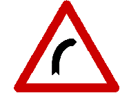
(1) 右彎
(2) 左彎
(3) 連續彎路先向右。 | 
(1) Right turn
(2) Left turn
(3) Winding road, right turn ahead | 1 | n/a | signs | choice | 001 | |
| 1290 | chinese-signs-choice-002 | 
(1) 左彎
(2) 右彎
(3) 連續彎路先向左。 | 
(1) Left turn
(2) Right turn
(3) Winding road, left turn ahead | 1 | n/a | signs | choice | 002 | |
| 1291 | chinese-signs-choice-003 | 
(1) 連續彎路先向右
(2) 左彎
(3) 右彎。 | 
(1) Winding road, right turn ahead
(2) Left turn
(3) Right turn | 1 | n/a | signs | choice | 003 | |
| 1292 | chinese-signs-choice-004 | 
(1) 連續彎路先向左
(2) 右彎
(3) 左彎。 | 
(1) Winding road, left turn ahead
(2) Right turn
(3) Left turn | 1 | n/a | signs | choice | 004 | |
| 1293 | chinese-signs-choice-005 | 
(1) 雙向道
(2) 救護站
(3) 岔路。 | 
(1) Two-way
(2) First-aid station
(3) Crossroads | 3 | n/a | signs | choice | 005 | |
| 1294 | chinese-signs-choice-006 | 
(1) 岔路
(2) 雙向道
(3) 禁止行人通行。 | 
(1) T intersection ahead
(2) Two-way
(3) Pedestrians prohibited | 1 | n/a | signs | choice | 006 | |
| 1295 | chinese-signs-choice-007 | 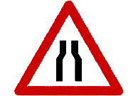
(1) 狹路
(2) 狹橋
(3) 路寬變更線。 | 
(1) Road narrows
(2) Narrow bridge
(3) Road width changes | 1 | n/a | signs | choice | 007 | |
| 1296 | chinese-signs-choice-008 | 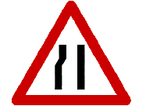
(1) 右側車道縮減
(2) 左側車道縮減
(3) 狹路。 | 
(1) Right Lane Ends
(2) Left Lane Ends
(3) Narrow road. | 2 | n/a | signs | choice | 008 | |
| 1297 | chinese-signs-choice-009 | 
(1) 右側車道縮減
(2) 狹路
(3) 匝道會車。 | 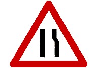
(1) Right lane narrows
(2) Narrow road
(3) Lane merges | 1 | n/a | signs | choice | 009 | |
| 1298 | chinese-signs-choice-010 | 
(1) 狹路
(2) 雙向道
(3) 岔路。 | 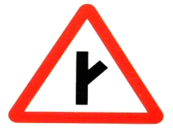
(1) Narrow road
(2) Two-way
(3) Y intersection. | 3 | n/a | signs | choice | 010 | |
| 1299 | chinese-signs-choice-011 | 
(1) )險升坡
(2) 險降坡
(3) 碼頭。 | 
(1) Steep hill
(2) Steep downgrade
(3) Wharf | 1 | n/a | signs | choice | 011 | |
| 1300 | chinese-signs-choice-012 | 
(1) 單行道
(2) 雙向道
(3) 狹路。 | 
(1) One way
(2) Two-way road
(3) Narrow road | 2 | n/a | signs | choice | 012 | |
| 1301 | chinese-signs-choice-013 | 
(1) 彎路
(2) 圓環
(3) 遵行方向。 | 
(1) Road curves
(2) Circular intersection
(3) Follow the traffic flow | 2 | n/a | signs | choice | 013 | |
| 1302 | chinese-signs-choice-014 | 
(1) 雙向道
(2) 狹橋
(3) 狹路。 | 
(1) Two-way road
(2) Narrow bridge
(3) Narrow road | 2 | n/a | signs | choice | 014 | |
| 1303 | chinese-signs-choice-015 | 
(1) 路面顛簸
(2) 坡道
(3) 路面高突。 | 
(1) Bumpy road
(2) Steep incline
(3) Bump ahead | 3 | n/a | signs | choice | 015 | |
| 1304 | chinese-signs-choice-016 | 
(1) 無柵門鐵路平交道
(2) 有柵門鐵路平交道
(3) 禁止汽車進入。 | 
(1) No-gate railroad crossing
(2) Gated railroad crossing
(3) Cars prohibited | 1 | n/a | signs | choice | 016 | |
| 1305 | chinese-signs-choice-017 | 
(1) 禁止汽車進入
(2) 無柵門鐵路平交道
(3) 有柵門鐵路平交道。 | 
(1) Cars prohibited
(2) No-gate railroad crossing
(3) Gated railroad crossing | 3 | 4 | signs | choice | 017 | |
| 1306 | chinese-signs-choice-018 | 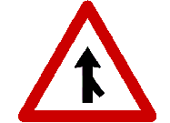
(1) 岔路
(2) 此路不通
(3) 匝道會車。 | 
(1) Crossroads ahead
(2) Dead end road
(3) Lanes merge ahead | 3 | n/a | signs | choice | 018 | |
| 1307 | chinese-signs-choice-019 | 
(1) 岔路
(2) 匝道會車
(3) 狹橋。 | 
(1) Intersection
(2) Merging traffic
(3) Narrow bridge. | 2 | n/a | signs | choice | 019 | |
| 1308 | chinese-signs-choice-020 | 
(1) 右側斷崖
(2) 碼頭、堤岸
(3) 危險。 | 
(1) Steep drop off on right
(2) Wharf embankment
(3) Danger | 2 | n/a | signs | choice | 020 | |
| 1309 | chinese-signs-choice-021 | 
(1) 路面高突
(2) 路滑
(3) 禁止超車。 | 
(1) Bump ahead
(2) Slippery road
(3) Passing prohibited | 2 | n/a | signs | choice | 021 | |
| 1310 | chinese-signs-choice-022 | 
(1) 狹路
(2) 隧道
(3) 狹橋。 | 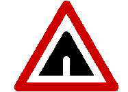
(1) Narrow road
(2) Tunnel
(3) Narrow bridge | 2 | n/a | signs | choice | 022 | |
| 1311 | chinese-signs-choice-023 | 
(1) 注意右側落石
(2) 斷崖
(3) 注意左側落石。 | 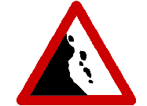
(1) Falling rocks on right
(2) Steep drop-off
(3) Falling rocks on left | 3 | n/a | signs | choice | 023 | |
| 1312 | chinese-signs-choice-024 | 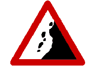
(1) 注意右側落石
(2) 注意左側落石
(3) 危險路面。 | 
(1) Falling Rocks (Right)
(2) Falling Rocks (Left)
(3) Hazardous road. | 1 | n/a | signs | choice | 024 | |
| 1313 | chinese-signs-choice-025 | 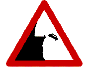
(1) 右側斷崖
(2) 碼頭堤岸
(3) 注意右側落石。 | 
(1) Cliffs on the right
(2) Wharf
(3) Beware of falling rocks on the right. | 1 | n/a | signs | choice | 025 | |
| 1314 | chinese-signs-choice-026 | 
(1) 警告號誌
(2) 危險
(3) 慢行。 | 
(1) Warning signal
(2) Danger
(3) Slow down | 2 | n/a | signs | choice | 026 | |
| 1315 | chinese-signs-choice-027 | 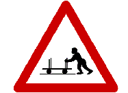
(1) 停車再開
(2) 當心台車
(3) 當心行人。 | 
(1) Make full stop then proceed
(2) Watch out for trolley
(3) Watch out for pedestrians | 2 | n/a | signs | choice | 027 | |
| 1316 | chinese-signs-choice-028 | 
(1) 當心行人
(2) 當心兒童
(3) 禁止行人通行。 | 
(1) Watch out for pedestrians
(2) Watch out for children
(3) Pedestrians prohibited | 2 | n/a | signs | choice | 028 | |
| 1317 | chinese-signs-choice-029 | 
(1) 當心兒童
(2) 當心行人
(3) 禁止行人通行。 | 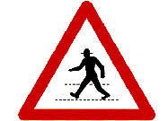
(1) Watch out for children
(2) Watch out for pedestrians
(3) Pedestrians prohibited | 2 | n/a | signs | choice | 029 | |
| 1318 | chinese-signs-choice-030 | 
(1) 注意號誌
(2) 危險
(3) 行車管制號誌。 | 
(1) Watch out for traffic signals
(2) Danger
(3) Traffic control signal | 1 | n/a | signs | choice | 030 | |
| 1319 | chinese-signs-choice-031 | 
(1) 路面高突
(2) 路面顛簸
(3) 修路。 | 
(1) Bump ahead
(2) Bumpy road
(3) Road construction | 2 | n/a | signs | choice | 031 | |
| 1320 | chinese-signs-choice-032 | 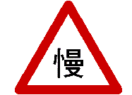
(1) 停車再開
(2) 讓路
(3) 慢行。 | 
(1) Make full stop then proceed
(2) Yield
(3) Slow down | 3 | n/a | signs | choice | 032 | |
| 1321 | chinese-signs-choice-033 | 
(1) 最低速限
(2) 最高速限
(3) 車輛總重限制。 | 
(1) Minimum speed limit
(2) Maximum speed limit
(3) Vehicle gross weight limit | 2 | n/a | signs | choice | 033 | |
| 1322 | chinese-signs-choice-034 | 
(1) 禁止停車
(2) 禁止臨時停車
(3) 禁止超車。 | 
(1) No parking
(2) No stopping
(3) No passing | 1 | n/a | signs | choice | 034 | |
| 1323 | chinese-signs-choice-035 | 
(1) 禁止行人通行
(2) 停車再開
(3) 禁止任何車輛進入。 | 
(1) Pedestrians prohibited
(2) Make full stop then proceed
(3) Do not enter | 3 | n/a | signs | choice | 035 | |
| 1324 | chinese-signs-choice-036 | 
(1) 禁止行人通行
(2) 禁止任何車輛進入
(3) 禁止四輪以上汽車進入。 | 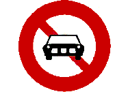
(1) Pedestrians prohibited
(2) Do not enter
(3) Cars prohibited | 3 | n/a | signs | choice | 036 | |
| 1325 | chinese-signs-choice-037 | 
(1) 禁止任何車輛進入
(2) 禁止拖車進入
(3) 禁止大貨車及聯結車進入。 | 
(1) Do not enter
(2) Trailer trucks prohibited
(3) Large trucks and trailer trucks prohibited | 3 | n/a | signs | choice | 037 | |
| 1326 | chinese-signs-choice-038 | 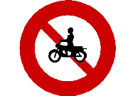
(1) 禁止大型重型機車以外之機車進入
(2) 禁止四輪以上汽車進入
(3) 禁止超車。 | 
(1) Large heavy-duty motorcycles only
(2) Vehicles with a minimum of 4 wheels are prohibited
(3) No passing. | 1 | n/a | signs | choice | 038 | |
| 1327 | chinese-signs-choice-039 | 
(1) 禁止任何車輛進入
(2) 禁止四輪以上汽車及機車進入
(3) 禁止行人通行。 | 
(1) Vehicles prohibited
(2) Motor vehicles with four or more wheels and motorcycles prohibited
(3) Pedestrians prohibited | 2 | n/a | signs | choice | 039 | |
| 1328 | chinese-signs-choice-040 | 
(1) 禁止大型重型機車以外之機車進入
(2) 禁止汽缸排氣量550 立方公分以上大型重型機車進入
(3) 禁止大型重型機車進入。 | 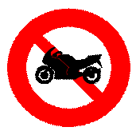
(1) Large heavy-duty motorcycles only
(2) Large heavy-duty motorcycles with engine capacity over 550cc are prohibited
(3) Large heavy-duty motorcycles are prohibited. | 3 | n/a | signs | choice | 040 | |
| 1329 | chinese-signs-choice-041 | 
(1) 禁止汽缸排氣量 550 立方公分以上大型重型機車進入
(2) 汽缸排氣量 550 立方公分以上大型重型機車專用車道
(3) 禁止自行車進入。 | 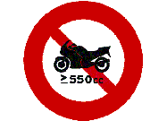
(1) No motorcycles over 550 cc displacement
(2) Motorcycles over 550 cc only
(3) No bicycles | 1 | n/a | signs | choice | 041 | |
| 1330 | chinese-signs-choice-042 | 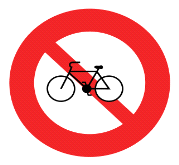
(1) 禁止電動自行車進入
(2) 禁止自行車進入
(3) 禁止機車進入。 | 
(1) No Electric Bicycles
(2) No Bicycles
(3) No Motorcycles. | 2 | n/a | signs | choice | 042 | |
| 1331 | chinese-signs-choice-043 | 
(1) 禁止迴車
(2) 禁止左轉
(3) 禁止右轉。 | 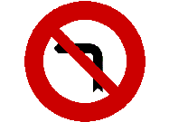
(1) U-turns prohibited
(2) Left turns prohibited
(3) Right turns prohibited | 2 | n/a | signs | choice | 043 | |
| 1332 | chinese-signs-choice-044 | 
(1) 禁止左轉
(2) 禁止右轉
(3) 禁止左轉及直行。 | 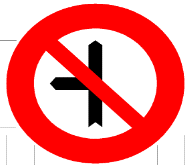
(1) No Left Turn
(2) No Right Turn
(3) Right Turn Only. | 3 | n/a | signs | choice | 044 | |
| 1333 | chinese-signs-choice-045 | 
(1) 禁止超車
(2) 禁止聯結車超車
(3) 禁止行人。 | 
(1) Passing prohibited
(2) Trailer trucks prohibited
(3) Pedestrians prohibited | 1 | n/a | signs | choice | 045 | |
| 1334 | chinese-signs-choice-046 | 
(1) 禁止左轉
(2) 禁止迴車
(3) 禁止停車。 | 
(1) Left turns prohibited
(2) U-turns prohibited
(3) Parking prohibited | 2 | n/a | signs | choice | 046 | |
| 1335 | chinese-signs-choice-047 | 
(1) 禁止行人通行
(2) 當心行人
(3) 當心兒童。 | 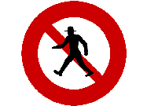
(1) Pedestrians prohibited
(2) Watch out for pedestrians
(3) Watch out for children | 1 | n/a | signs | choice | 047 | |
| 1336 | chinese-signs-choice-048 | 
(1) 車輛寬度限制
(2) 禁止停車
(3) 車輛高度限制。 | 
(1) Vehicle width limit
(2) Parking prohibited
(3) Vehicle height limit | 1 | n/a | signs | choice | 048 | |
| 1337 | chinese-signs-choice-049 | 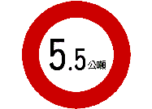
(1) 車輛總重限制
(2) 車輛載重限制
(3) 車輛空重。 | 
(1) Vehicle gross weight limit
(2) Vehicle loading weight limit
(3) Empty vehicle weight | 1 | n/a | signs | choice | 049 | |
| 1338 | chinese-signs-choice-050 | 
(1) 最低速限
(2) 最高速限
(3) 車輛總重限制。 | 
(1) Minimum speed limit
(2) Maximum speed limit
(3) Vehicle gross weight limit | 2 | n/a | signs | choice | 050 | |
| 1339 | chinese-signs-choice-051 | 
(1) 當心兒童
(2) 當心行人
(3) 行人專用。 | 
(1) Watch out for children
(2) Watch out for pedestrians
(3) Pedestrians only | 3 | n/a | signs | choice | 051 | |
| 1340 | chinese-signs-choice-052 | 
(1) 車輛長度限制
(2) 車寬限制
(3) 禁止汽車進入。 | 
(1) Vehicle length limit
(2) Vehicle width limit
(3) Cars prohibited | 1 | n/a | signs | choice | 052 | |
| 1341 | chinese-signs-choice-053 | 
(1) 停車再開
(2) 停車檢查
(3) 禁止行人通行。 | 
(1) Make full stop then proceed
(2) Stop for inspection
(3) Pedestrians prohibited | 2 | n/a | signs | choice | 053 | |
| 1342 | chinese-signs-choice-054 | 
(1) 停車再開
(2) 停車檢查
(3) 禁止通行。 | 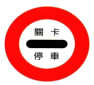
(1) Stop
(2) Checkpoint
(3) No Entry. | 2 | n/a | signs | choice | 054 | |
| 1343 | chinese-signs-choice-055 | 
(1) 靠右行駛
(2) 單行道
(3) 右轉。 | 
(1) Keep right
(2) One way
(3) Right turn | 1 | n/a | signs | choice | 055 | |
| 1344 | chinese-signs-choice-056 | 
(1) 禁止停車
(2) 停車再開
(3) 禁止臨時停車。 | 
(1) Parking prohibited
(2) Make full stop then proceed
(3) Temporary parking prohibited | 2 | n/a | signs | choice | 056 | |
| 1345 | chinese-signs-choice-057 | 
(1) 此路不通
(2) 救護站
(3) 醫院。 | 
(1) Dead end
(2) First-aid station
(3) Hospital | 2 | n/a | signs | choice | 057 | |
| 1346 | chinese-signs-choice-058 |
(1) 岔路
(2) 此路不通
(3) 加油站。 | 
(1) Crossroads
(2) Dead end
(3) Gas station | 2 | n/a | signs | choice | 058 | |
| 1347 | chinese-signs-choice-059 | 
(1) 省道路線編號
(2) 縣道路線編號
(3) 國道路線編號。 | 
(1) Provincial road number
(2) County road number
(3) National freeway road number | 1 | n/a | signs | choice | 059 | |
| 1348 | chinese-signs-choice-060 | 
(1) 省道路線編號
(2) 縣道路線編號
(3) 國道路線編號。 | 
(1) Provincial road number
(2) County road number
(3) National freeway road number | 3 | n/a | signs | choice | 060 | |
| 1349 | chinese-signs-choice-061 | 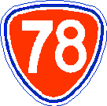
(1) 快速公路之省道路線編號
(2) 縣道路線編號
(3) 國道路線編號。 | 
(1) Route Number of Provincial Highway
(2) Route Number of County Highway
(3) Route Number of National Highway. | 1 | n/a | signs | choice | 061 | |
| 1350 | chinese-signs-choice-062 | 
(1) 省道路線編號
(2) 縣道路線編號
(3) 國道路線編號。 | 
(1) Provincial road number
(2) County road number
(3) National freeway number | 2 | n/a | signs | choice | 062 | |
| 1351 | chinese-signs-choice-063 | 
(1) 產業道路編號
(2) 縣道路線編號
(3) 鄉道路線編號。 | 
(1) Route number of process road
(2) Route number of County roads
(3) Route number of Village. | 3 | n/a | signs | choice | 063 | |
| 1352 | chinese-signs-choice-064 | 
(1) 閃光黃燈
(2) 行車管制號誌
(3) 雙閃光黃燈。 | 
(1) Flashing yellow light
(2) Traffic control signal
(3) Double flashing yellow light | 2 | n/a | signs | choice | 064 | |
| 1353 | chinese-signs-choice-065 | 
(1) 雙閃光黃燈
(2) 特種閃光黃燈號誌
(3) 時相交通號誌。 |
(1) Double flashing yellow light
(2) Special flashing yellow light
(3) 4-way stop light | 2 | n/a | signs | choice | 065 | |
| 1354 | chinese-signs-choice-066 | 
(1) 行人專用號誌
(2) 閃光黃燈
(3) 時相交通號誌。 | 
(1) Signal for pedestrians
(2) Flashing yellow light
(3) 4-way stop light | 1 | n/a | signs | choice | 066 | |
| 1355 | chinese-signs-choice-067 | 
(1) 特種閃光「黃燈」號誌
(2) 行車管制號誌
(3) 行人穿越道號誌。 | 
(1) Special flashing yellow light
(2) Traffic control signal
(3) Pedestrian crosswalk signal | 3 | n/a | signs | choice | 067 | |
| 1356 | chinese-signs-choice-068 | 
(1) 雙線以上電化鐵路平交道
(2) 雙線以上鐵路平交道
(3) 單線電化鐵路平交道。 | 
(1) Multi-track electronic railroad crossing
(2) Multi-track railroad crossing
(3) Single track electronic railroad crossing | 1 | n/a | signs | choice | 068 | |
| 1357 | chinese-signs-choice-069 | 
圖中黃色實線是指：
(1) 行人穿越道線
(2) 禁止停車線
(3) 停止線。 | 
The solid yellow lines indicate a:
(1) Pedestrian crosswalk
(2) No parking area
(3) Stop line | 2 | n/a | signs | choice | 069 | |
| 1358 | chinese-signs-choice-070 | 
(1) 行車分向線
(2) 枕木紋行人穿越道線
(3) 禁止超車線。 | 
(1) Direction separation
(2) Longitudinal crosswalk line
(3) Passing prohibited | 1 | n/a | signs | choice | 070 | |
| 1359 | chinese-signs-choice-071 | 
(1) 路寬變更線
(2) 近鐵路平交道線
(3) 近障礙物線。 | 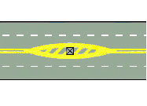
(1) Road width changes
(2) Railroad ahead
(3) Barrier ahead | 3 | n/a | signs | choice | 071 | |
| 1360 | chinese-signs-choice-072 | 
圖中白色虛線是指：
(1) 枕木紋行人穿越道線
(2) 車道線
(3) 路面邊線。 | 
The broken white line is a:
(1) Longitudinal crosswalk line
(2) Lane line
(3) Road edge line | 2 | n/a | signs | choice | 072 | |
| 1361 | chinese-signs-choice-073 | 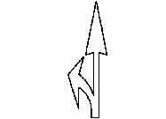
(1) 停放車輛線
(2) 指向線
(3) 停止線。 | 
(1) Parking line
(2) direction arrow
(3) Stop line | 2 | n/a | signs | choice | 073 | |
| 1362 | chinese-signs-choice-074 | 
圖中黃色雙實線是指：
(1) 禁止停車線
(2) 分向限制線
(3) 路寬變更線。 | 
The solid yellow double line means:
(1) Parking prohibited
(2) Passing prohibited in oncoming traffic lanes
(3) Road width changes | 2 | n/a | signs | choice | 074 | |
| 1363 | chinese-signs-choice-075 | 
圖中黃色雙實線是指：
(1) 行車分向線
(2) 雙向禁止超車線
(3) 停止線。 | 
The solid yellow double line indicates:
(1) Passing prohibited in oncoming traffic lanes
(2) Passing prohibited in both directions
(3) Stop here | 2 | n/a | signs | choice | 075 | |
| 1364 | chinese-signs-choice-076 | 
圖中紅色實線是指：
(1) 停止線
(2) 禁止臨時停車線
(3) 車輛停放線。 | 
The solid red line means;
(1) Stop
(2) Temporary parking prohibited
(3) Parking permitted | 2 | n/a | signs | choice | 076 | |
| 1365 | chinese-signs-choice-077 | 
圖中白色倒三角形標線是指：
(1) 讓路線
(2) 停止線
(3) 近障礙物線。 | 
The inverted white triangle means:
(1) Yield
(2) Stop
(3) Barrier ahead | 1 | n/a | signs | choice | 077 | |
| 1366 | chinese-signs-choice-078 | 
(1) 近障礙物線
(2) 近鐵路平交道線
(3) 路寬變更線。 | 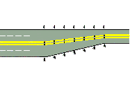
(1) Barrier ahead
(2) Railroad ahead
(3) Road width changes | 3 | n/a | signs | choice | 078 | |
| 1367 | chinese-signs-choice-079 | 
(1) 近鐵路平交道線
(2) 近障礙物線
(3) 路寬變更線。 | 
(1) Railroad ahead
(2) Barrier ahead
(3) Road width changes | 1 | n/a | signs | choice | 079 | |
| 1368 | chinese-signs-choice-080 | 
(1) 車道線
(2) 行車分向線
(3) 枕木紋行人穿越道線。 | 
(1) Lane line
(2) Direction separation line
(3) Longitudinal crosswalk line | 3 | n/a | signs | choice | 080 | |
| 1369 | chinese-signs-choice-081 | 
圖中斜紋是指：
(1) 斑馬紋行人穿越道線
(2) 停止線
(3) 路面邊線。 | 
The white diagonal lines are:
(1) Zebra crossing lines
(2) Stop lines
(3) Road edge lines | 1 | n/a | signs | choice | 081 | |
| 1370 | chinese-signs-choice-082 | 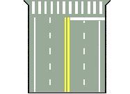
圖中橫向白色實線是指：
(1) 禁止超車線
(2) 停止線
(3) 行人穿越道線。 | 
The solid white horizontal line means：
(1) Passing prohibited
(2) Stop
(3) Pedestrian can cross | 2 | n/a | signs | choice | 082 | |
| 1371 | chinese-signs-choice-083 | 
(1) 停止線
(2) 近障礙物線
(3) 車輛停放線。 | 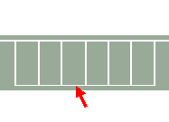
(1) Stop line
(2) Barrier ahead
(3) Parking line | 3 | n/a | signs | choice | 083 | |
| 1372 | chinese-signs-choice-084 | 
圖中箭頭所指白色實線是指：
(1) 路面邊線
(2) 車道線
(3) 禁止超車線。 | 
The solid white line indicated by the arrow is:
(1) The edge of the road
(2) A lane line
(3) Passing prohibited line | 1 | n/a | signs | choice | 084 | |
| 1373 | chinese-signs-choice-085 | 
(1) 前方來車停止
(2) 全部車輛停止
(3) 前後來車停止，左右來車通行。 | 
(1) Vehicles in front must stop
(2) All vehicles must stop
(3) Vehicles in the front and rear must stop, vehicles approaching from the left and right can proceed | 3 | n/a | signs | choice | 085 | |
| 1374 | chinese-signs-choice-086 | 
(1) 全部車輛停止
(2) 前後來車停止，左右來車通行
(3) 前方來車停止。 | 
(1) All vehicles must stop
(2) Vehicles in the front and rear must stop, vehicles approaching from left and right can proceed
(3) Vehicles in front must stop | 1 | n/a | signs | choice | 086 | |
| 1375 | chinese-signs-choice-087 | 
(1) 右方來車左轉彎
(2) 右方來車速行
(3) 左方來車速行。 | 
(1) Vehicles approaching from the right must turn left.
(2) Vehicles approaching from the right must pass quickly.
(3) Vehicles on the left must pass quickly. | 1 | n/a | signs | choice | 087 | |
| 1376 | chinese-signs-choice-088 | 
(1) 右方來車停止
(2) 右方來車左轉彎
(3) 右方來車速行。 | 
(1) Vehicles on the right must stop
(2) Vehicles approaching from the right must turn left
(3) Vehicles approaching from the right must quickly pass | 1 | n/a | signs | choice | 088 | |
| 1377 | chinese-signs-choice-089 | 
(1) 右方來車左轉彎
(2) 左方來車速行
(3) 右方來車速行。 | 
(1) Vehicles approaching from the right must turn left
(2) Vehicles approaching from the left must quickly pass
(3) Vehicles approaching from the right must quickly pass | 2 | n/a | signs | choice | 089 | |
| 1378 | chinese-signs-choice-090 | 
(1) 左方來車左轉彎
(2) 右方來車速行
(3) 左方來車停止。 | 
(1) Vehicles approaching from the left must turn left
(2) Vehicles approaching from the right must quickly pass
(3) Vehicles on the left must stop | 1 | n/a | signs | choice | 090 | |
| 1379 | chinese-signs-choice-091 | 
(1) 前方來車停止
(2) 前後停止左右通行
(3) 全部車輛停止。 | 
(1) Vehicles in front must stop
(2) Vehicles in the front and rear must stop, vehicles approaching from the left and right may proceed
(3) All vehicles must stop | 1 | n/a | signs | choice | 091 | |
| 1380 | chinese-signs-choice-092 | 
(1) 右方來車停止
(2) 左方來車通行
(3) 右方來車速行。 | 
(1) Vehicles on the right must stop
(2) Vehicles on the left may proceed
(3) Vehicles on right must pass through quickly | 3 | n/a | signs | choice | 092 | |
| 1381 | chinese-signs-choice-093 | 
(1) 右道封閉
(2) 左道封閉
(3) 車輛改道。 | 
(1) Right lane closed
(2) Left lane closed
(3) Detour ahead | 2 | n/a | signs | choice | 093 | |
| 1382 | chinese-signs-choice-094 | 
(1) 右道封閉
(2) 左道封閉
(3) 車輛改道。 | 
(1) Right lane closed
(2) Left lane closed
(3) Detour ahead | 1 | n/a | signs | choice | 094 | |
| 1383 | chinese-signs-choice-095 | 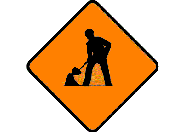
(1) 道路封閉
(2) 車輛改道
(3) 道路施工。 | 
(1) Lane closed ahead
(2) Detour ahead
(3) Road construction | 3 | n/a | signs | choice | 095 | |
| 1384 | chinese-signs-choice-096 | 
(1) 左道封閉
(2) 右道封閉
(3) 車輛改道。 | 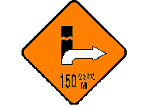
(1) Left lane closed
(2) Right lane closed
(3) Detour ahead | 3 | n/a | signs | choice | 096 | |
| 1385 | chinese-signs-choice-097 | 
(1) 指示改道方向
(2) 單行道
(3) 行車方向指示。 | 
(1) Follow the detour sign
(2) One way
(3) Direction sign | 1 | n/a | signs | choice | 097 | |
| 1386 | chinese-signs-choice-098 | 
(1) 道路施工
(2) 道路封閉
(3) 車輛改道。 | 
(1) Road construction
(2) Lane closed
(3) Detour ahead | 2 | n/a | signs | choice | 098 | |
| 1387 | chinese-signs-choice-099 | 
(1) 開亮頭燈
(2) 注意號誌
(3) 按鳴喇叭。 | 
(1) Turn on headlights
(2) Watch out for traffic signals
(3) Tap horn | 1 | n/a | signs | choice | 099 | |
| 1388 | chinese-signs-choice-100 | 
(1) 騎乘自行車當心行人
(2) 行人及自行車專行
(3) 自行車及機車專行。 | 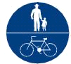
(1) Beware of pedestrians while riding a bicycle
(2) Pedestrians and bicycles only
(3) Bicycles and motorcycles only. | 2 | n/a | signs | choice | 100 | |
| 1389 | chinese-signs-choice-101 | 
道路指定
(1) 汽車專行
(2) 大客車專行
(3) 自行車及大型重型機車以外之機車專行。 | 
Designated
(1) Automobiles only
(2) Buses only
(3) Bicycles and scooters only, large heavy motorcycles are excluded. | 3 | n/a | signs | choice | 101 | |
| 1390 | chinese-signs-choice-102 | 
(1) 指定四輪以上汽車及汽缸排氣量 550 立方公分以上大型重型機車專行
(2) 指定自行車與機車專行
(3) 禁止四輪以上汽車與汽缸排氣量550 立方公分以上大型重型機車進入。 | 
(1) Motor vehicles and motorcycles over 550 cc displacement only
(2) Bicycles and motorcycles only
(3) No motor vehicles or motorcycles over 550 cc | 1 | n/a | signs | choice | 102 | |
| 1391 | chinese-signs-choice-103 | 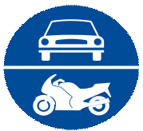
(1) 指定四輪以上汽車及汽缸排氣量 550 立方公分以上大型重型機車專行
(2) 道路指定四輪以上汽車及大型重型機車專行
(3) 禁止四輪以上汽車及大型重型機車進入。 | 
(1) For vehicles with at minimum of 4 wheels and large heavy-duty motorcycles with engine capacity over 550cc only
(2) For cars with a minimum of 4 wheels and large heavy-duty motorcycles only
(3) Vehicles with a minimum of 4 wheels and large heavy-duty motorcycles are prohibited. | 2 | n/a | signs | choice | 103 | |
| 1392 | chinese-signs-choice-104 | 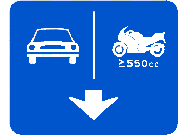
(1) 車道指定四輪以上汽車專行
(2) 車道指定四輪以上汽車及汽缸排氣量550 立方公分以上大型重型機車專行
(3) 禁止四輪以上汽車及汽缸排氣量550 立方公分以上大型重型機車進入。 | 
(1) Motor vehicles only
(2) Motor vehicles and motorcycles over 550 cc displacement only
(3) No motor vehicles or motorcycles over 550 cc | 2 | n/a | signs | choice | 104 | |
| 1393 | chinese-signs-choice-105 | 
(1) 車道指定自行車及大型重型機車以外之機車專行
(2) 車道指定自行車及大型重型機車專行
(3) 車道指定自行車及輕型機車專行。 | 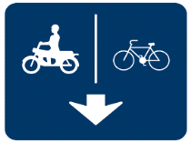
(1) For bicycles and motorcycles only, not including cruiser motorcycles
(2) For bicycles and cruiser motorcycles only
(3) For bicycles and light scooters only. | 1 | n/a | signs | choice | 105 | |
| 1394 | chinese-signs-choice-106 | 
(1) 車道指定自行車專行
(2) 車道指定汽車專行
(3) 車道指定機車專行。 | 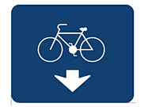
(1) Bicycle only lane
(2) Car only lane
(3) Motorcycle only lane. | 1 | n/a | signs | choice | 106 | |
| 1395 | chinese-signs-choice-107 | 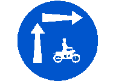
(1) 機慢車兩段右轉
(2) 機車專行
(3) 機慢車兩段左轉。 | 
(1) Two-step right turn for bicycles and motorcycles
(2) Motorcycles Only
(3) Two-step left turn for bicycles and motorcycles | 1 | n/a | signs | choice | 107 | |
| 1396 | chinese-signs-choice-108 | 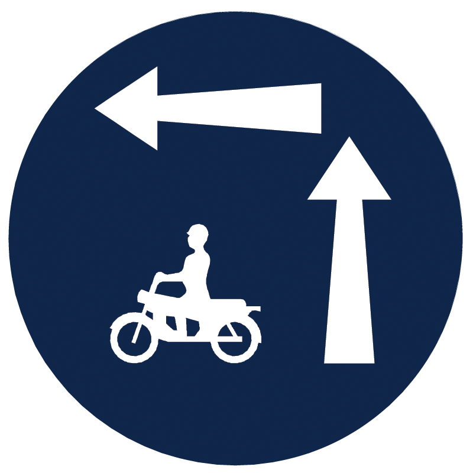
(1) 機慢車兩段右轉
(2) 機車專行
(3) 機慢車兩段左轉。 | 
(1) Two-step right turn for bicycles and motorcycles
(2) Motorcycles Only
(3) Two-step left turn for bicycles and motorcycles | 3 | n/a | signs | choice | 108 | |
| 1397 | chinese-signs-choice-109 | 
圖中白色虛線為：
(1) 轉彎線
(2) 網狀線
(3) 槽化線。 | 
The broken white lines represent:
(1) The turn lane
(2) Prohibited area
(3) Channelizing lines. | 1 | n/a | signs | choice | 109 | |
| 1398 | chinese-signs-choice-110 | 
本標誌為：
(1) 地名里程指示
(2) 方向里程指示
(3) 地名方向指示。 | 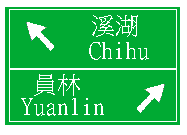
This sign shows
(1) Miles to a destination
(2) Direction and distance to a destination
(3) Destination name | 3 | n/a | signs | choice | 110 | |
| 1399 | chinese-signs-choice-111 | 
(1) 行車方向指示(直行後右轉)
(2) 道路遵行方向(僅准右轉)
(3) 右彎。 | 
(1) Vehicle direction (straight through and turn right)
(2) Road direction (right turn only)
(3) Right turn. | 1 | n/a | signs | choice | 111 | |
| 1400 | chinese-signs-choice-112 | 
本號誌是：
(1) 車道管制號誌，表示本車道封閉
(2) 前有岔道
(3) 行車管制號誌。 | 
This sign indicates
(1) Lane closed
(2) Crossroads ahead
(3) Traffic control | 1 | n/a | signs | choice | 112 | |
| 1401 | chinese-signs-choice-113 | 
(1) 捷運車站
(2) 鐵路車站
(3) 高速鐵路車站。 | 
(1) MRT station
(2) Railroad station
(3) High speed rail station | 1 | n/a | signs | choice | 113 | |
| 1402 | chinese-signs-choice-114 | 
(1) 停車處
(2) 公園
(3) 迴轉道。 | 
(1) Parking lot
(2) Park
(3) U-turn lane | 1 | n/a | signs | choice | 114 | |
| 1403 | chinese-signs-choice-115 | 
左臂向上，手掌向右微曲，表示：
(1) 右轉彎
(2) 左轉彎
(3) 讓後車超車。 | 
Raised left arm with the palm facing right indicates:
(1) Right turn
(2) Left turn
(3) Rear vehicles are permitted to pass | 1 | n/a | signs | choice | 115 | |
| 1404 | chinese-signs-choice-116 | 
左臂平伸，手掌向下，表示：
(1) 右轉彎
(2) 左轉彎
(3) 慢行。 | 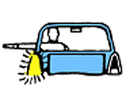
Left arm extended out with the palm facing down indicates :
(1) Right turn
(2) Left turn
(3) Slow down | 2 | n/a | signs | choice | 116 | |
| 1405 | chinese-signs-choice-117 | 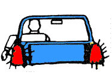
左臂向下垂伸，手掌向後，表示：
(1) 減速暫停
(2) 讓後車超越
(3) 倒車。 | 
Left arm bent downward with the palm facing the rear indicates:
(1) Slowing down to stop temporarily
(2) Rear vehicles are permitted to pass
(3) Vehicle backing up | 1 | n/a | signs | choice | 117 | |
| 1406 | chinese-signs-choice-118 |
(1) 道路僅准左轉
(2) 單行道
(3) 靠左側車道行駛。 | 
(1) Left Turn Only
(2) One-way
(3) Keep Left. | 1 | n/a | signs | choice | 118 | |
| 1407 | chinese-signs-choice-119 |
(1) 單行道
(2) 車道遵行方向
(3) 僅准左轉。 | 
(1) One-way
(2) Lane Direction
(3) Left Turn Only. | 2 | n/a | signs | choice | 119 | |
| 1408 | chinese-signs-choice-120 | 
(1) 僅准直行
(2) 遵行方向
(3) 單行道。 | 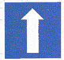
(1) Through Traffic Only
(2) Road Direction
(3) One-way. | 3 | n/a | signs | choice | 120 | |
| 1409 | chinese-signs-choice-121 | 
(1) 地名里程指示
(2) 方向里程指示
(3) 地名方向指示。 | 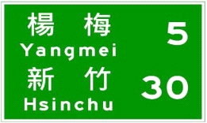
(1) Location and distance sign
(2) Direction and distance sign
(3) Location and direction sign | 1 | n/a | signs | choice | 121 | |
| 1410 | chinese-signs-choice-122 | 
(1) 地名里程指示
(2) 方向里程指示
(3) 地名方向指示。 | 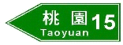
(1) Location and distance sign
(2) Direction and distance sign
(3) Location and direction sign. | 2 | n/a | signs | choice | 122 | |
| 1411 | chinese-signs-choice-123 | 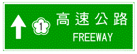
本標誌為高速公路指引標誌，用以指引：
(1) 快速公路
(2) 高速公路
(3) 一般道路 之車輛駛往高速公路交流道。 | 
This is a directional sign on the interchange of the freeways to guide the vehicles to the freeway interchange from :
(1) An expressway
(2) A freeway
(3) General roads. | 3 | n/a | signs | choice | 123 | |
| 1412 | chinese-signs-choice-124 | 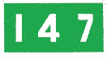
(1) 里程碑
(2) 里程牌
(3) 縣道路線編號標誌。 | 
(1) Milage tablet
(2) Milage signs
(3) Country route No. | 2 | n/a | signs | choice | 124 | |
| 1413 | chinese-signs-choice-125 | 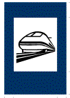
(1) 捷運車站
(2) 鐵路車站
(3) 高速鐵路車站。 | 
(1) MRT station
(2) Railroad station
(3) High speed rail station. | 3 | n/a | signs | choice | 125 | |
| 1414 | chinese-signs-choice-126 |
(1) 人行天橋
(2) 人行地下道
(3) 停車處。 | 
(1) Pedestrian bridge
(2) Pedestrian underpass
(3) Parking area. | 1 | n/a | signs | choice | 126 | |
| 1415 | chinese-signs-choice-127 |
(1) 人行天橋
(2) 人行地下道
(3) 停車處。 | 
(1) Pedestrian bridge
(2) Pedestrian underpass
(3) Parking area. | 2 | n/a | signs | choice | 127 | |
| 1416 | chinese-signs-choice-128 | 
(1) 迴轉道
(2) 安全方向導引
(3) 車道預告。 | 
(1) U-turn
(2) Chevron sign (turn warning sign)
(3) Lane direction. | 3 | n/a | signs | choice | 128 | |
| 1417 | chinese-signs-choice-129 | 
(1) 迴轉道
(2) 安全方向導引
(3) 車道預告。 | 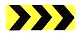
(1) U-turn
(2) Chevron sign (turn warning sign)
(3) Lane direction. | 2 | n/a | signs | choice | 129 | |
| 1418 | chinese-signs-choice-130 | 
(1) 警告標誌
(2) 道路施工標誌
(3) 車輛故障標誌。 | 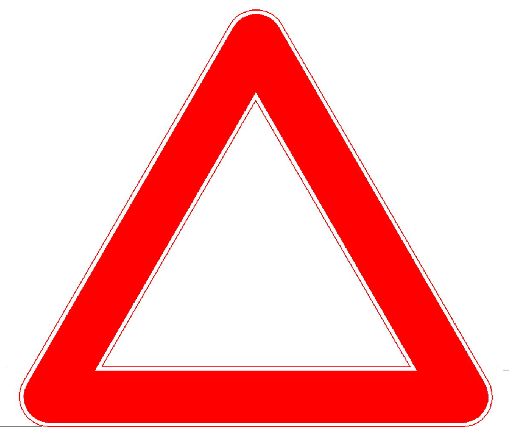
(1) Warning sign
(2) Construction sign
(3) Vehicle breakdown warning sign. | 3 | n/a | signs | choice | 130 | |
| 1419 | chinese-signs-choice-131 | 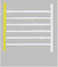
機車駕駛人如果在道路上發現圖中的橫向標線時，應該如何反應？
(1) 減速慢行
(2) 加速通過
(3) 檢查輪胎。 | 
If a person riding on the motorcycle seeing the horizontal markings shown in this picture, how should the driver react?
(1) slow down
(2) speed up
(3) check your tires. | 1 | n/a | signs | choice | 131 | |
| 1420 | chinese-signs-choice-132 |
圖中最外側的路面邊線與車道線中間的白色實線為何種標線？
(1) 快慢車道分隔線
(2) 行車分向線
(3) 雙方禁止超車線。 | 
The solid white line shown in the picture that can be found at the outer sides of the roads and the edges of the road are?
(1) lane lines
(2) broken yellow lines
(3) solid double yellow lines. | 1 | n/a | signs | choice | 132 | |
| 1421 | chinese-signs-choice-133 |
圖中路口交叉型標線是？
(1) 對角線行人穿越道線
(2) 網狀線
(3) 自行車穿越道線。 | 
The "X" mark shown in the picture indicates
(1) diagonal pedestrian crosswalk
(2) cross hatched no-stopping zone
(3) bicycle crossing. | 1 | 3 | signs | choice | 133 | |
| 1422 | chinese-signs-choice-134 |
圖中白色箭頭是
(1) 左轉彎
(2) 避車彎
(3) 車道縮減標線。 | 
The white arrow shown in the picture indicates
(1) left turn
(2) passing bay
(3) lane ends. | 3 | 4 | signs | choice | 134 | |
| 1423 | chinese-signs-choice-135 | 
(1) 特種閃光紅燈號誌
(2) 禁止通行
(3) 車道管制號誌。 | 
(1) Flashing red light
(2) No Entry
(3) Lane control signal. | 1 | n/a | signs | choice | 135 | |
| 1424 | chinese-signs-choice-136 | 
(1) 當心自行車
(2) 當心行人
(3) 當心機車。 | 
(1) Beware of bicycles
(2) Beware of Pedestrians
(3) Beware of motorcycles. | 1 | n/a | signs | choice | 136 | |
| 1425 | chinese-signs-choice-137 | 
(1) 港埠
(2) 渡口
(3) 修理站。 |
(1) Port
(2) Ferry terminal
(3) Service repair station. | 1 | n/a | signs | choice | 137 | |
| 1426 | chinese-signs-choice-138 | 
(1) 捷運車站
(2) 鐵路車站
(3) 高速鐵路車站。 | 
(1) MRT station
(2) Railroad station
(3) High-speed railroad station. | 2 | n/a | signs | choice | 138 | |
| 1427 | chinese-signs-choice-139 | 
(1) 公路汽車客運車站或轉運站
(2) 捷運車站
(3) 計程車招呼站。 | 
(1) A bus station or terminal
(2) MRT station
(3) Taxi stand. | 1 | n/a | signs | choice | 139 | |
| 1428 | chinese-signs-choice-140 | 
(1) 左轉彎
(2) 允讓後車超越
(3) 減速暫停。 | 
(1) Turn left
(2) Passing allowed
(3) Decelerate to a stop. | 3 | n/a | signs | choice | 140 | |
| 1429 | chinese-signs-choice-141 | 
(1) 右轉彎
(2) 允讓後車超越
(3) 減速暫停。 |
(1) Turn right
(2) Passing allowed
(3) Decelerate to a stop. | 2 | n/a | signs | choice | 141 | |
| 1430 | chinese-signs-choice-142 | 
(1) 右轉彎
(2) 允讓後車超越
(3) 減速暫停。 | 
(1) Turn right
(2) Passing allowed
(3) Decelerate to a stop. | 1 | n/a | signs | choice | 142 | |
| 1431 | chinese-signs-choice-143 | 
(1) 左轉彎
(2) 右轉彎
(3) 減速暫停。 | 
(1) Left Turn
(2) Right Turn
(3) Decelerate to a stop. | 1 | n/a | signs | choice | 143 | |
| 1432 | chinese-signs-choice-144 |
(1) 車道指定大客車專行
(2) 車道指定高乘載車輛專行
(3) 車道指定大眾捷運系統車輛專行。 | 
(1) Bus lane
(2) High occupancy lane
(3) Mass transit lane. | 3 | n/a | signs | choice | 144 | |
| 1433 | chinese-signs-choice-145 |
(1) 禁止四輪以上汽車
(2) 禁止大客車進入
(3) 禁止大眾捷運系統車輛進入。 | 
(1) Vehicles with more than 4 wheels are prohibited
(2) Large passenger vehicles are prohibited
(3) Mass transit vehicles are prohibited. | 2 | n/a | signs | choice | 145 | |
| 1434 | chinese-signs-choice-146 | 
(1) 車道指定四輪以上汽車及排氣量 550 立方公分以上之大型重型機車專行
(2) 車道指定四輪以上汽車及大型重型機車專行
(3) 車道指定四輪以上汽車及大型重型機車以外之機車專行。 |
(1) This lane is designated for vehicles with at minimum of 4 wheels and cruiser motorcycles with an engine capacity of 550cc or above.
(2) This lane is designated for vehicles with a minimum of 4 wheels and cruiser motorcycles only.
(3) This lane is designated for vehicles with a minimum of 4 wheels and all motorcycles except for cruiser motorcycles. | 2 | n/a | signs | choice | 146 | |
| 1435 | chinese-signs-choice-147 | 
(1) 車道指定大客車專行
(2) 車道指定高乘載車輛專行
(3) 車道指定大眾捷運系統車輛專行。 |
(1) Large passenger vehicle lane
(2) High occupancy lane
(3) Mass transit lane. | 1 | n/a | signs | choice | 147 | |
| 1436 | chinese-signs-choice-148 | 
(1) 禁止大客車及大貨車進入
(2) 禁止四輪以上汽車及大貨車進入
(3) 禁止大客車、大貨車及聯結車進入。 |
(1) Large passenger vehicles and large trucks are prohibited
(2) Cars and trucks with a minimum of 4 wheels are prohibited
(3) Large passenger vehicles, large trucks and container trucks are prohibited. | 3 | n/a | signs | choice | 148 | |
| 1437 | chinese-signs-choice-149 |
(1) 雙線以上鐵路平交道
(2) 單線鐵路平交道
(3) 單線電化鐵路平交道。 | 
(1) Railroad crossing with more than 2 rails
(2) Railroad crossing with single rail
(3) Railroad crossing with single electric rail. | 3 | n/a | signs | choice | 149 | |
| 1438 | chinese-signs-choice-150 |
(1) 地名
(2) 車道指示
(3) 地名方向指示。 | 
(1) The places
(2) Lane direction
(3) The places and direction. | 2 | n/a | signs | choice | 150 | |
| 1439 | chinese-signs-true-001 | 
連續彎路先向左 | 
Winding road, left turn ahead | X | n/a | signs | true/false | 001 | |
| 1440 | chinese-signs-true-002 | 
岔路 |
Forked road | O | n/a | signs | true/false | 002 | |
| 1441 | chinese-signs-true-003 | 
路面高突 | 
Bump ahead | X | n/a | signs | true/false | 003 | |
| 1442 | chinese-signs-true-004 | 
險降坡 | 
Steep downgrade ahead | O | n/a | signs | true/false | 004 | |
| 1443 | chinese-signs-true-005 | 
狹橋 | 
Narrow bridge | O | n/a | signs | true/false | 005 | |
| 1444 | chinese-signs-true-006 | 
狹路 | 
Narrow Road | X | n/a | signs | true/false | 006 | |
| 1445 | chinese-signs-true-007 | 
狹路 | 
Narrow road | X | n/a | signs | true/false | 007 | |
| 1446 | chinese-signs-true-008 | 
無柵門鐵路平交道 |
No-gate railroad crossing | O | n/a | signs | true/false | 008 | |
| 1447 | chinese-signs-true-009 | 
當心行人 | 
Watch out for pedestrians | O | n/a | signs | true/false | 009 | |
| 1448 | chinese-signs-true-010 | 
注意號誌 | 
Watch out for traffic signals | X | n/a | signs | true/false | 010 | |
| 1449 | chinese-signs-true-011 | 
路面顛簸 | 
Bumpy road | X | n/a | signs | true/false | 011 | |
| 1450 | chinese-signs-true-012 | 
隧道 | 
Tunnel ahead | O | n/a | signs | true/false | 012 | |
| 1451 | chinese-signs-true-013 |
禁止自行車進入 | 
Bicycles prohibited | X | n/a | signs | true/false | 013 | |
| 1452 | chinese-signs-true-014 | 
讓路 | 
Yield | O | n/a | signs | true/false | 014 | |
| 1453 | chinese-signs-true-015 | 
禁止會車 | 
Single lane road, pass with extreme caution | O | n/a | signs | true/false | 015 | |
| 1454 | chinese-signs-true-016 | 
分道 | 
Road forks ahead | O | n/a | signs | true/false | 016 | |
| 1455 | chinese-signs-true-017 | 
禁止停車 |
Parking prohibited | X | n/a | signs | true/false | 017 | |
| 1456 | chinese-signs-true-018 | 
停車再開 | 
Stop and go | O | n/a | signs | true/false | 018 | |
| 1457 | chinese-signs-true-019 | 
禁止任何車輛進入 | 
Do not enter | X | n/a | signs | true/false | 019 | |
| 1458 | chinese-signs-true-020 | 
禁止迴車 |
U-turns prohibited | O | n/a | signs | true/false | 020 | |
| 1459 | chinese-signs-true-021 | 
禁行汽車 | 
Cars prohibited | X | n/a | signs | true/false | 021 | |
| 1460 | chinese-signs-true-022 | 
車輛寬度限制 | 
Vehicle width limit | O | n/a | signs | true/false | 022 | |
| 1461 | chinese-signs-true-023 | 
禁止四輪以上汽車及機車進入 | 
Cars with four or more wheels and motorcycles prohibited | O | n/a | signs | true/false | 023 | |
| 1462 | chinese-signs-true-024 | 
當心自行車 |
Watch out for bicycles | O | n/a | signs | true/false | 024 | |
| 1463 | chinese-signs-true-025 | 
當心身心障礙者 | 
Watch out for the disabled persons | O | n/a | signs | true/false | 025 | |
| 1464 | chinese-signs-true-026 | 
禁止臨時停車 | 
No stopping | O | n/a | signs | true/false | 026 | |
| 1465 | chinese-signs-true-027 | 
禁止停車 | 
No parking | O | n/a | signs | true/false | 027 | |
| 1466 | chinese-signs-true-028 | 
最高速限 |
Maximum speed | O | n/a | signs | true/false | 028 | |
| 1467 | chinese-signs-true-029 | 
右側車道縮減 | 
Right lane narrows | O | n/a | signs | true/false | 029 | |
| 1468 | chinese-signs-true-030 | 
禁止三輪車進入 | 
Tri-wheeled vehicles prohibited | X | n/a | signs | true/false | 030 | |
| 1469 | chinese-signs-true-031 |
禁止汽車進入 | 
Cars prohibited | X | n/a | signs | true/false | 031 | |
| 1470 | chinese-signs-true-032 | 
禁止自行車進入 | 
Bicycles prohibited | X | n/a | signs | true/false | 032 | |
| 1471 | chinese-signs-true-033 | 
車輛高度限制 | 
Vehicle height limit | O | n/a | signs | true/false | 033 | |
| 1472 | chinese-signs-true-034 | 
禁止空計程車進入 | 
Taxi with no passengers prohibited | O | n/a | signs | true/false | 034 | |
| 1473 | chinese-signs-true-035 | 
禁止四輪以上汽車進入 | 
Cars prohibited | O | n/a | signs | true/false | 035 | |
| 1474 | chinese-signs-true-036 | 
禁止任何車輛進入 | 
Do not enter | O | n/a | signs | true/false | 036 | |
| 1475 | chinese-signs-true-037 | 
禁止右轉 |
Right turns prohibited | O | n/a | signs | true/false | 037 | |
| 1476 | chinese-signs-true-038 | 
危險 | 
Danger | O | n/a | signs | true/false | 038 | |
| 1477 | chinese-signs-true-039 | 
注意號誌 | 
Watch out for traffic signals | O | n/a | signs | true/false | 039 | |
| 1478 | chinese-signs-true-040 | 
當心兒童 | 
Watch out for children | O | n/a | signs | true/false | 040 | |
| 1479 | chinese-signs-true-041 | 
當心兒童 | 
Watch out for children | X | n/a | signs | true/false | 041 | |
| 1480 | chinese-signs-true-042 | 
路面高突 |
Bump ahead | O | n/a | signs | true/false | 042 | |
| 1481 | chinese-signs-true-043 | 
連續彎路先向右 | 
Winding road, right turn ahead | O | n/a | signs | true/false | 043 | |
| 1482 | chinese-signs-true-044 | 
雙向道 | 
Two-way | O | n/a | signs | true/false | 044 | |
| 1483 | chinese-signs-true-045 | 
救護站 | 
First-aid station | X | n/a | signs | true/false | 045 | |
| 1484 | chinese-signs-true-046 | 
岔路 | 
Intersection | O | n/a | signs | true/false | 046 | |
| 1485 | chinese-signs-true-047 | 
狹路 | 
Road narrows | X | n/a | signs | true/false | 047 | |
| 1486 | chinese-signs-true-048 | 
狹路 | 
Road narrows | O | n/a | signs | true/false | 048 | |
| 1487 | chinese-signs-true-049 | 
專行車輛(四輪以上汽車專行) | 
Cars only | O | n/a | signs | true/false | 049 | |
| 1488 | chinese-signs-true-050 | 
圓環遵行方向 |
Circular intersection, follow directions | O | n/a | signs | true/false | 050 | |
| 1489 | chinese-signs-true-051 |
專行車輛 | 
For vehicles only | X | n/a | signs | true/false | 051 | |
| 1490 | chinese-signs-true-052 | 
道路遵行方向 | 
Left turns only | O | n/a | signs | true/false | 052 | |
| 1491 | chinese-signs-true-053 | 
道路遵行方向 | 
Follow directions for left or right turn | O | n/a | signs | true/false | 053 | |
| 1492 | chinese-signs-true-054 | 
靠右行駛 | 
Keep right | O | 4 | signs | true/false | 054 | |
| 1493 | chinese-signs-true-055 | 
慢行 | 
Slow down | O | n/a | signs | true/false | 055 | |
| 1494 | chinese-signs-true-056 | 
單行道 | 
One way | O | n/a | signs | true/false | 056 | |
| 1495 | chinese-signs-true-057 | 
救護站 |
First-aid station | O | n/a | signs | true/false | 057 | |
| 1496 | chinese-signs-true-058 | 
路滑 | 
Slippery road | O | n/a | signs | true/false | 058 | |
| 1497 | chinese-signs-true-059 | 
禁止會車 | 
Single lane road | X | n/a | signs | true/false | 059 | |
| 1498 | chinese-signs-true-060 |
省道路線編號 | 
Provincial road number | X | n/a | signs | true/false | 060 | |
| 1499 | chinese-signs-true-061 | 
國道路線編號 | 
National freeway number | O | n/a | signs | true/false | 061 | |
| 1500 | chinese-signs-true-062 |
最低速限 | 
Minimum speed | O | n/a | signs | true/false | 062 | |
| 1501 | chinese-signs-true-063 | 
最高速限 | 
maximum speed limit | X | n/a | signs | true/false | 063 | |
| 1502 | chinese-signs-true-064 | 
道路遵行方向 | 
Follow the directional arrows | X | n/a | signs | true/false | 064 | |
| 1503 | chinese-signs-true-065 | 
避車彎 | 
Parking bay | O | n/a | signs | true/false | 065 | |
| 1504 | chinese-signs-true-066 | 
大型重型機車停車格 | 
parking space for large heavy-duty motorcycles | X | n/a | signs | true/false | 066 | |
| 1505 | chinese-signs-true-067 | 
圖中橫向白色實線是指停止線 | 
Solid white horizontal line means stop line | O | n/a | signs | true/false | 067 | |
| 1506 | chinese-signs-true-068 | 
圖中白色雙實線是指車道線 | 
Solid white double lines marks vehicle lane | X | n/a | signs | true/false | 068 | |
| 1507 | chinese-signs-true-069 | 
近鐵路平交道線 |
Railroad crossing ahead | O | n/a | signs | true/false | 069 | |
| 1508 | chinese-signs-true-070 | 
圖中白色虛線是指停止線 | 
The broken white line is a stop line. | X | n/a | signs | true/false | 070 | |
| 1509 | chinese-signs-true-071 | 
近障礙物線 | 
Barrier | O | n/a | signs | true/false | 071 | |
| 1510 | chinese-signs-true-072 | 
車輛停放線 | 
Parking line | O | n/a | signs | true/false | 072 | |
| 1511 | chinese-signs-true-073 | 
停止線 | 
Stop line | X | n/a | signs | true/false | 073 | |
| 1512 | chinese-signs-true-074 | 
圖中黃色實線與黃色虛線併列部分為單向禁止超車線 | 
The solid yellow line and broken yellow line indicate passing prohibited in one direction | O | n/a | signs | true/false | 074 | |
| 1513 | chinese-signs-true-075 |
圖中黃色雙實線是指禁止停車線 | 
The solid yellow double line means parking prohibited. | X | n/a | signs | true/false | 075 | |
| 1514 | chinese-signs-true-076 | 
圖中白色倒三角形標線為：讓路線 | 
The inverted white triangle means yield. | O | n/a | signs | true/false | 076 | |
| 1515 | chinese-signs-true-077 | 
路寬變更線 | 
Road width changes | X | n/a | signs | true/false | 077 | |
| 1516 | chinese-signs-true-078 | 
路寬變更線 | 
Road width changes | O | n/a | signs | true/false | 078 | |
| 1517 | chinese-signs-true-079 | 
注意號誌 |
Watch out for traffic signals | X | n/a | signs | true/false | 079 | |
| 1518 | chinese-signs-true-080 | 
特種閃光黃燈號誌 | 
Special flashing yellow light | O | n/a | signs | true/false | 080 | |
| 1519 | chinese-signs-true-081 | 
行人專用號誌 | 
Pedestrian crossing signal | O | n/a | signs | true/false | 081 | |
| 1520 | chinese-signs-true-082 | 
學童專用號誌 | 
School Children Crossing | X | n/a | signs | true/false | 082 | |
| 1521 | chinese-signs-true-083 | 
閃光黃燈 | 
Flashing yellow light | X | n/a | signs | true/false | 083 | |
| 1522 | chinese-signs-true-084 |
圖中黃色實線是指路面邊線 | 
The solid yellow line indicates the edge of the road | X | n/a | signs | true/false | 084 | |
| 1523 | chinese-signs-true-085 | 
雙線以上電化鐵路平交道 | 
Multi-track electronic railroad crossing. | O | n/a | signs | true/false | 085 | |
| 1524 | chinese-signs-true-086 | 
圖中斜紋線是指斑馬紋行人穿越道線 | 
Diagonal white lines mean zebra crossing | O | n/a | signs | true/false | 086 | |
| 1525 | chinese-signs-true-087 | 
圖中白色虛線是指車道線 | 
The broken white line is a lane line. | O | n/a | signs | true/false | 087 | |
| 1526 | chinese-signs-true-088 | 
指向線 | 
Road marking | O | n/a | signs | true/false | 088 | |
| 1527 | chinese-signs-true-089 | 
圖中黃色雙實線是指雙向禁止超車線 | 
Solid yellow double lines mean passing is prohibited in both directions. | O | 4 | signs | true/false | 089 | |
| 1528 | chinese-signs-true-090 | 
圖中黃色雙實線是指分向限制線 | 
Solid yellow double lines mean passing in oncoming lanes is prohibited | O | n/a | signs | true/false | 090 | |
| 1529 | chinese-signs-true-091 | 
圖中白色倒三角形標線為近障礙物線 | 
The inverted white triangle means barrier ahead. | X | n/a | signs | true/false | 091 | |
| 1530 | chinese-signs-true-092 | 
近障礙物線 | 
Barrier | X | 2 | signs | true/false | 092 | |
| 1531 | chinese-signs-true-093 | 
圖中停止線前端白色長方形標線為機慢車左轉待轉區線 | 
The white rectangular box in front of stop line is left turn area for slow vehicles and motorcycles. | O | n/a | signs | true/false | 093 | |
| 1532 | chinese-signs-true-094 |
圖中停止線前端白色長方形標線為機車停等區線，用以指示大型重型機車以外之機車駕駛人於紅燈亮時行駛停等之範圍。 | 
The white rectanglar marking in front of the stop line shown in the picture is a motorcycle waiting zone, which allows motorcycles, except large heavy-duty motorcycles, to wait in the area during red light. | X | n/a | signs | true/false | 094 | |
| 1533 | chinese-signs-true-095 | 
近障礙物線 | 
Barrier | X | n/a | signs | true/false | 095 | |
| 1534 | chinese-signs-true-096 | 
行車管制號誌 | 
Traffic control signal ahead | O | n/a | signs | true/false | 096 | |
| 1535 | chinese-signs-true-097 | 
閃光黃燈 | 
Flashing yellow light | X | n/a | signs | true/false | 097 | |
| 1536 | chinese-signs-true-098 | 
加油站 | 
Gas station | O | n/a | signs | true/false | 098 | |
| 1537 | chinese-signs-true-099 | 
此路不通 | 
Dead end | O | n/a | signs | true/false | 099 | |
| 1538 | chinese-signs-true-100 | 
全部車輛停止 | 
All vehicles must stop | O | n/a | signs | true/false | 100 | |
| 1539 | chinese-signs-true-101 | 
左方來車左轉彎 | 
Vehicles approaching from the left must turn left | X | n/a | signs | true/false | 101 | |
| 1540 | chinese-signs-true-102 |
右方來車停止 | 
Vehicles on the right must stop | O | n/a | signs | true/false | 102 | |
| 1541 | chinese-signs-true-103 | 
右方來車速行 | 
Vehicles approaching from the right must quickly pass | X | n/a | signs | true/false | 103 | |
| 1542 | chinese-signs-true-104 | 
前方來車停止 | 
Vehicles in front must stop | X | n/a | signs | true/false | 104 | |
| 1543 | chinese-signs-true-105 | 
前後來車停止，左右來車通行 |
Vehicles in the front and rear must stop, vehicles approaching from the left and right may proceed | O | n/a | signs | true/false | 105 | |
| 1544 | chinese-signs-true-106 | 
左方來車速行 |
Vehicles approaching from the left must quickly pass | X | n/a | signs | true/false | 106 | |
| 1545 | chinese-signs-true-107 | 
左方來車左轉彎 | 
Vehicles approaching from the left must turn left | O | n/a | signs | true/false | 107 | |
| 1546 | chinese-signs-true-108 | 
右道封閉 | 
Right lane closed | X | n/a | signs | true/false | 108 | |
| 1547 | chinese-signs-true-109 | 
左道封閉 |
Left lane closed | X | n/a | signs | true/false | 109 | |
| 1548 | chinese-signs-true-110 | 
道路施工 | 
Road construction | O | n/a | signs | true/false | 110 | |
| 1549 | chinese-signs-true-111 | 
車輛改道 | 
Detour ahead | O | n/a | signs | true/false | 111 | |
| 1550 | chinese-signs-true-112 | 
指示改道方向 | 
Follow the detour sign | O | n/a | signs | true/false | 112 | |
| 1551 | chinese-signs-true-113 | 
道路施工 | 
Road construction | X | n/a | signs | true/false | 113 | |
| 1552 | chinese-signs-true-114 | 
本標誌是指向北行 |
Northbound | O | n/a | signs | true/false | 114 | |
| 1553 | chinese-signs-true-115 | 
圖中網狀線，用以告示車輛駕駛人在本標線範圍內禁止臨時停車 | 
Checkered area indicates no standing in that area | O | n/a | signs | true/false | 115 | |
| 1554 | chinese-signs-true-116 | 
圖中網狀線，用以告示車輛駕駛人在本標線範圍內可以臨時停車 | 
Checkered area indicates standing allowed in that area | X | n/a | signs | true/false | 116 | |
| 1555 | chinese-signs-true-117 | 
左側斷崖 | 
Steep drop-off on the left | O | n/a | signs | true/false | 117 | |
| 1556 | chinese-signs-true-118 | 
注意落石 | 
Watch out for falling rocks | X | n/a | signs | true/false | 118 | |
| 1557 | chinese-signs-true-119 | 
注意強風 | 
Watch out for heavy wind | O | n/a | signs | true/false | 119 | |
| 1558 | chinese-signs-true-120 | 
注意標誌 | 
Watch for signs | X | n/a | signs | true/false | 120 | |
| 1559 | chinese-signs-true-121 | 
禁止超車 | 
No passing | O | n/a | signs | true/false | 121 | |
| 1560 | chinese-signs-true-122 | 
禁止會車 | 
Single lane road | X | n/a | signs | true/false | 122 | |
| 1561 | chinese-signs-true-123 | 
停車檢查 | 
Stop for weighing | O | n/a | signs | true/false | 123 | |
| 1562 | chinese-signs-true-124 | 
禁止停車 | 
Parking prohibited | X | n/a | signs | true/false | 124 | |
| 1563 | chinese-signs-true-125 | 
圖中黃色虛線為：行車分向線 | 
Broken yellow line is a direction separation line | O | n/a | signs | true/false | 125 | |
| 1564 | chinese-signs-true-126 | 
圖中黃色虛線為：分向限制線 | 
Broken yellow line separates oncoming traffic lanes | X | n/a | signs | true/false | 126 | |
| 1565 | chinese-signs-true-127 | 
圖中白色紋線為：枕木紋行人穿越道線 | 
Vertical white line is a longitudinal crosswalk line | O | n/a | signs | true/false | 127 | |
| 1566 | chinese-signs-true-128 | 
圖中白色紋線為：斑馬紋行人穿越道線 | 
Vertical white line is a zebra crossing | X | n/a | signs | true/false | 128 | |
| 1567 | chinese-signs-true-129 | 
省道路線編號 | 
Provincial road number | O | 3 | signs | true/false | 129 | |
| 1568 | chinese-signs-true-130 | 
國道路線編號 |
National freeway number | X | n/a | signs | true/false | 130 | |
| 1569 | chinese-signs-true-131 | 
最高速限 | 
Maximum speed | O | n/a | signs | true/false | 131 | |
| 1570 | chinese-signs-true-132 | 
最低速限 | 
Minimum speed | X | n/a | signs | true/false | 132 | |
| 1571 | chinese-signs-true-133 | 
本號誌是車道管制號誌 | 
Lane control sign. | O | n/a | signs | true/false | 133 | |
| 1572 | chinese-signs-true-134 | 
禁止左轉 |
no left turn | X | n/a | signs | true/false | 134 | |
| 1573 | chinese-signs-true-135 |
分道 | 
lane splits | X | n/a | signs | true/false | 135 | |
| 1574 | chinese-signs-true-136 |
雙向道 | 
Two-way | X | n/a | signs | true/false | 136 | |
| 1575 | chinese-signs-true-137 | 
岔路 | 
Y intersection | O | n/a | signs | true/false | 137 | |
| 1576 | chinese-signs-true-138 | 
當心飛機 |
Beware of airplanes | O | n/a | signs | true/false | 138 | |
| 1577 | chinese-signs-true-139 | 
道路僅准直行 |
No turns allowed | X | n/a | signs | true/false | 139 | |
| 1578 | chinese-signs-true-140 | 
車道遵行方向 |
lane direction | O | n/a | signs | true/false | 140 | |
| 1579 | chinese-signs-true-141 |
道路遵行方向 | 
road direction | X | n/a | signs | true/false | 141 | |
| 1580 | chinese-signs-true-142 |
靠右行駛 | 
keep right | X | n/a | signs | true/false | 142 | |
| 1581 | chinese-signs-true-143 | 
大客車專行 |
Bus only | O | n/a | signs | true/false | 143 | |
| 1582 | chinese-signs-true-144 |
車道指定四輪以上汽車專行 | 
exclusive for autobombiles with at least 4 wheels. | O | n/a | signs | true/false | 144 | |
| 1583 | chinese-signs-true-145 | 
禁鳴喇叭 |
no honking | X | n/a | signs | true/false | 145 | |
| 1584 | chinese-signs-true-146 | 
禁止自行車進入 |
no bikes | X | 1 | signs | true/false | 146 | |
| 1585 | chinese-signs-true-147 | 
車道禁止進入 |
no entry | O | n/a | signs | true/false | 147 | |
| 1586 | chinese-signs-true-148 | 
禁止左右轉 |
No right or left turns | O | n/a | signs | true/false | 148 | |
| 1587 | chinese-signs-true-149 | 
此路不通 | 
dead end | X | n/a | signs | true/false | 149 | |
| 1588 | chinese-signs-true-150 | 
禁止排氣量550 立方公分以上大型重型機車左轉 | 
No left turn for large heavy-duty motorcycle with engine capacity of 550cc or above. | X | n/a | signs | true/false | 150 | |
| 1589 | chinese-signs-true-151 | 
行車安全距離限制 |
vehicle safety distance | O | n/a | signs | true/false | 151 | |
| 1590 | chinese-signs-true-152 |
地名 | 
Location name | O | n/a | signs | true/false | 152 | |
| 1591 | chinese-signs-true-153 | 
地名方向指示 |
Locational direction sign | O | n/a | signs | true/false | 153 | |
| 1592 | chinese-signs-true-154 | 
路名 |
road name | O | n/a | signs | true/false | 154 | |
| 1593 | chinese-signs-true-155 | 
身心障礙者停車位 |
disabled parking space | O | n/a | signs | true/false | 155 | |
| 1594 | chinese-signs-true-156 | 
修理站 |
automobile repair service station | X | n/a | signs | true/false | 156 | |
| 1595 | chinese-signs-true-157 |
專行汽車 | 
cars only | X | n/a | signs | true/false | 157 | |
| 1596 | chinese-signs-true-158 |
迴轉道 | 
U-turn lane | O | n/a | signs | true/false | 158 | |
| 1597 | chinese-signs-true-159 | 
車輛故障標誌 |
warning triangle for vehicle with mechanical problems | X | n/a | signs | true/false | 159 | |
| 1598 | chinese-signs-true-160 | 
圖中停止線後方白色長方形標線為機車停等區線，用以指示大型重型機車以外之機車駕駛人於紅燈亮時行駛停等之範圍。 | 
The white rectanglar marking in front of the stop line shown in the picture is a motorcycle waiting zone, which allows motorcycles, except large heavy-duty motorcycles, to wait in the area during red light. | O | n/a | signs | true/false | 160 | |
| 1599 | chinese-signs-true-161 |
圖中停止線後方白色長方形標線為機慢車左轉待轉區線。 | 
The white rectangular marking behind the stop line in the picture is the motorcycle waiting zone for left turn traffic. | X | n/a | signs | true/false | 161 | |
| 1600 | chinese-signs-true-162 |
圖中右方行人穿越道線與機慢車左轉待轉區之間的帶狀標線為自行車穿越道線，用以指示自行車於交岔路口或路段中穿越道路的行駛範圍。 | 
The crosshatch marking between the crosswalk and the motorcycle waiting zone as shown in the picture is for bicycles crossing, which indicates the area where bicycles are allowed to cross the street at intersections or in the middle of the road. | O | n/a | signs | true/false | 162 | |
| 1601 | chinese-signs-true-163 | 
圖中白色箭頭為車道縮減標線，用以指示前方車道縮減，指引匯入鄰近車道。 | 
The white arrow in the picture is a lane ends sign, which indicates the lane is coming to an end, and guides you to merge with the adjacent traffic. | O | n/a | signs | true/false | 163 | |
| 1602 | chinese-signs-true-164 | 
圖中白色箭頭為避車彎，於車輛有緊急狀況時暫時停放之用。 |
The white arrow shown in the picture indicates a passing bay, where a car may park during emergency. | X | 3 | signs | true/false | 164 | |
| 1603 | chinese-signs-true-165 | 
充電站 |
charging station | O | n/a | signs | true/false | 165 | |
| 1604 | chinese-signs-true-166 | 
充電站 |
charging station | X | n/a | signs | true/false | 166 | |
| 1605 | chinese-signs-true-167 | 
僅准直行 |
through traffic only | O | n/a | signs | true/false | 167 | |
| 1606 | chinese-signs-true-168 | 
圓環遵行方向 | 
directional sign for roundabout | X | n/a | signs | true/false | 168 | |
| 1607 | chinese-signs-true-169 |
當心大客車 | 
beware of bus or large passenger vehicles | X | n/a | signs | true/false | 169 | |
| 1608 | chinese-signs-true-170 |
左轉彎 | 
left turn | O | n/a | signs | true/false | 170 | |
| 1609 | chinese-signs-true-171 |
右轉彎 | 
right turn | O | n/a | signs | true/false | 171 | |
| 1610 | chinese-signs-true-172 | 
減速暫停 | 
slow down and stop | X | n/a | signs | true/false | 172 | |
| 1611 | chinese-signs-true-173 | 
允讓後車超越 |
passing allowed | X | n/a | signs | true/false | 173 | |